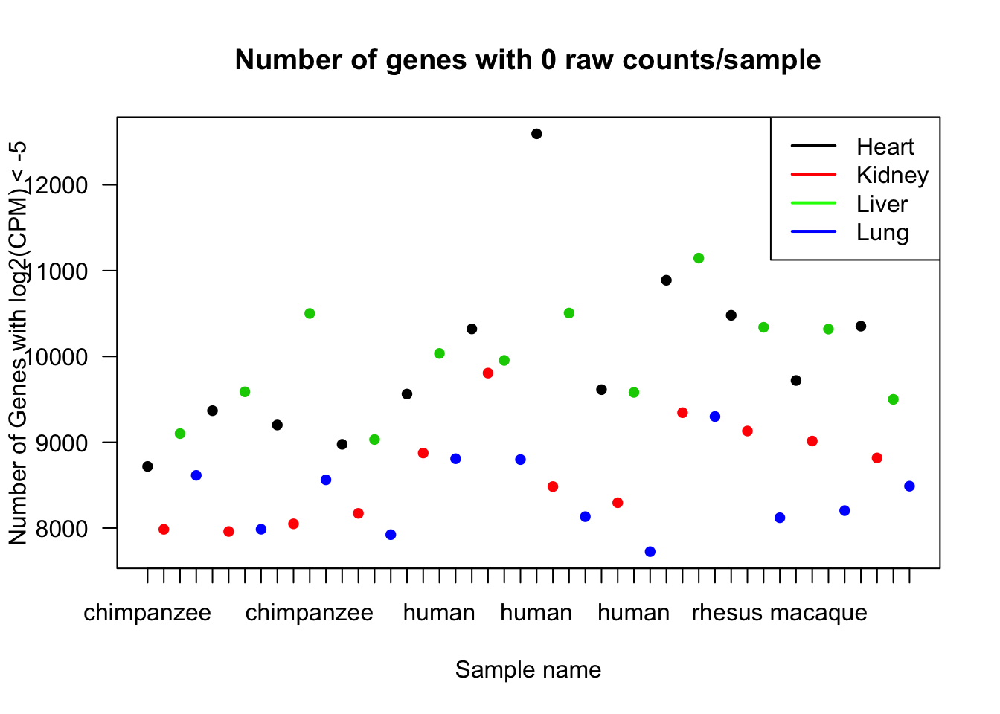

Filtering_analysis
Lauren Blake
June 10, 2016
The goal of this file is to establish filtering criteria for multispecies RNA-seq data.
Introduction
There are the main considerations for filtering:
When to filter (before or after performing TMM/CPM). Given that this is multi-species and multi-tissue analysis, I would argue that it makes sense to filter before performing TMM/CPM. My reasoning is that if we filter after TMM/CPM, it would then be prudent to perform TMM and CPM again with the updated library sizes.
What threshold(s) to filter at e.g. how many samples, tissues, and/or species should have a present value in order to include the gene in the later analysis. For example, Julien had used the cut-off of log2(cpm > 1) in at least 4 of the samples for each gene. This is a potentially lax cutoff and may lead to us having lots of missing data when we perform the differential expression analysis.
# Load libraries
library("gplots")## Warning: package 'gplots' was built under R version 3.1.3##
## Attaching package: 'gplots'
##
## The following object is masked from 'package:stats':
##
## lowesslibrary("ggplot2")## Warning: package 'ggplot2' was built under R version 3.1.3library("RColorBrewer")
library("scales")
library("edgeR")## Loading required package: limma## Warning: package 'limma' was built under R version 3.1.3library("R.utils")## Warning: package 'R.utils' was built under R version 3.1.3## Loading required package: R.oo## Warning: package 'R.oo' was built under R version 3.1.3## Loading required package: R.methodsS3
## R.methodsS3 v1.7.0 (2015-02-19) successfully loaded. See ?R.methodsS3 for help.
## R.oo v1.19.0 (2015-02-27) successfully loaded. See ?R.oo for help.
##
## Attaching package: 'R.oo'
##
## The following objects are masked from 'package:methods':
##
## getClasses, getMethods
##
## The following objects are masked from 'package:base':
##
## attach, detach, gc, load, save
##
## R.utils v2.0.2 (2015-04-27) successfully loaded. See ?R.utils for help.
##
## Attaching package: 'R.utils'
##
## The following object is masked from 'package:utils':
##
## timestamp
##
## The following objects are masked from 'package:base':
##
## cat, commandArgs, getOption, inherits, isOpen, parse, warningslibrary("plyr")## Warning: package 'plyr' was built under R version 3.1.3# Load colors
colors <- colorRampPalette(c(brewer.pal(9, "Blues")[1],brewer.pal(9, "Blues")[9]))(100)
pal <- c(brewer.pal(9, "Set1"), brewer.pal(8, "Set2"), brewer.pal(12, "Set3"))
#Load the data
#Raw counts
counts_genes <- read.delim("~/Reg_Evo_Primates/ashlar-trial/data/counts_genes.txt")
#Sample information
samples <- read.csv("~/Reg_Evo_Primates/ashlar-trial/data/Sample_info_RNAseq.csv")
labels <- paste(samples$Species, samples$Tissue, sep=" ")
dim(counts_genes)## [1] 30030 48log2(CPM) > 1 in at least 4 samples
We are beginning with 30030 genes and 48 samples. What happens when we require keeping only those that have log2(CPM) > 1 in at least 4 samples? (Julien’s analysis)
dge_original <- DGEList(counts=as.matrix(counts_genes), genes=rownames(counts_genes), group = as.character(t(labels)))
dge_original <- calcNormFactors(dge_original)
cpm <- cpm(dge_original, normalized.lib.sizes=TRUE, log=TRUE, prior.count = 0.25)
head(cpm)## C1H C1K C1Li C1Lu C2H C2K
## ENSG00000000003 4.567373 6.447533 8.256017 5.424906 4.6294354 6.011805
## ENSG00000000005 2.416000 -1.580095 -1.416352 -3.341347 0.6076502 -1.343658
## ENSG00000000419 5.840304 5.181024 5.932747 5.421890 5.6238128 5.035649
## ENSG00000000457 4.558401 5.177784 5.897776 4.915903 4.7768304 5.224658
## ENSG00000000460 1.505008 1.832930 2.075455 2.252356 1.6034149 1.903546
## ENSG00000000938 5.610063 3.782664 5.086430 7.494062 2.4759548 4.113386
## C2Li C2Lu C3H C3K C3Li
## ENSG00000000003 7.997439 4.518180 4.896187 6.34935971 7.711220
## ENSG00000000005 -2.074003 -2.073564 -1.336243 -0.08391333 -3.805819
## ENSG00000000419 5.781412 5.153538 5.656791 5.12246958 6.340540
## ENSG00000000457 6.513238 4.939606 4.599465 5.14729901 6.424910
## ENSG00000000460 2.292856 1.977228 1.561216 1.40473716 2.271103
## ENSG00000000938 5.356426 8.037124 4.945957 4.16655579 5.131295
## C3Lu C4H C4K C4Li C4Lu H1H
## ENSG00000000003 5.825590 4.200148 6.445727 8.368230 5.362211 6.761084
## ENSG00000000005 -3.821423 3.812407 -1.533431 -3.682999 -2.532144 -6.806579
## ENSG00000000419 5.546317 5.749810 5.199950 5.796045 5.253771 6.134200
## ENSG00000000457 5.118596 4.609688 4.965236 6.512006 5.195795 5.269211
## ENSG00000000460 2.074325 1.421009 1.768841 2.121422 2.408692 5.108993
## ENSG00000000938 7.109951 3.603345 3.563260 4.494896 7.649746 4.442136
## H1K H1Li H1Lu H2H H2K H2Li
## ENSG00000000003 6.804563 6.546031 5.007223 3.704707 7.1262303 6.618244
## ENSG00000000005 4.852944 -6.806579 -2.246586 -3.903089 0.3878291 -6.806579
## ENSG00000000419 5.528057 6.052945 5.719069 5.629978 5.3823470 5.817742
## ENSG00000000457 4.224917 4.923772 4.410342 3.430292 4.0791476 4.430133
## ENSG00000000460 2.706694 4.959282 3.226274 1.915724 1.8992527 2.637193
## ENSG00000000938 3.999256 4.449888 7.786373 5.583692 3.6609998 5.969598
## H2Lu H3H H3K H3Li H3Lu
## ENSG00000000003 4.123641 3.4819522 7.018616442 7.646317 5.182205
## ENSG00000000005 -6.806579 -6.8065788 0.009014279 -6.806579 -6.806579
## ENSG00000000419 5.255982 5.6892431 5.781990575 6.127195 4.901956
## ENSG00000000457 4.144389 4.3789705 4.649846700 4.904103 3.891301
## ENSG00000000460 2.495636 -0.1372257 2.917685496 3.148170 2.349467
## ENSG00000000938 6.911422 4.0351829 2.570227284 5.651445 6.804843
## H4H H4K H4Li H4Lu R1H
## ENSG00000000003 4.298917 6.3173589 6.492465 4.430781 4.277450
## ENSG00000000005 -2.885525 -0.4099302 -6.806579 -4.381165 -6.806579
## ENSG00000000419 6.259288 5.5536660 5.736507 5.317749 5.385154
## ENSG00000000457 3.327086 4.0330630 5.078478 4.140972 4.206293
## ENSG00000000460 1.644565 1.9287495 3.040136 2.571756 1.205569
## ENSG00000000938 4.933243 3.7664364 6.801466 8.216330 1.758374
## R1K R1Li R1Lu R2H R2K
## ENSG00000000003 6.865893 8.2379489 5.862719 4.587429 7.080213
## ENSG00000000005 -6.806579 -3.5812300 -2.947388 -2.950144 -2.392446
## ENSG00000000419 5.324798 5.7295743 4.834230 5.257598 4.989863
## ENSG00000000457 4.957819 5.0471784 4.784547 4.273744 5.100864
## ENSG00000000460 1.488300 -0.2693252 2.427739 1.377881 1.266081
## ENSG00000000938 2.497210 3.7078234 6.462495 2.289137 2.627796
## R2Li R2Lu R3H R3K R3Li
## ENSG00000000003 8.590210 5.596179 4.447299 7.118296 8.159964
## ENSG00000000005 -1.254679 -4.918947 -4.250247 -4.518792 -3.157713
## ENSG00000000419 5.673041 4.822969 5.441223 5.319612 5.947843
## ENSG00000000457 5.461042 5.207134 4.219708 5.092042 5.317075
## ENSG00000000460 1.446891 2.336439 1.634827 1.826680 1.371274
## ENSG00000000938 3.622173 6.524890 2.849036 2.219476 3.593860
## R3Lu R4H R4K R4Li R4Lu
## ENSG00000000003 5.443878 4.822954 7.048140 7.679671 5.347353
## ENSG00000000005 -3.806700 -2.535407 -2.099889 -4.589602 -6.806579
## ENSG00000000419 4.946500 5.357811 5.169441 5.438501 5.027872
## ENSG00000000457 5.155818 4.440126 5.098001 5.292544 4.814466
## ENSG00000000460 2.567598 1.018736 1.463169 1.508474 2.833647
## ENSG00000000938 6.836275 2.405256 2.264315 4.483635 6.820965cpm_filtered <- cpm[rowSums(cpm > 1) >= 4, ]
dim(cpm_filtered)## [1] 16934 48This leaves us with 16,934 genes.
Different log2(cpm) thresholds (1 to 48 samples required)
#Find number of genes for each sample threshold
filtered_genes <- array(1:48, dim = (c(48,1)))
for (i in 1:48){
cpm_filtered <- cpm[rowSums(cpm > 1) >= i, ]
filter_genes <- as.data.frame(dim(cpm_filtered))
filtered_genes[i, 1] <- filter_genes[1,]
}
# Plot the results
plot(filtered_genes, pch = 16, xlab = "Number of samples required to have log2(cpm) > 1", ylab = "Number of genes", main = "Genes for each sample threshold")
There are 8916 genes when we require log2(cpm) > 1 in all 48 samples.
Part I: Filtering schemes based on raw counts
What if we try raw counts > 0 in all 48 samples?
#Find number of genes for each sample threshold
filtered_genes <- array(1:48, dim = (c(48,1)))
for (i in 1:48){
counts_genes_filtered <- counts_genes[rowSums(counts_genes > 0) >= i, ]
filter_genes <- as.data.frame(dim(counts_genes_filtered))
filtered_genes[i, 1] <- filter_genes[1,]
}
# Plot the results
plot(filtered_genes, pch = 16, xlab = "Number of samples required to have (raw counts) > 0", ylab = "Number of genes", main = "Genes for each sample threshold")There are 14090 genes when we require (raw counts) > 0 in all 48 samples.
Distribution of NAs/0 counts
We are concerned about the distribution of the missing data (where raw counts > 0) e.g. if one species or tissue-species pair is over-represented in the missing genes
# Copy the raw counts table
counts_genes_filtered <- counts_genes
# If the raw count in a cell is > 0, replace the counts with a 1
counts_genes_filtered[counts_genes_filtered > 0 ] <- 1
# If the raw count in a cell is =< 0, replace the counts with a 0
counts_genes_filtered[counts_genes_filtered <= 0 ] <- 0
head(counts_genes_filtered)## C1H C1K C1Li C1Lu C2H C2K C2Li C2Lu C3H C3K C3Li C3Lu C4H
## ENSG00000000003 1 1 1 1 1 1 1 1 1 1 1 1 1
## ENSG00000000005 1 1 1 1 1 1 1 1 1 1 1 1 1
## ENSG00000000419 1 1 1 1 1 1 1 1 1 1 1 1 1
## ENSG00000000457 1 1 1 1 1 1 1 1 1 1 1 1 1
## ENSG00000000460 1 1 1 1 1 1 1 1 1 1 1 1 1
## ENSG00000000938 1 1 1 1 1 1 1 1 1 1 1 1 1
## C4K C4Li C4Lu H1H H1K H1Li H1Lu H2H H2K H2Li H2Lu H3H H3K
## ENSG00000000003 1 1 1 1 1 1 1 1 1 1 1 1 1
## ENSG00000000005 1 1 1 0 1 0 1 1 1 0 0 0 1
## ENSG00000000419 1 1 1 1 1 1 1 1 1 1 1 1 1
## ENSG00000000457 1 1 1 1 1 1 1 1 1 1 1 1 1
## ENSG00000000460 1 1 1 1 1 1 1 1 1 1 1 1 1
## ENSG00000000938 1 1 1 1 1 1 1 1 1 1 1 1 1
## H3Li H3Lu H4H H4K H4Li H4Lu R1H R1K R1Li R1Lu R2H R2K R2Li
## ENSG00000000003 1 1 1 1 1 1 1 1 1 1 1 1 1
## ENSG00000000005 0 0 1 1 0 1 0 0 1 1 1 1 1
## ENSG00000000419 1 1 1 1 1 1 1 1 1 1 1 1 1
## ENSG00000000457 1 1 1 1 1 1 1 1 1 1 1 1 1
## ENSG00000000460 1 1 1 1 1 1 1 1 1 1 1 1 1
## ENSG00000000938 1 1 1 1 1 1 1 1 1 1 1 1 1
## R2Lu R3H R3K R3Li R3Lu R4H R4K R4Li R4Lu
## ENSG00000000003 1 1 1 1 1 1 1 1 1
## ENSG00000000005 1 1 1 1 1 1 1 1 0
## ENSG00000000419 1 1 1 1 1 1 1 1 1
## ENSG00000000457 1 1 1 1 1 1 1 1 1
## ENSG00000000460 1 1 1 1 1 1 1 1 1
## ENSG00000000938 1 1 1 1 1 1 1 1 1# Count the number of genes that have a raw count < 1
x <- 30030 - colSums(counts_genes_filtered)
par(las=1)
plot(x, pch = 16, ylab = "Number of Genes with Raw Counts < 1", xlab = "Sample name", xaxt = 'n', col = as.factor(samples$Tissue), main = "Number of genes with 0 raw counts/sample")
axis(side = 1, at = 1:48,labels = samples$Species)
legend("topright", c("Heart", "Kidney", "Liver", "Lung"), lwd = c(2,2,2,2), col = c("black", "red", "green", "blue"))
What if we require (raw counts) >= 1 in 3/4 individuals for each tissue-species pair instead of ?
chimp_hearts <- c(1, 5, 9, 13)
chimp_kidneys <- c(2,6,10,14)
chimp_livers <- c(3,7,11,15)
chimp_lungs <- c(4,8,12,16)
human_hearts <- c(17,21,25,29)
human_kidneys <- c(18,22,26,30)
human_livers <- c(19,23,27,31)
human_lungs <- c(20,24,28,32)
rhesus_hearts <- c(33,37,41,45)
rhesus_kidneys <- c(34,38,42,46)
rhesus_livers <- c(35,39,43,47)
rhesus_lungs <- c(36,40,44,48)
# Save the counts
counts_genes_filtered_3 <- counts_genes_filtered
# Put the number of samples that you want to have for every tissue-species pair (counts out of 4)
count = 3
counts_genes_filtered_3A <- counts_genes_filtered_3[rowSums(counts_genes_filtered_3[, chimp_hearts] > 0) >= count, ]
dim(counts_genes_filtered_3A)## [1] 20125 48counts_genes_filtered_3B <- counts_genes_filtered_3A[rowSums(counts_genes_filtered_3A[, chimp_kidneys] > 0) >= count, ]
dim(counts_genes_filtered_3B)## [1] 19376 48counts_genes_filtered_3C <- counts_genes_filtered_3B[rowSums(counts_genes_filtered_3B[, chimp_livers] > 0) >= count, ]
dim(counts_genes_filtered_3C)## [1] 18295 48counts_genes_filtered_3D <- counts_genes_filtered_3C[rowSums(counts_genes_filtered_3C[, chimp_lungs] > 0) >= count, ]
dim(counts_genes_filtered_3D)## [1] 18135 48counts_genes_filtered_3E <- counts_genes_filtered_3D[rowSums(counts_genes_filtered_3D[, human_hearts] > 0) >= count, ]
dim(counts_genes_filtered_3E)## [1] 17094 48counts_genes_filtered_3F <- counts_genes_filtered_3E[rowSums(counts_genes_filtered_3E[, human_kidneys] > 0) >= count, ]
dim(counts_genes_filtered_3F)## [1] 16982 48counts_genes_filtered_3G <- counts_genes_filtered_3F[rowSums(counts_genes_filtered_3F[, human_livers] > 0) >= count, ]
dim(counts_genes_filtered_3G)## [1] 16742 48counts_genes_filtered_3H <- counts_genes_filtered_3G[rowSums(counts_genes_filtered_3G[, human_lungs] > 0) >= count, ]
dim(counts_genes_filtered_3H)## [1] 16700 48counts_genes_filtered_3I <- counts_genes_filtered_3H[rowSums(counts_genes_filtered_3H[, rhesus_hearts] > 0) >= count, ]
dim(counts_genes_filtered_3I)## [1] 16129 48counts_genes_filtered_3J <- counts_genes_filtered_3I[rowSums(counts_genes_filtered_3I[, rhesus_kidneys] > 0) >= count, ]
dim(counts_genes_filtered_3J)## [1] 16039 48counts_genes_filtered_3K <- counts_genes_filtered_3J[rowSums(counts_genes_filtered_3J[, rhesus_livers] > 0) >= count, ]
dim(counts_genes_filtered_3K)## [1] 15816 48counts_genes_filtered_3L <- counts_genes_filtered_3K[rowSums(counts_genes_filtered_3K[, rhesus_lungs] > 0) >= count, ]
dim(counts_genes_filtered_3L)## [1] 15801 48counts_genes_filtered_3L_sums <- rowSums(counts_genes_filtered_3L)
hist(counts_genes_filtered_3L_sums, main = "Number of genes remaining (3/4 specices-tissue criteria)", xlab = "Number of genes")As noted earlier, when we require each sample in each tissue-species pair to have raw counts >0 in each gene, we have 14,090 genes remaining.
When we require 3/4 samples in each tissue-species pair to have raw counts >0 in each gene, we have 15,801 genes remaining.
When we require 2/4 samples in each tissue-species pair to have raw counts >0 in each gene, we have 17,109 genes remaining.
Density plots of gene counts when we require 3/4 samples in each tissue-species pair to have raw counts > 0
# Find the original counts of all of the genes that fit the 3/4 criteria
inshared_lists = row.names(counts_genes) %in% rownames(counts_genes_filtered_3L)
inshared_lists_data <- as.data.frame(inshared_lists)
counts_genes_in <- cbind(counts_genes, inshared_lists_data)
counts_genes_in_3_of_4 <- subset(counts_genes_in, inshared_lists_data == "TRUE")
counts_genes_in_3_of_4 <- counts_genes_in_3_of_4[,1:48]
# Take the log2 of the data. Note: there still are some -Infs because only 3/4 samples were required to have a non-zero raw count
counts_genes_filtered_log2 <- log2(counts_genes_in_3_of_4)
counts_genes_filtered_log2[counts_genes_filtered_log2 == -Inf] <- NA
summary(counts_genes_filtered_log2)## C1H C1K C1Li C1Lu
## Min. : 0.000 Min. : 0.000 Min. : 0.000 Min. : 0.000
## 1st Qu.: 6.508 1st Qu.: 6.977 1st Qu.: 6.109 1st Qu.: 6.728
## Median : 8.748 Median : 9.248 Median : 8.418 Median : 9.039
## Mean : 8.407 Mean : 8.858 Mean : 8.098 Mean : 8.613
## 3rd Qu.:10.419 3rd Qu.:10.862 3rd Qu.:10.174 3rd Qu.:10.682
## Max. :19.648 Max. :18.401 Max. :21.958 Max. :19.334
## NA's :26 NA's :10 NA's :36 NA's :41
## C2H C2K C2Li C2Lu
## Min. : 0.000 Min. : 0.000 Min. : 0.000 Min. : 0.000
## 1st Qu.: 6.022 1st Qu.: 6.954 1st Qu.: 5.931 1st Qu.: 7.358
## Median : 8.344 Median : 9.132 Median : 8.447 Median : 9.577
## Mean : 7.998 Mean : 8.740 Mean : 8.052 Mean : 9.192
## 3rd Qu.:10.067 3rd Qu.:10.667 3rd Qu.:10.206 3rd Qu.:11.205
## Max. :19.665 Max. :18.050 Max. :21.909 Max. :19.451
## NA's :57 NA's :18 NA's :36 NA's :12
## C3H C3K C3Li C3Lu
## Min. : 0.000 Min. : 0.000 Min. : 0.000 Min. : 0.000
## 1st Qu.: 6.150 1st Qu.: 7.044 1st Qu.: 5.285 1st Qu.: 6.672
## Median : 8.581 Median : 9.205 Median : 7.864 Median : 8.928
## Mean : 8.217 Mean : 8.833 Mean : 7.486 Mean : 8.561
## 3rd Qu.:10.352 3rd Qu.:10.796 3rd Qu.: 9.711 3rd Qu.:10.613
## Max. :20.774 Max. :17.719 Max. :20.892 Max. :18.961
## NA's :40 NA's :18 NA's :133 NA's :29
## C4H C4K C4Li C4Lu
## Min. : 0.000 Min. : 0.000 Min. : 0.000 Min. : 0.000
## 1st Qu.: 6.285 1st Qu.: 6.672 1st Qu.: 5.322 1st Qu.: 6.931
## Median : 8.618 Median : 8.896 Median : 7.794 Median : 9.111
## Mean : 8.243 Mean : 8.521 Mean : 7.438 Mean : 8.752
## 3rd Qu.:10.323 3rd Qu.:10.509 3rd Qu.: 9.576 3rd Qu.:10.746
## Max. :19.413 Max. :18.315 Max. :21.551 Max. :17.744
## NA's :33 NA's :23 NA's :128 NA's :13
## H1H H1K H1Li H1Lu
## Min. : 0.000 Min. : 0.000 Min. : 0.000 Min. : 0.000
## 1st Qu.: 5.977 1st Qu.: 7.150 1st Qu.: 6.087 1st Qu.: 6.794
## Median : 8.384 Median : 9.276 Median : 8.476 Median : 8.833
## Mean : 8.027 Mean : 8.886 Mean : 8.117 Mean : 8.508
## 3rd Qu.:10.130 3rd Qu.:10.827 3rd Qu.:10.208 3rd Qu.:10.384
## Max. :21.354 Max. :18.097 Max. :21.491 Max. :17.806
## NA's :42 NA's :28 NA's :67 NA's :27
## H2H H2K H2Li H2Lu
## Min. : 0.000 Min. : 0.000 Min. : 0.000 Min. : 0.000
## 1st Qu.: 5.672 1st Qu.: 5.807 1st Qu.: 5.977 1st Qu.: 7.087
## Median : 8.039 Median : 8.055 Median : 8.313 Median : 9.260
## Mean : 7.671 Mean : 7.636 Mean : 7.950 Mean : 8.898
## 3rd Qu.: 9.852 3rd Qu.: 9.671 3rd Qu.:10.067 3rd Qu.:10.868
## Max. :18.496 Max. :18.009 Max. :19.501 Max. :17.836
## NA's :72 NA's :120 NA's :69 NA's :31
## H3H H3K H3Li H3Lu
## Min. : 0.000 Min. : 0.000 Min. : 0.000 Min. : 0.000
## 1st Qu.: 5.392 1st Qu.: 7.077 1st Qu.: 5.322 1st Qu.: 7.140
## Median : 7.547 Median : 9.260 Median : 7.781 Median : 9.212
## Mean : 7.179 Mean : 8.857 Mean : 7.421 Mean : 8.908
## 3rd Qu.: 9.162 3rd Qu.:10.803 3rd Qu.: 9.579 3rd Qu.:10.816
## Max. :18.953 Max. :18.843 Max. :21.122 Max. :18.785
## NA's :647 NA's :14 NA's :139 NA's :13
## H4H H4K H4Li H4Lu
## Min. : 0.000 Min. : 0.000 Min. : 0.000 Min. : 0.000
## 1st Qu.: 6.248 1st Qu.: 7.147 1st Qu.: 6.022 1st Qu.: 7.637
## Median : 8.562 Median : 9.306 Median : 8.238 Median : 9.646
## Mean : 8.202 Mean : 8.920 Mean : 7.929 Mean : 9.356
## 3rd Qu.:10.250 3rd Qu.:10.851 3rd Qu.: 9.951 3rd Qu.:11.225
## Max. :19.920 Max. :19.225 Max. :19.988 Max. :18.547
## NA's :30 NA's :9 NA's :59 NA's :2
## R1H R1K R1Li R1Lu
## Min. : 0.000 Min. : 0.000 Min. : 0.000 Min. : 0.000
## 1st Qu.: 5.209 1st Qu.: 6.209 1st Qu.: 5.087 1st Qu.: 6.820
## Median : 7.651 Median : 8.524 Median : 7.600 Median : 9.033
## Mean : 7.274 Mean : 8.087 Mean : 7.259 Mean : 8.610
## 3rd Qu.: 9.464 3rd Qu.:10.155 3rd Qu.: 9.504 3rd Qu.:10.622
## Max. :19.512 Max. :18.319 Max. :22.045 Max. :19.296
## NA's :172 NA's :51 NA's :186 NA's :49
## R2H R2K R2Li R2Lu
## Min. : 0.000 Min. : 0.000 Min. : 0.000 Min. : 0.000
## 1st Qu.: 5.426 1st Qu.: 6.555 1st Qu.: 5.700 1st Qu.: 7.200
## Median : 7.907 Median : 8.823 Median : 8.180 Median : 9.360
## Mean : 7.527 Mean : 8.409 Mean : 7.825 Mean : 8.976
## 3rd Qu.: 9.714 3rd Qu.:10.428 3rd Qu.:10.054 3rd Qu.:10.934
## Max. :19.773 Max. :18.453 Max. :22.545 Max. :18.626
## NA's :79 NA's :26 NA's :66 NA's :4
## R3H R3K R3Li R3Lu
## Min. : 0.000 Min. : 0.000 Min. : 0.000 Min. : 0.000
## 1st Qu.: 6.000 1st Qu.: 6.435 1st Qu.: 5.615 1st Qu.: 7.401
## Median : 8.414 Median : 8.845 Median : 8.160 Median : 9.597
## Mean : 8.065 Mean : 8.406 Mean : 7.805 Mean : 9.200
## 3rd Qu.:10.199 3rd Qu.:10.544 3rd Qu.:10.070 3rd Qu.:11.200
## Max. :20.257 Max. :19.596 Max. :22.853 Max. :19.154
## NA's :25 NA's :34 NA's :86 NA's :7
## R4H R4K R4Li R4Lu
## Min. : 0.000 Min. : 0.000 Min. : 0.000 Min. : 0.000
## 1st Qu.: 5.644 1st Qu.: 6.858 1st Qu.: 6.358 1st Qu.: 7.366
## Median : 8.050 Median : 9.167 Median : 8.898 Median : 9.609
## Mean : 7.693 Mean : 8.755 Mean : 8.519 Mean : 9.191
## 3rd Qu.: 9.847 3rd Qu.:10.834 3rd Qu.:10.741 3rd Qu.:11.221
## Max. :19.832 Max. :19.447 Max. :22.866 Max. :19.551
## NA's :83 NA's :16 NA's :16 NA's :19all_hearts <- c(1,5,9,13,17, 21,25,29,33,37,41,45)
all_kidneys <- c(2,6,10,14,18, 22,26,30,34,38,42,46)
all_livers <- c(3,7,11,15,19, 23,27,31,35,39,43,47)
all_lungs <- c(4,8,12,16,20, 24,28,31,36,40,44,48)
col = as.data.frame(pal[as.numeric(samples$Species)])
plotDensities(counts_genes_filtered_log2[,all_hearts], col=col[all_hearts, ], legend="topright")
plotDensities(counts_genes_filtered_log2[,all_kidneys], col=col[all_kidneys, ], legend="topright")
plotDensities(counts_genes_filtered_log2[,all_livers], col=col[all_livers, ], legend="topright")plotDensities(counts_genes_filtered_log2[,all_lungs], col=col[all_lungs, ], legend="topright")
# Look at all tissues in each species
col = as.data.frame(pal[as.numeric(samples$Tissue)])
plotDensities(counts_genes_filtered_log2[,1:16],col=col[1:16, ], legend="topright")plotDensities(counts_genes_filtered_log2[,17:32], col=col[17:32, ], legend="topright")plotDensities(counts_genes_filtered_log2[,33:48], col=col[33:48, ], legend="topright")
Part II: Testing for the distribution of missing data
For example, what if all of the genes that have 0 raw counts are rhesus? Are lungs? Are rhesus lungs?
Distribution of the missing data when we require 3/4 samples in each tissue-species pair to have raw counts > 0
# Count the number of genes that have a raw count < 1
x <- 30030 - colSums(counts_genes_filtered_3L)
par(las=1)
plot(x, pch = 16, ylab = "Number of Genes with Raw Counts < 1 in at least 3/4 samples in each tissue-species pair", xlab = ' ', xaxt = 'n', col = as.factor(samples$Tissue), main = "Number of genes with raw counts < 1")
axis(side = 1, at = 1:48,labels = samples$Species)
legend("topright", c("Heart", "Kidney", "Liver", "Lung"), lwd = c(2,2,2,2), col = c("black", "red", "green", "blue"))
Note: The outlier here is H3H. Not sure why.
# We want a list of genes that do not meet the criteria of 3/4 samples with a raw count > 0 in each tissue-species pair
inshared_lists = row.names(counts_genes) %in% rownames(counts_genes_filtered_3L)
inshared_lists_data <- as.data.frame(inshared_lists)
counts_genes_in <- cbind(counts_genes, inshared_lists_data)
counts_genes_not_in_3_of_4 <- subset(counts_genes_in, inshared_lists_data == "FALSE")
counts_genes_not_in_3_of_4 <- counts_genes_not_in_3_of_4[,1:48]
# If the raw count in a cell is > 0, replace the counts with a 1
counts_genes_not_in_3_of_4[counts_genes_not_in_3_of_4 > 0 ] <- 1
# If the raw count in a cell is =< 0, replace the counts with a 0
counts_genes_not_in_3_of_4[counts_genes_not_in_3_of_4 <= 0 ] <- 0
head(counts_genes_not_in_3_of_4)## C1H C1K C1Li C1Lu C2H C2K C2Li C2Lu C3H C3K C3Li C3Lu C4H
## ENSG00000000005 1 1 1 1 1 1 1 1 1 1 1 1 1
## ENSG00000002745 1 1 1 1 1 1 1 1 1 1 0 1 1
## ENSG00000004809 1 1 1 1 1 1 1 1 1 1 0 1 1
## ENSG00000004846 1 0 1 0 1 1 0 0 0 0 0 1 0
## ENSG00000004948 1 1 1 1 1 1 1 1 1 1 0 1 1
## ENSG00000005001 0 1 0 1 0 1 0 1 0 1 0 1 0
## C4K C4Li C4Lu H1H H1K H1Li H1Lu H2H H2K H2Li H2Lu H3H H3K
## ENSG00000000005 1 1 1 0 1 0 1 1 1 0 0 0 1
## ENSG00000002745 1 1 1 0 1 1 1 1 1 1 1 0 1
## ENSG00000004809 1 0 1 1 1 1 1 0 0 0 1 0 1
## ENSG00000004846 0 0 0 1 1 1 1 1 1 1 1 1 1
## ENSG00000004948 1 1 1 1 1 0 1 1 1 0 1 1 1
## ENSG00000005001 1 1 1 1 1 1 1 0 1 1 1 0 1
## H3Li H3Lu H4H H4K H4Li H4Lu R1H R1K R1Li R1Lu R2H R2K R2Li
## ENSG00000000005 0 0 1 1 0 1 0 0 1 1 1 1 1
## ENSG00000002745 1 0 1 1 1 1 0 0 0 1 0 1 0
## ENSG00000004809 0 1 1 1 1 1 1 1 0 0 1 1 1
## ENSG00000004846 1 1 1 1 1 1 0 0 0 0 0 0 1
## ENSG00000004948 1 1 1 1 1 1 1 1 0 1 0 1 0
## ENSG00000005001 1 1 1 1 1 1 1 1 1 1 0 1 1
## R2Lu R3H R3K R3Li R3Lu R4H R4K R4Li R4Lu
## ENSG00000000005 1 1 1 1 1 1 1 1 0
## ENSG00000002745 1 0 0 0 1 0 1 1 1
## ENSG00000004809 1 0 1 1 1 1 1 0 1
## ENSG00000004846 1 1 1 1 1 0 1 0 1
## ENSG00000004948 1 1 1 0 1 1 1 0 1
## ENSG00000005001 1 1 1 1 1 0 1 1 1sum_ea_gene <- rowSums(counts_genes_not_in_3_of_4)
sum_ea_gene_comp = 48 - sum_ea_gene
hist(sum_ea_gene_comp, breaks = 49, main = "Number of samples missing in genes that did not meet the 3/4 samples criteria", xlab = "Number of samples missing/gene", xlim = c(0,48))
The in this graph suggests that for many of the genes, if there is not enough samples to meet the criteria of 3/4 in each species-tissue pair, then it is usually because there is raw count < 1 in many samples.
We want to see what is the pattern of 0s and 1s for the samples that do not meet in the 3/4 criteria. We will use a logistic regression model for each gene to answer the question if tissue or species a statistically significant predictor of whether there will be missing data / raw count = 0.
If all of the samples have a raw counts value of 0, then there will be a warning. Therefore, let’s eliminate the genes for which all of the samples have raw counts = 0. (Even if those are eliminated, I think that there are still warnings because of the number of 0 counts compared to 1 counts.)
Distribution of NAs in genes that do not meet the criteria of 3/4 samples in each species-tissue pair
# We take out all the ones that have all samples missing and make an array to store the data
counts_genes_not_in_3_of_4_all_0 <- counts_genes_not_in_3_of_4[rowSums(counts_genes_not_in_3_of_4) > 0, ]
dim(counts_genes_not_in_3_of_4_all_0)## [1] 12452 48dim_counts_genes_not_in_3_of_4_all_0 <- as.data.frame(dim(counts_genes_not_in_3_of_4_all_0))
dim_counts_genes_not_in_3_of_4_all_0 <- dim_counts_genes_not_in_3_of_4_all_0[1,1]
# Create a matrix for saving the p-values that is 6 x the number of genes
log_reg_p_values <- array(data = NA, dim = c(6, dim_counts_genes_not_in_3_of_4_all_0))
# Find the p-values for tissue and species
for (i in 1: dim_counts_genes_not_in_3_of_4_all_0){
one_gene <- counts_genes_not_in_3_of_4_all_0[i,]
one_gene <- t(one_gene)
one_gene_species <- cbind(one_gene, samples$Species)
one_gene_tissue <- cbind(one_gene_species, samples$Tissue)
one_gene_tissue <- as.data.frame(one_gene_tissue)
colnames(one_gene_tissue) <- c("Gene1", "Species", "Tissue")
gene.glm = glm(Gene1 ~ as.factor(Species) + as.factor(Tissue), data = one_gene_tissue, family = binomial)
suppressWarnings(gene.glm)
log_reg_p_values[,i] <- summary(gene.glm)$coefficients[,4]
# print(i)
} ## Warning: glm.fit: fitted probabilities numerically 0 or 1 occurred## Warning: glm.fit: fitted probabilities numerically 0 or 1 occurred## Warning: glm.fit: fitted probabilities numerically 0 or 1 occurred## Warning: glm.fit: fitted probabilities numerically 0 or 1 occurred## Warning: glm.fit: fitted probabilities numerically 0 or 1 occurred## Warning: glm.fit: fitted probabilities numerically 0 or 1 occurred## Warning: glm.fit: fitted probabilities numerically 0 or 1 occurred## Warning: glm.fit: fitted probabilities numerically 0 or 1 occurred## Warning: glm.fit: fitted probabilities numerically 0 or 1 occurred## Warning: glm.fit: fitted probabilities numerically 0 or 1 occurred## Warning: glm.fit: fitted probabilities numerically 0 or 1 occurred## Warning: glm.fit: fitted probabilities numerically 0 or 1 occurred## Warning: glm.fit: fitted probabilities numerically 0 or 1 occurred## Warning: glm.fit: fitted probabilities numerically 0 or 1 occurred## Warning: glm.fit: fitted probabilities numerically 0 or 1 occurred## Warning: glm.fit: fitted probabilities numerically 0 or 1 occurred## Warning: glm.fit: fitted probabilities numerically 0 or 1 occurred## Warning: glm.fit: fitted probabilities numerically 0 or 1 occurred## Warning: glm.fit: fitted probabilities numerically 0 or 1 occurred## Warning: glm.fit: fitted probabilities numerically 0 or 1 occurred## Warning: glm.fit: fitted probabilities numerically 0 or 1 occurred## Warning: glm.fit: fitted probabilities numerically 0 or 1 occurred## Warning: glm.fit: fitted probabilities numerically 0 or 1 occurred## Warning: glm.fit: fitted probabilities numerically 0 or 1 occurred## Warning: glm.fit: fitted probabilities numerically 0 or 1 occurred## Warning: glm.fit: fitted probabilities numerically 0 or 1 occurred## Warning: glm.fit: fitted probabilities numerically 0 or 1 occurred## Warning: glm.fit: fitted probabilities numerically 0 or 1 occurred## Warning: glm.fit: fitted probabilities numerically 0 or 1 occurred## Warning: glm.fit: fitted probabilities numerically 0 or 1 occurred## Warning: glm.fit: fitted probabilities numerically 0 or 1 occurred## Warning: glm.fit: fitted probabilities numerically 0 or 1 occurred## Warning: glm.fit: fitted probabilities numerically 0 or 1 occurred## Warning: glm.fit: fitted probabilities numerically 0 or 1 occurred## Warning: glm.fit: fitted probabilities numerically 0 or 1 occurred## Warning: glm.fit: fitted probabilities numerically 0 or 1 occurred## Warning: glm.fit: fitted probabilities numerically 0 or 1 occurred## Warning: glm.fit: fitted probabilities numerically 0 or 1 occurred## Warning: glm.fit: fitted probabilities numerically 0 or 1 occurred## Warning: glm.fit: fitted probabilities numerically 0 or 1 occurred## Warning: glm.fit: fitted probabilities numerically 0 or 1 occurred## Warning: glm.fit: fitted probabilities numerically 0 or 1 occurred## Warning: glm.fit: fitted probabilities numerically 0 or 1 occurred## Warning: glm.fit: fitted probabilities numerically 0 or 1 occurred## Warning: glm.fit: fitted probabilities numerically 0 or 1 occurred## Warning: glm.fit: fitted probabilities numerically 0 or 1 occurred## Warning: glm.fit: fitted probabilities numerically 0 or 1 occurred## Warning: glm.fit: fitted probabilities numerically 0 or 1 occurred## Warning: glm.fit: fitted probabilities numerically 0 or 1 occurred## Warning: glm.fit: fitted probabilities numerically 0 or 1 occurred## Warning: glm.fit: fitted probabilities numerically 0 or 1 occurred## Warning: glm.fit: fitted probabilities numerically 0 or 1 occurred## Warning: glm.fit: fitted probabilities numerically 0 or 1 occurred## Warning: glm.fit: fitted probabilities numerically 0 or 1 occurred## Warning: glm.fit: fitted probabilities numerically 0 or 1 occurred## Warning: glm.fit: fitted probabilities numerically 0 or 1 occurred## Warning: glm.fit: fitted probabilities numerically 0 or 1 occurred## Warning: glm.fit: fitted probabilities numerically 0 or 1 occurred## Warning: glm.fit: fitted probabilities numerically 0 or 1 occurred## Warning: glm.fit: fitted probabilities numerically 0 or 1 occurred## Warning: glm.fit: fitted probabilities numerically 0 or 1 occurred## Warning: glm.fit: fitted probabilities numerically 0 or 1 occurred## Warning: glm.fit: fitted probabilities numerically 0 or 1 occurred## Warning: glm.fit: fitted probabilities numerically 0 or 1 occurred## Warning: glm.fit: fitted probabilities numerically 0 or 1 occurred## Warning: glm.fit: fitted probabilities numerically 0 or 1 occurred## Warning: glm.fit: fitted probabilities numerically 0 or 1 occurred## Warning: glm.fit: fitted probabilities numerically 0 or 1 occurred## Warning: glm.fit: fitted probabilities numerically 0 or 1 occurred## Warning: glm.fit: fitted probabilities numerically 0 or 1 occurred## Warning: glm.fit: fitted probabilities numerically 0 or 1 occurred## Warning: glm.fit: fitted probabilities numerically 0 or 1 occurred## Warning: glm.fit: fitted probabilities numerically 0 or 1 occurred## Warning: glm.fit: fitted probabilities numerically 0 or 1 occurred## Warning: glm.fit: fitted probabilities numerically 0 or 1 occurred## Warning: glm.fit: fitted probabilities numerically 0 or 1 occurred## Warning: glm.fit: fitted probabilities numerically 0 or 1 occurred## Warning: glm.fit: fitted probabilities numerically 0 or 1 occurred## Warning: glm.fit: fitted probabilities numerically 0 or 1 occurred## Warning: glm.fit: fitted probabilities numerically 0 or 1 occurred## Warning: glm.fit: fitted probabilities numerically 0 or 1 occurred## Warning: glm.fit: fitted probabilities numerically 0 or 1 occurred## Warning: glm.fit: fitted probabilities numerically 0 or 1 occurred## Warning: glm.fit: fitted probabilities numerically 0 or 1 occurred## Warning: glm.fit: fitted probabilities numerically 0 or 1 occurred## Warning: glm.fit: fitted probabilities numerically 0 or 1 occurred## Warning: glm.fit: fitted probabilities numerically 0 or 1 occurred## Warning: glm.fit: fitted probabilities numerically 0 or 1 occurred## Warning: glm.fit: fitted probabilities numerically 0 or 1 occurred## Warning: glm.fit: fitted probabilities numerically 0 or 1 occurred## Warning: glm.fit: fitted probabilities numerically 0 or 1 occurred## Warning: glm.fit: fitted probabilities numerically 0 or 1 occurred## Warning: glm.fit: fitted probabilities numerically 0 or 1 occurred## Warning: glm.fit: fitted probabilities numerically 0 or 1 occurred## Warning: glm.fit: fitted probabilities numerically 0 or 1 occurred## Warning: glm.fit: fitted probabilities numerically 0 or 1 occurred## Warning: glm.fit: fitted probabilities numerically 0 or 1 occurred## Warning: glm.fit: fitted probabilities numerically 0 or 1 occurred## Warning: glm.fit: fitted probabilities numerically 0 or 1 occurred## Warning: glm.fit: fitted probabilities numerically 0 or 1 occurred## Warning: glm.fit: fitted probabilities numerically 0 or 1 occurred## Warning: glm.fit: fitted probabilities numerically 0 or 1 occurred## Warning: glm.fit: fitted probabilities numerically 0 or 1 occurred## Warning: glm.fit: fitted probabilities numerically 0 or 1 occurred## Warning: glm.fit: fitted probabilities numerically 0 or 1 occurred## Warning: glm.fit: fitted probabilities numerically 0 or 1 occurred## Warning: glm.fit: fitted probabilities numerically 0 or 1 occurred## Warning: glm.fit: fitted probabilities numerically 0 or 1 occurred## Warning: glm.fit: fitted probabilities numerically 0 or 1 occurred## Warning: glm.fit: fitted probabilities numerically 0 or 1 occurred## Warning: glm.fit: fitted probabilities numerically 0 or 1 occurred## Warning: glm.fit: fitted probabilities numerically 0 or 1 occurred## Warning: glm.fit: fitted probabilities numerically 0 or 1 occurred## Warning: glm.fit: fitted probabilities numerically 0 or 1 occurred## Warning: glm.fit: fitted probabilities numerically 0 or 1 occurred## Warning: glm.fit: fitted probabilities numerically 0 or 1 occurred## Warning: glm.fit: fitted probabilities numerically 0 or 1 occurred## Warning: glm.fit: fitted probabilities numerically 0 or 1 occurred## Warning: glm.fit: fitted probabilities numerically 0 or 1 occurred## Warning: glm.fit: fitted probabilities numerically 0 or 1 occurred## Warning: glm.fit: fitted probabilities numerically 0 or 1 occurred## Warning: glm.fit: fitted probabilities numerically 0 or 1 occurred## Warning: glm.fit: fitted probabilities numerically 0 or 1 occurred## Warning: glm.fit: fitted probabilities numerically 0 or 1 occurred## Warning: glm.fit: fitted probabilities numerically 0 or 1 occurred## Warning: glm.fit: fitted probabilities numerically 0 or 1 occurred## Warning: glm.fit: fitted probabilities numerically 0 or 1 occurred## Warning: glm.fit: fitted probabilities numerically 0 or 1 occurred## Warning: glm.fit: fitted probabilities numerically 0 or 1 occurred## Warning: glm.fit: fitted probabilities numerically 0 or 1 occurred## Warning: glm.fit: fitted probabilities numerically 0 or 1 occurred## Warning: glm.fit: fitted probabilities numerically 0 or 1 occurred## Warning: glm.fit: fitted probabilities numerically 0 or 1 occurred## Warning: glm.fit: fitted probabilities numerically 0 or 1 occurred## Warning: glm.fit: fitted probabilities numerically 0 or 1 occurred## Warning: glm.fit: fitted probabilities numerically 0 or 1 occurred## Warning: glm.fit: fitted probabilities numerically 0 or 1 occurred## Warning: glm.fit: fitted probabilities numerically 0 or 1 occurred## Warning: glm.fit: fitted probabilities numerically 0 or 1 occurred## Warning: glm.fit: fitted probabilities numerically 0 or 1 occurred## Warning: glm.fit: fitted probabilities numerically 0 or 1 occurred## Warning: glm.fit: fitted probabilities numerically 0 or 1 occurred## Warning: glm.fit: fitted probabilities numerically 0 or 1 occurred## Warning: glm.fit: fitted probabilities numerically 0 or 1 occurred## Warning: glm.fit: fitted probabilities numerically 0 or 1 occurred## Warning: glm.fit: fitted probabilities numerically 0 or 1 occurred## Warning: glm.fit: fitted probabilities numerically 0 or 1 occurred## Warning: glm.fit: fitted probabilities numerically 0 or 1 occurred## Warning: glm.fit: fitted probabilities numerically 0 or 1 occurred## Warning: glm.fit: fitted probabilities numerically 0 or 1 occurred## Warning: glm.fit: fitted probabilities numerically 0 or 1 occurred## Warning: glm.fit: fitted probabilities numerically 0 or 1 occurred## Warning: glm.fit: fitted probabilities numerically 0 or 1 occurred## Warning: glm.fit: fitted probabilities numerically 0 or 1 occurred## Warning: glm.fit: fitted probabilities numerically 0 or 1 occurred## Warning: glm.fit: fitted probabilities numerically 0 or 1 occurred## Warning: glm.fit: fitted probabilities numerically 0 or 1 occurred## Warning: glm.fit: fitted probabilities numerically 0 or 1 occurred## Warning: glm.fit: fitted probabilities numerically 0 or 1 occurred## Warning: glm.fit: fitted probabilities numerically 0 or 1 occurred## Warning: glm.fit: fitted probabilities numerically 0 or 1 occurred## Warning: glm.fit: fitted probabilities numerically 0 or 1 occurred## Warning: glm.fit: fitted probabilities numerically 0 or 1 occurred## Warning: glm.fit: fitted probabilities numerically 0 or 1 occurred## Warning: glm.fit: fitted probabilities numerically 0 or 1 occurred## Warning: glm.fit: fitted probabilities numerically 0 or 1 occurred## Warning: glm.fit: fitted probabilities numerically 0 or 1 occurred## Warning: glm.fit: fitted probabilities numerically 0 or 1 occurred## Warning: glm.fit: fitted probabilities numerically 0 or 1 occurred## Warning: glm.fit: fitted probabilities numerically 0 or 1 occurred## Warning: glm.fit: fitted probabilities numerically 0 or 1 occurred## Warning: glm.fit: fitted probabilities numerically 0 or 1 occurred## Warning: glm.fit: fitted probabilities numerically 0 or 1 occurred## Warning: glm.fit: fitted probabilities numerically 0 or 1 occurred## Warning: glm.fit: fitted probabilities numerically 0 or 1 occurred## Warning: glm.fit: fitted probabilities numerically 0 or 1 occurred## Warning: glm.fit: fitted probabilities numerically 0 or 1 occurred## Warning: glm.fit: fitted probabilities numerically 0 or 1 occurred## Warning: glm.fit: fitted probabilities numerically 0 or 1 occurred## Warning: glm.fit: fitted probabilities numerically 0 or 1 occurred## Warning: glm.fit: fitted probabilities numerically 0 or 1 occurred## Warning: glm.fit: fitted probabilities numerically 0 or 1 occurred## Warning: glm.fit: fitted probabilities numerically 0 or 1 occurred## Warning: glm.fit: fitted probabilities numerically 0 or 1 occurred## Warning: glm.fit: fitted probabilities numerically 0 or 1 occurred## Warning: glm.fit: fitted probabilities numerically 0 or 1 occurred## Warning: glm.fit: fitted probabilities numerically 0 or 1 occurred## Warning: glm.fit: fitted probabilities numerically 0 or 1 occurred## Warning: glm.fit: fitted probabilities numerically 0 or 1 occurred## Warning: glm.fit: fitted probabilities numerically 0 or 1 occurred## Warning: glm.fit: fitted probabilities numerically 0 or 1 occurred## Warning: glm.fit: fitted probabilities numerically 0 or 1 occurred## Warning: glm.fit: fitted probabilities numerically 0 or 1 occurred## Warning: glm.fit: fitted probabilities numerically 0 or 1 occurred## Warning: glm.fit: fitted probabilities numerically 0 or 1 occurred## Warning: glm.fit: fitted probabilities numerically 0 or 1 occurred## Warning: glm.fit: fitted probabilities numerically 0 or 1 occurred## Warning: glm.fit: fitted probabilities numerically 0 or 1 occurred## Warning: glm.fit: fitted probabilities numerically 0 or 1 occurred## Warning: glm.fit: fitted probabilities numerically 0 or 1 occurred## Warning: glm.fit: fitted probabilities numerically 0 or 1 occurred## Warning: glm.fit: fitted probabilities numerically 0 or 1 occurred## Warning: glm.fit: fitted probabilities numerically 0 or 1 occurred## Warning: glm.fit: fitted probabilities numerically 0 or 1 occurred## Warning: glm.fit: fitted probabilities numerically 0 or 1 occurred## Warning: glm.fit: fitted probabilities numerically 0 or 1 occurred## Warning: glm.fit: fitted probabilities numerically 0 or 1 occurred## Warning: glm.fit: fitted probabilities numerically 0 or 1 occurred## Warning: glm.fit: fitted probabilities numerically 0 or 1 occurred## Warning: glm.fit: fitted probabilities numerically 0 or 1 occurred## Warning: glm.fit: fitted probabilities numerically 0 or 1 occurred## Warning: glm.fit: fitted probabilities numerically 0 or 1 occurred## Warning: glm.fit: fitted probabilities numerically 0 or 1 occurred## Warning: glm.fit: fitted probabilities numerically 0 or 1 occurred## Warning: glm.fit: fitted probabilities numerically 0 or 1 occurred## Warning: glm.fit: algorithm did not converge## Warning: glm.fit: fitted probabilities numerically 0 or 1 occurred## Warning: glm.fit: fitted probabilities numerically 0 or 1 occurred## Warning: glm.fit: fitted probabilities numerically 0 or 1 occurred## Warning: glm.fit: fitted probabilities numerically 0 or 1 occurred## Warning: glm.fit: fitted probabilities numerically 0 or 1 occurred## Warning: glm.fit: fitted probabilities numerically 0 or 1 occurred## Warning: glm.fit: fitted probabilities numerically 0 or 1 occurred## Warning: glm.fit: fitted probabilities numerically 0 or 1 occurred## Warning: glm.fit: fitted probabilities numerically 0 or 1 occurred## Warning: glm.fit: fitted probabilities numerically 0 or 1 occurred## Warning: glm.fit: fitted probabilities numerically 0 or 1 occurred## Warning: glm.fit: fitted probabilities numerically 0 or 1 occurred## Warning: glm.fit: fitted probabilities numerically 0 or 1 occurred## Warning: glm.fit: fitted probabilities numerically 0 or 1 occurred## Warning: glm.fit: fitted probabilities numerically 0 or 1 occurred## Warning: glm.fit: fitted probabilities numerically 0 or 1 occurred## Warning: glm.fit: fitted probabilities numerically 0 or 1 occurred## Warning: glm.fit: fitted probabilities numerically 0 or 1 occurred## Warning: glm.fit: fitted probabilities numerically 0 or 1 occurred## Warning: glm.fit: fitted probabilities numerically 0 or 1 occurred## Warning: glm.fit: fitted probabilities numerically 0 or 1 occurred## Warning: glm.fit: fitted probabilities numerically 0 or 1 occurred## Warning: glm.fit: fitted probabilities numerically 0 or 1 occurred## Warning: glm.fit: fitted probabilities numerically 0 or 1 occurred## Warning: glm.fit: fitted probabilities numerically 0 or 1 occurred## Warning: glm.fit: fitted probabilities numerically 0 or 1 occurred## Warning: glm.fit: fitted probabilities numerically 0 or 1 occurred## Warning: glm.fit: fitted probabilities numerically 0 or 1 occurred## Warning: glm.fit: fitted probabilities numerically 0 or 1 occurred## Warning: glm.fit: fitted probabilities numerically 0 or 1 occurred## Warning: glm.fit: fitted probabilities numerically 0 or 1 occurred## Warning: glm.fit: fitted probabilities numerically 0 or 1 occurred## Warning: glm.fit: fitted probabilities numerically 0 or 1 occurred## Warning: glm.fit: fitted probabilities numerically 0 or 1 occurred## Warning: glm.fit: fitted probabilities numerically 0 or 1 occurred## Warning: glm.fit: fitted probabilities numerically 0 or 1 occurred## Warning: glm.fit: fitted probabilities numerically 0 or 1 occurred## Warning: glm.fit: fitted probabilities numerically 0 or 1 occurred## Warning: glm.fit: fitted probabilities numerically 0 or 1 occurred## Warning: glm.fit: fitted probabilities numerically 0 or 1 occurred## Warning: glm.fit: fitted probabilities numerically 0 or 1 occurred## Warning: glm.fit: fitted probabilities numerically 0 or 1 occurred## Warning: glm.fit: fitted probabilities numerically 0 or 1 occurred## Warning: glm.fit: fitted probabilities numerically 0 or 1 occurred## Warning: glm.fit: fitted probabilities numerically 0 or 1 occurred## Warning: glm.fit: fitted probabilities numerically 0 or 1 occurred## Warning: glm.fit: fitted probabilities numerically 0 or 1 occurred## Warning: glm.fit: fitted probabilities numerically 0 or 1 occurred## Warning: glm.fit: fitted probabilities numerically 0 or 1 occurred## Warning: glm.fit: fitted probabilities numerically 0 or 1 occurred## Warning: glm.fit: fitted probabilities numerically 0 or 1 occurred## Warning: glm.fit: fitted probabilities numerically 0 or 1 occurred## Warning: glm.fit: fitted probabilities numerically 0 or 1 occurred## Warning: glm.fit: fitted probabilities numerically 0 or 1 occurred## Warning: glm.fit: fitted probabilities numerically 0 or 1 occurred## Warning: glm.fit: fitted probabilities numerically 0 or 1 occurred## Warning: glm.fit: fitted probabilities numerically 0 or 1 occurred## Warning: glm.fit: fitted probabilities numerically 0 or 1 occurred## Warning: glm.fit: fitted probabilities numerically 0 or 1 occurred## Warning: glm.fit: fitted probabilities numerically 0 or 1 occurred## Warning: glm.fit: fitted probabilities numerically 0 or 1 occurred## Warning: glm.fit: fitted probabilities numerically 0 or 1 occurred## Warning: glm.fit: fitted probabilities numerically 0 or 1 occurred## Warning: glm.fit: fitted probabilities numerically 0 or 1 occurred## Warning: glm.fit: fitted probabilities numerically 0 or 1 occurred## Warning: glm.fit: fitted probabilities numerically 0 or 1 occurred## Warning: glm.fit: fitted probabilities numerically 0 or 1 occurred## Warning: glm.fit: fitted probabilities numerically 0 or 1 occurred## Warning: glm.fit: fitted probabilities numerically 0 or 1 occurred## Warning: glm.fit: fitted probabilities numerically 0 or 1 occurred## Warning: glm.fit: fitted probabilities numerically 0 or 1 occurred## Warning: glm.fit: fitted probabilities numerically 0 or 1 occurred## Warning: glm.fit: fitted probabilities numerically 0 or 1 occurred## Warning: glm.fit: fitted probabilities numerically 0 or 1 occurred## Warning: glm.fit: fitted probabilities numerically 0 or 1 occurred## Warning: glm.fit: fitted probabilities numerically 0 or 1 occurred## Warning: glm.fit: fitted probabilities numerically 0 or 1 occurred## Warning: glm.fit: fitted probabilities numerically 0 or 1 occurred## Warning: glm.fit: fitted probabilities numerically 0 or 1 occurred## Warning: glm.fit: fitted probabilities numerically 0 or 1 occurred## Warning: glm.fit: fitted probabilities numerically 0 or 1 occurred## Warning: glm.fit: fitted probabilities numerically 0 or 1 occurred## Warning: glm.fit: fitted probabilities numerically 0 or 1 occurred## Warning: glm.fit: fitted probabilities numerically 0 or 1 occurred## Warning: glm.fit: fitted probabilities numerically 0 or 1 occurred## Warning: glm.fit: fitted probabilities numerically 0 or 1 occurred## Warning: glm.fit: fitted probabilities numerically 0 or 1 occurred## Warning: glm.fit: fitted probabilities numerically 0 or 1 occurred## Warning: glm.fit: fitted probabilities numerically 0 or 1 occurred## Warning: glm.fit: fitted probabilities numerically 0 or 1 occurred## Warning: glm.fit: fitted probabilities numerically 0 or 1 occurred## Warning: glm.fit: fitted probabilities numerically 0 or 1 occurred## Warning: glm.fit: fitted probabilities numerically 0 or 1 occurred## Warning: glm.fit: fitted probabilities numerically 0 or 1 occurred## Warning: glm.fit: fitted probabilities numerically 0 or 1 occurred## Warning: glm.fit: fitted probabilities numerically 0 or 1 occurred## Warning: glm.fit: fitted probabilities numerically 0 or 1 occurred## Warning: glm.fit: fitted probabilities numerically 0 or 1 occurred## Warning: glm.fit: fitted probabilities numerically 0 or 1 occurred## Warning: glm.fit: fitted probabilities numerically 0 or 1 occurred## Warning: glm.fit: fitted probabilities numerically 0 or 1 occurred## Warning: glm.fit: fitted probabilities numerically 0 or 1 occurred## Warning: glm.fit: fitted probabilities numerically 0 or 1 occurred## Warning: glm.fit: fitted probabilities numerically 0 or 1 occurred## Warning: glm.fit: fitted probabilities numerically 0 or 1 occurred## Warning: glm.fit: fitted probabilities numerically 0 or 1 occurred## Warning: glm.fit: fitted probabilities numerically 0 or 1 occurred## Warning: glm.fit: fitted probabilities numerically 0 or 1 occurred## Warning: glm.fit: fitted probabilities numerically 0 or 1 occurred## Warning: glm.fit: fitted probabilities numerically 0 or 1 occurred## Warning: glm.fit: fitted probabilities numerically 0 or 1 occurred## Warning: glm.fit: fitted probabilities numerically 0 or 1 occurred## Warning: glm.fit: fitted probabilities numerically 0 or 1 occurred## Warning: glm.fit: fitted probabilities numerically 0 or 1 occurred## Warning: glm.fit: fitted probabilities numerically 0 or 1 occurred## Warning: glm.fit: fitted probabilities numerically 0 or 1 occurred## Warning: glm.fit: fitted probabilities numerically 0 or 1 occurred## Warning: glm.fit: fitted probabilities numerically 0 or 1 occurred## Warning: glm.fit: fitted probabilities numerically 0 or 1 occurred## Warning: glm.fit: fitted probabilities numerically 0 or 1 occurred## Warning: glm.fit: fitted probabilities numerically 0 or 1 occurred## Warning: glm.fit: fitted probabilities numerically 0 or 1 occurred## Warning: glm.fit: fitted probabilities numerically 0 or 1 occurred## Warning: glm.fit: fitted probabilities numerically 0 or 1 occurred## Warning: glm.fit: fitted probabilities numerically 0 or 1 occurred## Warning: glm.fit: fitted probabilities numerically 0 or 1 occurred## Warning: glm.fit: fitted probabilities numerically 0 or 1 occurred## Warning: glm.fit: fitted probabilities numerically 0 or 1 occurred## Warning: glm.fit: fitted probabilities numerically 0 or 1 occurred## Warning: glm.fit: fitted probabilities numerically 0 or 1 occurred## Warning: glm.fit: fitted probabilities numerically 0 or 1 occurred## Warning: glm.fit: fitted probabilities numerically 0 or 1 occurred## Warning: glm.fit: fitted probabilities numerically 0 or 1 occurred## Warning: glm.fit: fitted probabilities numerically 0 or 1 occurred## Warning: glm.fit: fitted probabilities numerically 0 or 1 occurred## Warning: glm.fit: fitted probabilities numerically 0 or 1 occurred## Warning: glm.fit: fitted probabilities numerically 0 or 1 occurred## Warning: glm.fit: fitted probabilities numerically 0 or 1 occurred## Warning: glm.fit: fitted probabilities numerically 0 or 1 occurred## Warning: glm.fit: fitted probabilities numerically 0 or 1 occurred## Warning: glm.fit: fitted probabilities numerically 0 or 1 occurred## Warning: glm.fit: fitted probabilities numerically 0 or 1 occurred## Warning: glm.fit: fitted probabilities numerically 0 or 1 occurred## Warning: glm.fit: fitted probabilities numerically 0 or 1 occurred## Warning: glm.fit: fitted probabilities numerically 0 or 1 occurred## Warning: glm.fit: fitted probabilities numerically 0 or 1 occurred## Warning: glm.fit: fitted probabilities numerically 0 or 1 occurred## Warning: glm.fit: fitted probabilities numerically 0 or 1 occurred## Warning: glm.fit: fitted probabilities numerically 0 or 1 occurred## Warning: glm.fit: fitted probabilities numerically 0 or 1 occurred## Warning: glm.fit: fitted probabilities numerically 0 or 1 occurred## Warning: glm.fit: fitted probabilities numerically 0 or 1 occurred## Warning: glm.fit: fitted probabilities numerically 0 or 1 occurred## Warning: glm.fit: fitted probabilities numerically 0 or 1 occurred## Warning: glm.fit: fitted probabilities numerically 0 or 1 occurred## Warning: glm.fit: fitted probabilities numerically 0 or 1 occurred## Warning: glm.fit: fitted probabilities numerically 0 or 1 occurred## Warning: glm.fit: fitted probabilities numerically 0 or 1 occurred## Warning: glm.fit: fitted probabilities numerically 0 or 1 occurred## Warning: glm.fit: fitted probabilities numerically 0 or 1 occurred## Warning: glm.fit: fitted probabilities numerically 0 or 1 occurred## Warning: glm.fit: fitted probabilities numerically 0 or 1 occurred## Warning: glm.fit: fitted probabilities numerically 0 or 1 occurred## Warning: glm.fit: fitted probabilities numerically 0 or 1 occurred## Warning: glm.fit: fitted probabilities numerically 0 or 1 occurred## Warning: glm.fit: fitted probabilities numerically 0 or 1 occurred## Warning: glm.fit: fitted probabilities numerically 0 or 1 occurred## Warning: glm.fit: fitted probabilities numerically 0 or 1 occurred## Warning: glm.fit: fitted probabilities numerically 0 or 1 occurred## Warning: glm.fit: fitted probabilities numerically 0 or 1 occurred## Warning: glm.fit: fitted probabilities numerically 0 or 1 occurred## Warning: glm.fit: fitted probabilities numerically 0 or 1 occurred## Warning: glm.fit: fitted probabilities numerically 0 or 1 occurred## Warning: glm.fit: fitted probabilities numerically 0 or 1 occurred## Warning: glm.fit: fitted probabilities numerically 0 or 1 occurred## Warning: glm.fit: fitted probabilities numerically 0 or 1 occurred## Warning: glm.fit: fitted probabilities numerically 0 or 1 occurred## Warning: glm.fit: fitted probabilities numerically 0 or 1 occurred## Warning: glm.fit: fitted probabilities numerically 0 or 1 occurred## Warning: glm.fit: fitted probabilities numerically 0 or 1 occurred## Warning: glm.fit: fitted probabilities numerically 0 or 1 occurred## Warning: glm.fit: fitted probabilities numerically 0 or 1 occurred## Warning: glm.fit: fitted probabilities numerically 0 or 1 occurred## Warning: glm.fit: fitted probabilities numerically 0 or 1 occurred## Warning: glm.fit: fitted probabilities numerically 0 or 1 occurred## Warning: glm.fit: fitted probabilities numerically 0 or 1 occurred## Warning: glm.fit: algorithm did not converge## Warning: glm.fit: fitted probabilities numerically 0 or 1 occurred## Warning: glm.fit: fitted probabilities numerically 0 or 1 occurred## Warning: glm.fit: fitted probabilities numerically 0 or 1 occurred## Warning: glm.fit: fitted probabilities numerically 0 or 1 occurred## Warning: glm.fit: fitted probabilities numerically 0 or 1 occurred## Warning: glm.fit: fitted probabilities numerically 0 or 1 occurred## Warning: glm.fit: fitted probabilities numerically 0 or 1 occurred## Warning: glm.fit: fitted probabilities numerically 0 or 1 occurred## Warning: glm.fit: fitted probabilities numerically 0 or 1 occurred## Warning: glm.fit: fitted probabilities numerically 0 or 1 occurred## Warning: glm.fit: fitted probabilities numerically 0 or 1 occurred## Warning: glm.fit: fitted probabilities numerically 0 or 1 occurred## Warning: glm.fit: fitted probabilities numerically 0 or 1 occurred## Warning: glm.fit: fitted probabilities numerically 0 or 1 occurred## Warning: glm.fit: fitted probabilities numerically 0 or 1 occurred## Warning: glm.fit: fitted probabilities numerically 0 or 1 occurred## Warning: glm.fit: fitted probabilities numerically 0 or 1 occurred## Warning: glm.fit: fitted probabilities numerically 0 or 1 occurred## Warning: glm.fit: fitted probabilities numerically 0 or 1 occurred## Warning: glm.fit: fitted probabilities numerically 0 or 1 occurred## Warning: glm.fit: fitted probabilities numerically 0 or 1 occurred## Warning: glm.fit: fitted probabilities numerically 0 or 1 occurred## Warning: glm.fit: fitted probabilities numerically 0 or 1 occurred## Warning: glm.fit: fitted probabilities numerically 0 or 1 occurred## Warning: glm.fit: fitted probabilities numerically 0 or 1 occurred## Warning: glm.fit: fitted probabilities numerically 0 or 1 occurred## Warning: glm.fit: fitted probabilities numerically 0 or 1 occurred## Warning: glm.fit: fitted probabilities numerically 0 or 1 occurred## Warning: glm.fit: fitted probabilities numerically 0 or 1 occurred## Warning: glm.fit: fitted probabilities numerically 0 or 1 occurred## Warning: glm.fit: fitted probabilities numerically 0 or 1 occurred## Warning: glm.fit: fitted probabilities numerically 0 or 1 occurred## Warning: glm.fit: fitted probabilities numerically 0 or 1 occurred## Warning: glm.fit: fitted probabilities numerically 0 or 1 occurred## Warning: glm.fit: fitted probabilities numerically 0 or 1 occurred## Warning: glm.fit: fitted probabilities numerically 0 or 1 occurred## Warning: glm.fit: fitted probabilities numerically 0 or 1 occurred## Warning: glm.fit: fitted probabilities numerically 0 or 1 occurred## Warning: glm.fit: fitted probabilities numerically 0 or 1 occurred## Warning: glm.fit: fitted probabilities numerically 0 or 1 occurred## Warning: glm.fit: fitted probabilities numerically 0 or 1 occurred## Warning: glm.fit: fitted probabilities numerically 0 or 1 occurred## Warning: glm.fit: fitted probabilities numerically 0 or 1 occurred## Warning: glm.fit: fitted probabilities numerically 0 or 1 occurred## Warning: glm.fit: fitted probabilities numerically 0 or 1 occurred## Warning: glm.fit: fitted probabilities numerically 0 or 1 occurred## Warning: glm.fit: fitted probabilities numerically 0 or 1 occurred## Warning: glm.fit: fitted probabilities numerically 0 or 1 occurred## Warning: glm.fit: fitted probabilities numerically 0 or 1 occurred## Warning: glm.fit: fitted probabilities numerically 0 or 1 occurred## Warning: glm.fit: fitted probabilities numerically 0 or 1 occurred## Warning: glm.fit: fitted probabilities numerically 0 or 1 occurred## Warning: glm.fit: fitted probabilities numerically 0 or 1 occurred## Warning: glm.fit: fitted probabilities numerically 0 or 1 occurred## Warning: glm.fit: fitted probabilities numerically 0 or 1 occurred## Warning: glm.fit: fitted probabilities numerically 0 or 1 occurred## Warning: glm.fit: fitted probabilities numerically 0 or 1 occurred## Warning: glm.fit: fitted probabilities numerically 0 or 1 occurred## Warning: glm.fit: algorithm did not converge## Warning: glm.fit: fitted probabilities numerically 0 or 1 occurred## Warning: glm.fit: fitted probabilities numerically 0 or 1 occurred## Warning: glm.fit: fitted probabilities numerically 0 or 1 occurred## Warning: glm.fit: fitted probabilities numerically 0 or 1 occurred## Warning: glm.fit: fitted probabilities numerically 0 or 1 occurred## Warning: glm.fit: fitted probabilities numerically 0 or 1 occurred## Warning: glm.fit: fitted probabilities numerically 0 or 1 occurred## Warning: glm.fit: fitted probabilities numerically 0 or 1 occurred## Warning: glm.fit: fitted probabilities numerically 0 or 1 occurred## Warning: glm.fit: fitted probabilities numerically 0 or 1 occurred## Warning: glm.fit: fitted probabilities numerically 0 or 1 occurred## Warning: glm.fit: fitted probabilities numerically 0 or 1 occurred## Warning: glm.fit: fitted probabilities numerically 0 or 1 occurred## Warning: glm.fit: fitted probabilities numerically 0 or 1 occurred## Warning: glm.fit: fitted probabilities numerically 0 or 1 occurred## Warning: glm.fit: fitted probabilities numerically 0 or 1 occurred## Warning: glm.fit: fitted probabilities numerically 0 or 1 occurred## Warning: glm.fit: fitted probabilities numerically 0 or 1 occurred## Warning: glm.fit: fitted probabilities numerically 0 or 1 occurred## Warning: glm.fit: fitted probabilities numerically 0 or 1 occurred## Warning: glm.fit: fitted probabilities numerically 0 or 1 occurred## Warning: glm.fit: fitted probabilities numerically 0 or 1 occurred## Warning: glm.fit: fitted probabilities numerically 0 or 1 occurred## Warning: glm.fit: fitted probabilities numerically 0 or 1 occurred## Warning: glm.fit: fitted probabilities numerically 0 or 1 occurred## Warning: glm.fit: fitted probabilities numerically 0 or 1 occurred## Warning: glm.fit: fitted probabilities numerically 0 or 1 occurred## Warning: glm.fit: fitted probabilities numerically 0 or 1 occurred## Warning: glm.fit: fitted probabilities numerically 0 or 1 occurred## Warning: glm.fit: fitted probabilities numerically 0 or 1 occurred## Warning: glm.fit: fitted probabilities numerically 0 or 1 occurred## Warning: glm.fit: fitted probabilities numerically 0 or 1 occurred## Warning: glm.fit: fitted probabilities numerically 0 or 1 occurred## Warning: glm.fit: fitted probabilities numerically 0 or 1 occurred## Warning: glm.fit: fitted probabilities numerically 0 or 1 occurred## Warning: glm.fit: fitted probabilities numerically 0 or 1 occurred## Warning: glm.fit: fitted probabilities numerically 0 or 1 occurred## Warning: glm.fit: fitted probabilities numerically 0 or 1 occurred## Warning: glm.fit: fitted probabilities numerically 0 or 1 occurred## Warning: glm.fit: fitted probabilities numerically 0 or 1 occurred## Warning: glm.fit: fitted probabilities numerically 0 or 1 occurred## Warning: glm.fit: fitted probabilities numerically 0 or 1 occurred## Warning: glm.fit: fitted probabilities numerically 0 or 1 occurred## Warning: glm.fit: fitted probabilities numerically 0 or 1 occurred## Warning: glm.fit: fitted probabilities numerically 0 or 1 occurred## Warning: glm.fit: fitted probabilities numerically 0 or 1 occurred## Warning: glm.fit: fitted probabilities numerically 0 or 1 occurred## Warning: glm.fit: fitted probabilities numerically 0 or 1 occurred## Warning: glm.fit: fitted probabilities numerically 0 or 1 occurred## Warning: glm.fit: fitted probabilities numerically 0 or 1 occurred## Warning: glm.fit: fitted probabilities numerically 0 or 1 occurred## Warning: glm.fit: fitted probabilities numerically 0 or 1 occurred## Warning: glm.fit: fitted probabilities numerically 0 or 1 occurred## Warning: glm.fit: fitted probabilities numerically 0 or 1 occurred## Warning: glm.fit: fitted probabilities numerically 0 or 1 occurred## Warning: glm.fit: fitted probabilities numerically 0 or 1 occurred## Warning: glm.fit: fitted probabilities numerically 0 or 1 occurred## Warning: glm.fit: fitted probabilities numerically 0 or 1 occurred## Warning: glm.fit: fitted probabilities numerically 0 or 1 occurred## Warning: glm.fit: fitted probabilities numerically 0 or 1 occurred## Warning: glm.fit: fitted probabilities numerically 0 or 1 occurred## Warning: glm.fit: fitted probabilities numerically 0 or 1 occurred## Warning: glm.fit: fitted probabilities numerically 0 or 1 occurred## Warning: glm.fit: fitted probabilities numerically 0 or 1 occurred## Warning: glm.fit: fitted probabilities numerically 0 or 1 occurred## Warning: glm.fit: fitted probabilities numerically 0 or 1 occurred## Warning: glm.fit: fitted probabilities numerically 0 or 1 occurred## Warning: glm.fit: fitted probabilities numerically 0 or 1 occurred## Warning: glm.fit: fitted probabilities numerically 0 or 1 occurred## Warning: glm.fit: fitted probabilities numerically 0 or 1 occurred## Warning: glm.fit: fitted probabilities numerically 0 or 1 occurred## Warning: glm.fit: fitted probabilities numerically 0 or 1 occurred## Warning: glm.fit: fitted probabilities numerically 0 or 1 occurred## Warning: glm.fit: fitted probabilities numerically 0 or 1 occurred## Warning: glm.fit: fitted probabilities numerically 0 or 1 occurred## Warning: glm.fit: fitted probabilities numerically 0 or 1 occurred## Warning: glm.fit: fitted probabilities numerically 0 or 1 occurred## Warning: glm.fit: fitted probabilities numerically 0 or 1 occurred## Warning: glm.fit: fitted probabilities numerically 0 or 1 occurred## Warning: glm.fit: fitted probabilities numerically 0 or 1 occurred## Warning: glm.fit: fitted probabilities numerically 0 or 1 occurred## Warning: glm.fit: fitted probabilities numerically 0 or 1 occurred## Warning: glm.fit: fitted probabilities numerically 0 or 1 occurred## Warning: glm.fit: fitted probabilities numerically 0 or 1 occurred## Warning: glm.fit: fitted probabilities numerically 0 or 1 occurred## Warning: glm.fit: fitted probabilities numerically 0 or 1 occurred## Warning: glm.fit: fitted probabilities numerically 0 or 1 occurred## Warning: glm.fit: fitted probabilities numerically 0 or 1 occurred## Warning: glm.fit: fitted probabilities numerically 0 or 1 occurred## Warning: glm.fit: fitted probabilities numerically 0 or 1 occurred## Warning: glm.fit: fitted probabilities numerically 0 or 1 occurred## Warning: glm.fit: fitted probabilities numerically 0 or 1 occurred## Warning: glm.fit: fitted probabilities numerically 0 or 1 occurred## Warning: glm.fit: fitted probabilities numerically 0 or 1 occurred## Warning: glm.fit: fitted probabilities numerically 0 or 1 occurred## Warning: glm.fit: fitted probabilities numerically 0 or 1 occurred## Warning: glm.fit: fitted probabilities numerically 0 or 1 occurred## Warning: glm.fit: fitted probabilities numerically 0 or 1 occurred## Warning: glm.fit: fitted probabilities numerically 0 or 1 occurred## Warning: glm.fit: fitted probabilities numerically 0 or 1 occurred## Warning: glm.fit: fitted probabilities numerically 0 or 1 occurred## Warning: glm.fit: fitted probabilities numerically 0 or 1 occurred## Warning: glm.fit: fitted probabilities numerically 0 or 1 occurred## Warning: glm.fit: fitted probabilities numerically 0 or 1 occurred## Warning: glm.fit: fitted probabilities numerically 0 or 1 occurred## Warning: glm.fit: fitted probabilities numerically 0 or 1 occurred## Warning: glm.fit: fitted probabilities numerically 0 or 1 occurred## Warning: glm.fit: fitted probabilities numerically 0 or 1 occurred## Warning: glm.fit: fitted probabilities numerically 0 or 1 occurred## Warning: glm.fit: fitted probabilities numerically 0 or 1 occurred## Warning: glm.fit: fitted probabilities numerically 0 or 1 occurred## Warning: glm.fit: fitted probabilities numerically 0 or 1 occurred## Warning: glm.fit: fitted probabilities numerically 0 or 1 occurred## Warning: glm.fit: fitted probabilities numerically 0 or 1 occurred## Warning: glm.fit: fitted probabilities numerically 0 or 1 occurred## Warning: glm.fit: fitted probabilities numerically 0 or 1 occurred## Warning: glm.fit: fitted probabilities numerically 0 or 1 occurred## Warning: glm.fit: fitted probabilities numerically 0 or 1 occurred## Warning: glm.fit: fitted probabilities numerically 0 or 1 occurred## Warning: glm.fit: fitted probabilities numerically 0 or 1 occurred## Warning: glm.fit: fitted probabilities numerically 0 or 1 occurred## Warning: glm.fit: fitted probabilities numerically 0 or 1 occurred## Warning: glm.fit: fitted probabilities numerically 0 or 1 occurred## Warning: glm.fit: fitted probabilities numerically 0 or 1 occurred## Warning: glm.fit: fitted probabilities numerically 0 or 1 occurred## Warning: glm.fit: fitted probabilities numerically 0 or 1 occurred## Warning: glm.fit: fitted probabilities numerically 0 or 1 occurred## Warning: glm.fit: fitted probabilities numerically 0 or 1 occurred## Warning: glm.fit: fitted probabilities numerically 0 or 1 occurred## Warning: glm.fit: fitted probabilities numerically 0 or 1 occurred## Warning: glm.fit: fitted probabilities numerically 0 or 1 occurred## Warning: glm.fit: fitted probabilities numerically 0 or 1 occurred## Warning: glm.fit: fitted probabilities numerically 0 or 1 occurred## Warning: glm.fit: fitted probabilities numerically 0 or 1 occurred## Warning: glm.fit: fitted probabilities numerically 0 or 1 occurred## Warning: glm.fit: fitted probabilities numerically 0 or 1 occurred## Warning: glm.fit: fitted probabilities numerically 0 or 1 occurred## Warning: glm.fit: fitted probabilities numerically 0 or 1 occurred## Warning: glm.fit: fitted probabilities numerically 0 or 1 occurred## Warning: glm.fit: fitted probabilities numerically 0 or 1 occurred## Warning: glm.fit: fitted probabilities numerically 0 or 1 occurred## Warning: glm.fit: fitted probabilities numerically 0 or 1 occurred## Warning: glm.fit: fitted probabilities numerically 0 or 1 occurred## Warning: glm.fit: fitted probabilities numerically 0 or 1 occurred## Warning: glm.fit: fitted probabilities numerically 0 or 1 occurred## Warning: glm.fit: fitted probabilities numerically 0 or 1 occurred## Warning: glm.fit: fitted probabilities numerically 0 or 1 occurred## Warning: glm.fit: fitted probabilities numerically 0 or 1 occurred## Warning: glm.fit: fitted probabilities numerically 0 or 1 occurred## Warning: glm.fit: fitted probabilities numerically 0 or 1 occurred## Warning: glm.fit: fitted probabilities numerically 0 or 1 occurred## Warning: glm.fit: fitted probabilities numerically 0 or 1 occurred## Warning: glm.fit: fitted probabilities numerically 0 or 1 occurred## Warning: glm.fit: fitted probabilities numerically 0 or 1 occurred## Warning: glm.fit: fitted probabilities numerically 0 or 1 occurred## Warning: glm.fit: fitted probabilities numerically 0 or 1 occurred## Warning: glm.fit: fitted probabilities numerically 0 or 1 occurred## Warning: glm.fit: fitted probabilities numerically 0 or 1 occurred## Warning: glm.fit: fitted probabilities numerically 0 or 1 occurred## Warning: glm.fit: fitted probabilities numerically 0 or 1 occurred## Warning: glm.fit: fitted probabilities numerically 0 or 1 occurred## Warning: glm.fit: fitted probabilities numerically 0 or 1 occurred## Warning: glm.fit: fitted probabilities numerically 0 or 1 occurred## Warning: glm.fit: fitted probabilities numerically 0 or 1 occurred## Warning: glm.fit: fitted probabilities numerically 0 or 1 occurred## Warning: glm.fit: fitted probabilities numerically 0 or 1 occurred## Warning: glm.fit: fitted probabilities numerically 0 or 1 occurred## Warning: glm.fit: fitted probabilities numerically 0 or 1 occurred## Warning: glm.fit: fitted probabilities numerically 0 or 1 occurred## Warning: glm.fit: fitted probabilities numerically 0 or 1 occurred## Warning: glm.fit: fitted probabilities numerically 0 or 1 occurred## Warning: glm.fit: fitted probabilities numerically 0 or 1 occurred## Warning: glm.fit: fitted probabilities numerically 0 or 1 occurred## Warning: glm.fit: fitted probabilities numerically 0 or 1 occurred## Warning: glm.fit: fitted probabilities numerically 0 or 1 occurred## Warning: glm.fit: fitted probabilities numerically 0 or 1 occurred## Warning: glm.fit: fitted probabilities numerically 0 or 1 occurred## Warning: glm.fit: fitted probabilities numerically 0 or 1 occurred## Warning: glm.fit: fitted probabilities numerically 0 or 1 occurred## Warning: glm.fit: fitted probabilities numerically 0 or 1 occurred## Warning: glm.fit: fitted probabilities numerically 0 or 1 occurred## Warning: glm.fit: fitted probabilities numerically 0 or 1 occurred## Warning: glm.fit: fitted probabilities numerically 0 or 1 occurred## Warning: glm.fit: fitted probabilities numerically 0 or 1 occurred## Warning: glm.fit: fitted probabilities numerically 0 or 1 occurred## Warning: glm.fit: fitted probabilities numerically 0 or 1 occurred## Warning: glm.fit: fitted probabilities numerically 0 or 1 occurred## Warning: glm.fit: algorithm did not converge## Warning: glm.fit: fitted probabilities numerically 0 or 1 occurred## Warning: glm.fit: fitted probabilities numerically 0 or 1 occurred## Warning: glm.fit: fitted probabilities numerically 0 or 1 occurred## Warning: glm.fit: fitted probabilities numerically 0 or 1 occurred## Warning: glm.fit: fitted probabilities numerically 0 or 1 occurred## Warning: glm.fit: fitted probabilities numerically 0 or 1 occurred## Warning: glm.fit: fitted probabilities numerically 0 or 1 occurred## Warning: glm.fit: fitted probabilities numerically 0 or 1 occurred## Warning: glm.fit: fitted probabilities numerically 0 or 1 occurred## Warning: glm.fit: fitted probabilities numerically 0 or 1 occurred## Warning: glm.fit: fitted probabilities numerically 0 or 1 occurred## Warning: glm.fit: fitted probabilities numerically 0 or 1 occurred## Warning: glm.fit: fitted probabilities numerically 0 or 1 occurred## Warning: glm.fit: fitted probabilities numerically 0 or 1 occurred## Warning: glm.fit: fitted probabilities numerically 0 or 1 occurred## Warning: glm.fit: fitted probabilities numerically 0 or 1 occurred## Warning: glm.fit: fitted probabilities numerically 0 or 1 occurred## Warning: glm.fit: fitted probabilities numerically 0 or 1 occurred## Warning: glm.fit: fitted probabilities numerically 0 or 1 occurred## Warning: glm.fit: fitted probabilities numerically 0 or 1 occurred## Warning: glm.fit: fitted probabilities numerically 0 or 1 occurred## Warning: glm.fit: fitted probabilities numerically 0 or 1 occurred## Warning: glm.fit: fitted probabilities numerically 0 or 1 occurred## Warning: glm.fit: fitted probabilities numerically 0 or 1 occurred## Warning: glm.fit: fitted probabilities numerically 0 or 1 occurred## Warning: glm.fit: fitted probabilities numerically 0 or 1 occurred## Warning: glm.fit: fitted probabilities numerically 0 or 1 occurred## Warning: glm.fit: fitted probabilities numerically 0 or 1 occurred## Warning: glm.fit: fitted probabilities numerically 0 or 1 occurred## Warning: glm.fit: fitted probabilities numerically 0 or 1 occurred## Warning: glm.fit: fitted probabilities numerically 0 or 1 occurred## Warning: glm.fit: fitted probabilities numerically 0 or 1 occurred## Warning: glm.fit: fitted probabilities numerically 0 or 1 occurred## Warning: glm.fit: fitted probabilities numerically 0 or 1 occurred## Warning: glm.fit: fitted probabilities numerically 0 or 1 occurred## Warning: glm.fit: fitted probabilities numerically 0 or 1 occurred## Warning: glm.fit: fitted probabilities numerically 0 or 1 occurred## Warning: glm.fit: fitted probabilities numerically 0 or 1 occurred## Warning: glm.fit: fitted probabilities numerically 0 or 1 occurred## Warning: glm.fit: fitted probabilities numerically 0 or 1 occurred## Warning: glm.fit: fitted probabilities numerically 0 or 1 occurred## Warning: glm.fit: fitted probabilities numerically 0 or 1 occurred## Warning: glm.fit: fitted probabilities numerically 0 or 1 occurred## Warning: glm.fit: fitted probabilities numerically 0 or 1 occurred## Warning: glm.fit: fitted probabilities numerically 0 or 1 occurred## Warning: glm.fit: fitted probabilities numerically 0 or 1 occurred## Warning: glm.fit: fitted probabilities numerically 0 or 1 occurred## Warning: glm.fit: fitted probabilities numerically 0 or 1 occurred## Warning: glm.fit: fitted probabilities numerically 0 or 1 occurred## Warning: glm.fit: fitted probabilities numerically 0 or 1 occurred## Warning: glm.fit: fitted probabilities numerically 0 or 1 occurred## Warning: glm.fit: fitted probabilities numerically 0 or 1 occurred## Warning: glm.fit: fitted probabilities numerically 0 or 1 occurred## Warning: glm.fit: fitted probabilities numerically 0 or 1 occurred## Warning: glm.fit: fitted probabilities numerically 0 or 1 occurred## Warning: glm.fit: fitted probabilities numerically 0 or 1 occurred## Warning: glm.fit: fitted probabilities numerically 0 or 1 occurred## Warning: glm.fit: fitted probabilities numerically 0 or 1 occurred## Warning: glm.fit: fitted probabilities numerically 0 or 1 occurred## Warning: glm.fit: fitted probabilities numerically 0 or 1 occurred## Warning: glm.fit: fitted probabilities numerically 0 or 1 occurred## Warning: glm.fit: fitted probabilities numerically 0 or 1 occurred## Warning: glm.fit: fitted probabilities numerically 0 or 1 occurred## Warning: glm.fit: fitted probabilities numerically 0 or 1 occurred## Warning: glm.fit: fitted probabilities numerically 0 or 1 occurred## Warning: glm.fit: fitted probabilities numerically 0 or 1 occurred## Warning: glm.fit: fitted probabilities numerically 0 or 1 occurred## Warning: glm.fit: fitted probabilities numerically 0 or 1 occurred## Warning: glm.fit: fitted probabilities numerically 0 or 1 occurred## Warning: glm.fit: fitted probabilities numerically 0 or 1 occurred## Warning: glm.fit: fitted probabilities numerically 0 or 1 occurred## Warning: glm.fit: fitted probabilities numerically 0 or 1 occurred## Warning: glm.fit: fitted probabilities numerically 0 or 1 occurred## Warning: glm.fit: fitted probabilities numerically 0 or 1 occurred## Warning: glm.fit: fitted probabilities numerically 0 or 1 occurred## Warning: glm.fit: fitted probabilities numerically 0 or 1 occurred## Warning: glm.fit: fitted probabilities numerically 0 or 1 occurred## Warning: glm.fit: fitted probabilities numerically 0 or 1 occurred## Warning: glm.fit: fitted probabilities numerically 0 or 1 occurred## Warning: glm.fit: fitted probabilities numerically 0 or 1 occurred## Warning: glm.fit: fitted probabilities numerically 0 or 1 occurred## Warning: glm.fit: fitted probabilities numerically 0 or 1 occurred## Warning: glm.fit: fitted probabilities numerically 0 or 1 occurred## Warning: glm.fit: fitted probabilities numerically 0 or 1 occurred## Warning: glm.fit: fitted probabilities numerically 0 or 1 occurred## Warning: glm.fit: fitted probabilities numerically 0 or 1 occurred## Warning: glm.fit: fitted probabilities numerically 0 or 1 occurred## Warning: glm.fit: fitted probabilities numerically 0 or 1 occurred## Warning: glm.fit: fitted probabilities numerically 0 or 1 occurred## Warning: glm.fit: fitted probabilities numerically 0 or 1 occurred## Warning: glm.fit: fitted probabilities numerically 0 or 1 occurred## Warning: glm.fit: fitted probabilities numerically 0 or 1 occurred## Warning: glm.fit: fitted probabilities numerically 0 or 1 occurred## Warning: glm.fit: fitted probabilities numerically 0 or 1 occurred## Warning: glm.fit: fitted probabilities numerically 0 or 1 occurred## Warning: glm.fit: fitted probabilities numerically 0 or 1 occurred## Warning: glm.fit: fitted probabilities numerically 0 or 1 occurred## Warning: glm.fit: fitted probabilities numerically 0 or 1 occurred## Warning: glm.fit: fitted probabilities numerically 0 or 1 occurred## Warning: glm.fit: fitted probabilities numerically 0 or 1 occurred## Warning: glm.fit: fitted probabilities numerically 0 or 1 occurred## Warning: glm.fit: fitted probabilities numerically 0 or 1 occurred## Warning: glm.fit: fitted probabilities numerically 0 or 1 occurred## Warning: glm.fit: fitted probabilities numerically 0 or 1 occurred## Warning: glm.fit: fitted probabilities numerically 0 or 1 occurred## Warning: glm.fit: fitted probabilities numerically 0 or 1 occurred## Warning: glm.fit: fitted probabilities numerically 0 or 1 occurred## Warning: glm.fit: fitted probabilities numerically 0 or 1 occurred## Warning: glm.fit: fitted probabilities numerically 0 or 1 occurred## Warning: glm.fit: fitted probabilities numerically 0 or 1 occurred## Warning: glm.fit: fitted probabilities numerically 0 or 1 occurred## Warning: glm.fit: fitted probabilities numerically 0 or 1 occurred## Warning: glm.fit: fitted probabilities numerically 0 or 1 occurred## Warning: glm.fit: fitted probabilities numerically 0 or 1 occurred## Warning: glm.fit: fitted probabilities numerically 0 or 1 occurred## Warning: glm.fit: fitted probabilities numerically 0 or 1 occurred## Warning: glm.fit: fitted probabilities numerically 0 or 1 occurred## Warning: glm.fit: fitted probabilities numerically 0 or 1 occurred## Warning: glm.fit: fitted probabilities numerically 0 or 1 occurred## Warning: glm.fit: fitted probabilities numerically 0 or 1 occurred## Warning: glm.fit: fitted probabilities numerically 0 or 1 occurred## Warning: glm.fit: fitted probabilities numerically 0 or 1 occurred## Warning: glm.fit: fitted probabilities numerically 0 or 1 occurred## Warning: glm.fit: fitted probabilities numerically 0 or 1 occurred## Warning: glm.fit: fitted probabilities numerically 0 or 1 occurred## Warning: glm.fit: fitted probabilities numerically 0 or 1 occurred## Warning: glm.fit: fitted probabilities numerically 0 or 1 occurred## Warning: glm.fit: fitted probabilities numerically 0 or 1 occurred## Warning: glm.fit: fitted probabilities numerically 0 or 1 occurred## Warning: glm.fit: fitted probabilities numerically 0 or 1 occurred## Warning: glm.fit: fitted probabilities numerically 0 or 1 occurred## Warning: glm.fit: fitted probabilities numerically 0 or 1 occurred## Warning: glm.fit: fitted probabilities numerically 0 or 1 occurred## Warning: glm.fit: fitted probabilities numerically 0 or 1 occurred## Warning: glm.fit: fitted probabilities numerically 0 or 1 occurred## Warning: glm.fit: fitted probabilities numerically 0 or 1 occurred## Warning: glm.fit: fitted probabilities numerically 0 or 1 occurred## Warning: glm.fit: fitted probabilities numerically 0 or 1 occurred## Warning: glm.fit: fitted probabilities numerically 0 or 1 occurred## Warning: glm.fit: fitted probabilities numerically 0 or 1 occurred## Warning: glm.fit: fitted probabilities numerically 0 or 1 occurred## Warning: glm.fit: fitted probabilities numerically 0 or 1 occurred## Warning: glm.fit: fitted probabilities numerically 0 or 1 occurred## Warning: glm.fit: fitted probabilities numerically 0 or 1 occurred## Warning: glm.fit: fitted probabilities numerically 0 or 1 occurred## Warning: glm.fit: fitted probabilities numerically 0 or 1 occurred## Warning: glm.fit: fitted probabilities numerically 0 or 1 occurred## Warning: glm.fit: fitted probabilities numerically 0 or 1 occurred## Warning: glm.fit: fitted probabilities numerically 0 or 1 occurred## Warning: glm.fit: fitted probabilities numerically 0 or 1 occurred## Warning: glm.fit: fitted probabilities numerically 0 or 1 occurred## Warning: glm.fit: fitted probabilities numerically 0 or 1 occurred## Warning: glm.fit: fitted probabilities numerically 0 or 1 occurred## Warning: glm.fit: fitted probabilities numerically 0 or 1 occurred## Warning: glm.fit: fitted probabilities numerically 0 or 1 occurred## Warning: glm.fit: fitted probabilities numerically 0 or 1 occurred## Warning: glm.fit: fitted probabilities numerically 0 or 1 occurred## Warning: glm.fit: fitted probabilities numerically 0 or 1 occurred## Warning: glm.fit: fitted probabilities numerically 0 or 1 occurred## Warning: glm.fit: fitted probabilities numerically 0 or 1 occurred## Warning: glm.fit: fitted probabilities numerically 0 or 1 occurred## Warning: glm.fit: fitted probabilities numerically 0 or 1 occurred## Warning: glm.fit: fitted probabilities numerically 0 or 1 occurred## Warning: glm.fit: fitted probabilities numerically 0 or 1 occurred## Warning: glm.fit: fitted probabilities numerically 0 or 1 occurred## Warning: glm.fit: fitted probabilities numerically 0 or 1 occurred## Warning: glm.fit: fitted probabilities numerically 0 or 1 occurred## Warning: glm.fit: fitted probabilities numerically 0 or 1 occurred## Warning: glm.fit: fitted probabilities numerically 0 or 1 occurred## Warning: glm.fit: fitted probabilities numerically 0 or 1 occurred## Warning: glm.fit: fitted probabilities numerically 0 or 1 occurred## Warning: glm.fit: fitted probabilities numerically 0 or 1 occurred## Warning: glm.fit: fitted probabilities numerically 0 or 1 occurred## Warning: glm.fit: fitted probabilities numerically 0 or 1 occurred## Warning: glm.fit: fitted probabilities numerically 0 or 1 occurred## Warning: glm.fit: fitted probabilities numerically 0 or 1 occurred## Warning: glm.fit: fitted probabilities numerically 0 or 1 occurred## Warning: glm.fit: fitted probabilities numerically 0 or 1 occurred## Warning: glm.fit: fitted probabilities numerically 0 or 1 occurred## Warning: glm.fit: fitted probabilities numerically 0 or 1 occurred## Warning: glm.fit: fitted probabilities numerically 0 or 1 occurred## Warning: glm.fit: fitted probabilities numerically 0 or 1 occurred## Warning: glm.fit: fitted probabilities numerically 0 or 1 occurred## Warning: glm.fit: fitted probabilities numerically 0 or 1 occurred## Warning: glm.fit: fitted probabilities numerically 0 or 1 occurred## Warning: glm.fit: fitted probabilities numerically 0 or 1 occurred## Warning: glm.fit: fitted probabilities numerically 0 or 1 occurred## Warning: glm.fit: fitted probabilities numerically 0 or 1 occurred## Warning: glm.fit: fitted probabilities numerically 0 or 1 occurred## Warning: glm.fit: fitted probabilities numerically 0 or 1 occurred## Warning: glm.fit: fitted probabilities numerically 0 or 1 occurred## Warning: glm.fit: fitted probabilities numerically 0 or 1 occurred## Warning: glm.fit: fitted probabilities numerically 0 or 1 occurred## Warning: glm.fit: fitted probabilities numerically 0 or 1 occurred## Warning: glm.fit: fitted probabilities numerically 0 or 1 occurred## Warning: glm.fit: fitted probabilities numerically 0 or 1 occurred## Warning: glm.fit: fitted probabilities numerically 0 or 1 occurred## Warning: glm.fit: fitted probabilities numerically 0 or 1 occurred## Warning: glm.fit: fitted probabilities numerically 0 or 1 occurred## Warning: glm.fit: fitted probabilities numerically 0 or 1 occurred## Warning: glm.fit: fitted probabilities numerically 0 or 1 occurred## Warning: glm.fit: fitted probabilities numerically 0 or 1 occurred## Warning: glm.fit: fitted probabilities numerically 0 or 1 occurred## Warning: glm.fit: fitted probabilities numerically 0 or 1 occurred## Warning: glm.fit: fitted probabilities numerically 0 or 1 occurred## Warning: glm.fit: fitted probabilities numerically 0 or 1 occurred## Warning: glm.fit: fitted probabilities numerically 0 or 1 occurred## Warning: glm.fit: fitted probabilities numerically 0 or 1 occurred## Warning: glm.fit: fitted probabilities numerically 0 or 1 occurred## Warning: glm.fit: fitted probabilities numerically 0 or 1 occurred## Warning: glm.fit: fitted probabilities numerically 0 or 1 occurred## Warning: glm.fit: fitted probabilities numerically 0 or 1 occurred## Warning: glm.fit: fitted probabilities numerically 0 or 1 occurred## Warning: glm.fit: fitted probabilities numerically 0 or 1 occurred## Warning: glm.fit: fitted probabilities numerically 0 or 1 occurred## Warning: glm.fit: fitted probabilities numerically 0 or 1 occurred## Warning: glm.fit: fitted probabilities numerically 0 or 1 occurred## Warning: glm.fit: fitted probabilities numerically 0 or 1 occurred## Warning: glm.fit: fitted probabilities numerically 0 or 1 occurred## Warning: glm.fit: fitted probabilities numerically 0 or 1 occurred## Warning: glm.fit: fitted probabilities numerically 0 or 1 occurred## Warning: glm.fit: fitted probabilities numerically 0 or 1 occurred## Warning: glm.fit: fitted probabilities numerically 0 or 1 occurred## Warning: glm.fit: fitted probabilities numerically 0 or 1 occurred## Warning: glm.fit: fitted probabilities numerically 0 or 1 occurred## Warning: glm.fit: fitted probabilities numerically 0 or 1 occurred## Warning: glm.fit: fitted probabilities numerically 0 or 1 occurred## Warning: glm.fit: fitted probabilities numerically 0 or 1 occurred## Warning: glm.fit: fitted probabilities numerically 0 or 1 occurred## Warning: glm.fit: fitted probabilities numerically 0 or 1 occurred## Warning: glm.fit: fitted probabilities numerically 0 or 1 occurred## Warning: glm.fit: fitted probabilities numerically 0 or 1 occurred## Warning: glm.fit: fitted probabilities numerically 0 or 1 occurred## Warning: glm.fit: fitted probabilities numerically 0 or 1 occurred## Warning: glm.fit: fitted probabilities numerically 0 or 1 occurred## Warning: glm.fit: algorithm did not converge## Warning: glm.fit: fitted probabilities numerically 0 or 1 occurred## Warning: glm.fit: fitted probabilities numerically 0 or 1 occurred## Warning: glm.fit: fitted probabilities numerically 0 or 1 occurred## Warning: glm.fit: fitted probabilities numerically 0 or 1 occurred## Warning: glm.fit: fitted probabilities numerically 0 or 1 occurred## Warning: glm.fit: fitted probabilities numerically 0 or 1 occurred## Warning: glm.fit: fitted probabilities numerically 0 or 1 occurred## Warning: glm.fit: fitted probabilities numerically 0 or 1 occurred## Warning: glm.fit: fitted probabilities numerically 0 or 1 occurred## Warning: glm.fit: fitted probabilities numerically 0 or 1 occurred## Warning: glm.fit: fitted probabilities numerically 0 or 1 occurred## Warning: glm.fit: fitted probabilities numerically 0 or 1 occurred## Warning: glm.fit: fitted probabilities numerically 0 or 1 occurred## Warning: glm.fit: fitted probabilities numerically 0 or 1 occurred## Warning: glm.fit: fitted probabilities numerically 0 or 1 occurred## Warning: glm.fit: fitted probabilities numerically 0 or 1 occurred## Warning: glm.fit: fitted probabilities numerically 0 or 1 occurred## Warning: glm.fit: fitted probabilities numerically 0 or 1 occurred## Warning: glm.fit: fitted probabilities numerically 0 or 1 occurred## Warning: glm.fit: fitted probabilities numerically 0 or 1 occurred## Warning: glm.fit: fitted probabilities numerically 0 or 1 occurred## Warning: glm.fit: fitted probabilities numerically 0 or 1 occurred## Warning: glm.fit: fitted probabilities numerically 0 or 1 occurred## Warning: glm.fit: fitted probabilities numerically 0 or 1 occurred## Warning: glm.fit: fitted probabilities numerically 0 or 1 occurred## Warning: glm.fit: fitted probabilities numerically 0 or 1 occurred## Warning: glm.fit: fitted probabilities numerically 0 or 1 occurred## Warning: glm.fit: fitted probabilities numerically 0 or 1 occurred## Warning: glm.fit: fitted probabilities numerically 0 or 1 occurred## Warning: glm.fit: fitted probabilities numerically 0 or 1 occurred## Warning: glm.fit: fitted probabilities numerically 0 or 1 occurred## Warning: glm.fit: fitted probabilities numerically 0 or 1 occurred## Warning: glm.fit: fitted probabilities numerically 0 or 1 occurred## Warning: glm.fit: fitted probabilities numerically 0 or 1 occurred## Warning: glm.fit: fitted probabilities numerically 0 or 1 occurred## Warning: glm.fit: fitted probabilities numerically 0 or 1 occurred## Warning: glm.fit: fitted probabilities numerically 0 or 1 occurred## Warning: glm.fit: fitted probabilities numerically 0 or 1 occurred## Warning: glm.fit: fitted probabilities numerically 0 or 1 occurred## Warning: glm.fit: fitted probabilities numerically 0 or 1 occurred## Warning: glm.fit: fitted probabilities numerically 0 or 1 occurred## Warning: glm.fit: fitted probabilities numerically 0 or 1 occurred## Warning: glm.fit: fitted probabilities numerically 0 or 1 occurred## Warning: glm.fit: fitted probabilities numerically 0 or 1 occurred## Warning: glm.fit: fitted probabilities numerically 0 or 1 occurred## Warning: glm.fit: fitted probabilities numerically 0 or 1 occurred## Warning: glm.fit: fitted probabilities numerically 0 or 1 occurred## Warning: glm.fit: fitted probabilities numerically 0 or 1 occurred## Warning: glm.fit: fitted probabilities numerically 0 or 1 occurred## Warning: glm.fit: fitted probabilities numerically 0 or 1 occurred## Warning: glm.fit: fitted probabilities numerically 0 or 1 occurred## Warning: glm.fit: fitted probabilities numerically 0 or 1 occurred## Warning: glm.fit: fitted probabilities numerically 0 or 1 occurred## Warning: glm.fit: fitted probabilities numerically 0 or 1 occurred## Warning: glm.fit: fitted probabilities numerically 0 or 1 occurred## Warning: glm.fit: fitted probabilities numerically 0 or 1 occurred## Warning: glm.fit: fitted probabilities numerically 0 or 1 occurred## Warning: glm.fit: fitted probabilities numerically 0 or 1 occurred## Warning: glm.fit: fitted probabilities numerically 0 or 1 occurred## Warning: glm.fit: fitted probabilities numerically 0 or 1 occurred## Warning: glm.fit: fitted probabilities numerically 0 or 1 occurred## Warning: glm.fit: fitted probabilities numerically 0 or 1 occurred## Warning: glm.fit: fitted probabilities numerically 0 or 1 occurred## Warning: glm.fit: fitted probabilities numerically 0 or 1 occurred## Warning: glm.fit: fitted probabilities numerically 0 or 1 occurred## Warning: glm.fit: fitted probabilities numerically 0 or 1 occurred## Warning: glm.fit: fitted probabilities numerically 0 or 1 occurred## Warning: glm.fit: fitted probabilities numerically 0 or 1 occurred## Warning: glm.fit: fitted probabilities numerically 0 or 1 occurred## Warning: glm.fit: fitted probabilities numerically 0 or 1 occurred## Warning: glm.fit: fitted probabilities numerically 0 or 1 occurred## Warning: glm.fit: fitted probabilities numerically 0 or 1 occurred## Warning: glm.fit: fitted probabilities numerically 0 or 1 occurred## Warning: glm.fit: fitted probabilities numerically 0 or 1 occurred## Warning: glm.fit: fitted probabilities numerically 0 or 1 occurred## Warning: glm.fit: fitted probabilities numerically 0 or 1 occurred## Warning: glm.fit: fitted probabilities numerically 0 or 1 occurred## Warning: glm.fit: fitted probabilities numerically 0 or 1 occurred## Warning: glm.fit: fitted probabilities numerically 0 or 1 occurred## Warning: glm.fit: fitted probabilities numerically 0 or 1 occurred## Warning: glm.fit: fitted probabilities numerically 0 or 1 occurred## Warning: glm.fit: fitted probabilities numerically 0 or 1 occurred## Warning: glm.fit: fitted probabilities numerically 0 or 1 occurred## Warning: glm.fit: fitted probabilities numerically 0 or 1 occurred## Warning: glm.fit: fitted probabilities numerically 0 or 1 occurred## Warning: glm.fit: fitted probabilities numerically 0 or 1 occurred## Warning: glm.fit: fitted probabilities numerically 0 or 1 occurred## Warning: glm.fit: fitted probabilities numerically 0 or 1 occurred## Warning: glm.fit: fitted probabilities numerically 0 or 1 occurred## Warning: glm.fit: fitted probabilities numerically 0 or 1 occurred## Warning: glm.fit: fitted probabilities numerically 0 or 1 occurred## Warning: glm.fit: fitted probabilities numerically 0 or 1 occurred## Warning: glm.fit: fitted probabilities numerically 0 or 1 occurred## Warning: glm.fit: fitted probabilities numerically 0 or 1 occurred## Warning: glm.fit: fitted probabilities numerically 0 or 1 occurred## Warning: glm.fit: fitted probabilities numerically 0 or 1 occurred## Warning: glm.fit: fitted probabilities numerically 0 or 1 occurred## Warning: glm.fit: fitted probabilities numerically 0 or 1 occurred## Warning: glm.fit: fitted probabilities numerically 0 or 1 occurred## Warning: glm.fit: fitted probabilities numerically 0 or 1 occurred## Warning: glm.fit: fitted probabilities numerically 0 or 1 occurred## Warning: glm.fit: fitted probabilities numerically 0 or 1 occurred## Warning: glm.fit: fitted probabilities numerically 0 or 1 occurred## Warning: glm.fit: fitted probabilities numerically 0 or 1 occurred## Warning: glm.fit: fitted probabilities numerically 0 or 1 occurred## Warning: glm.fit: fitted probabilities numerically 0 or 1 occurred## Warning: glm.fit: fitted probabilities numerically 0 or 1 occurred## Warning: glm.fit: fitted probabilities numerically 0 or 1 occurred## Warning: glm.fit: fitted probabilities numerically 0 or 1 occurred## Warning: glm.fit: fitted probabilities numerically 0 or 1 occurred## Warning: glm.fit: fitted probabilities numerically 0 or 1 occurred## Warning: glm.fit: fitted probabilities numerically 0 or 1 occurred## Warning: glm.fit: fitted probabilities numerically 0 or 1 occurred## Warning: glm.fit: fitted probabilities numerically 0 or 1 occurred## Warning: glm.fit: fitted probabilities numerically 0 or 1 occurred## Warning: glm.fit: fitted probabilities numerically 0 or 1 occurred## Warning: glm.fit: fitted probabilities numerically 0 or 1 occurred## Warning: glm.fit: fitted probabilities numerically 0 or 1 occurred## Warning: glm.fit: fitted probabilities numerically 0 or 1 occurred## Warning: glm.fit: fitted probabilities numerically 0 or 1 occurred## Warning: glm.fit: fitted probabilities numerically 0 or 1 occurred## Warning: glm.fit: fitted probabilities numerically 0 or 1 occurred## Warning: glm.fit: fitted probabilities numerically 0 or 1 occurred## Warning: glm.fit: fitted probabilities numerically 0 or 1 occurred## Warning: glm.fit: fitted probabilities numerically 0 or 1 occurred## Warning: glm.fit: fitted probabilities numerically 0 or 1 occurred## Warning: glm.fit: fitted probabilities numerically 0 or 1 occurred## Warning: glm.fit: fitted probabilities numerically 0 or 1 occurred## Warning: glm.fit: fitted probabilities numerically 0 or 1 occurred## Warning: glm.fit: fitted probabilities numerically 0 or 1 occurred## Warning: glm.fit: fitted probabilities numerically 0 or 1 occurred## Warning: glm.fit: fitted probabilities numerically 0 or 1 occurred## Warning: glm.fit: fitted probabilities numerically 0 or 1 occurred## Warning: glm.fit: fitted probabilities numerically 0 or 1 occurred## Warning: glm.fit: fitted probabilities numerically 0 or 1 occurred## Warning: glm.fit: fitted probabilities numerically 0 or 1 occurred## Warning: glm.fit: fitted probabilities numerically 0 or 1 occurred## Warning: glm.fit: fitted probabilities numerically 0 or 1 occurred## Warning: glm.fit: fitted probabilities numerically 0 or 1 occurred## Warning: glm.fit: fitted probabilities numerically 0 or 1 occurred## Warning: glm.fit: fitted probabilities numerically 0 or 1 occurred## Warning: glm.fit: fitted probabilities numerically 0 or 1 occurred## Warning: glm.fit: fitted probabilities numerically 0 or 1 occurred## Warning: glm.fit: fitted probabilities numerically 0 or 1 occurred## Warning: glm.fit: fitted probabilities numerically 0 or 1 occurred## Warning: glm.fit: fitted probabilities numerically 0 or 1 occurred## Warning: glm.fit: fitted probabilities numerically 0 or 1 occurred## Warning: glm.fit: fitted probabilities numerically 0 or 1 occurred## Warning: glm.fit: fitted probabilities numerically 0 or 1 occurred## Warning: glm.fit: fitted probabilities numerically 0 or 1 occurred## Warning: glm.fit: fitted probabilities numerically 0 or 1 occurred## Warning: glm.fit: fitted probabilities numerically 0 or 1 occurred## Warning: glm.fit: fitted probabilities numerically 0 or 1 occurred## Warning: glm.fit: fitted probabilities numerically 0 or 1 occurred## Warning: glm.fit: fitted probabilities numerically 0 or 1 occurred## Warning: glm.fit: fitted probabilities numerically 0 or 1 occurred## Warning: glm.fit: fitted probabilities numerically 0 or 1 occurred## Warning: glm.fit: fitted probabilities numerically 0 or 1 occurred## Warning: glm.fit: fitted probabilities numerically 0 or 1 occurred## Warning: glm.fit: fitted probabilities numerically 0 or 1 occurred## Warning: glm.fit: fitted probabilities numerically 0 or 1 occurred## Warning: glm.fit: fitted probabilities numerically 0 or 1 occurred## Warning: glm.fit: fitted probabilities numerically 0 or 1 occurred## Warning: glm.fit: fitted probabilities numerically 0 or 1 occurred## Warning: glm.fit: fitted probabilities numerically 0 or 1 occurred## Warning: glm.fit: fitted probabilities numerically 0 or 1 occurred## Warning: glm.fit: fitted probabilities numerically 0 or 1 occurred## Warning: glm.fit: fitted probabilities numerically 0 or 1 occurred## Warning: glm.fit: fitted probabilities numerically 0 or 1 occurred## Warning: glm.fit: fitted probabilities numerically 0 or 1 occurred## Warning: glm.fit: fitted probabilities numerically 0 or 1 occurred## Warning: glm.fit: fitted probabilities numerically 0 or 1 occurred## Warning: glm.fit: fitted probabilities numerically 0 or 1 occurred## Warning: glm.fit: fitted probabilities numerically 0 or 1 occurred## Warning: glm.fit: fitted probabilities numerically 0 or 1 occurred## Warning: glm.fit: fitted probabilities numerically 0 or 1 occurred## Warning: glm.fit: fitted probabilities numerically 0 or 1 occurred## Warning: glm.fit: fitted probabilities numerically 0 or 1 occurred## Warning: glm.fit: fitted probabilities numerically 0 or 1 occurred## Warning: glm.fit: fitted probabilities numerically 0 or 1 occurred## Warning: glm.fit: fitted probabilities numerically 0 or 1 occurred## Warning: glm.fit: fitted probabilities numerically 0 or 1 occurred## Warning: glm.fit: fitted probabilities numerically 0 or 1 occurred## Warning: glm.fit: fitted probabilities numerically 0 or 1 occurred## Warning: glm.fit: fitted probabilities numerically 0 or 1 occurred## Warning: glm.fit: fitted probabilities numerically 0 or 1 occurred## Warning: glm.fit: fitted probabilities numerically 0 or 1 occurred## Warning: glm.fit: fitted probabilities numerically 0 or 1 occurred## Warning: glm.fit: fitted probabilities numerically 0 or 1 occurred## Warning: glm.fit: fitted probabilities numerically 0 or 1 occurred## Warning: glm.fit: fitted probabilities numerically 0 or 1 occurred## Warning: glm.fit: fitted probabilities numerically 0 or 1 occurred## Warning: glm.fit: fitted probabilities numerically 0 or 1 occurred## Warning: glm.fit: fitted probabilities numerically 0 or 1 occurred## Warning: glm.fit: fitted probabilities numerically 0 or 1 occurred## Warning: glm.fit: fitted probabilities numerically 0 or 1 occurred## Warning: glm.fit: fitted probabilities numerically 0 or 1 occurred## Warning: glm.fit: fitted probabilities numerically 0 or 1 occurred## Warning: glm.fit: fitted probabilities numerically 0 or 1 occurred## Warning: glm.fit: fitted probabilities numerically 0 or 1 occurred## Warning: glm.fit: fitted probabilities numerically 0 or 1 occurred## Warning: glm.fit: fitted probabilities numerically 0 or 1 occurred## Warning: glm.fit: fitted probabilities numerically 0 or 1 occurred## Warning: glm.fit: fitted probabilities numerically 0 or 1 occurred## Warning: glm.fit: fitted probabilities numerically 0 or 1 occurred## Warning: glm.fit: fitted probabilities numerically 0 or 1 occurred## Warning: glm.fit: fitted probabilities numerically 0 or 1 occurred## Warning: glm.fit: fitted probabilities numerically 0 or 1 occurred## Warning: glm.fit: fitted probabilities numerically 0 or 1 occurred## Warning: glm.fit: fitted probabilities numerically 0 or 1 occurred## Warning: glm.fit: fitted probabilities numerically 0 or 1 occurred## Warning: glm.fit: fitted probabilities numerically 0 or 1 occurred## Warning: glm.fit: fitted probabilities numerically 0 or 1 occurred## Warning: glm.fit: fitted probabilities numerically 0 or 1 occurred## Warning: glm.fit: fitted probabilities numerically 0 or 1 occurred## Warning: glm.fit: fitted probabilities numerically 0 or 1 occurred## Warning: glm.fit: fitted probabilities numerically 0 or 1 occurred## Warning: glm.fit: fitted probabilities numerically 0 or 1 occurred## Warning: glm.fit: fitted probabilities numerically 0 or 1 occurred## Warning: glm.fit: fitted probabilities numerically 0 or 1 occurred## Warning: glm.fit: fitted probabilities numerically 0 or 1 occurred## Warning: glm.fit: fitted probabilities numerically 0 or 1 occurred## Warning: glm.fit: fitted probabilities numerically 0 or 1 occurred## Warning: glm.fit: fitted probabilities numerically 0 or 1 occurred## Warning: glm.fit: fitted probabilities numerically 0 or 1 occurred## Warning: glm.fit: fitted probabilities numerically 0 or 1 occurred## Warning: glm.fit: fitted probabilities numerically 0 or 1 occurred## Warning: glm.fit: fitted probabilities numerically 0 or 1 occurred## Warning: glm.fit: fitted probabilities numerically 0 or 1 occurred## Warning: glm.fit: fitted probabilities numerically 0 or 1 occurred## Warning: glm.fit: fitted probabilities numerically 0 or 1 occurred## Warning: glm.fit: fitted probabilities numerically 0 or 1 occurred## Warning: glm.fit: fitted probabilities numerically 0 or 1 occurred## Warning: glm.fit: fitted probabilities numerically 0 or 1 occurred## Warning: glm.fit: fitted probabilities numerically 0 or 1 occurred## Warning: glm.fit: fitted probabilities numerically 0 or 1 occurred## Warning: glm.fit: fitted probabilities numerically 0 or 1 occurred## Warning: glm.fit: fitted probabilities numerically 0 or 1 occurred## Warning: glm.fit: fitted probabilities numerically 0 or 1 occurred## Warning: glm.fit: fitted probabilities numerically 0 or 1 occurred## Warning: glm.fit: fitted probabilities numerically 0 or 1 occurred## Warning: glm.fit: fitted probabilities numerically 0 or 1 occurred## Warning: glm.fit: fitted probabilities numerically 0 or 1 occurred## Warning: glm.fit: fitted probabilities numerically 0 or 1 occurred## Warning: glm.fit: fitted probabilities numerically 0 or 1 occurred## Warning: glm.fit: fitted probabilities numerically 0 or 1 occurred## Warning: glm.fit: fitted probabilities numerically 0 or 1 occurred## Warning: glm.fit: fitted probabilities numerically 0 or 1 occurred## Warning: glm.fit: fitted probabilities numerically 0 or 1 occurred## Warning: glm.fit: fitted probabilities numerically 0 or 1 occurred## Warning: glm.fit: fitted probabilities numerically 0 or 1 occurred## Warning: glm.fit: fitted probabilities numerically 0 or 1 occurred## Warning: glm.fit: fitted probabilities numerically 0 or 1 occurred## Warning: glm.fit: fitted probabilities numerically 0 or 1 occurred## Warning: glm.fit: fitted probabilities numerically 0 or 1 occurred## Warning: glm.fit: fitted probabilities numerically 0 or 1 occurred## Warning: glm.fit: fitted probabilities numerically 0 or 1 occurred## Warning: glm.fit: fitted probabilities numerically 0 or 1 occurred## Warning: glm.fit: fitted probabilities numerically 0 or 1 occurred## Warning: glm.fit: fitted probabilities numerically 0 or 1 occurred## Warning: glm.fit: fitted probabilities numerically 0 or 1 occurred## Warning: glm.fit: fitted probabilities numerically 0 or 1 occurred## Warning: glm.fit: fitted probabilities numerically 0 or 1 occurred## Warning: glm.fit: fitted probabilities numerically 0 or 1 occurred## Warning: glm.fit: fitted probabilities numerically 0 or 1 occurred## Warning: glm.fit: fitted probabilities numerically 0 or 1 occurred## Warning: glm.fit: fitted probabilities numerically 0 or 1 occurred## Warning: glm.fit: fitted probabilities numerically 0 or 1 occurred## Warning: glm.fit: fitted probabilities numerically 0 or 1 occurred## Warning: glm.fit: fitted probabilities numerically 0 or 1 occurred## Warning: glm.fit: fitted probabilities numerically 0 or 1 occurred## Warning: glm.fit: fitted probabilities numerically 0 or 1 occurred## Warning: glm.fit: fitted probabilities numerically 0 or 1 occurred## Warning: glm.fit: fitted probabilities numerically 0 or 1 occurred## Warning: glm.fit: fitted probabilities numerically 0 or 1 occurred## Warning: glm.fit: fitted probabilities numerically 0 or 1 occurred## Warning: glm.fit: fitted probabilities numerically 0 or 1 occurred## Warning: glm.fit: fitted probabilities numerically 0 or 1 occurred## Warning: glm.fit: fitted probabilities numerically 0 or 1 occurred## Warning: glm.fit: fitted probabilities numerically 0 or 1 occurred## Warning: glm.fit: fitted probabilities numerically 0 or 1 occurred## Warning: glm.fit: fitted probabilities numerically 0 or 1 occurred## Warning: glm.fit: fitted probabilities numerically 0 or 1 occurred## Warning: glm.fit: fitted probabilities numerically 0 or 1 occurred## Warning: glm.fit: fitted probabilities numerically 0 or 1 occurred## Warning: glm.fit: fitted probabilities numerically 0 or 1 occurred## Warning: glm.fit: fitted probabilities numerically 0 or 1 occurred## Warning: glm.fit: fitted probabilities numerically 0 or 1 occurred## Warning: glm.fit: fitted probabilities numerically 0 or 1 occurred## Warning: glm.fit: fitted probabilities numerically 0 or 1 occurred## Warning: glm.fit: fitted probabilities numerically 0 or 1 occurred## Warning: glm.fit: fitted probabilities numerically 0 or 1 occurred## Warning: glm.fit: fitted probabilities numerically 0 or 1 occurred## Warning: glm.fit: fitted probabilities numerically 0 or 1 occurred## Warning: glm.fit: fitted probabilities numerically 0 or 1 occurred## Warning: glm.fit: fitted probabilities numerically 0 or 1 occurred## Warning: glm.fit: fitted probabilities numerically 0 or 1 occurred## Warning: glm.fit: fitted probabilities numerically 0 or 1 occurred## Warning: glm.fit: fitted probabilities numerically 0 or 1 occurred## Warning: glm.fit: fitted probabilities numerically 0 or 1 occurred## Warning: glm.fit: fitted probabilities numerically 0 or 1 occurred## Warning: glm.fit: fitted probabilities numerically 0 or 1 occurred## Warning: glm.fit: fitted probabilities numerically 0 or 1 occurred## Warning: glm.fit: fitted probabilities numerically 0 or 1 occurred## Warning: glm.fit: fitted probabilities numerically 0 or 1 occurred## Warning: glm.fit: fitted probabilities numerically 0 or 1 occurred## Warning: glm.fit: fitted probabilities numerically 0 or 1 occurred## Warning: glm.fit: fitted probabilities numerically 0 or 1 occurred## Warning: glm.fit: fitted probabilities numerically 0 or 1 occurred## Warning: glm.fit: fitted probabilities numerically 0 or 1 occurred## Warning: glm.fit: fitted probabilities numerically 0 or 1 occurred## Warning: glm.fit: fitted probabilities numerically 0 or 1 occurred## Warning: glm.fit: fitted probabilities numerically 0 or 1 occurred## Warning: glm.fit: fitted probabilities numerically 0 or 1 occurred## Warning: glm.fit: fitted probabilities numerically 0 or 1 occurred## Warning: glm.fit: fitted probabilities numerically 0 or 1 occurred## Warning: glm.fit: fitted probabilities numerically 0 or 1 occurred## Warning: glm.fit: fitted probabilities numerically 0 or 1 occurred## Warning: glm.fit: fitted probabilities numerically 0 or 1 occurred## Warning: glm.fit: fitted probabilities numerically 0 or 1 occurred## Warning: glm.fit: fitted probabilities numerically 0 or 1 occurred## Warning: glm.fit: fitted probabilities numerically 0 or 1 occurred## Warning: glm.fit: fitted probabilities numerically 0 or 1 occurred## Warning: glm.fit: fitted probabilities numerically 0 or 1 occurred## Warning: glm.fit: fitted probabilities numerically 0 or 1 occurred## Warning: glm.fit: fitted probabilities numerically 0 or 1 occurred## Warning: glm.fit: fitted probabilities numerically 0 or 1 occurred## Warning: glm.fit: fitted probabilities numerically 0 or 1 occurred## Warning: glm.fit: fitted probabilities numerically 0 or 1 occurred## Warning: glm.fit: fitted probabilities numerically 0 or 1 occurred## Warning: glm.fit: fitted probabilities numerically 0 or 1 occurred## Warning: glm.fit: fitted probabilities numerically 0 or 1 occurred## Warning: glm.fit: fitted probabilities numerically 0 or 1 occurred## Warning: glm.fit: fitted probabilities numerically 0 or 1 occurred## Warning: glm.fit: fitted probabilities numerically 0 or 1 occurred## Warning: glm.fit: fitted probabilities numerically 0 or 1 occurred## Warning: glm.fit: fitted probabilities numerically 0 or 1 occurred## Warning: glm.fit: fitted probabilities numerically 0 or 1 occurred## Warning: glm.fit: fitted probabilities numerically 0 or 1 occurred## Warning: glm.fit: fitted probabilities numerically 0 or 1 occurred## Warning: glm.fit: fitted probabilities numerically 0 or 1 occurred## Warning: glm.fit: fitted probabilities numerically 0 or 1 occurred## Warning: glm.fit: fitted probabilities numerically 0 or 1 occurred## Warning: glm.fit: fitted probabilities numerically 0 or 1 occurred## Warning: glm.fit: fitted probabilities numerically 0 or 1 occurred## Warning: glm.fit: fitted probabilities numerically 0 or 1 occurred## Warning: glm.fit: fitted probabilities numerically 0 or 1 occurred## Warning: glm.fit: fitted probabilities numerically 0 or 1 occurred## Warning: glm.fit: fitted probabilities numerically 0 or 1 occurred## Warning: glm.fit: fitted probabilities numerically 0 or 1 occurred## Warning: glm.fit: fitted probabilities numerically 0 or 1 occurred## Warning: glm.fit: fitted probabilities numerically 0 or 1 occurred## Warning: glm.fit: fitted probabilities numerically 0 or 1 occurred## Warning: glm.fit: fitted probabilities numerically 0 or 1 occurred## Warning: glm.fit: fitted probabilities numerically 0 or 1 occurred## Warning: glm.fit: fitted probabilities numerically 0 or 1 occurred## Warning: glm.fit: fitted probabilities numerically 0 or 1 occurred## Warning: glm.fit: fitted probabilities numerically 0 or 1 occurred## Warning: glm.fit: fitted probabilities numerically 0 or 1 occurred## Warning: glm.fit: fitted probabilities numerically 0 or 1 occurred## Warning: glm.fit: fitted probabilities numerically 0 or 1 occurred## Warning: glm.fit: fitted probabilities numerically 0 or 1 occurred## Warning: glm.fit: fitted probabilities numerically 0 or 1 occurred## Warning: glm.fit: fitted probabilities numerically 0 or 1 occurred## Warning: glm.fit: fitted probabilities numerically 0 or 1 occurred## Warning: glm.fit: fitted probabilities numerically 0 or 1 occurred## Warning: glm.fit: fitted probabilities numerically 0 or 1 occurred## Warning: glm.fit: fitted probabilities numerically 0 or 1 occurred## Warning: glm.fit: fitted probabilities numerically 0 or 1 occurred## Warning: glm.fit: fitted probabilities numerically 0 or 1 occurred## Warning: glm.fit: fitted probabilities numerically 0 or 1 occurred## Warning: glm.fit: fitted probabilities numerically 0 or 1 occurred## Warning: glm.fit: fitted probabilities numerically 0 or 1 occurred## Warning: glm.fit: fitted probabilities numerically 0 or 1 occurred## Warning: glm.fit: fitted probabilities numerically 0 or 1 occurred## Warning: glm.fit: fitted probabilities numerically 0 or 1 occurred## Warning: glm.fit: fitted probabilities numerically 0 or 1 occurred## Warning: glm.fit: fitted probabilities numerically 0 or 1 occurred## Warning: glm.fit: fitted probabilities numerically 0 or 1 occurred## Warning: glm.fit: fitted probabilities numerically 0 or 1 occurred## Warning: glm.fit: fitted probabilities numerically 0 or 1 occurred## Warning: glm.fit: fitted probabilities numerically 0 or 1 occurred## Warning: glm.fit: fitted probabilities numerically 0 or 1 occurred## Warning: glm.fit: fitted probabilities numerically 0 or 1 occurred## Warning: glm.fit: fitted probabilities numerically 0 or 1 occurred## Warning: glm.fit: fitted probabilities numerically 0 or 1 occurred## Warning: glm.fit: fitted probabilities numerically 0 or 1 occurred## Warning: glm.fit: fitted probabilities numerically 0 or 1 occurred## Warning: glm.fit: fitted probabilities numerically 0 or 1 occurred## Warning: glm.fit: fitted probabilities numerically 0 or 1 occurred## Warning: glm.fit: fitted probabilities numerically 0 or 1 occurred## Warning: glm.fit: fitted probabilities numerically 0 or 1 occurred## Warning: glm.fit: fitted probabilities numerically 0 or 1 occurred## Warning: glm.fit: fitted probabilities numerically 0 or 1 occurred## Warning: glm.fit: fitted probabilities numerically 0 or 1 occurred## Warning: glm.fit: fitted probabilities numerically 0 or 1 occurred## Warning: glm.fit: fitted probabilities numerically 0 or 1 occurred## Warning: glm.fit: fitted probabilities numerically 0 or 1 occurred## Warning: glm.fit: fitted probabilities numerically 0 or 1 occurred## Warning: glm.fit: fitted probabilities numerically 0 or 1 occurred## Warning: glm.fit: fitted probabilities numerically 0 or 1 occurred## Warning: glm.fit: fitted probabilities numerically 0 or 1 occurred## Warning: glm.fit: fitted probabilities numerically 0 or 1 occurred## Warning: glm.fit: fitted probabilities numerically 0 or 1 occurred## Warning: glm.fit: fitted probabilities numerically 0 or 1 occurred## Warning: glm.fit: fitted probabilities numerically 0 or 1 occurred## Warning: glm.fit: fitted probabilities numerically 0 or 1 occurred## Warning: glm.fit: fitted probabilities numerically 0 or 1 occurred## Warning: glm.fit: fitted probabilities numerically 0 or 1 occurred## Warning: glm.fit: fitted probabilities numerically 0 or 1 occurred## Warning: glm.fit: fitted probabilities numerically 0 or 1 occurred## Warning: glm.fit: fitted probabilities numerically 0 or 1 occurred## Warning: glm.fit: fitted probabilities numerically 0 or 1 occurred## Warning: glm.fit: fitted probabilities numerically 0 or 1 occurred## Warning: glm.fit: fitted probabilities numerically 0 or 1 occurred## Warning: glm.fit: fitted probabilities numerically 0 or 1 occurred## Warning: glm.fit: fitted probabilities numerically 0 or 1 occurred## Warning: glm.fit: fitted probabilities numerically 0 or 1 occurred## Warning: glm.fit: fitted probabilities numerically 0 or 1 occurred## Warning: glm.fit: fitted probabilities numerically 0 or 1 occurred## Warning: glm.fit: fitted probabilities numerically 0 or 1 occurred## Warning: glm.fit: fitted probabilities numerically 0 or 1 occurred## Warning: glm.fit: fitted probabilities numerically 0 or 1 occurred## Warning: glm.fit: fitted probabilities numerically 0 or 1 occurred## Warning: glm.fit: fitted probabilities numerically 0 or 1 occurred## Warning: glm.fit: fitted probabilities numerically 0 or 1 occurred## Warning: glm.fit: fitted probabilities numerically 0 or 1 occurred## Warning: glm.fit: fitted probabilities numerically 0 or 1 occurred## Warning: glm.fit: fitted probabilities numerically 0 or 1 occurred## Warning: glm.fit: fitted probabilities numerically 0 or 1 occurred## Warning: glm.fit: fitted probabilities numerically 0 or 1 occurred## Warning: glm.fit: fitted probabilities numerically 0 or 1 occurred## Warning: glm.fit: fitted probabilities numerically 0 or 1 occurred## Warning: glm.fit: fitted probabilities numerically 0 or 1 occurred## Warning: glm.fit: fitted probabilities numerically 0 or 1 occurred## Warning: glm.fit: fitted probabilities numerically 0 or 1 occurred## Warning: glm.fit: fitted probabilities numerically 0 or 1 occurred## Warning: glm.fit: fitted probabilities numerically 0 or 1 occurred## Warning: glm.fit: fitted probabilities numerically 0 or 1 occurred## Warning: glm.fit: fitted probabilities numerically 0 or 1 occurred## Warning: glm.fit: fitted probabilities numerically 0 or 1 occurred## Warning: glm.fit: fitted probabilities numerically 0 or 1 occurred## Warning: glm.fit: fitted probabilities numerically 0 or 1 occurred## Warning: glm.fit: fitted probabilities numerically 0 or 1 occurred## Warning: glm.fit: fitted probabilities numerically 0 or 1 occurred## Warning: glm.fit: fitted probabilities numerically 0 or 1 occurred## Warning: glm.fit: fitted probabilities numerically 0 or 1 occurred## Warning: glm.fit: fitted probabilities numerically 0 or 1 occurred## Warning: glm.fit: fitted probabilities numerically 0 or 1 occurred## Warning: glm.fit: fitted probabilities numerically 0 or 1 occurred## Warning: glm.fit: fitted probabilities numerically 0 or 1 occurred## Warning: glm.fit: fitted probabilities numerically 0 or 1 occurred## Warning: glm.fit: fitted probabilities numerically 0 or 1 occurred## Warning: glm.fit: fitted probabilities numerically 0 or 1 occurred## Warning: glm.fit: fitted probabilities numerically 0 or 1 occurred## Warning: glm.fit: fitted probabilities numerically 0 or 1 occurred## Warning: glm.fit: fitted probabilities numerically 0 or 1 occurred## Warning: glm.fit: fitted probabilities numerically 0 or 1 occurred## Warning: glm.fit: fitted probabilities numerically 0 or 1 occurred## Warning: glm.fit: fitted probabilities numerically 0 or 1 occurred## Warning: glm.fit: fitted probabilities numerically 0 or 1 occurred## Warning: glm.fit: fitted probabilities numerically 0 or 1 occurred## Warning: glm.fit: fitted probabilities numerically 0 or 1 occurred## Warning: glm.fit: fitted probabilities numerically 0 or 1 occurred## Warning: glm.fit: fitted probabilities numerically 0 or 1 occurred## Warning: glm.fit: fitted probabilities numerically 0 or 1 occurred## Warning: glm.fit: fitted probabilities numerically 0 or 1 occurred## Warning: glm.fit: fitted probabilities numerically 0 or 1 occurred## Warning: glm.fit: fitted probabilities numerically 0 or 1 occurred## Warning: glm.fit: fitted probabilities numerically 0 or 1 occurred## Warning: glm.fit: fitted probabilities numerically 0 or 1 occurred## Warning: glm.fit: fitted probabilities numerically 0 or 1 occurred## Warning: glm.fit: fitted probabilities numerically 0 or 1 occurred## Warning: glm.fit: fitted probabilities numerically 0 or 1 occurred## Warning: glm.fit: fitted probabilities numerically 0 or 1 occurred## Warning: glm.fit: fitted probabilities numerically 0 or 1 occurred## Warning: glm.fit: fitted probabilities numerically 0 or 1 occurred## Warning: glm.fit: fitted probabilities numerically 0 or 1 occurred## Warning: glm.fit: fitted probabilities numerically 0 or 1 occurred## Warning: glm.fit: algorithm did not converge## Warning: glm.fit: fitted probabilities numerically 0 or 1 occurred## Warning: glm.fit: fitted probabilities numerically 0 or 1 occurred## Warning: glm.fit: fitted probabilities numerically 0 or 1 occurred## Warning: glm.fit: fitted probabilities numerically 0 or 1 occurred## Warning: glm.fit: fitted probabilities numerically 0 or 1 occurred## Warning: glm.fit: fitted probabilities numerically 0 or 1 occurred## Warning: glm.fit: fitted probabilities numerically 0 or 1 occurred## Warning: glm.fit: fitted probabilities numerically 0 or 1 occurred## Warning: glm.fit: fitted probabilities numerically 0 or 1 occurred## Warning: glm.fit: fitted probabilities numerically 0 or 1 occurred## Warning: glm.fit: fitted probabilities numerically 0 or 1 occurred## Warning: glm.fit: fitted probabilities numerically 0 or 1 occurred## Warning: glm.fit: fitted probabilities numerically 0 or 1 occurred## Warning: glm.fit: fitted probabilities numerically 0 or 1 occurred## Warning: glm.fit: fitted probabilities numerically 0 or 1 occurred## Warning: glm.fit: fitted probabilities numerically 0 or 1 occurred## Warning: glm.fit: fitted probabilities numerically 0 or 1 occurred## Warning: glm.fit: fitted probabilities numerically 0 or 1 occurred## Warning: glm.fit: fitted probabilities numerically 0 or 1 occurred## Warning: glm.fit: fitted probabilities numerically 0 or 1 occurred## Warning: glm.fit: fitted probabilities numerically 0 or 1 occurred## Warning: glm.fit: fitted probabilities numerically 0 or 1 occurred## Warning: glm.fit: fitted probabilities numerically 0 or 1 occurred## Warning: glm.fit: fitted probabilities numerically 0 or 1 occurred## Warning: glm.fit: fitted probabilities numerically 0 or 1 occurred## Warning: glm.fit: fitted probabilities numerically 0 or 1 occurred## Warning: glm.fit: fitted probabilities numerically 0 or 1 occurred## Warning: glm.fit: fitted probabilities numerically 0 or 1 occurred## Warning: glm.fit: fitted probabilities numerically 0 or 1 occurred## Warning: glm.fit: fitted probabilities numerically 0 or 1 occurred## Warning: glm.fit: fitted probabilities numerically 0 or 1 occurred## Warning: glm.fit: fitted probabilities numerically 0 or 1 occurred## Warning: glm.fit: fitted probabilities numerically 0 or 1 occurred## Warning: glm.fit: fitted probabilities numerically 0 or 1 occurred## Warning: glm.fit: fitted probabilities numerically 0 or 1 occurred## Warning: glm.fit: fitted probabilities numerically 0 or 1 occurred## Warning: glm.fit: fitted probabilities numerically 0 or 1 occurred## Warning: glm.fit: fitted probabilities numerically 0 or 1 occurred## Warning: glm.fit: fitted probabilities numerically 0 or 1 occurred## Warning: glm.fit: fitted probabilities numerically 0 or 1 occurred## Warning: glm.fit: fitted probabilities numerically 0 or 1 occurred## Warning: glm.fit: fitted probabilities numerically 0 or 1 occurred## Warning: glm.fit: fitted probabilities numerically 0 or 1 occurred## Warning: glm.fit: fitted probabilities numerically 0 or 1 occurred## Warning: glm.fit: fitted probabilities numerically 0 or 1 occurred## Warning: glm.fit: fitted probabilities numerically 0 or 1 occurred## Warning: glm.fit: fitted probabilities numerically 0 or 1 occurred## Warning: glm.fit: fitted probabilities numerically 0 or 1 occurred## Warning: glm.fit: fitted probabilities numerically 0 or 1 occurred## Warning: glm.fit: fitted probabilities numerically 0 or 1 occurred## Warning: glm.fit: fitted probabilities numerically 0 or 1 occurred## Warning: glm.fit: fitted probabilities numerically 0 or 1 occurred## Warning: glm.fit: fitted probabilities numerically 0 or 1 occurred## Warning: glm.fit: fitted probabilities numerically 0 or 1 occurred## Warning: glm.fit: fitted probabilities numerically 0 or 1 occurred## Warning: glm.fit: fitted probabilities numerically 0 or 1 occurred## Warning: glm.fit: fitted probabilities numerically 0 or 1 occurred## Warning: glm.fit: fitted probabilities numerically 0 or 1 occurred## Warning: glm.fit: fitted probabilities numerically 0 or 1 occurred## Warning: glm.fit: fitted probabilities numerically 0 or 1 occurred## Warning: glm.fit: fitted probabilities numerically 0 or 1 occurred## Warning: glm.fit: fitted probabilities numerically 0 or 1 occurred## Warning: glm.fit: fitted probabilities numerically 0 or 1 occurred## Warning: glm.fit: fitted probabilities numerically 0 or 1 occurred## Warning: glm.fit: fitted probabilities numerically 0 or 1 occurred## Warning: glm.fit: fitted probabilities numerically 0 or 1 occurred## Warning: glm.fit: fitted probabilities numerically 0 or 1 occurred## Warning: glm.fit: fitted probabilities numerically 0 or 1 occurred## Warning: glm.fit: fitted probabilities numerically 0 or 1 occurred## Warning: glm.fit: fitted probabilities numerically 0 or 1 occurred## Warning: glm.fit: fitted probabilities numerically 0 or 1 occurred## Warning: glm.fit: fitted probabilities numerically 0 or 1 occurred## Warning: glm.fit: fitted probabilities numerically 0 or 1 occurred## Warning: glm.fit: fitted probabilities numerically 0 or 1 occurred## Warning: glm.fit: fitted probabilities numerically 0 or 1 occurred## Warning: glm.fit: fitted probabilities numerically 0 or 1 occurred## Warning: glm.fit: fitted probabilities numerically 0 or 1 occurred## Warning: glm.fit: fitted probabilities numerically 0 or 1 occurred## Warning: glm.fit: fitted probabilities numerically 0 or 1 occurred## Warning: glm.fit: fitted probabilities numerically 0 or 1 occurred## Warning: glm.fit: fitted probabilities numerically 0 or 1 occurred## Warning: glm.fit: fitted probabilities numerically 0 or 1 occurred## Warning: glm.fit: fitted probabilities numerically 0 or 1 occurred## Warning: glm.fit: fitted probabilities numerically 0 or 1 occurred## Warning: glm.fit: fitted probabilities numerically 0 or 1 occurred## Warning: glm.fit: fitted probabilities numerically 0 or 1 occurred## Warning: glm.fit: fitted probabilities numerically 0 or 1 occurred## Warning: glm.fit: fitted probabilities numerically 0 or 1 occurred## Warning: glm.fit: fitted probabilities numerically 0 or 1 occurred## Warning: glm.fit: fitted probabilities numerically 0 or 1 occurred## Warning: glm.fit: fitted probabilities numerically 0 or 1 occurred## Warning: glm.fit: fitted probabilities numerically 0 or 1 occurred## Warning: glm.fit: fitted probabilities numerically 0 or 1 occurred## Warning: glm.fit: fitted probabilities numerically 0 or 1 occurred## Warning: glm.fit: fitted probabilities numerically 0 or 1 occurred## Warning: glm.fit: fitted probabilities numerically 0 or 1 occurred## Warning: glm.fit: fitted probabilities numerically 0 or 1 occurred## Warning: glm.fit: fitted probabilities numerically 0 or 1 occurred## Warning: glm.fit: fitted probabilities numerically 0 or 1 occurred## Warning: glm.fit: fitted probabilities numerically 0 or 1 occurred## Warning: glm.fit: fitted probabilities numerically 0 or 1 occurred## Warning: glm.fit: fitted probabilities numerically 0 or 1 occurred## Warning: glm.fit: fitted probabilities numerically 0 or 1 occurred## Warning: glm.fit: fitted probabilities numerically 0 or 1 occurred## Warning: glm.fit: fitted probabilities numerically 0 or 1 occurred## Warning: glm.fit: fitted probabilities numerically 0 or 1 occurred## Warning: glm.fit: fitted probabilities numerically 0 or 1 occurred## Warning: glm.fit: fitted probabilities numerically 0 or 1 occurred## Warning: glm.fit: fitted probabilities numerically 0 or 1 occurred## Warning: glm.fit: fitted probabilities numerically 0 or 1 occurred## Warning: glm.fit: fitted probabilities numerically 0 or 1 occurred## Warning: glm.fit: fitted probabilities numerically 0 or 1 occurred## Warning: glm.fit: fitted probabilities numerically 0 or 1 occurred## Warning: glm.fit: fitted probabilities numerically 0 or 1 occurred## Warning: glm.fit: fitted probabilities numerically 0 or 1 occurred## Warning: glm.fit: fitted probabilities numerically 0 or 1 occurred## Warning: glm.fit: fitted probabilities numerically 0 or 1 occurred## Warning: glm.fit: fitted probabilities numerically 0 or 1 occurred## Warning: glm.fit: fitted probabilities numerically 0 or 1 occurred## Warning: glm.fit: fitted probabilities numerically 0 or 1 occurred## Warning: glm.fit: fitted probabilities numerically 0 or 1 occurred## Warning: glm.fit: fitted probabilities numerically 0 or 1 occurred## Warning: glm.fit: fitted probabilities numerically 0 or 1 occurred## Warning: glm.fit: fitted probabilities numerically 0 or 1 occurred## Warning: glm.fit: fitted probabilities numerically 0 or 1 occurred## Warning: glm.fit: fitted probabilities numerically 0 or 1 occurred## Warning: glm.fit: fitted probabilities numerically 0 or 1 occurred## Warning: glm.fit: fitted probabilities numerically 0 or 1 occurred## Warning: glm.fit: fitted probabilities numerically 0 or 1 occurred## Warning: glm.fit: fitted probabilities numerically 0 or 1 occurred## Warning: glm.fit: fitted probabilities numerically 0 or 1 occurred## Warning: glm.fit: fitted probabilities numerically 0 or 1 occurred## Warning: glm.fit: fitted probabilities numerically 0 or 1 occurred## Warning: glm.fit: fitted probabilities numerically 0 or 1 occurred## Warning: glm.fit: fitted probabilities numerically 0 or 1 occurred## Warning: glm.fit: fitted probabilities numerically 0 or 1 occurred## Warning: glm.fit: fitted probabilities numerically 0 or 1 occurred## Warning: glm.fit: algorithm did not converge## Warning: glm.fit: fitted probabilities numerically 0 or 1 occurred## Warning: glm.fit: fitted probabilities numerically 0 or 1 occurred## Warning: glm.fit: fitted probabilities numerically 0 or 1 occurred## Warning: glm.fit: fitted probabilities numerically 0 or 1 occurred## Warning: glm.fit: fitted probabilities numerically 0 or 1 occurred## Warning: glm.fit: fitted probabilities numerically 0 or 1 occurred## Warning: glm.fit: fitted probabilities numerically 0 or 1 occurred## Warning: glm.fit: fitted probabilities numerically 0 or 1 occurred## Warning: glm.fit: fitted probabilities numerically 0 or 1 occurred## Warning: glm.fit: fitted probabilities numerically 0 or 1 occurred## Warning: glm.fit: fitted probabilities numerically 0 or 1 occurred## Warning: glm.fit: fitted probabilities numerically 0 or 1 occurred## Warning: glm.fit: fitted probabilities numerically 0 or 1 occurred## Warning: glm.fit: fitted probabilities numerically 0 or 1 occurred## Warning: glm.fit: fitted probabilities numerically 0 or 1 occurred## Warning: glm.fit: fitted probabilities numerically 0 or 1 occurred## Warning: glm.fit: fitted probabilities numerically 0 or 1 occurred## Warning: glm.fit: fitted probabilities numerically 0 or 1 occurred## Warning: glm.fit: fitted probabilities numerically 0 or 1 occurred## Warning: glm.fit: fitted probabilities numerically 0 or 1 occurred## Warning: glm.fit: algorithm did not converge## Warning: glm.fit: fitted probabilities numerically 0 or 1 occurred## Warning: glm.fit: fitted probabilities numerically 0 or 1 occurred## Warning: glm.fit: fitted probabilities numerically 0 or 1 occurred## Warning: glm.fit: fitted probabilities numerically 0 or 1 occurred## Warning: glm.fit: fitted probabilities numerically 0 or 1 occurred## Warning: glm.fit: fitted probabilities numerically 0 or 1 occurred## Warning: glm.fit: fitted probabilities numerically 0 or 1 occurred## Warning: glm.fit: fitted probabilities numerically 0 or 1 occurred## Warning: glm.fit: fitted probabilities numerically 0 or 1 occurred## Warning: glm.fit: fitted probabilities numerically 0 or 1 occurred## Warning: glm.fit: fitted probabilities numerically 0 or 1 occurred## Warning: glm.fit: fitted probabilities numerically 0 or 1 occurred## Warning: glm.fit: fitted probabilities numerically 0 or 1 occurred## Warning: glm.fit: fitted probabilities numerically 0 or 1 occurred## Warning: glm.fit: fitted probabilities numerically 0 or 1 occurred## Warning: glm.fit: fitted probabilities numerically 0 or 1 occurred## Warning: glm.fit: fitted probabilities numerically 0 or 1 occurred## Warning: glm.fit: fitted probabilities numerically 0 or 1 occurred## Warning: glm.fit: fitted probabilities numerically 0 or 1 occurred## Warning: glm.fit: fitted probabilities numerically 0 or 1 occurred## Warning: glm.fit: fitted probabilities numerically 0 or 1 occurred## Warning: glm.fit: fitted probabilities numerically 0 or 1 occurred## Warning: glm.fit: fitted probabilities numerically 0 or 1 occurred## Warning: glm.fit: fitted probabilities numerically 0 or 1 occurred## Warning: glm.fit: fitted probabilities numerically 0 or 1 occurred## Warning: glm.fit: fitted probabilities numerically 0 or 1 occurred## Warning: glm.fit: fitted probabilities numerically 0 or 1 occurred## Warning: glm.fit: fitted probabilities numerically 0 or 1 occurred## Warning: glm.fit: fitted probabilities numerically 0 or 1 occurred## Warning: glm.fit: fitted probabilities numerically 0 or 1 occurred## Warning: glm.fit: fitted probabilities numerically 0 or 1 occurred## Warning: glm.fit: fitted probabilities numerically 0 or 1 occurred## Warning: glm.fit: fitted probabilities numerically 0 or 1 occurred## Warning: glm.fit: fitted probabilities numerically 0 or 1 occurred## Warning: glm.fit: fitted probabilities numerically 0 or 1 occurred## Warning: glm.fit: fitted probabilities numerically 0 or 1 occurred## Warning: glm.fit: fitted probabilities numerically 0 or 1 occurred## Warning: glm.fit: fitted probabilities numerically 0 or 1 occurred## Warning: glm.fit: fitted probabilities numerically 0 or 1 occurred## Warning: glm.fit: fitted probabilities numerically 0 or 1 occurred## Warning: glm.fit: fitted probabilities numerically 0 or 1 occurred## Warning: glm.fit: fitted probabilities numerically 0 or 1 occurred## Warning: glm.fit: fitted probabilities numerically 0 or 1 occurred## Warning: glm.fit: fitted probabilities numerically 0 or 1 occurred## Warning: glm.fit: fitted probabilities numerically 0 or 1 occurred## Warning: glm.fit: fitted probabilities numerically 0 or 1 occurred## Warning: glm.fit: fitted probabilities numerically 0 or 1 occurred## Warning: glm.fit: fitted probabilities numerically 0 or 1 occurred## Warning: glm.fit: fitted probabilities numerically 0 or 1 occurred## Warning: glm.fit: fitted probabilities numerically 0 or 1 occurred## Warning: glm.fit: fitted probabilities numerically 0 or 1 occurred## Warning: glm.fit: fitted probabilities numerically 0 or 1 occurred## Warning: glm.fit: fitted probabilities numerically 0 or 1 occurred## Warning: glm.fit: fitted probabilities numerically 0 or 1 occurred## Warning: glm.fit: fitted probabilities numerically 0 or 1 occurred## Warning: glm.fit: fitted probabilities numerically 0 or 1 occurred## Warning: glm.fit: fitted probabilities numerically 0 or 1 occurred## Warning: glm.fit: fitted probabilities numerically 0 or 1 occurred## Warning: glm.fit: fitted probabilities numerically 0 or 1 occurred## Warning: glm.fit: fitted probabilities numerically 0 or 1 occurred## Warning: glm.fit: fitted probabilities numerically 0 or 1 occurred## Warning: glm.fit: fitted probabilities numerically 0 or 1 occurred## Warning: glm.fit: fitted probabilities numerically 0 or 1 occurred## Warning: glm.fit: fitted probabilities numerically 0 or 1 occurred## Warning: glm.fit: fitted probabilities numerically 0 or 1 occurred## Warning: glm.fit: fitted probabilities numerically 0 or 1 occurred## Warning: glm.fit: fitted probabilities numerically 0 or 1 occurred## Warning: glm.fit: fitted probabilities numerically 0 or 1 occurred## Warning: glm.fit: fitted probabilities numerically 0 or 1 occurred## Warning: glm.fit: fitted probabilities numerically 0 or 1 occurred## Warning: glm.fit: fitted probabilities numerically 0 or 1 occurred## Warning: glm.fit: fitted probabilities numerically 0 or 1 occurred## Warning: glm.fit: fitted probabilities numerically 0 or 1 occurred## Warning: glm.fit: fitted probabilities numerically 0 or 1 occurred## Warning: glm.fit: fitted probabilities numerically 0 or 1 occurred## Warning: glm.fit: fitted probabilities numerically 0 or 1 occurred## Warning: glm.fit: fitted probabilities numerically 0 or 1 occurred## Warning: glm.fit: fitted probabilities numerically 0 or 1 occurred## Warning: glm.fit: fitted probabilities numerically 0 or 1 occurred## Warning: glm.fit: fitted probabilities numerically 0 or 1 occurred## Warning: glm.fit: fitted probabilities numerically 0 or 1 occurred## Warning: glm.fit: fitted probabilities numerically 0 or 1 occurred## Warning: glm.fit: fitted probabilities numerically 0 or 1 occurred## Warning: glm.fit: fitted probabilities numerically 0 or 1 occurred## Warning: glm.fit: fitted probabilities numerically 0 or 1 occurred## Warning: glm.fit: fitted probabilities numerically 0 or 1 occurred## Warning: glm.fit: fitted probabilities numerically 0 or 1 occurred## Warning: glm.fit: fitted probabilities numerically 0 or 1 occurred## Warning: glm.fit: fitted probabilities numerically 0 or 1 occurred## Warning: glm.fit: fitted probabilities numerically 0 or 1 occurred## Warning: glm.fit: fitted probabilities numerically 0 or 1 occurred## Warning: glm.fit: fitted probabilities numerically 0 or 1 occurred## Warning: glm.fit: fitted probabilities numerically 0 or 1 occurred## Warning: glm.fit: fitted probabilities numerically 0 or 1 occurred## Warning: glm.fit: fitted probabilities numerically 0 or 1 occurred## Warning: glm.fit: fitted probabilities numerically 0 or 1 occurred## Warning: glm.fit: fitted probabilities numerically 0 or 1 occurred## Warning: glm.fit: fitted probabilities numerically 0 or 1 occurred## Warning: glm.fit: fitted probabilities numerically 0 or 1 occurred## Warning: glm.fit: fitted probabilities numerically 0 or 1 occurred## Warning: glm.fit: fitted probabilities numerically 0 or 1 occurred## Warning: glm.fit: fitted probabilities numerically 0 or 1 occurred## Warning: glm.fit: fitted probabilities numerically 0 or 1 occurred## Warning: glm.fit: fitted probabilities numerically 0 or 1 occurred## Warning: glm.fit: fitted probabilities numerically 0 or 1 occurred## Warning: glm.fit: algorithm did not converge## Warning: glm.fit: fitted probabilities numerically 0 or 1 occurred## Warning: glm.fit: fitted probabilities numerically 0 or 1 occurred## Warning: glm.fit: fitted probabilities numerically 0 or 1 occurred## Warning: glm.fit: fitted probabilities numerically 0 or 1 occurred## Warning: glm.fit: fitted probabilities numerically 0 or 1 occurred## Warning: glm.fit: fitted probabilities numerically 0 or 1 occurred## Warning: glm.fit: fitted probabilities numerically 0 or 1 occurred## Warning: glm.fit: fitted probabilities numerically 0 or 1 occurred## Warning: glm.fit: fitted probabilities numerically 0 or 1 occurred## Warning: glm.fit: fitted probabilities numerically 0 or 1 occurred## Warning: glm.fit: fitted probabilities numerically 0 or 1 occurred## Warning: glm.fit: fitted probabilities numerically 0 or 1 occurred## Warning: glm.fit: fitted probabilities numerically 0 or 1 occurred## Warning: glm.fit: fitted probabilities numerically 0 or 1 occurred## Warning: glm.fit: fitted probabilities numerically 0 or 1 occurred## Warning: glm.fit: fitted probabilities numerically 0 or 1 occurred## Warning: glm.fit: fitted probabilities numerically 0 or 1 occurred## Warning: glm.fit: fitted probabilities numerically 0 or 1 occurred## Warning: glm.fit: fitted probabilities numerically 0 or 1 occurred## Warning: glm.fit: fitted probabilities numerically 0 or 1 occurred## Warning: glm.fit: fitted probabilities numerically 0 or 1 occurred## Warning: glm.fit: fitted probabilities numerically 0 or 1 occurred## Warning: glm.fit: fitted probabilities numerically 0 or 1 occurred## Warning: glm.fit: fitted probabilities numerically 0 or 1 occurred## Warning: glm.fit: fitted probabilities numerically 0 or 1 occurred## Warning: glm.fit: fitted probabilities numerically 0 or 1 occurred## Warning: glm.fit: fitted probabilities numerically 0 or 1 occurred## Warning: glm.fit: fitted probabilities numerically 0 or 1 occurred## Warning: glm.fit: fitted probabilities numerically 0 or 1 occurred## Warning: glm.fit: fitted probabilities numerically 0 or 1 occurred## Warning: glm.fit: fitted probabilities numerically 0 or 1 occurred## Warning: glm.fit: fitted probabilities numerically 0 or 1 occurred## Warning: glm.fit: fitted probabilities numerically 0 or 1 occurred## Warning: glm.fit: fitted probabilities numerically 0 or 1 occurred## Warning: glm.fit: fitted probabilities numerically 0 or 1 occurred## Warning: glm.fit: fitted probabilities numerically 0 or 1 occurred## Warning: glm.fit: fitted probabilities numerically 0 or 1 occurred## Warning: glm.fit: fitted probabilities numerically 0 or 1 occurred## Warning: glm.fit: fitted probabilities numerically 0 or 1 occurred## Warning: glm.fit: fitted probabilities numerically 0 or 1 occurred## Warning: glm.fit: fitted probabilities numerically 0 or 1 occurred## Warning: glm.fit: fitted probabilities numerically 0 or 1 occurred## Warning: glm.fit: fitted probabilities numerically 0 or 1 occurred## Warning: glm.fit: fitted probabilities numerically 0 or 1 occurred## Warning: glm.fit: fitted probabilities numerically 0 or 1 occurred## Warning: glm.fit: fitted probabilities numerically 0 or 1 occurred## Warning: glm.fit: fitted probabilities numerically 0 or 1 occurred## Warning: glm.fit: fitted probabilities numerically 0 or 1 occurred## Warning: glm.fit: fitted probabilities numerically 0 or 1 occurred## Warning: glm.fit: fitted probabilities numerically 0 or 1 occurred## Warning: glm.fit: fitted probabilities numerically 0 or 1 occurred## Warning: glm.fit: fitted probabilities numerically 0 or 1 occurred## Warning: glm.fit: fitted probabilities numerically 0 or 1 occurred## Warning: glm.fit: fitted probabilities numerically 0 or 1 occurred## Warning: glm.fit: fitted probabilities numerically 0 or 1 occurred## Warning: glm.fit: fitted probabilities numerically 0 or 1 occurred## Warning: glm.fit: fitted probabilities numerically 0 or 1 occurred## Warning: glm.fit: fitted probabilities numerically 0 or 1 occurred## Warning: glm.fit: fitted probabilities numerically 0 or 1 occurred## Warning: glm.fit: fitted probabilities numerically 0 or 1 occurred## Warning: glm.fit: fitted probabilities numerically 0 or 1 occurred## Warning: glm.fit: fitted probabilities numerically 0 or 1 occurred## Warning: glm.fit: fitted probabilities numerically 0 or 1 occurred## Warning: glm.fit: fitted probabilities numerically 0 or 1 occurred## Warning: glm.fit: fitted probabilities numerically 0 or 1 occurred## Warning: glm.fit: fitted probabilities numerically 0 or 1 occurred## Warning: glm.fit: fitted probabilities numerically 0 or 1 occurred## Warning: glm.fit: fitted probabilities numerically 0 or 1 occurred## Warning: glm.fit: fitted probabilities numerically 0 or 1 occurred## Warning: glm.fit: fitted probabilities numerically 0 or 1 occurred## Warning: glm.fit: fitted probabilities numerically 0 or 1 occurred## Warning: glm.fit: fitted probabilities numerically 0 or 1 occurred## Warning: glm.fit: fitted probabilities numerically 0 or 1 occurred## Warning: glm.fit: fitted probabilities numerically 0 or 1 occurred## Warning: glm.fit: fitted probabilities numerically 0 or 1 occurred## Warning: glm.fit: fitted probabilities numerically 0 or 1 occurred## Warning: glm.fit: fitted probabilities numerically 0 or 1 occurred## Warning: glm.fit: fitted probabilities numerically 0 or 1 occurred## Warning: glm.fit: fitted probabilities numerically 0 or 1 occurred## Warning: glm.fit: fitted probabilities numerically 0 or 1 occurred## Warning: glm.fit: fitted probabilities numerically 0 or 1 occurred## Warning: glm.fit: fitted probabilities numerically 0 or 1 occurred## Warning: glm.fit: fitted probabilities numerically 0 or 1 occurred## Warning: glm.fit: fitted probabilities numerically 0 or 1 occurred## Warning: glm.fit: fitted probabilities numerically 0 or 1 occurred## Warning: glm.fit: fitted probabilities numerically 0 or 1 occurred## Warning: glm.fit: fitted probabilities numerically 0 or 1 occurred## Warning: glm.fit: fitted probabilities numerically 0 or 1 occurred## Warning: glm.fit: fitted probabilities numerically 0 or 1 occurred## Warning: glm.fit: fitted probabilities numerically 0 or 1 occurred## Warning: glm.fit: fitted probabilities numerically 0 or 1 occurred## Warning: glm.fit: fitted probabilities numerically 0 or 1 occurred## Warning: glm.fit: fitted probabilities numerically 0 or 1 occurred## Warning: glm.fit: fitted probabilities numerically 0 or 1 occurred## Warning: glm.fit: fitted probabilities numerically 0 or 1 occurred## Warning: glm.fit: fitted probabilities numerically 0 or 1 occurred## Warning: glm.fit: fitted probabilities numerically 0 or 1 occurred## Warning: glm.fit: fitted probabilities numerically 0 or 1 occurred## Warning: glm.fit: fitted probabilities numerically 0 or 1 occurred## Warning: glm.fit: fitted probabilities numerically 0 or 1 occurred## Warning: glm.fit: fitted probabilities numerically 0 or 1 occurred## Warning: glm.fit: fitted probabilities numerically 0 or 1 occurred## Warning: glm.fit: fitted probabilities numerically 0 or 1 occurred## Warning: glm.fit: fitted probabilities numerically 0 or 1 occurred## Warning: glm.fit: fitted probabilities numerically 0 or 1 occurred## Warning: glm.fit: fitted probabilities numerically 0 or 1 occurred## Warning: glm.fit: fitted probabilities numerically 0 or 1 occurred## Warning: glm.fit: fitted probabilities numerically 0 or 1 occurred## Warning: glm.fit: fitted probabilities numerically 0 or 1 occurred## Warning: glm.fit: fitted probabilities numerically 0 or 1 occurred## Warning: glm.fit: fitted probabilities numerically 0 or 1 occurred## Warning: glm.fit: fitted probabilities numerically 0 or 1 occurred## Warning: glm.fit: fitted probabilities numerically 0 or 1 occurred## Warning: glm.fit: fitted probabilities numerically 0 or 1 occurred## Warning: glm.fit: fitted probabilities numerically 0 or 1 occurred## Warning: glm.fit: fitted probabilities numerically 0 or 1 occurred## Warning: glm.fit: fitted probabilities numerically 0 or 1 occurred## Warning: glm.fit: fitted probabilities numerically 0 or 1 occurred## Warning: glm.fit: fitted probabilities numerically 0 or 1 occurred## Warning: glm.fit: fitted probabilities numerically 0 or 1 occurred## Warning: glm.fit: fitted probabilities numerically 0 or 1 occurred## Warning: glm.fit: fitted probabilities numerically 0 or 1 occurred## Warning: glm.fit: fitted probabilities numerically 0 or 1 occurred## Warning: glm.fit: fitted probabilities numerically 0 or 1 occurred## Warning: glm.fit: fitted probabilities numerically 0 or 1 occurred## Warning: glm.fit: fitted probabilities numerically 0 or 1 occurred## Warning: glm.fit: fitted probabilities numerically 0 or 1 occurred## Warning: glm.fit: fitted probabilities numerically 0 or 1 occurred## Warning: glm.fit: fitted probabilities numerically 0 or 1 occurred## Warning: glm.fit: fitted probabilities numerically 0 or 1 occurred## Warning: glm.fit: fitted probabilities numerically 0 or 1 occurred## Warning: glm.fit: fitted probabilities numerically 0 or 1 occurred## Warning: glm.fit: fitted probabilities numerically 0 or 1 occurred## Warning: glm.fit: fitted probabilities numerically 0 or 1 occurred## Warning: glm.fit: fitted probabilities numerically 0 or 1 occurred## Warning: glm.fit: fitted probabilities numerically 0 or 1 occurred## Warning: glm.fit: fitted probabilities numerically 0 or 1 occurred## Warning: glm.fit: fitted probabilities numerically 0 or 1 occurred## Warning: glm.fit: fitted probabilities numerically 0 or 1 occurred## Warning: glm.fit: fitted probabilities numerically 0 or 1 occurred## Warning: glm.fit: fitted probabilities numerically 0 or 1 occurred## Warning: glm.fit: fitted probabilities numerically 0 or 1 occurred## Warning: glm.fit: fitted probabilities numerically 0 or 1 occurred## Warning: glm.fit: fitted probabilities numerically 0 or 1 occurred## Warning: glm.fit: fitted probabilities numerically 0 or 1 occurred## Warning: glm.fit: fitted probabilities numerically 0 or 1 occurred## Warning: glm.fit: fitted probabilities numerically 0 or 1 occurred## Warning: glm.fit: fitted probabilities numerically 0 or 1 occurred## Warning: glm.fit: fitted probabilities numerically 0 or 1 occurred## Warning: glm.fit: fitted probabilities numerically 0 or 1 occurred## Warning: glm.fit: fitted probabilities numerically 0 or 1 occurred## Warning: glm.fit: fitted probabilities numerically 0 or 1 occurred## Warning: glm.fit: fitted probabilities numerically 0 or 1 occurred## Warning: glm.fit: fitted probabilities numerically 0 or 1 occurred## Warning: glm.fit: fitted probabilities numerically 0 or 1 occurred## Warning: glm.fit: fitted probabilities numerically 0 or 1 occurred## Warning: glm.fit: fitted probabilities numerically 0 or 1 occurred## Warning: glm.fit: fitted probabilities numerically 0 or 1 occurred## Warning: glm.fit: fitted probabilities numerically 0 or 1 occurred## Warning: glm.fit: fitted probabilities numerically 0 or 1 occurred## Warning: glm.fit: fitted probabilities numerically 0 or 1 occurred## Warning: glm.fit: fitted probabilities numerically 0 or 1 occurred## Warning: glm.fit: fitted probabilities numerically 0 or 1 occurred## Warning: glm.fit: fitted probabilities numerically 0 or 1 occurred## Warning: glm.fit: fitted probabilities numerically 0 or 1 occurred## Warning: glm.fit: fitted probabilities numerically 0 or 1 occurred## Warning: glm.fit: fitted probabilities numerically 0 or 1 occurred## Warning: glm.fit: fitted probabilities numerically 0 or 1 occurred## Warning: glm.fit: fitted probabilities numerically 0 or 1 occurred## Warning: glm.fit: fitted probabilities numerically 0 or 1 occurred## Warning: glm.fit: fitted probabilities numerically 0 or 1 occurred## Warning: glm.fit: fitted probabilities numerically 0 or 1 occurred## Warning: glm.fit: fitted probabilities numerically 0 or 1 occurred## Warning: glm.fit: fitted probabilities numerically 0 or 1 occurred## Warning: glm.fit: fitted probabilities numerically 0 or 1 occurred## Warning: glm.fit: fitted probabilities numerically 0 or 1 occurred## Warning: glm.fit: fitted probabilities numerically 0 or 1 occurred## Warning: glm.fit: fitted probabilities numerically 0 or 1 occurred## Warning: glm.fit: fitted probabilities numerically 0 or 1 occurred## Warning: glm.fit: fitted probabilities numerically 0 or 1 occurred## Warning: glm.fit: fitted probabilities numerically 0 or 1 occurred## Warning: glm.fit: fitted probabilities numerically 0 or 1 occurred## Warning: glm.fit: fitted probabilities numerically 0 or 1 occurred## Warning: glm.fit: fitted probabilities numerically 0 or 1 occurred## Warning: glm.fit: fitted probabilities numerically 0 or 1 occurred## Warning: glm.fit: fitted probabilities numerically 0 or 1 occurred## Warning: glm.fit: fitted probabilities numerically 0 or 1 occurred## Warning: glm.fit: fitted probabilities numerically 0 or 1 occurred## Warning: glm.fit: fitted probabilities numerically 0 or 1 occurred## Warning: glm.fit: fitted probabilities numerically 0 or 1 occurred## Warning: glm.fit: fitted probabilities numerically 0 or 1 occurred## Warning: glm.fit: fitted probabilities numerically 0 or 1 occurred## Warning: glm.fit: fitted probabilities numerically 0 or 1 occurred## Warning: glm.fit: fitted probabilities numerically 0 or 1 occurred## Warning: glm.fit: fitted probabilities numerically 0 or 1 occurred## Warning: glm.fit: fitted probabilities numerically 0 or 1 occurred## Warning: glm.fit: fitted probabilities numerically 0 or 1 occurred## Warning: glm.fit: fitted probabilities numerically 0 or 1 occurred## Warning: glm.fit: fitted probabilities numerically 0 or 1 occurred## Warning: glm.fit: fitted probabilities numerically 0 or 1 occurred## Warning: glm.fit: fitted probabilities numerically 0 or 1 occurred## Warning: glm.fit: fitted probabilities numerically 0 or 1 occurred## Warning: glm.fit: fitted probabilities numerically 0 or 1 occurred## Warning: glm.fit: fitted probabilities numerically 0 or 1 occurred## Warning: glm.fit: fitted probabilities numerically 0 or 1 occurred## Warning: glm.fit: fitted probabilities numerically 0 or 1 occurred## Warning: glm.fit: fitted probabilities numerically 0 or 1 occurred## Warning: glm.fit: fitted probabilities numerically 0 or 1 occurred## Warning: glm.fit: fitted probabilities numerically 0 or 1 occurred## Warning: glm.fit: fitted probabilities numerically 0 or 1 occurred## Warning: glm.fit: fitted probabilities numerically 0 or 1 occurred## Warning: glm.fit: fitted probabilities numerically 0 or 1 occurred## Warning: glm.fit: fitted probabilities numerically 0 or 1 occurred## Warning: glm.fit: fitted probabilities numerically 0 or 1 occurred## Warning: glm.fit: fitted probabilities numerically 0 or 1 occurred## Warning: glm.fit: fitted probabilities numerically 0 or 1 occurred## Warning: glm.fit: fitted probabilities numerically 0 or 1 occurred## Warning: glm.fit: fitted probabilities numerically 0 or 1 occurred## Warning: glm.fit: fitted probabilities numerically 0 or 1 occurred## Warning: glm.fit: fitted probabilities numerically 0 or 1 occurred## Warning: glm.fit: fitted probabilities numerically 0 or 1 occurred## Warning: glm.fit: fitted probabilities numerically 0 or 1 occurred## Warning: glm.fit: fitted probabilities numerically 0 or 1 occurred## Warning: glm.fit: fitted probabilities numerically 0 or 1 occurred## Warning: glm.fit: fitted probabilities numerically 0 or 1 occurred## Warning: glm.fit: fitted probabilities numerically 0 or 1 occurred## Warning: glm.fit: fitted probabilities numerically 0 or 1 occurred## Warning: glm.fit: fitted probabilities numerically 0 or 1 occurred## Warning: glm.fit: fitted probabilities numerically 0 or 1 occurred## Warning: glm.fit: fitted probabilities numerically 0 or 1 occurred## Warning: glm.fit: fitted probabilities numerically 0 or 1 occurred## Warning: glm.fit: fitted probabilities numerically 0 or 1 occurred## Warning: glm.fit: fitted probabilities numerically 0 or 1 occurred## Warning: glm.fit: fitted probabilities numerically 0 or 1 occurred## Warning: glm.fit: fitted probabilities numerically 0 or 1 occurred## Warning: glm.fit: fitted probabilities numerically 0 or 1 occurred## Warning: glm.fit: fitted probabilities numerically 0 or 1 occurred## Warning: glm.fit: fitted probabilities numerically 0 or 1 occurred## Warning: glm.fit: fitted probabilities numerically 0 or 1 occurred## Warning: glm.fit: fitted probabilities numerically 0 or 1 occurred## Warning: glm.fit: fitted probabilities numerically 0 or 1 occurred## Warning: glm.fit: fitted probabilities numerically 0 or 1 occurred## Warning: glm.fit: fitted probabilities numerically 0 or 1 occurred## Warning: glm.fit: fitted probabilities numerically 0 or 1 occurred## Warning: glm.fit: fitted probabilities numerically 0 or 1 occurred## Warning: glm.fit: fitted probabilities numerically 0 or 1 occurred## Warning: glm.fit: fitted probabilities numerically 0 or 1 occurred## Warning: glm.fit: fitted probabilities numerically 0 or 1 occurred## Warning: glm.fit: fitted probabilities numerically 0 or 1 occurred## Warning: glm.fit: fitted probabilities numerically 0 or 1 occurred## Warning: glm.fit: fitted probabilities numerically 0 or 1 occurred## Warning: glm.fit: fitted probabilities numerically 0 or 1 occurred## Warning: glm.fit: fitted probabilities numerically 0 or 1 occurred## Warning: glm.fit: fitted probabilities numerically 0 or 1 occurred## Warning: glm.fit: fitted probabilities numerically 0 or 1 occurred## Warning: glm.fit: fitted probabilities numerically 0 or 1 occurred## Warning: glm.fit: fitted probabilities numerically 0 or 1 occurred## Warning: glm.fit: fitted probabilities numerically 0 or 1 occurred## Warning: glm.fit: fitted probabilities numerically 0 or 1 occurred## Warning: glm.fit: fitted probabilities numerically 0 or 1 occurred## Warning: glm.fit: fitted probabilities numerically 0 or 1 occurred## Warning: glm.fit: fitted probabilities numerically 0 or 1 occurred## Warning: glm.fit: fitted probabilities numerically 0 or 1 occurred## Warning: glm.fit: fitted probabilities numerically 0 or 1 occurred## Warning: glm.fit: fitted probabilities numerically 0 or 1 occurred## Warning: glm.fit: fitted probabilities numerically 0 or 1 occurred## Warning: glm.fit: fitted probabilities numerically 0 or 1 occurred## Warning: glm.fit: fitted probabilities numerically 0 or 1 occurred## Warning: glm.fit: fitted probabilities numerically 0 or 1 occurred## Warning: glm.fit: fitted probabilities numerically 0 or 1 occurred## Warning: glm.fit: fitted probabilities numerically 0 or 1 occurred## Warning: glm.fit: fitted probabilities numerically 0 or 1 occurred## Warning: glm.fit: fitted probabilities numerically 0 or 1 occurred## Warning: glm.fit: fitted probabilities numerically 0 or 1 occurred## Warning: glm.fit: fitted probabilities numerically 0 or 1 occurred## Warning: glm.fit: fitted probabilities numerically 0 or 1 occurred## Warning: glm.fit: fitted probabilities numerically 0 or 1 occurred## Warning: glm.fit: fitted probabilities numerically 0 or 1 occurred## Warning: glm.fit: fitted probabilities numerically 0 or 1 occurred## Warning: glm.fit: fitted probabilities numerically 0 or 1 occurred## Warning: glm.fit: fitted probabilities numerically 0 or 1 occurred## Warning: glm.fit: fitted probabilities numerically 0 or 1 occurred## Warning: glm.fit: fitted probabilities numerically 0 or 1 occurred## Warning: glm.fit: fitted probabilities numerically 0 or 1 occurred## Warning: glm.fit: fitted probabilities numerically 0 or 1 occurred## Warning: glm.fit: fitted probabilities numerically 0 or 1 occurred## Warning: glm.fit: fitted probabilities numerically 0 or 1 occurred## Warning: glm.fit: fitted probabilities numerically 0 or 1 occurred## Warning: glm.fit: fitted probabilities numerically 0 or 1 occurred## Warning: glm.fit: fitted probabilities numerically 0 or 1 occurred## Warning: glm.fit: fitted probabilities numerically 0 or 1 occurred## Warning: glm.fit: fitted probabilities numerically 0 or 1 occurred## Warning: glm.fit: fitted probabilities numerically 0 or 1 occurred## Warning: glm.fit: fitted probabilities numerically 0 or 1 occurred## Warning: glm.fit: fitted probabilities numerically 0 or 1 occurred## Warning: glm.fit: fitted probabilities numerically 0 or 1 occurred## Warning: glm.fit: fitted probabilities numerically 0 or 1 occurred## Warning: glm.fit: fitted probabilities numerically 0 or 1 occurred## Warning: glm.fit: fitted probabilities numerically 0 or 1 occurred## Warning: glm.fit: fitted probabilities numerically 0 or 1 occurred## Warning: glm.fit: fitted probabilities numerically 0 or 1 occurred## Warning: glm.fit: fitted probabilities numerically 0 or 1 occurred## Warning: glm.fit: fitted probabilities numerically 0 or 1 occurred## Warning: glm.fit: fitted probabilities numerically 0 or 1 occurred## Warning: glm.fit: fitted probabilities numerically 0 or 1 occurred## Warning: glm.fit: fitted probabilities numerically 0 or 1 occurred## Warning: glm.fit: fitted probabilities numerically 0 or 1 occurred## Warning: glm.fit: fitted probabilities numerically 0 or 1 occurred## Warning: glm.fit: fitted probabilities numerically 0 or 1 occurred## Warning: glm.fit: fitted probabilities numerically 0 or 1 occurred## Warning: glm.fit: fitted probabilities numerically 0 or 1 occurred## Warning: glm.fit: fitted probabilities numerically 0 or 1 occurred## Warning: glm.fit: fitted probabilities numerically 0 or 1 occurred## Warning: glm.fit: fitted probabilities numerically 0 or 1 occurred## Warning: glm.fit: fitted probabilities numerically 0 or 1 occurred## Warning: glm.fit: fitted probabilities numerically 0 or 1 occurred## Warning: glm.fit: fitted probabilities numerically 0 or 1 occurred## Warning: glm.fit: fitted probabilities numerically 0 or 1 occurred## Warning: glm.fit: fitted probabilities numerically 0 or 1 occurred## Warning: glm.fit: fitted probabilities numerically 0 or 1 occurred## Warning: glm.fit: fitted probabilities numerically 0 or 1 occurred## Warning: glm.fit: fitted probabilities numerically 0 or 1 occurred## Warning: glm.fit: fitted probabilities numerically 0 or 1 occurred## Warning: glm.fit: fitted probabilities numerically 0 or 1 occurred## Warning: glm.fit: fitted probabilities numerically 0 or 1 occurred## Warning: glm.fit: fitted probabilities numerically 0 or 1 occurred## Warning: glm.fit: fitted probabilities numerically 0 or 1 occurred## Warning: glm.fit: fitted probabilities numerically 0 or 1 occurred## Warning: glm.fit: fitted probabilities numerically 0 or 1 occurred## Warning: glm.fit: fitted probabilities numerically 0 or 1 occurred## Warning: glm.fit: fitted probabilities numerically 0 or 1 occurred## Warning: glm.fit: fitted probabilities numerically 0 or 1 occurred## Warning: glm.fit: fitted probabilities numerically 0 or 1 occurred## Warning: glm.fit: fitted probabilities numerically 0 or 1 occurred## Warning: glm.fit: fitted probabilities numerically 0 or 1 occurred## Warning: glm.fit: fitted probabilities numerically 0 or 1 occurred## Warning: glm.fit: fitted probabilities numerically 0 or 1 occurred## Warning: glm.fit: fitted probabilities numerically 0 or 1 occurred## Warning: glm.fit: fitted probabilities numerically 0 or 1 occurred## Warning: glm.fit: fitted probabilities numerically 0 or 1 occurred## Warning: glm.fit: fitted probabilities numerically 0 or 1 occurred## Warning: glm.fit: fitted probabilities numerically 0 or 1 occurred## Warning: glm.fit: fitted probabilities numerically 0 or 1 occurred## Warning: glm.fit: fitted probabilities numerically 0 or 1 occurred## Warning: glm.fit: fitted probabilities numerically 0 or 1 occurred## Warning: glm.fit: fitted probabilities numerically 0 or 1 occurred## Warning: glm.fit: fitted probabilities numerically 0 or 1 occurred## Warning: glm.fit: fitted probabilities numerically 0 or 1 occurred## Warning: glm.fit: fitted probabilities numerically 0 or 1 occurred## Warning: glm.fit: fitted probabilities numerically 0 or 1 occurred## Warning: glm.fit: fitted probabilities numerically 0 or 1 occurred## Warning: glm.fit: fitted probabilities numerically 0 or 1 occurred## Warning: glm.fit: fitted probabilities numerically 0 or 1 occurred## Warning: glm.fit: fitted probabilities numerically 0 or 1 occurred## Warning: glm.fit: fitted probabilities numerically 0 or 1 occurred## Warning: glm.fit: fitted probabilities numerically 0 or 1 occurred## Warning: glm.fit: fitted probabilities numerically 0 or 1 occurred## Warning: glm.fit: fitted probabilities numerically 0 or 1 occurred## Warning: glm.fit: fitted probabilities numerically 0 or 1 occurred## Warning: glm.fit: fitted probabilities numerically 0 or 1 occurred## Warning: glm.fit: fitted probabilities numerically 0 or 1 occurred## Warning: glm.fit: fitted probabilities numerically 0 or 1 occurred## Warning: glm.fit: fitted probabilities numerically 0 or 1 occurred## Warning: glm.fit: fitted probabilities numerically 0 or 1 occurred## Warning: glm.fit: fitted probabilities numerically 0 or 1 occurred## Warning: glm.fit: fitted probabilities numerically 0 or 1 occurred## Warning: glm.fit: fitted probabilities numerically 0 or 1 occurred## Warning: glm.fit: fitted probabilities numerically 0 or 1 occurred## Warning: glm.fit: fitted probabilities numerically 0 or 1 occurred## Warning: glm.fit: fitted probabilities numerically 0 or 1 occurred## Warning: glm.fit: fitted probabilities numerically 0 or 1 occurred## Warning: glm.fit: fitted probabilities numerically 0 or 1 occurred## Warning: glm.fit: fitted probabilities numerically 0 or 1 occurred## Warning: glm.fit: fitted probabilities numerically 0 or 1 occurred## Warning: glm.fit: fitted probabilities numerically 0 or 1 occurred## Warning: glm.fit: fitted probabilities numerically 0 or 1 occurred## Warning: glm.fit: fitted probabilities numerically 0 or 1 occurred## Warning: glm.fit: fitted probabilities numerically 0 or 1 occurred## Warning: glm.fit: fitted probabilities numerically 0 or 1 occurred## Warning: glm.fit: fitted probabilities numerically 0 or 1 occurred## Warning: glm.fit: fitted probabilities numerically 0 or 1 occurred## Warning: glm.fit: fitted probabilities numerically 0 or 1 occurred## Warning: glm.fit: fitted probabilities numerically 0 or 1 occurred## Warning: glm.fit: fitted probabilities numerically 0 or 1 occurred## Warning: glm.fit: fitted probabilities numerically 0 or 1 occurred## Warning: glm.fit: fitted probabilities numerically 0 or 1 occurred## Warning: glm.fit: fitted probabilities numerically 0 or 1 occurred## Warning: glm.fit: fitted probabilities numerically 0 or 1 occurred## Warning: glm.fit: fitted probabilities numerically 0 or 1 occurred## Warning: glm.fit: fitted probabilities numerically 0 or 1 occurred## Warning: glm.fit: fitted probabilities numerically 0 or 1 occurred## Warning: glm.fit: fitted probabilities numerically 0 or 1 occurred## Warning: glm.fit: fitted probabilities numerically 0 or 1 occurred## Warning: glm.fit: fitted probabilities numerically 0 or 1 occurred## Warning: glm.fit: fitted probabilities numerically 0 or 1 occurred## Warning: glm.fit: fitted probabilities numerically 0 or 1 occurred## Warning: glm.fit: fitted probabilities numerically 0 or 1 occurred## Warning: glm.fit: fitted probabilities numerically 0 or 1 occurred## Warning: glm.fit: fitted probabilities numerically 0 or 1 occurred## Warning: glm.fit: fitted probabilities numerically 0 or 1 occurred## Warning: glm.fit: fitted probabilities numerically 0 or 1 occurred## Warning: glm.fit: fitted probabilities numerically 0 or 1 occurred## Warning: glm.fit: fitted probabilities numerically 0 or 1 occurred## Warning: glm.fit: fitted probabilities numerically 0 or 1 occurred## Warning: glm.fit: fitted probabilities numerically 0 or 1 occurred## Warning: glm.fit: fitted probabilities numerically 0 or 1 occurred## Warning: glm.fit: fitted probabilities numerically 0 or 1 occurred## Warning: glm.fit: fitted probabilities numerically 0 or 1 occurred## Warning: glm.fit: fitted probabilities numerically 0 or 1 occurred## Warning: glm.fit: fitted probabilities numerically 0 or 1 occurred## Warning: glm.fit: fitted probabilities numerically 0 or 1 occurred## Warning: glm.fit: fitted probabilities numerically 0 or 1 occurred## Warning: glm.fit: fitted probabilities numerically 0 or 1 occurred## Warning: glm.fit: fitted probabilities numerically 0 or 1 occurred## Warning: glm.fit: fitted probabilities numerically 0 or 1 occurred## Warning: glm.fit: fitted probabilities numerically 0 or 1 occurred## Warning: glm.fit: fitted probabilities numerically 0 or 1 occurred## Warning: glm.fit: fitted probabilities numerically 0 or 1 occurred## Warning: glm.fit: fitted probabilities numerically 0 or 1 occurred## Warning: glm.fit: fitted probabilities numerically 0 or 1 occurred## Warning: glm.fit: fitted probabilities numerically 0 or 1 occurred## Warning: glm.fit: fitted probabilities numerically 0 or 1 occurred## Warning: glm.fit: fitted probabilities numerically 0 or 1 occurred## Warning: glm.fit: fitted probabilities numerically 0 or 1 occurred## Warning: glm.fit: fitted probabilities numerically 0 or 1 occurred## Warning: glm.fit: fitted probabilities numerically 0 or 1 occurred## Warning: glm.fit: fitted probabilities numerically 0 or 1 occurred## Warning: glm.fit: fitted probabilities numerically 0 or 1 occurred## Warning: glm.fit: fitted probabilities numerically 0 or 1 occurred## Warning: glm.fit: fitted probabilities numerically 0 or 1 occurred## Warning: glm.fit: fitted probabilities numerically 0 or 1 occurred## Warning: glm.fit: fitted probabilities numerically 0 or 1 occurred## Warning: glm.fit: fitted probabilities numerically 0 or 1 occurred## Warning: glm.fit: fitted probabilities numerically 0 or 1 occurred## Warning: glm.fit: fitted probabilities numerically 0 or 1 occurred## Warning: glm.fit: fitted probabilities numerically 0 or 1 occurred## Warning: glm.fit: fitted probabilities numerically 0 or 1 occurred## Warning: glm.fit: fitted probabilities numerically 0 or 1 occurred## Warning: glm.fit: fitted probabilities numerically 0 or 1 occurred## Warning: glm.fit: fitted probabilities numerically 0 or 1 occurred## Warning: glm.fit: fitted probabilities numerically 0 or 1 occurred## Warning: glm.fit: fitted probabilities numerically 0 or 1 occurred## Warning: glm.fit: fitted probabilities numerically 0 or 1 occurred## Warning: glm.fit: fitted probabilities numerically 0 or 1 occurred## Warning: glm.fit: fitted probabilities numerically 0 or 1 occurred## Warning: glm.fit: fitted probabilities numerically 0 or 1 occurred## Warning: glm.fit: fitted probabilities numerically 0 or 1 occurred## Warning: glm.fit: fitted probabilities numerically 0 or 1 occurred## Warning: glm.fit: fitted probabilities numerically 0 or 1 occurred## Warning: glm.fit: fitted probabilities numerically 0 or 1 occurred## Warning: glm.fit: fitted probabilities numerically 0 or 1 occurred## Warning: glm.fit: fitted probabilities numerically 0 or 1 occurred## Warning: glm.fit: fitted probabilities numerically 0 or 1 occurred## Warning: glm.fit: fitted probabilities numerically 0 or 1 occurred## Warning: glm.fit: fitted probabilities numerically 0 or 1 occurred## Warning: glm.fit: fitted probabilities numerically 0 or 1 occurred## Warning: glm.fit: fitted probabilities numerically 0 or 1 occurred## Warning: glm.fit: fitted probabilities numerically 0 or 1 occurred## Warning: glm.fit: fitted probabilities numerically 0 or 1 occurred## Warning: glm.fit: fitted probabilities numerically 0 or 1 occurred## Warning: glm.fit: fitted probabilities numerically 0 or 1 occurred## Warning: glm.fit: fitted probabilities numerically 0 or 1 occurred## Warning: glm.fit: fitted probabilities numerically 0 or 1 occurred## Warning: glm.fit: fitted probabilities numerically 0 or 1 occurred## Warning: glm.fit: fitted probabilities numerically 0 or 1 occurred## Warning: glm.fit: fitted probabilities numerically 0 or 1 occurred## Warning: glm.fit: fitted probabilities numerically 0 or 1 occurred## Warning: glm.fit: fitted probabilities numerically 0 or 1 occurred## Warning: glm.fit: fitted probabilities numerically 0 or 1 occurred## Warning: glm.fit: fitted probabilities numerically 0 or 1 occurred## Warning: glm.fit: fitted probabilities numerically 0 or 1 occurred## Warning: glm.fit: fitted probabilities numerically 0 or 1 occurred## Warning: glm.fit: fitted probabilities numerically 0 or 1 occurred## Warning: glm.fit: fitted probabilities numerically 0 or 1 occurred## Warning: glm.fit: fitted probabilities numerically 0 or 1 occurred## Warning: glm.fit: fitted probabilities numerically 0 or 1 occurred## Warning: glm.fit: fitted probabilities numerically 0 or 1 occurred## Warning: glm.fit: fitted probabilities numerically 0 or 1 occurred## Warning: glm.fit: fitted probabilities numerically 0 or 1 occurred## Warning: glm.fit: fitted probabilities numerically 0 or 1 occurred## Warning: glm.fit: fitted probabilities numerically 0 or 1 occurred## Warning: glm.fit: fitted probabilities numerically 0 or 1 occurred## Warning: glm.fit: fitted probabilities numerically 0 or 1 occurred## Warning: glm.fit: fitted probabilities numerically 0 or 1 occurred## Warning: glm.fit: fitted probabilities numerically 0 or 1 occurred## Warning: glm.fit: fitted probabilities numerically 0 or 1 occurred## Warning: glm.fit: fitted probabilities numerically 0 or 1 occurred## Warning: glm.fit: fitted probabilities numerically 0 or 1 occurred## Warning: glm.fit: fitted probabilities numerically 0 or 1 occurred## Warning: glm.fit: fitted probabilities numerically 0 or 1 occurred## Warning: glm.fit: fitted probabilities numerically 0 or 1 occurred## Warning: glm.fit: fitted probabilities numerically 0 or 1 occurred## Warning: glm.fit: fitted probabilities numerically 0 or 1 occurred## Warning: glm.fit: fitted probabilities numerically 0 or 1 occurred## Warning: glm.fit: fitted probabilities numerically 0 or 1 occurred## Warning: glm.fit: fitted probabilities numerically 0 or 1 occurred## Warning: glm.fit: fitted probabilities numerically 0 or 1 occurred## Warning: glm.fit: fitted probabilities numerically 0 or 1 occurred## Warning: glm.fit: fitted probabilities numerically 0 or 1 occurred## Warning: glm.fit: fitted probabilities numerically 0 or 1 occurred## Warning: glm.fit: fitted probabilities numerically 0 or 1 occurred## Warning: glm.fit: fitted probabilities numerically 0 or 1 occurred## Warning: glm.fit: fitted probabilities numerically 0 or 1 occurred## Warning: glm.fit: fitted probabilities numerically 0 or 1 occurred## Warning: glm.fit: fitted probabilities numerically 0 or 1 occurred## Warning: glm.fit: fitted probabilities numerically 0 or 1 occurred## Warning: glm.fit: fitted probabilities numerically 0 or 1 occurred## Warning: glm.fit: fitted probabilities numerically 0 or 1 occurred## Warning: glm.fit: fitted probabilities numerically 0 or 1 occurred## Warning: glm.fit: fitted probabilities numerically 0 or 1 occurred## Warning: glm.fit: fitted probabilities numerically 0 or 1 occurred## Warning: glm.fit: fitted probabilities numerically 0 or 1 occurred## Warning: glm.fit: fitted probabilities numerically 0 or 1 occurred## Warning: glm.fit: fitted probabilities numerically 0 or 1 occurred## Warning: glm.fit: fitted probabilities numerically 0 or 1 occurred## Warning: glm.fit: fitted probabilities numerically 0 or 1 occurred## Warning: glm.fit: fitted probabilities numerically 0 or 1 occurred## Warning: glm.fit: fitted probabilities numerically 0 or 1 occurred## Warning: glm.fit: fitted probabilities numerically 0 or 1 occurred## Warning: glm.fit: fitted probabilities numerically 0 or 1 occurred## Warning: glm.fit: fitted probabilities numerically 0 or 1 occurred## Warning: glm.fit: fitted probabilities numerically 0 or 1 occurred## Warning: glm.fit: fitted probabilities numerically 0 or 1 occurred## Warning: glm.fit: fitted probabilities numerically 0 or 1 occurred## Warning: glm.fit: fitted probabilities numerically 0 or 1 occurred## Warning: glm.fit: fitted probabilities numerically 0 or 1 occurred## Warning: glm.fit: fitted probabilities numerically 0 or 1 occurred## Warning: glm.fit: fitted probabilities numerically 0 or 1 occurred## Warning: glm.fit: fitted probabilities numerically 0 or 1 occurred## Warning: glm.fit: fitted probabilities numerically 0 or 1 occurred## Warning: glm.fit: fitted probabilities numerically 0 or 1 occurred## Warning: glm.fit: fitted probabilities numerically 0 or 1 occurred## Warning: glm.fit: fitted probabilities numerically 0 or 1 occurred## Warning: glm.fit: fitted probabilities numerically 0 or 1 occurred## Warning: glm.fit: fitted probabilities numerically 0 or 1 occurred## Warning: glm.fit: fitted probabilities numerically 0 or 1 occurred## Warning: glm.fit: fitted probabilities numerically 0 or 1 occurred## Warning: glm.fit: fitted probabilities numerically 0 or 1 occurred## Warning: glm.fit: fitted probabilities numerically 0 or 1 occurred## Warning: glm.fit: fitted probabilities numerically 0 or 1 occurred## Warning: glm.fit: fitted probabilities numerically 0 or 1 occurred## Warning: glm.fit: fitted probabilities numerically 0 or 1 occurred## Warning: glm.fit: fitted probabilities numerically 0 or 1 occurred## Warning: glm.fit: fitted probabilities numerically 0 or 1 occurred## Warning: glm.fit: fitted probabilities numerically 0 or 1 occurred## Warning: glm.fit: fitted probabilities numerically 0 or 1 occurred## Warning: glm.fit: fitted probabilities numerically 0 or 1 occurred## Warning: glm.fit: fitted probabilities numerically 0 or 1 occurred## Warning: glm.fit: fitted probabilities numerically 0 or 1 occurred## Warning: glm.fit: fitted probabilities numerically 0 or 1 occurred## Warning: glm.fit: fitted probabilities numerically 0 or 1 occurred## Warning: glm.fit: fitted probabilities numerically 0 or 1 occurred## Warning: glm.fit: fitted probabilities numerically 0 or 1 occurred## Warning: glm.fit: fitted probabilities numerically 0 or 1 occurred## Warning: glm.fit: fitted probabilities numerically 0 or 1 occurred## Warning: glm.fit: fitted probabilities numerically 0 or 1 occurred## Warning: glm.fit: fitted probabilities numerically 0 or 1 occurred## Warning: glm.fit: fitted probabilities numerically 0 or 1 occurred## Warning: glm.fit: fitted probabilities numerically 0 or 1 occurred## Warning: glm.fit: fitted probabilities numerically 0 or 1 occurred## Warning: glm.fit: fitted probabilities numerically 0 or 1 occurred## Warning: glm.fit: fitted probabilities numerically 0 or 1 occurred## Warning: glm.fit: fitted probabilities numerically 0 or 1 occurred## Warning: glm.fit: fitted probabilities numerically 0 or 1 occurred## Warning: glm.fit: fitted probabilities numerically 0 or 1 occurred## Warning: glm.fit: fitted probabilities numerically 0 or 1 occurred## Warning: glm.fit: fitted probabilities numerically 0 or 1 occurred## Warning: glm.fit: fitted probabilities numerically 0 or 1 occurred## Warning: glm.fit: fitted probabilities numerically 0 or 1 occurred## Warning: glm.fit: fitted probabilities numerically 0 or 1 occurred## Warning: glm.fit: fitted probabilities numerically 0 or 1 occurred## Warning: glm.fit: fitted probabilities numerically 0 or 1 occurred## Warning: glm.fit: fitted probabilities numerically 0 or 1 occurred## Warning: glm.fit: fitted probabilities numerically 0 or 1 occurred## Warning: glm.fit: fitted probabilities numerically 0 or 1 occurred## Warning: glm.fit: fitted probabilities numerically 0 or 1 occurred## Warning: glm.fit: fitted probabilities numerically 0 or 1 occurred## Warning: glm.fit: fitted probabilities numerically 0 or 1 occurred## Warning: glm.fit: fitted probabilities numerically 0 or 1 occurred## Warning: glm.fit: fitted probabilities numerically 0 or 1 occurred## Warning: glm.fit: fitted probabilities numerically 0 or 1 occurred## Warning: glm.fit: fitted probabilities numerically 0 or 1 occurred## Warning: glm.fit: fitted probabilities numerically 0 or 1 occurred## Warning: glm.fit: fitted probabilities numerically 0 or 1 occurred## Warning: glm.fit: fitted probabilities numerically 0 or 1 occurred## Warning: glm.fit: fitted probabilities numerically 0 or 1 occurred## Warning: glm.fit: fitted probabilities numerically 0 or 1 occurred## Warning: glm.fit: fitted probabilities numerically 0 or 1 occurred## Warning: glm.fit: fitted probabilities numerically 0 or 1 occurred## Warning: glm.fit: fitted probabilities numerically 0 or 1 occurred## Warning: glm.fit: fitted probabilities numerically 0 or 1 occurred## Warning: glm.fit: fitted probabilities numerically 0 or 1 occurred## Warning: glm.fit: fitted probabilities numerically 0 or 1 occurred## Warning: glm.fit: fitted probabilities numerically 0 or 1 occurred## Warning: glm.fit: fitted probabilities numerically 0 or 1 occurred## Warning: glm.fit: fitted probabilities numerically 0 or 1 occurred## Warning: glm.fit: fitted probabilities numerically 0 or 1 occurred## Warning: glm.fit: fitted probabilities numerically 0 or 1 occurred## Warning: glm.fit: fitted probabilities numerically 0 or 1 occurred## Warning: glm.fit: fitted probabilities numerically 0 or 1 occurred## Warning: glm.fit: fitted probabilities numerically 0 or 1 occurred## Warning: glm.fit: fitted probabilities numerically 0 or 1 occurred## Warning: glm.fit: fitted probabilities numerically 0 or 1 occurred## Warning: glm.fit: fitted probabilities numerically 0 or 1 occurred## Warning: glm.fit: fitted probabilities numerically 0 or 1 occurred## Warning: glm.fit: fitted probabilities numerically 0 or 1 occurred## Warning: glm.fit: fitted probabilities numerically 0 or 1 occurred## Warning: glm.fit: fitted probabilities numerically 0 or 1 occurred## Warning: glm.fit: fitted probabilities numerically 0 or 1 occurred## Warning: glm.fit: fitted probabilities numerically 0 or 1 occurred## Warning: glm.fit: fitted probabilities numerically 0 or 1 occurred## Warning: glm.fit: fitted probabilities numerically 0 or 1 occurred## Warning: glm.fit: fitted probabilities numerically 0 or 1 occurred## Warning: glm.fit: fitted probabilities numerically 0 or 1 occurred## Warning: glm.fit: fitted probabilities numerically 0 or 1 occurred## Warning: glm.fit: fitted probabilities numerically 0 or 1 occurred## Warning: glm.fit: fitted probabilities numerically 0 or 1 occurred## Warning: glm.fit: fitted probabilities numerically 0 or 1 occurred## Warning: glm.fit: fitted probabilities numerically 0 or 1 occurred## Warning: glm.fit: fitted probabilities numerically 0 or 1 occurred## Warning: glm.fit: fitted probabilities numerically 0 or 1 occurred## Warning: glm.fit: fitted probabilities numerically 0 or 1 occurred## Warning: glm.fit: fitted probabilities numerically 0 or 1 occurred## Warning: glm.fit: fitted probabilities numerically 0 or 1 occurred## Warning: glm.fit: fitted probabilities numerically 0 or 1 occurred## Warning: glm.fit: fitted probabilities numerically 0 or 1 occurred## Warning: glm.fit: fitted probabilities numerically 0 or 1 occurred## Warning: glm.fit: fitted probabilities numerically 0 or 1 occurred## Warning: glm.fit: fitted probabilities numerically 0 or 1 occurred## Warning: glm.fit: fitted probabilities numerically 0 or 1 occurred## Warning: glm.fit: fitted probabilities numerically 0 or 1 occurred## Warning: glm.fit: algorithm did not converge## Warning: glm.fit: fitted probabilities numerically 0 or 1 occurred## Warning: glm.fit: fitted probabilities numerically 0 or 1 occurred## Warning: glm.fit: fitted probabilities numerically 0 or 1 occurred## Warning: glm.fit: fitted probabilities numerically 0 or 1 occurred## Warning: glm.fit: fitted probabilities numerically 0 or 1 occurred## Warning: glm.fit: fitted probabilities numerically 0 or 1 occurred## Warning: glm.fit: fitted probabilities numerically 0 or 1 occurred## Warning: glm.fit: fitted probabilities numerically 0 or 1 occurred## Warning: glm.fit: fitted probabilities numerically 0 or 1 occurred## Warning: glm.fit: fitted probabilities numerically 0 or 1 occurred## Warning: glm.fit: fitted probabilities numerically 0 or 1 occurred## Warning: glm.fit: fitted probabilities numerically 0 or 1 occurred## Warning: glm.fit: fitted probabilities numerically 0 or 1 occurred## Warning: glm.fit: fitted probabilities numerically 0 or 1 occurred## Warning: glm.fit: fitted probabilities numerically 0 or 1 occurred## Warning: glm.fit: fitted probabilities numerically 0 or 1 occurred## Warning: glm.fit: fitted probabilities numerically 0 or 1 occurred## Warning: glm.fit: fitted probabilities numerically 0 or 1 occurred## Warning: glm.fit: fitted probabilities numerically 0 or 1 occurred## Warning: glm.fit: fitted probabilities numerically 0 or 1 occurred## Warning: glm.fit: fitted probabilities numerically 0 or 1 occurred## Warning: glm.fit: fitted probabilities numerically 0 or 1 occurred## Warning: glm.fit: fitted probabilities numerically 0 or 1 occurred## Warning: glm.fit: fitted probabilities numerically 0 or 1 occurred## Warning: glm.fit: fitted probabilities numerically 0 or 1 occurred## Warning: glm.fit: fitted probabilities numerically 0 or 1 occurred## Warning: glm.fit: fitted probabilities numerically 0 or 1 occurred## Warning: glm.fit: fitted probabilities numerically 0 or 1 occurred## Warning: glm.fit: fitted probabilities numerically 0 or 1 occurred## Warning: glm.fit: fitted probabilities numerically 0 or 1 occurred## Warning: glm.fit: fitted probabilities numerically 0 or 1 occurred## Warning: glm.fit: fitted probabilities numerically 0 or 1 occurred## Warning: glm.fit: fitted probabilities numerically 0 or 1 occurred## Warning: glm.fit: fitted probabilities numerically 0 or 1 occurred## Warning: glm.fit: fitted probabilities numerically 0 or 1 occurred## Warning: glm.fit: fitted probabilities numerically 0 or 1 occurred## Warning: glm.fit: fitted probabilities numerically 0 or 1 occurred## Warning: glm.fit: fitted probabilities numerically 0 or 1 occurred## Warning: glm.fit: fitted probabilities numerically 0 or 1 occurred## Warning: glm.fit: fitted probabilities numerically 0 or 1 occurred## Warning: glm.fit: fitted probabilities numerically 0 or 1 occurred## Warning: glm.fit: fitted probabilities numerically 0 or 1 occurred## Warning: glm.fit: fitted probabilities numerically 0 or 1 occurred## Warning: glm.fit: fitted probabilities numerically 0 or 1 occurred## Warning: glm.fit: fitted probabilities numerically 0 or 1 occurred## Warning: glm.fit: fitted probabilities numerically 0 or 1 occurred## Warning: glm.fit: fitted probabilities numerically 0 or 1 occurred## Warning: glm.fit: fitted probabilities numerically 0 or 1 occurred## Warning: glm.fit: fitted probabilities numerically 0 or 1 occurred## Warning: glm.fit: fitted probabilities numerically 0 or 1 occurred## Warning: glm.fit: fitted probabilities numerically 0 or 1 occurred## Warning: glm.fit: fitted probabilities numerically 0 or 1 occurred## Warning: glm.fit: fitted probabilities numerically 0 or 1 occurred## Warning: glm.fit: fitted probabilities numerically 0 or 1 occurred## Warning: glm.fit: fitted probabilities numerically 0 or 1 occurred## Warning: glm.fit: fitted probabilities numerically 0 or 1 occurred## Warning: glm.fit: fitted probabilities numerically 0 or 1 occurred## Warning: glm.fit: fitted probabilities numerically 0 or 1 occurred## Warning: glm.fit: fitted probabilities numerically 0 or 1 occurred## Warning: glm.fit: fitted probabilities numerically 0 or 1 occurred## Warning: glm.fit: fitted probabilities numerically 0 or 1 occurred## Warning: glm.fit: fitted probabilities numerically 0 or 1 occurred## Warning: glm.fit: fitted probabilities numerically 0 or 1 occurred## Warning: glm.fit: fitted probabilities numerically 0 or 1 occurred## Warning: glm.fit: fitted probabilities numerically 0 or 1 occurred## Warning: glm.fit: fitted probabilities numerically 0 or 1 occurred## Warning: glm.fit: fitted probabilities numerically 0 or 1 occurred## Warning: glm.fit: fitted probabilities numerically 0 or 1 occurred## Warning: glm.fit: fitted probabilities numerically 0 or 1 occurred## Warning: glm.fit: fitted probabilities numerically 0 or 1 occurred## Warning: glm.fit: fitted probabilities numerically 0 or 1 occurred## Warning: glm.fit: fitted probabilities numerically 0 or 1 occurred## Warning: glm.fit: fitted probabilities numerically 0 or 1 occurred## Warning: glm.fit: fitted probabilities numerically 0 or 1 occurred## Warning: glm.fit: fitted probabilities numerically 0 or 1 occurred## Warning: glm.fit: fitted probabilities numerically 0 or 1 occurred## Warning: glm.fit: fitted probabilities numerically 0 or 1 occurred## Warning: glm.fit: fitted probabilities numerically 0 or 1 occurred## Warning: glm.fit: fitted probabilities numerically 0 or 1 occurred## Warning: glm.fit: fitted probabilities numerically 0 or 1 occurred## Warning: glm.fit: fitted probabilities numerically 0 or 1 occurred## Warning: glm.fit: fitted probabilities numerically 0 or 1 occurred## Warning: glm.fit: fitted probabilities numerically 0 or 1 occurred## Warning: glm.fit: fitted probabilities numerically 0 or 1 occurred## Warning: glm.fit: fitted probabilities numerically 0 or 1 occurred## Warning: glm.fit: fitted probabilities numerically 0 or 1 occurred## Warning: glm.fit: fitted probabilities numerically 0 or 1 occurred## Warning: glm.fit: fitted probabilities numerically 0 or 1 occurred## Warning: glm.fit: fitted probabilities numerically 0 or 1 occurred## Warning: glm.fit: fitted probabilities numerically 0 or 1 occurred## Warning: glm.fit: fitted probabilities numerically 0 or 1 occurred## Warning: glm.fit: fitted probabilities numerically 0 or 1 occurred## Warning: glm.fit: fitted probabilities numerically 0 or 1 occurred## Warning: glm.fit: fitted probabilities numerically 0 or 1 occurred## Warning: glm.fit: fitted probabilities numerically 0 or 1 occurred## Warning: glm.fit: fitted probabilities numerically 0 or 1 occurred## Warning: glm.fit: fitted probabilities numerically 0 or 1 occurred## Warning: glm.fit: fitted probabilities numerically 0 or 1 occurred## Warning: glm.fit: fitted probabilities numerically 0 or 1 occurred## Warning: glm.fit: fitted probabilities numerically 0 or 1 occurred## Warning: glm.fit: fitted probabilities numerically 0 or 1 occurred## Warning: glm.fit: fitted probabilities numerically 0 or 1 occurred## Warning: glm.fit: fitted probabilities numerically 0 or 1 occurred## Warning: glm.fit: fitted probabilities numerically 0 or 1 occurred## Warning: glm.fit: fitted probabilities numerically 0 or 1 occurred## Warning: glm.fit: fitted probabilities numerically 0 or 1 occurred## Warning: glm.fit: fitted probabilities numerically 0 or 1 occurred## Warning: glm.fit: fitted probabilities numerically 0 or 1 occurred## Warning: glm.fit: fitted probabilities numerically 0 or 1 occurred## Warning: glm.fit: fitted probabilities numerically 0 or 1 occurred## Warning: glm.fit: fitted probabilities numerically 0 or 1 occurred## Warning: glm.fit: fitted probabilities numerically 0 or 1 occurred## Warning: glm.fit: fitted probabilities numerically 0 or 1 occurred## Warning: glm.fit: fitted probabilities numerically 0 or 1 occurred## Warning: glm.fit: fitted probabilities numerically 0 or 1 occurred## Warning: glm.fit: fitted probabilities numerically 0 or 1 occurred## Warning: glm.fit: fitted probabilities numerically 0 or 1 occurred## Warning: glm.fit: fitted probabilities numerically 0 or 1 occurred## Warning: glm.fit: fitted probabilities numerically 0 or 1 occurred## Warning: glm.fit: fitted probabilities numerically 0 or 1 occurred## Warning: glm.fit: fitted probabilities numerically 0 or 1 occurred## Warning: glm.fit: fitted probabilities numerically 0 or 1 occurred## Warning: glm.fit: fitted probabilities numerically 0 or 1 occurred## Warning: glm.fit: fitted probabilities numerically 0 or 1 occurred## Warning: glm.fit: fitted probabilities numerically 0 or 1 occurred## Warning: glm.fit: fitted probabilities numerically 0 or 1 occurred## Warning: glm.fit: fitted probabilities numerically 0 or 1 occurred## Warning: glm.fit: fitted probabilities numerically 0 or 1 occurred## Warning: glm.fit: fitted probabilities numerically 0 or 1 occurred## Warning: glm.fit: fitted probabilities numerically 0 or 1 occurred## Warning: glm.fit: fitted probabilities numerically 0 or 1 occurred## Warning: glm.fit: fitted probabilities numerically 0 or 1 occurred## Warning: glm.fit: fitted probabilities numerically 0 or 1 occurred## Warning: glm.fit: fitted probabilities numerically 0 or 1 occurred## Warning: glm.fit: fitted probabilities numerically 0 or 1 occurred## Warning: glm.fit: fitted probabilities numerically 0 or 1 occurred## Warning: glm.fit: fitted probabilities numerically 0 or 1 occurred## Warning: glm.fit: fitted probabilities numerically 0 or 1 occurred## Warning: glm.fit: fitted probabilities numerically 0 or 1 occurred## Warning: glm.fit: fitted probabilities numerically 0 or 1 occurred## Warning: glm.fit: fitted probabilities numerically 0 or 1 occurred## Warning: glm.fit: fitted probabilities numerically 0 or 1 occurred## Warning: glm.fit: fitted probabilities numerically 0 or 1 occurred## Warning: glm.fit: fitted probabilities numerically 0 or 1 occurred## Warning: glm.fit: fitted probabilities numerically 0 or 1 occurred## Warning: glm.fit: fitted probabilities numerically 0 or 1 occurred## Warning: glm.fit: fitted probabilities numerically 0 or 1 occurred## Warning: glm.fit: fitted probabilities numerically 0 or 1 occurred## Warning: glm.fit: fitted probabilities numerically 0 or 1 occurred## Warning: glm.fit: fitted probabilities numerically 0 or 1 occurred## Warning: glm.fit: fitted probabilities numerically 0 or 1 occurred## Warning: glm.fit: fitted probabilities numerically 0 or 1 occurred## Warning: glm.fit: fitted probabilities numerically 0 or 1 occurred## Warning: glm.fit: fitted probabilities numerically 0 or 1 occurred## Warning: glm.fit: fitted probabilities numerically 0 or 1 occurred## Warning: glm.fit: fitted probabilities numerically 0 or 1 occurred## Warning: glm.fit: fitted probabilities numerically 0 or 1 occurred## Warning: glm.fit: fitted probabilities numerically 0 or 1 occurred## Warning: glm.fit: fitted probabilities numerically 0 or 1 occurred## Warning: glm.fit: fitted probabilities numerically 0 or 1 occurred## Warning: glm.fit: fitted probabilities numerically 0 or 1 occurred## Warning: glm.fit: fitted probabilities numerically 0 or 1 occurred## Warning: glm.fit: fitted probabilities numerically 0 or 1 occurred## Warning: glm.fit: fitted probabilities numerically 0 or 1 occurred## Warning: glm.fit: fitted probabilities numerically 0 or 1 occurred## Warning: glm.fit: fitted probabilities numerically 0 or 1 occurred## Warning: glm.fit: fitted probabilities numerically 0 or 1 occurred## Warning: glm.fit: fitted probabilities numerically 0 or 1 occurred## Warning: glm.fit: fitted probabilities numerically 0 or 1 occurred## Warning: glm.fit: fitted probabilities numerically 0 or 1 occurred## Warning: glm.fit: fitted probabilities numerically 0 or 1 occurred## Warning: glm.fit: fitted probabilities numerically 0 or 1 occurred## Warning: glm.fit: fitted probabilities numerically 0 or 1 occurred## Warning: glm.fit: fitted probabilities numerically 0 or 1 occurred## Warning: glm.fit: fitted probabilities numerically 0 or 1 occurred## Warning: glm.fit: fitted probabilities numerically 0 or 1 occurred## Warning: glm.fit: fitted probabilities numerically 0 or 1 occurred## Warning: glm.fit: fitted probabilities numerically 0 or 1 occurred## Warning: glm.fit: fitted probabilities numerically 0 or 1 occurred## Warning: glm.fit: fitted probabilities numerically 0 or 1 occurred## Warning: glm.fit: fitted probabilities numerically 0 or 1 occurred## Warning: glm.fit: fitted probabilities numerically 0 or 1 occurred## Warning: glm.fit: fitted probabilities numerically 0 or 1 occurred## Warning: glm.fit: fitted probabilities numerically 0 or 1 occurred## Warning: glm.fit: fitted probabilities numerically 0 or 1 occurred## Warning: glm.fit: fitted probabilities numerically 0 or 1 occurred## Warning: glm.fit: fitted probabilities numerically 0 or 1 occurred## Warning: glm.fit: fitted probabilities numerically 0 or 1 occurred## Warning: glm.fit: fitted probabilities numerically 0 or 1 occurred## Warning: glm.fit: fitted probabilities numerically 0 or 1 occurred## Warning: glm.fit: fitted probabilities numerically 0 or 1 occurred## Warning: glm.fit: fitted probabilities numerically 0 or 1 occurred## Warning: glm.fit: fitted probabilities numerically 0 or 1 occurred## Warning: glm.fit: fitted probabilities numerically 0 or 1 occurred## Warning: glm.fit: fitted probabilities numerically 0 or 1 occurred## Warning: glm.fit: fitted probabilities numerically 0 or 1 occurred## Warning: glm.fit: fitted probabilities numerically 0 or 1 occurred## Warning: glm.fit: fitted probabilities numerically 0 or 1 occurred## Warning: glm.fit: fitted probabilities numerically 0 or 1 occurred## Warning: glm.fit: fitted probabilities numerically 0 or 1 occurred## Warning: glm.fit: fitted probabilities numerically 0 or 1 occurred## Warning: glm.fit: fitted probabilities numerically 0 or 1 occurred## Warning: glm.fit: fitted probabilities numerically 0 or 1 occurred## Warning: glm.fit: fitted probabilities numerically 0 or 1 occurred## Warning: glm.fit: fitted probabilities numerically 0 or 1 occurred## Warning: glm.fit: fitted probabilities numerically 0 or 1 occurred## Warning: glm.fit: fitted probabilities numerically 0 or 1 occurred## Warning: glm.fit: fitted probabilities numerically 0 or 1 occurred## Warning: glm.fit: fitted probabilities numerically 0 or 1 occurred## Warning: glm.fit: fitted probabilities numerically 0 or 1 occurred## Warning: glm.fit: fitted probabilities numerically 0 or 1 occurred## Warning: glm.fit: fitted probabilities numerically 0 or 1 occurred## Warning: glm.fit: fitted probabilities numerically 0 or 1 occurred## Warning: glm.fit: fitted probabilities numerically 0 or 1 occurred## Warning: glm.fit: fitted probabilities numerically 0 or 1 occurred## Warning: glm.fit: fitted probabilities numerically 0 or 1 occurred## Warning: glm.fit: fitted probabilities numerically 0 or 1 occurred## Warning: glm.fit: fitted probabilities numerically 0 or 1 occurred## Warning: glm.fit: fitted probabilities numerically 0 or 1 occurred## Warning: glm.fit: fitted probabilities numerically 0 or 1 occurred## Warning: glm.fit: fitted probabilities numerically 0 or 1 occurred## Warning: glm.fit: fitted probabilities numerically 0 or 1 occurred## Warning: glm.fit: fitted probabilities numerically 0 or 1 occurred## Warning: glm.fit: fitted probabilities numerically 0 or 1 occurred## Warning: glm.fit: fitted probabilities numerically 0 or 1 occurred## Warning: glm.fit: fitted probabilities numerically 0 or 1 occurred## Warning: glm.fit: fitted probabilities numerically 0 or 1 occurred## Warning: glm.fit: fitted probabilities numerically 0 or 1 occurred## Warning: glm.fit: fitted probabilities numerically 0 or 1 occurred## Warning: glm.fit: fitted probabilities numerically 0 or 1 occurred## Warning: glm.fit: fitted probabilities numerically 0 or 1 occurred## Warning: glm.fit: fitted probabilities numerically 0 or 1 occurred## Warning: glm.fit: fitted probabilities numerically 0 or 1 occurred## Warning: glm.fit: fitted probabilities numerically 0 or 1 occurred## Warning: glm.fit: fitted probabilities numerically 0 or 1 occurred## Warning: glm.fit: fitted probabilities numerically 0 or 1 occurred## Warning: glm.fit: fitted probabilities numerically 0 or 1 occurred## Warning: glm.fit: fitted probabilities numerically 0 or 1 occurred## Warning: glm.fit: fitted probabilities numerically 0 or 1 occurred## Warning: glm.fit: fitted probabilities numerically 0 or 1 occurred## Warning: glm.fit: fitted probabilities numerically 0 or 1 occurred## Warning: glm.fit: algorithm did not converge## Warning: glm.fit: fitted probabilities numerically 0 or 1 occurred## Warning: glm.fit: fitted probabilities numerically 0 or 1 occurred## Warning: glm.fit: fitted probabilities numerically 0 or 1 occurred## Warning: glm.fit: fitted probabilities numerically 0 or 1 occurred## Warning: glm.fit: fitted probabilities numerically 0 or 1 occurred## Warning: glm.fit: fitted probabilities numerically 0 or 1 occurred## Warning: glm.fit: fitted probabilities numerically 0 or 1 occurred## Warning: glm.fit: fitted probabilities numerically 0 or 1 occurred## Warning: glm.fit: fitted probabilities numerically 0 or 1 occurred## Warning: glm.fit: fitted probabilities numerically 0 or 1 occurred## Warning: glm.fit: fitted probabilities numerically 0 or 1 occurred## Warning: glm.fit: fitted probabilities numerically 0 or 1 occurred## Warning: glm.fit: fitted probabilities numerically 0 or 1 occurred## Warning: glm.fit: fitted probabilities numerically 0 or 1 occurred## Warning: glm.fit: fitted probabilities numerically 0 or 1 occurred## Warning: glm.fit: fitted probabilities numerically 0 or 1 occurred## Warning: glm.fit: fitted probabilities numerically 0 or 1 occurred## Warning: glm.fit: fitted probabilities numerically 0 or 1 occurred## Warning: glm.fit: fitted probabilities numerically 0 or 1 occurred## Warning: glm.fit: fitted probabilities numerically 0 or 1 occurred## Warning: glm.fit: fitted probabilities numerically 0 or 1 occurred## Warning: glm.fit: fitted probabilities numerically 0 or 1 occurred## Warning: glm.fit: fitted probabilities numerically 0 or 1 occurred## Warning: glm.fit: fitted probabilities numerically 0 or 1 occurred## Warning: glm.fit: fitted probabilities numerically 0 or 1 occurred## Warning: glm.fit: fitted probabilities numerically 0 or 1 occurred## Warning: glm.fit: fitted probabilities numerically 0 or 1 occurred## Warning: glm.fit: fitted probabilities numerically 0 or 1 occurred## Warning: glm.fit: fitted probabilities numerically 0 or 1 occurred## Warning: glm.fit: fitted probabilities numerically 0 or 1 occurred## Warning: glm.fit: fitted probabilities numerically 0 or 1 occurred## Warning: glm.fit: fitted probabilities numerically 0 or 1 occurred## Warning: glm.fit: fitted probabilities numerically 0 or 1 occurred## Warning: glm.fit: fitted probabilities numerically 0 or 1 occurred## Warning: glm.fit: fitted probabilities numerically 0 or 1 occurred## Warning: glm.fit: fitted probabilities numerically 0 or 1 occurred## Warning: glm.fit: fitted probabilities numerically 0 or 1 occurred## Warning: glm.fit: fitted probabilities numerically 0 or 1 occurred## Warning: glm.fit: fitted probabilities numerically 0 or 1 occurred## Warning: glm.fit: fitted probabilities numerically 0 or 1 occurred## Warning: glm.fit: fitted probabilities numerically 0 or 1 occurred## Warning: glm.fit: fitted probabilities numerically 0 or 1 occurred## Warning: glm.fit: fitted probabilities numerically 0 or 1 occurred## Warning: glm.fit: fitted probabilities numerically 0 or 1 occurred## Warning: glm.fit: fitted probabilities numerically 0 or 1 occurred## Warning: glm.fit: fitted probabilities numerically 0 or 1 occurred## Warning: glm.fit: fitted probabilities numerically 0 or 1 occurred## Warning: glm.fit: fitted probabilities numerically 0 or 1 occurred## Warning: glm.fit: fitted probabilities numerically 0 or 1 occurred## Warning: glm.fit: fitted probabilities numerically 0 or 1 occurred## Warning: glm.fit: fitted probabilities numerically 0 or 1 occurred## Warning: glm.fit: fitted probabilities numerically 0 or 1 occurred## Warning: glm.fit: fitted probabilities numerically 0 or 1 occurred## Warning: glm.fit: fitted probabilities numerically 0 or 1 occurred## Warning: glm.fit: fitted probabilities numerically 0 or 1 occurred## Warning: glm.fit: fitted probabilities numerically 0 or 1 occurred## Warning: glm.fit: fitted probabilities numerically 0 or 1 occurred## Warning: glm.fit: fitted probabilities numerically 0 or 1 occurred## Warning: glm.fit: fitted probabilities numerically 0 or 1 occurred## Warning: glm.fit: fitted probabilities numerically 0 or 1 occurred## Warning: glm.fit: fitted probabilities numerically 0 or 1 occurred## Warning: glm.fit: fitted probabilities numerically 0 or 1 occurred## Warning: glm.fit: fitted probabilities numerically 0 or 1 occurred## Warning: glm.fit: fitted probabilities numerically 0 or 1 occurred## Warning: glm.fit: fitted probabilities numerically 0 or 1 occurred## Warning: glm.fit: fitted probabilities numerically 0 or 1 occurred## Warning: glm.fit: fitted probabilities numerically 0 or 1 occurred## Warning: glm.fit: fitted probabilities numerically 0 or 1 occurred## Warning: glm.fit: fitted probabilities numerically 0 or 1 occurred## Warning: glm.fit: fitted probabilities numerically 0 or 1 occurred## Warning: glm.fit: fitted probabilities numerically 0 or 1 occurred## Warning: glm.fit: fitted probabilities numerically 0 or 1 occurred## Warning: glm.fit: fitted probabilities numerically 0 or 1 occurred## Warning: glm.fit: fitted probabilities numerically 0 or 1 occurred## Warning: glm.fit: fitted probabilities numerically 0 or 1 occurred## Warning: glm.fit: fitted probabilities numerically 0 or 1 occurred## Warning: glm.fit: fitted probabilities numerically 0 or 1 occurred## Warning: glm.fit: fitted probabilities numerically 0 or 1 occurred## Warning: glm.fit: fitted probabilities numerically 0 or 1 occurred## Warning: glm.fit: fitted probabilities numerically 0 or 1 occurred## Warning: glm.fit: fitted probabilities numerically 0 or 1 occurred## Warning: glm.fit: fitted probabilities numerically 0 or 1 occurred## Warning: glm.fit: fitted probabilities numerically 0 or 1 occurred## Warning: glm.fit: fitted probabilities numerically 0 or 1 occurred## Warning: glm.fit: fitted probabilities numerically 0 or 1 occurred## Warning: glm.fit: fitted probabilities numerically 0 or 1 occurred## Warning: glm.fit: fitted probabilities numerically 0 or 1 occurred## Warning: glm.fit: fitted probabilities numerically 0 or 1 occurred## Warning: glm.fit: fitted probabilities numerically 0 or 1 occurred## Warning: glm.fit: fitted probabilities numerically 0 or 1 occurred## Warning: glm.fit: fitted probabilities numerically 0 or 1 occurred## Warning: glm.fit: fitted probabilities numerically 0 or 1 occurred## Warning: glm.fit: fitted probabilities numerically 0 or 1 occurred## Warning: glm.fit: fitted probabilities numerically 0 or 1 occurred## Warning: glm.fit: fitted probabilities numerically 0 or 1 occurred## Warning: glm.fit: fitted probabilities numerically 0 or 1 occurred## Warning: glm.fit: fitted probabilities numerically 0 or 1 occurred## Warning: glm.fit: fitted probabilities numerically 0 or 1 occurred## Warning: glm.fit: fitted probabilities numerically 0 or 1 occurred## Warning: glm.fit: fitted probabilities numerically 0 or 1 occurred## Warning: glm.fit: fitted probabilities numerically 0 or 1 occurred## Warning: glm.fit: fitted probabilities numerically 0 or 1 occurred## Warning: glm.fit: fitted probabilities numerically 0 or 1 occurred## Warning: glm.fit: fitted probabilities numerically 0 or 1 occurred## Warning: glm.fit: fitted probabilities numerically 0 or 1 occurred## Warning: glm.fit: fitted probabilities numerically 0 or 1 occurred## Warning: glm.fit: fitted probabilities numerically 0 or 1 occurred## Warning: glm.fit: fitted probabilities numerically 0 or 1 occurred## Warning: glm.fit: fitted probabilities numerically 0 or 1 occurred## Warning: glm.fit: fitted probabilities numerically 0 or 1 occurred## Warning: glm.fit: fitted probabilities numerically 0 or 1 occurred## Warning: glm.fit: fitted probabilities numerically 0 or 1 occurred## Warning: glm.fit: fitted probabilities numerically 0 or 1 occurred## Warning: glm.fit: fitted probabilities numerically 0 or 1 occurred## Warning: glm.fit: fitted probabilities numerically 0 or 1 occurred## Warning: glm.fit: fitted probabilities numerically 0 or 1 occurred## Warning: glm.fit: fitted probabilities numerically 0 or 1 occurred## Warning: glm.fit: fitted probabilities numerically 0 or 1 occurred## Warning: glm.fit: fitted probabilities numerically 0 or 1 occurred## Warning: glm.fit: fitted probabilities numerically 0 or 1 occurred## Warning: glm.fit: fitted probabilities numerically 0 or 1 occurred## Warning: glm.fit: fitted probabilities numerically 0 or 1 occurred## Warning: glm.fit: fitted probabilities numerically 0 or 1 occurred## Warning: glm.fit: fitted probabilities numerically 0 or 1 occurred## Warning: glm.fit: fitted probabilities numerically 0 or 1 occurred## Warning: glm.fit: fitted probabilities numerically 0 or 1 occurred## Warning: glm.fit: fitted probabilities numerically 0 or 1 occurred## Warning: glm.fit: fitted probabilities numerically 0 or 1 occurred## Warning: glm.fit: fitted probabilities numerically 0 or 1 occurred## Warning: glm.fit: fitted probabilities numerically 0 or 1 occurred## Warning: glm.fit: fitted probabilities numerically 0 or 1 occurred## Warning: glm.fit: fitted probabilities numerically 0 or 1 occurred## Warning: glm.fit: fitted probabilities numerically 0 or 1 occurred## Warning: glm.fit: fitted probabilities numerically 0 or 1 occurred## Warning: glm.fit: fitted probabilities numerically 0 or 1 occurred## Warning: glm.fit: fitted probabilities numerically 0 or 1 occurred## Warning: glm.fit: fitted probabilities numerically 0 or 1 occurred## Warning: glm.fit: fitted probabilities numerically 0 or 1 occurred## Warning: glm.fit: fitted probabilities numerically 0 or 1 occurred## Warning: glm.fit: fitted probabilities numerically 0 or 1 occurred## Warning: glm.fit: fitted probabilities numerically 0 or 1 occurred## Warning: glm.fit: fitted probabilities numerically 0 or 1 occurred## Warning: glm.fit: fitted probabilities numerically 0 or 1 occurred## Warning: glm.fit: fitted probabilities numerically 0 or 1 occurred## Warning: glm.fit: fitted probabilities numerically 0 or 1 occurred## Warning: glm.fit: fitted probabilities numerically 0 or 1 occurred## Warning: glm.fit: fitted probabilities numerically 0 or 1 occurred## Warning: glm.fit: fitted probabilities numerically 0 or 1 occurred## Warning: glm.fit: fitted probabilities numerically 0 or 1 occurred## Warning: glm.fit: fitted probabilities numerically 0 or 1 occurred## Warning: glm.fit: fitted probabilities numerically 0 or 1 occurred## Warning: glm.fit: fitted probabilities numerically 0 or 1 occurred## Warning: glm.fit: fitted probabilities numerically 0 or 1 occurred## Warning: glm.fit: fitted probabilities numerically 0 or 1 occurred## Warning: glm.fit: fitted probabilities numerically 0 or 1 occurred## Warning: glm.fit: fitted probabilities numerically 0 or 1 occurred## Warning: glm.fit: fitted probabilities numerically 0 or 1 occurred## Warning: glm.fit: fitted probabilities numerically 0 or 1 occurred## Warning: glm.fit: fitted probabilities numerically 0 or 1 occurred## Warning: glm.fit: fitted probabilities numerically 0 or 1 occurred## Warning: glm.fit: fitted probabilities numerically 0 or 1 occurred## Warning: glm.fit: fitted probabilities numerically 0 or 1 occurred## Warning: glm.fit: fitted probabilities numerically 0 or 1 occurred## Warning: glm.fit: fitted probabilities numerically 0 or 1 occurred## Warning: glm.fit: fitted probabilities numerically 0 or 1 occurred## Warning: glm.fit: fitted probabilities numerically 0 or 1 occurred## Warning: glm.fit: fitted probabilities numerically 0 or 1 occurred## Warning: glm.fit: fitted probabilities numerically 0 or 1 occurred## Warning: glm.fit: fitted probabilities numerically 0 or 1 occurred## Warning: glm.fit: fitted probabilities numerically 0 or 1 occurred## Warning: glm.fit: fitted probabilities numerically 0 or 1 occurred## Warning: glm.fit: fitted probabilities numerically 0 or 1 occurred## Warning: glm.fit: fitted probabilities numerically 0 or 1 occurred## Warning: glm.fit: fitted probabilities numerically 0 or 1 occurred## Warning: glm.fit: fitted probabilities numerically 0 or 1 occurred## Warning: glm.fit: fitted probabilities numerically 0 or 1 occurred## Warning: glm.fit: fitted probabilities numerically 0 or 1 occurred## Warning: glm.fit: fitted probabilities numerically 0 or 1 occurred## Warning: glm.fit: fitted probabilities numerically 0 or 1 occurred## Warning: glm.fit: fitted probabilities numerically 0 or 1 occurred## Warning: glm.fit: fitted probabilities numerically 0 or 1 occurred## Warning: glm.fit: fitted probabilities numerically 0 or 1 occurred## Warning: glm.fit: fitted probabilities numerically 0 or 1 occurred## Warning: glm.fit: fitted probabilities numerically 0 or 1 occurred## Warning: glm.fit: fitted probabilities numerically 0 or 1 occurred## Warning: glm.fit: fitted probabilities numerically 0 or 1 occurred## Warning: glm.fit: fitted probabilities numerically 0 or 1 occurred## Warning: glm.fit: fitted probabilities numerically 0 or 1 occurred## Warning: glm.fit: fitted probabilities numerically 0 or 1 occurred## Warning: glm.fit: fitted probabilities numerically 0 or 1 occurred## Warning: glm.fit: fitted probabilities numerically 0 or 1 occurred## Warning: glm.fit: fitted probabilities numerically 0 or 1 occurred## Warning: glm.fit: fitted probabilities numerically 0 or 1 occurred## Warning: glm.fit: fitted probabilities numerically 0 or 1 occurred## Warning: glm.fit: fitted probabilities numerically 0 or 1 occurred## Warning: glm.fit: fitted probabilities numerically 0 or 1 occurred## Warning: glm.fit: fitted probabilities numerically 0 or 1 occurred## Warning: glm.fit: fitted probabilities numerically 0 or 1 occurred## Warning: glm.fit: fitted probabilities numerically 0 or 1 occurred## Warning: glm.fit: fitted probabilities numerically 0 or 1 occurred## Warning: glm.fit: fitted probabilities numerically 0 or 1 occurred## Warning: glm.fit: fitted probabilities numerically 0 or 1 occurred## Warning: glm.fit: fitted probabilities numerically 0 or 1 occurred## Warning: glm.fit: fitted probabilities numerically 0 or 1 occurred## Warning: glm.fit: fitted probabilities numerically 0 or 1 occurred## Warning: glm.fit: fitted probabilities numerically 0 or 1 occurred## Warning: glm.fit: fitted probabilities numerically 0 or 1 occurred## Warning: glm.fit: fitted probabilities numerically 0 or 1 occurred## Warning: glm.fit: fitted probabilities numerically 0 or 1 occurred## Warning: glm.fit: fitted probabilities numerically 0 or 1 occurred## Warning: glm.fit: fitted probabilities numerically 0 or 1 occurred## Warning: glm.fit: fitted probabilities numerically 0 or 1 occurred## Warning: glm.fit: fitted probabilities numerically 0 or 1 occurred## Warning: glm.fit: fitted probabilities numerically 0 or 1 occurred## Warning: glm.fit: fitted probabilities numerically 0 or 1 occurred## Warning: glm.fit: fitted probabilities numerically 0 or 1 occurred## Warning: glm.fit: fitted probabilities numerically 0 or 1 occurred## Warning: glm.fit: fitted probabilities numerically 0 or 1 occurred## Warning: glm.fit: fitted probabilities numerically 0 or 1 occurred## Warning: glm.fit: fitted probabilities numerically 0 or 1 occurred## Warning: glm.fit: fitted probabilities numerically 0 or 1 occurred## Warning: glm.fit: fitted probabilities numerically 0 or 1 occurred## Warning: glm.fit: fitted probabilities numerically 0 or 1 occurred## Warning: glm.fit: fitted probabilities numerically 0 or 1 occurred## Warning: glm.fit: fitted probabilities numerically 0 or 1 occurred## Warning: glm.fit: fitted probabilities numerically 0 or 1 occurred## Warning: glm.fit: fitted probabilities numerically 0 or 1 occurred## Warning: glm.fit: fitted probabilities numerically 0 or 1 occurred## Warning: glm.fit: fitted probabilities numerically 0 or 1 occurred## Warning: glm.fit: fitted probabilities numerically 0 or 1 occurred## Warning: glm.fit: fitted probabilities numerically 0 or 1 occurred## Warning: glm.fit: fitted probabilities numerically 0 or 1 occurred## Warning: glm.fit: fitted probabilities numerically 0 or 1 occurred## Warning: glm.fit: fitted probabilities numerically 0 or 1 occurred## Warning: glm.fit: fitted probabilities numerically 0 or 1 occurred## Warning: glm.fit: fitted probabilities numerically 0 or 1 occurred## Warning: glm.fit: fitted probabilities numerically 0 or 1 occurred## Warning: glm.fit: fitted probabilities numerically 0 or 1 occurred## Warning: glm.fit: fitted probabilities numerically 0 or 1 occurred## Warning: glm.fit: fitted probabilities numerically 0 or 1 occurred## Warning: glm.fit: fitted probabilities numerically 0 or 1 occurred## Warning: glm.fit: fitted probabilities numerically 0 or 1 occurred## Warning: glm.fit: fitted probabilities numerically 0 or 1 occurred## Warning: glm.fit: fitted probabilities numerically 0 or 1 occurred## Warning: glm.fit: fitted probabilities numerically 0 or 1 occurred## Warning: glm.fit: fitted probabilities numerically 0 or 1 occurred## Warning: glm.fit: fitted probabilities numerically 0 or 1 occurred## Warning: glm.fit: fitted probabilities numerically 0 or 1 occurred## Warning: glm.fit: fitted probabilities numerically 0 or 1 occurred## Warning: glm.fit: fitted probabilities numerically 0 or 1 occurred## Warning: glm.fit: fitted probabilities numerically 0 or 1 occurred## Warning: glm.fit: fitted probabilities numerically 0 or 1 occurred## Warning: glm.fit: fitted probabilities numerically 0 or 1 occurred## Warning: glm.fit: fitted probabilities numerically 0 or 1 occurred## Warning: glm.fit: fitted probabilities numerically 0 or 1 occurred## Warning: glm.fit: fitted probabilities numerically 0 or 1 occurred## Warning: glm.fit: fitted probabilities numerically 0 or 1 occurred## Warning: glm.fit: fitted probabilities numerically 0 or 1 occurred## Warning: glm.fit: fitted probabilities numerically 0 or 1 occurred## Warning: glm.fit: fitted probabilities numerically 0 or 1 occurred## Warning: glm.fit: fitted probabilities numerically 0 or 1 occurred## Warning: glm.fit: fitted probabilities numerically 0 or 1 occurred## Warning: glm.fit: fitted probabilities numerically 0 or 1 occurred## Warning: glm.fit: fitted probabilities numerically 0 or 1 occurred## Warning: glm.fit: fitted probabilities numerically 0 or 1 occurred## Warning: glm.fit: fitted probabilities numerically 0 or 1 occurred## Warning: glm.fit: fitted probabilities numerically 0 or 1 occurred## Warning: glm.fit: fitted probabilities numerically 0 or 1 occurred## Warning: glm.fit: fitted probabilities numerically 0 or 1 occurred## Warning: glm.fit: fitted probabilities numerically 0 or 1 occurred## Warning: glm.fit: fitted probabilities numerically 0 or 1 occurred## Warning: glm.fit: fitted probabilities numerically 0 or 1 occurred## Warning: glm.fit: fitted probabilities numerically 0 or 1 occurred## Warning: glm.fit: fitted probabilities numerically 0 or 1 occurred## Warning: glm.fit: fitted probabilities numerically 0 or 1 occurred## Warning: glm.fit: fitted probabilities numerically 0 or 1 occurred## Warning: glm.fit: fitted probabilities numerically 0 or 1 occurred## Warning: glm.fit: fitted probabilities numerically 0 or 1 occurred## Warning: glm.fit: fitted probabilities numerically 0 or 1 occurred## Warning: glm.fit: fitted probabilities numerically 0 or 1 occurred## Warning: glm.fit: fitted probabilities numerically 0 or 1 occurred## Warning: glm.fit: fitted probabilities numerically 0 or 1 occurred## Warning: glm.fit: fitted probabilities numerically 0 or 1 occurred## Warning: glm.fit: fitted probabilities numerically 0 or 1 occurred## Warning: glm.fit: fitted probabilities numerically 0 or 1 occurred## Warning: glm.fit: fitted probabilities numerically 0 or 1 occurred## Warning: glm.fit: fitted probabilities numerically 0 or 1 occurred## Warning: glm.fit: fitted probabilities numerically 0 or 1 occurred## Warning: glm.fit: fitted probabilities numerically 0 or 1 occurred## Warning: glm.fit: fitted probabilities numerically 0 or 1 occurred## Warning: glm.fit: fitted probabilities numerically 0 or 1 occurred## Warning: glm.fit: fitted probabilities numerically 0 or 1 occurred## Warning: glm.fit: fitted probabilities numerically 0 or 1 occurred## Warning: glm.fit: fitted probabilities numerically 0 or 1 occurred## Warning: glm.fit: fitted probabilities numerically 0 or 1 occurred## Warning: glm.fit: fitted probabilities numerically 0 or 1 occurred## Warning: glm.fit: fitted probabilities numerically 0 or 1 occurred## Warning: glm.fit: fitted probabilities numerically 0 or 1 occurred## Warning: glm.fit: fitted probabilities numerically 0 or 1 occurred## Warning: glm.fit: fitted probabilities numerically 0 or 1 occurred## Warning: glm.fit: fitted probabilities numerically 0 or 1 occurred## Warning: glm.fit: fitted probabilities numerically 0 or 1 occurred## Warning: glm.fit: fitted probabilities numerically 0 or 1 occurred## Warning: glm.fit: fitted probabilities numerically 0 or 1 occurred## Warning: glm.fit: fitted probabilities numerically 0 or 1 occurred## Warning: glm.fit: fitted probabilities numerically 0 or 1 occurred## Warning: glm.fit: fitted probabilities numerically 0 or 1 occurred## Warning: glm.fit: fitted probabilities numerically 0 or 1 occurred## Warning: glm.fit: fitted probabilities numerically 0 or 1 occurred## Warning: glm.fit: fitted probabilities numerically 0 or 1 occurred## Warning: glm.fit: fitted probabilities numerically 0 or 1 occurred## Warning: glm.fit: fitted probabilities numerically 0 or 1 occurred## Warning: glm.fit: fitted probabilities numerically 0 or 1 occurred## Warning: glm.fit: fitted probabilities numerically 0 or 1 occurred## Warning: glm.fit: fitted probabilities numerically 0 or 1 occurred## Warning: glm.fit: fitted probabilities numerically 0 or 1 occurred## Warning: glm.fit: fitted probabilities numerically 0 or 1 occurred## Warning: glm.fit: fitted probabilities numerically 0 or 1 occurred## Warning: glm.fit: fitted probabilities numerically 0 or 1 occurred## Warning: glm.fit: fitted probabilities numerically 0 or 1 occurred## Warning: glm.fit: fitted probabilities numerically 0 or 1 occurred## Warning: glm.fit: fitted probabilities numerically 0 or 1 occurred## Warning: glm.fit: fitted probabilities numerically 0 or 1 occurred## Warning: glm.fit: fitted probabilities numerically 0 or 1 occurred## Warning: glm.fit: fitted probabilities numerically 0 or 1 occurred## Warning: glm.fit: fitted probabilities numerically 0 or 1 occurred## Warning: glm.fit: fitted probabilities numerically 0 or 1 occurred## Warning: glm.fit: fitted probabilities numerically 0 or 1 occurred## Warning: glm.fit: fitted probabilities numerically 0 or 1 occurred## Warning: glm.fit: fitted probabilities numerically 0 or 1 occurred## Warning: glm.fit: fitted probabilities numerically 0 or 1 occurred## Warning: glm.fit: fitted probabilities numerically 0 or 1 occurred## Warning: glm.fit: fitted probabilities numerically 0 or 1 occurred## Warning: glm.fit: fitted probabilities numerically 0 or 1 occurred## Warning: glm.fit: fitted probabilities numerically 0 or 1 occurred## Warning: glm.fit: fitted probabilities numerically 0 or 1 occurred## Warning: glm.fit: fitted probabilities numerically 0 or 1 occurred## Warning: glm.fit: fitted probabilities numerically 0 or 1 occurred## Warning: glm.fit: fitted probabilities numerically 0 or 1 occurred## Warning: glm.fit: fitted probabilities numerically 0 or 1 occurred## Warning: glm.fit: fitted probabilities numerically 0 or 1 occurred## Warning: glm.fit: fitted probabilities numerically 0 or 1 occurred## Warning: glm.fit: fitted probabilities numerically 0 or 1 occurred## Warning: glm.fit: fitted probabilities numerically 0 or 1 occurred## Warning: glm.fit: fitted probabilities numerically 0 or 1 occurred## Warning: glm.fit: fitted probabilities numerically 0 or 1 occurred## Warning: glm.fit: fitted probabilities numerically 0 or 1 occurred## Warning: glm.fit: fitted probabilities numerically 0 or 1 occurred## Warning: glm.fit: fitted probabilities numerically 0 or 1 occurred## Warning: glm.fit: fitted probabilities numerically 0 or 1 occurred## Warning: glm.fit: fitted probabilities numerically 0 or 1 occurred## Warning: glm.fit: fitted probabilities numerically 0 or 1 occurred## Warning: glm.fit: fitted probabilities numerically 0 or 1 occurred## Warning: glm.fit: fitted probabilities numerically 0 or 1 occurred## Warning: glm.fit: fitted probabilities numerically 0 or 1 occurred## Warning: glm.fit: fitted probabilities numerically 0 or 1 occurred## Warning: glm.fit: fitted probabilities numerically 0 or 1 occurred## Warning: glm.fit: fitted probabilities numerically 0 or 1 occurred## Warning: glm.fit: fitted probabilities numerically 0 or 1 occurred## Warning: glm.fit: fitted probabilities numerically 0 or 1 occurred## Warning: glm.fit: fitted probabilities numerically 0 or 1 occurred## Warning: glm.fit: fitted probabilities numerically 0 or 1 occurred## Warning: glm.fit: fitted probabilities numerically 0 or 1 occurred## Warning: glm.fit: fitted probabilities numerically 0 or 1 occurred## Warning: glm.fit: fitted probabilities numerically 0 or 1 occurred## Warning: glm.fit: fitted probabilities numerically 0 or 1 occurred## Warning: glm.fit: fitted probabilities numerically 0 or 1 occurred## Warning: glm.fit: fitted probabilities numerically 0 or 1 occurred## Warning: glm.fit: fitted probabilities numerically 0 or 1 occurred## Warning: glm.fit: fitted probabilities numerically 0 or 1 occurred## Warning: glm.fit: fitted probabilities numerically 0 or 1 occurred## Warning: glm.fit: fitted probabilities numerically 0 or 1 occurred## Warning: glm.fit: fitted probabilities numerically 0 or 1 occurred## Warning: glm.fit: fitted probabilities numerically 0 or 1 occurred## Warning: glm.fit: fitted probabilities numerically 0 or 1 occurred## Warning: glm.fit: fitted probabilities numerically 0 or 1 occurred## Warning: glm.fit: fitted probabilities numerically 0 or 1 occurred## Warning: glm.fit: fitted probabilities numerically 0 or 1 occurred## Warning: glm.fit: fitted probabilities numerically 0 or 1 occurred## Warning: glm.fit: fitted probabilities numerically 0 or 1 occurred## Warning: glm.fit: fitted probabilities numerically 0 or 1 occurred## Warning: glm.fit: fitted probabilities numerically 0 or 1 occurred## Warning: glm.fit: fitted probabilities numerically 0 or 1 occurred## Warning: glm.fit: fitted probabilities numerically 0 or 1 occurred## Warning: glm.fit: fitted probabilities numerically 0 or 1 occurred## Warning: glm.fit: fitted probabilities numerically 0 or 1 occurred## Warning: glm.fit: fitted probabilities numerically 0 or 1 occurred## Warning: glm.fit: fitted probabilities numerically 0 or 1 occurred## Warning: glm.fit: fitted probabilities numerically 0 or 1 occurred## Warning: glm.fit: fitted probabilities numerically 0 or 1 occurred## Warning: glm.fit: fitted probabilities numerically 0 or 1 occurred## Warning: glm.fit: fitted probabilities numerically 0 or 1 occurred## Warning: glm.fit: fitted probabilities numerically 0 or 1 occurred## Warning: glm.fit: fitted probabilities numerically 0 or 1 occurred## Warning: glm.fit: fitted probabilities numerically 0 or 1 occurred## Warning: glm.fit: fitted probabilities numerically 0 or 1 occurred## Warning: glm.fit: fitted probabilities numerically 0 or 1 occurred## Warning: glm.fit: fitted probabilities numerically 0 or 1 occurred## Warning: glm.fit: fitted probabilities numerically 0 or 1 occurred## Warning: glm.fit: fitted probabilities numerically 0 or 1 occurred## Warning: glm.fit: fitted probabilities numerically 0 or 1 occurred## Warning: glm.fit: fitted probabilities numerically 0 or 1 occurred## Warning: glm.fit: fitted probabilities numerically 0 or 1 occurred## Warning: glm.fit: fitted probabilities numerically 0 or 1 occurred## Warning: glm.fit: fitted probabilities numerically 0 or 1 occurred## Warning: glm.fit: fitted probabilities numerically 0 or 1 occurred## Warning: glm.fit: fitted probabilities numerically 0 or 1 occurred## Warning: glm.fit: fitted probabilities numerically 0 or 1 occurred## Warning: glm.fit: fitted probabilities numerically 0 or 1 occurred## Warning: glm.fit: fitted probabilities numerically 0 or 1 occurred## Warning: glm.fit: fitted probabilities numerically 0 or 1 occurred## Warning: glm.fit: fitted probabilities numerically 0 or 1 occurred## Warning: glm.fit: fitted probabilities numerically 0 or 1 occurred## Warning: glm.fit: fitted probabilities numerically 0 or 1 occurred## Warning: glm.fit: fitted probabilities numerically 0 or 1 occurred## Warning: glm.fit: fitted probabilities numerically 0 or 1 occurred## Warning: glm.fit: fitted probabilities numerically 0 or 1 occurred## Warning: glm.fit: fitted probabilities numerically 0 or 1 occurred## Warning: glm.fit: fitted probabilities numerically 0 or 1 occurred## Warning: glm.fit: fitted probabilities numerically 0 or 1 occurred## Warning: glm.fit: fitted probabilities numerically 0 or 1 occurred## Warning: glm.fit: fitted probabilities numerically 0 or 1 occurred## Warning: glm.fit: fitted probabilities numerically 0 or 1 occurred## Warning: glm.fit: fitted probabilities numerically 0 or 1 occurred## Warning: glm.fit: fitted probabilities numerically 0 or 1 occurred## Warning: glm.fit: fitted probabilities numerically 0 or 1 occurred## Warning: glm.fit: fitted probabilities numerically 0 or 1 occurred## Warning: glm.fit: fitted probabilities numerically 0 or 1 occurred## Warning: glm.fit: fitted probabilities numerically 0 or 1 occurred## Warning: glm.fit: fitted probabilities numerically 0 or 1 occurred## Warning: glm.fit: fitted probabilities numerically 0 or 1 occurred## Warning: glm.fit: fitted probabilities numerically 0 or 1 occurred## Warning: glm.fit: fitted probabilities numerically 0 or 1 occurred## Warning: glm.fit: fitted probabilities numerically 0 or 1 occurred## Warning: glm.fit: fitted probabilities numerically 0 or 1 occurred## Warning: glm.fit: fitted probabilities numerically 0 or 1 occurred## Warning: glm.fit: fitted probabilities numerically 0 or 1 occurred## Warning: glm.fit: fitted probabilities numerically 0 or 1 occurred## Warning: glm.fit: fitted probabilities numerically 0 or 1 occurred## Warning: glm.fit: fitted probabilities numerically 0 or 1 occurred## Warning: glm.fit: fitted probabilities numerically 0 or 1 occurred## Warning: glm.fit: fitted probabilities numerically 0 or 1 occurred## Warning: glm.fit: fitted probabilities numerically 0 or 1 occurred## Warning: glm.fit: fitted probabilities numerically 0 or 1 occurred## Warning: glm.fit: fitted probabilities numerically 0 or 1 occurred## Warning: glm.fit: fitted probabilities numerically 0 or 1 occurred## Warning: glm.fit: fitted probabilities numerically 0 or 1 occurred## Warning: glm.fit: fitted probabilities numerically 0 or 1 occurred## Warning: glm.fit: fitted probabilities numerically 0 or 1 occurred## Warning: glm.fit: fitted probabilities numerically 0 or 1 occurred## Warning: glm.fit: fitted probabilities numerically 0 or 1 occurred## Warning: glm.fit: fitted probabilities numerically 0 or 1 occurred## Warning: glm.fit: fitted probabilities numerically 0 or 1 occurred## Warning: glm.fit: fitted probabilities numerically 0 or 1 occurred## Warning: glm.fit: fitted probabilities numerically 0 or 1 occurred## Warning: glm.fit: fitted probabilities numerically 0 or 1 occurred## Warning: glm.fit: fitted probabilities numerically 0 or 1 occurred## Warning: glm.fit: fitted probabilities numerically 0 or 1 occurred## Warning: glm.fit: fitted probabilities numerically 0 or 1 occurred## Warning: glm.fit: fitted probabilities numerically 0 or 1 occurred## Warning: glm.fit: fitted probabilities numerically 0 or 1 occurred## Warning: glm.fit: fitted probabilities numerically 0 or 1 occurred## Warning: glm.fit: fitted probabilities numerically 0 or 1 occurred## Warning: glm.fit: fitted probabilities numerically 0 or 1 occurred## Warning: glm.fit: fitted probabilities numerically 0 or 1 occurred## Warning: glm.fit: fitted probabilities numerically 0 or 1 occurred## Warning: glm.fit: fitted probabilities numerically 0 or 1 occurred## Warning: glm.fit: fitted probabilities numerically 0 or 1 occurred## Warning: glm.fit: fitted probabilities numerically 0 or 1 occurred## Warning: glm.fit: fitted probabilities numerically 0 or 1 occurred## Warning: glm.fit: fitted probabilities numerically 0 or 1 occurred## Warning: glm.fit: fitted probabilities numerically 0 or 1 occurred## Warning: glm.fit: fitted probabilities numerically 0 or 1 occurred## Warning: glm.fit: fitted probabilities numerically 0 or 1 occurred## Warning: glm.fit: fitted probabilities numerically 0 or 1 occurred## Warning: glm.fit: fitted probabilities numerically 0 or 1 occurred## Warning: glm.fit: fitted probabilities numerically 0 or 1 occurred## Warning: glm.fit: fitted probabilities numerically 0 or 1 occurred## Warning: glm.fit: fitted probabilities numerically 0 or 1 occurred## Warning: glm.fit: fitted probabilities numerically 0 or 1 occurred## Warning: glm.fit: fitted probabilities numerically 0 or 1 occurred## Warning: glm.fit: fitted probabilities numerically 0 or 1 occurred## Warning: glm.fit: fitted probabilities numerically 0 or 1 occurred## Warning: glm.fit: fitted probabilities numerically 0 or 1 occurred## Warning: glm.fit: fitted probabilities numerically 0 or 1 occurred## Warning: glm.fit: fitted probabilities numerically 0 or 1 occurred## Warning: glm.fit: fitted probabilities numerically 0 or 1 occurred## Warning: glm.fit: fitted probabilities numerically 0 or 1 occurred## Warning: glm.fit: fitted probabilities numerically 0 or 1 occurred## Warning: glm.fit: fitted probabilities numerically 0 or 1 occurred## Warning: glm.fit: fitted probabilities numerically 0 or 1 occurred## Warning: glm.fit: fitted probabilities numerically 0 or 1 occurred## Warning: glm.fit: fitted probabilities numerically 0 or 1 occurred## Warning: glm.fit: fitted probabilities numerically 0 or 1 occurred## Warning: glm.fit: fitted probabilities numerically 0 or 1 occurred## Warning: glm.fit: fitted probabilities numerically 0 or 1 occurred## Warning: glm.fit: fitted probabilities numerically 0 or 1 occurred## Warning: glm.fit: fitted probabilities numerically 0 or 1 occurred## Warning: glm.fit: fitted probabilities numerically 0 or 1 occurred## Warning: glm.fit: fitted probabilities numerically 0 or 1 occurred## Warning: glm.fit: fitted probabilities numerically 0 or 1 occurred## Warning: glm.fit: fitted probabilities numerically 0 or 1 occurred## Warning: glm.fit: fitted probabilities numerically 0 or 1 occurred## Warning: glm.fit: fitted probabilities numerically 0 or 1 occurred## Warning: glm.fit: fitted probabilities numerically 0 or 1 occurred## Warning: glm.fit: fitted probabilities numerically 0 or 1 occurred## Warning: glm.fit: fitted probabilities numerically 0 or 1 occurred## Warning: glm.fit: fitted probabilities numerically 0 or 1 occurred## Warning: glm.fit: fitted probabilities numerically 0 or 1 occurred## Warning: glm.fit: fitted probabilities numerically 0 or 1 occurred## Warning: glm.fit: fitted probabilities numerically 0 or 1 occurred## Warning: glm.fit: fitted probabilities numerically 0 or 1 occurred## Warning: glm.fit: fitted probabilities numerically 0 or 1 occurred## Warning: glm.fit: fitted probabilities numerically 0 or 1 occurred## Warning: glm.fit: fitted probabilities numerically 0 or 1 occurred## Warning: glm.fit: fitted probabilities numerically 0 or 1 occurred## Warning: glm.fit: fitted probabilities numerically 0 or 1 occurred## Warning: glm.fit: fitted probabilities numerically 0 or 1 occurred## Warning: glm.fit: fitted probabilities numerically 0 or 1 occurred## Warning: glm.fit: fitted probabilities numerically 0 or 1 occurred## Warning: glm.fit: fitted probabilities numerically 0 or 1 occurred## Warning: glm.fit: fitted probabilities numerically 0 or 1 occurred## Warning: glm.fit: fitted probabilities numerically 0 or 1 occurred## Warning: glm.fit: fitted probabilities numerically 0 or 1 occurred## Warning: glm.fit: fitted probabilities numerically 0 or 1 occurred## Warning: glm.fit: fitted probabilities numerically 0 or 1 occurred## Warning: glm.fit: fitted probabilities numerically 0 or 1 occurred## Warning: glm.fit: fitted probabilities numerically 0 or 1 occurred## Warning: glm.fit: fitted probabilities numerically 0 or 1 occurred## Warning: glm.fit: fitted probabilities numerically 0 or 1 occurred## Warning: glm.fit: fitted probabilities numerically 0 or 1 occurred## Warning: glm.fit: fitted probabilities numerically 0 or 1 occurred## Warning: glm.fit: fitted probabilities numerically 0 or 1 occurred## Warning: glm.fit: fitted probabilities numerically 0 or 1 occurred## Warning: glm.fit: fitted probabilities numerically 0 or 1 occurred## Warning: glm.fit: fitted probabilities numerically 0 or 1 occurred## Warning: glm.fit: fitted probabilities numerically 0 or 1 occurred## Warning: glm.fit: fitted probabilities numerically 0 or 1 occurred## Warning: glm.fit: fitted probabilities numerically 0 or 1 occurred## Warning: glm.fit: fitted probabilities numerically 0 or 1 occurred## Warning: glm.fit: fitted probabilities numerically 0 or 1 occurred## Warning: glm.fit: fitted probabilities numerically 0 or 1 occurred## Warning: glm.fit: fitted probabilities numerically 0 or 1 occurred## Warning: glm.fit: fitted probabilities numerically 0 or 1 occurred## Warning: glm.fit: fitted probabilities numerically 0 or 1 occurred## Warning: glm.fit: fitted probabilities numerically 0 or 1 occurred## Warning: glm.fit: fitted probabilities numerically 0 or 1 occurred## Warning: glm.fit: fitted probabilities numerically 0 or 1 occurred## Warning: glm.fit: fitted probabilities numerically 0 or 1 occurred## Warning: glm.fit: fitted probabilities numerically 0 or 1 occurred## Warning: glm.fit: fitted probabilities numerically 0 or 1 occurred## Warning: glm.fit: fitted probabilities numerically 0 or 1 occurred## Warning: glm.fit: fitted probabilities numerically 0 or 1 occurred## Warning: glm.fit: fitted probabilities numerically 0 or 1 occurred## Warning: glm.fit: fitted probabilities numerically 0 or 1 occurred## Warning: glm.fit: fitted probabilities numerically 0 or 1 occurred## Warning: glm.fit: fitted probabilities numerically 0 or 1 occurred## Warning: glm.fit: fitted probabilities numerically 0 or 1 occurred## Warning: glm.fit: fitted probabilities numerically 0 or 1 occurred## Warning: glm.fit: fitted probabilities numerically 0 or 1 occurred## Warning: glm.fit: fitted probabilities numerically 0 or 1 occurred## Warning: glm.fit: fitted probabilities numerically 0 or 1 occurred## Warning: glm.fit: fitted probabilities numerically 0 or 1 occurred## Warning: glm.fit: fitted probabilities numerically 0 or 1 occurred## Warning: glm.fit: fitted probabilities numerically 0 or 1 occurred## Warning: glm.fit: fitted probabilities numerically 0 or 1 occurred## Warning: glm.fit: fitted probabilities numerically 0 or 1 occurred## Warning: glm.fit: fitted probabilities numerically 0 or 1 occurred## Warning: glm.fit: fitted probabilities numerically 0 or 1 occurred## Warning: glm.fit: fitted probabilities numerically 0 or 1 occurred## Warning: glm.fit: fitted probabilities numerically 0 or 1 occurred## Warning: glm.fit: fitted probabilities numerically 0 or 1 occurred## Warning: glm.fit: fitted probabilities numerically 0 or 1 occurred## Warning: glm.fit: fitted probabilities numerically 0 or 1 occurred## Warning: glm.fit: fitted probabilities numerically 0 or 1 occurred## Warning: glm.fit: fitted probabilities numerically 0 or 1 occurred## Warning: glm.fit: fitted probabilities numerically 0 or 1 occurred## Warning: glm.fit: fitted probabilities numerically 0 or 1 occurred## Warning: glm.fit: fitted probabilities numerically 0 or 1 occurred## Warning: glm.fit: fitted probabilities numerically 0 or 1 occurred## Warning: glm.fit: fitted probabilities numerically 0 or 1 occurred## Warning: glm.fit: fitted probabilities numerically 0 or 1 occurred## Warning: glm.fit: fitted probabilities numerically 0 or 1 occurred## Warning: glm.fit: fitted probabilities numerically 0 or 1 occurred## Warning: glm.fit: fitted probabilities numerically 0 or 1 occurred## Warning: glm.fit: fitted probabilities numerically 0 or 1 occurred## Warning: glm.fit: fitted probabilities numerically 0 or 1 occurred## Warning: glm.fit: algorithm did not converge## Warning: glm.fit: fitted probabilities numerically 0 or 1 occurred## Warning: glm.fit: fitted probabilities numerically 0 or 1 occurred## Warning: glm.fit: fitted probabilities numerically 0 or 1 occurred## Warning: glm.fit: fitted probabilities numerically 0 or 1 occurred## Warning: glm.fit: fitted probabilities numerically 0 or 1 occurred## Warning: glm.fit: fitted probabilities numerically 0 or 1 occurred## Warning: glm.fit: fitted probabilities numerically 0 or 1 occurred## Warning: glm.fit: fitted probabilities numerically 0 or 1 occurred## Warning: glm.fit: fitted probabilities numerically 0 or 1 occurred## Warning: glm.fit: fitted probabilities numerically 0 or 1 occurred## Warning: glm.fit: fitted probabilities numerically 0 or 1 occurred## Warning: glm.fit: fitted probabilities numerically 0 or 1 occurred## Warning: glm.fit: fitted probabilities numerically 0 or 1 occurred## Warning: glm.fit: fitted probabilities numerically 0 or 1 occurred## Warning: glm.fit: fitted probabilities numerically 0 or 1 occurred## Warning: glm.fit: fitted probabilities numerically 0 or 1 occurred## Warning: glm.fit: fitted probabilities numerically 0 or 1 occurred## Warning: glm.fit: fitted probabilities numerically 0 or 1 occurred## Warning: glm.fit: fitted probabilities numerically 0 or 1 occurred## Warning: glm.fit: fitted probabilities numerically 0 or 1 occurred## Warning: glm.fit: fitted probabilities numerically 0 or 1 occurred## Warning: glm.fit: fitted probabilities numerically 0 or 1 occurred## Warning: glm.fit: fitted probabilities numerically 0 or 1 occurred## Warning: glm.fit: fitted probabilities numerically 0 or 1 occurred## Warning: glm.fit: fitted probabilities numerically 0 or 1 occurred## Warning: glm.fit: fitted probabilities numerically 0 or 1 occurred## Warning: glm.fit: fitted probabilities numerically 0 or 1 occurred## Warning: glm.fit: fitted probabilities numerically 0 or 1 occurred## Warning: glm.fit: fitted probabilities numerically 0 or 1 occurred## Warning: glm.fit: fitted probabilities numerically 0 or 1 occurred## Warning: glm.fit: fitted probabilities numerically 0 or 1 occurred## Warning: glm.fit: fitted probabilities numerically 0 or 1 occurred## Warning: glm.fit: fitted probabilities numerically 0 or 1 occurred## Warning: glm.fit: fitted probabilities numerically 0 or 1 occurred## Warning: glm.fit: fitted probabilities numerically 0 or 1 occurred## Warning: glm.fit: fitted probabilities numerically 0 or 1 occurred## Warning: glm.fit: fitted probabilities numerically 0 or 1 occurred## Warning: glm.fit: fitted probabilities numerically 0 or 1 occurred## Warning: glm.fit: fitted probabilities numerically 0 or 1 occurred## Warning: glm.fit: fitted probabilities numerically 0 or 1 occurred## Warning: glm.fit: fitted probabilities numerically 0 or 1 occurred## Warning: glm.fit: fitted probabilities numerically 0 or 1 occurred## Warning: glm.fit: fitted probabilities numerically 0 or 1 occurred## Warning: glm.fit: fitted probabilities numerically 0 or 1 occurred## Warning: glm.fit: fitted probabilities numerically 0 or 1 occurred## Warning: glm.fit: fitted probabilities numerically 0 or 1 occurred## Warning: glm.fit: fitted probabilities numerically 0 or 1 occurred## Warning: glm.fit: fitted probabilities numerically 0 or 1 occurred## Warning: glm.fit: fitted probabilities numerically 0 or 1 occurred## Warning: glm.fit: fitted probabilities numerically 0 or 1 occurred## Warning: glm.fit: fitted probabilities numerically 0 or 1 occurred## Warning: glm.fit: fitted probabilities numerically 0 or 1 occurred## Warning: glm.fit: fitted probabilities numerically 0 or 1 occurred## Warning: glm.fit: fitted probabilities numerically 0 or 1 occurred## Warning: glm.fit: fitted probabilities numerically 0 or 1 occurred## Warning: glm.fit: fitted probabilities numerically 0 or 1 occurred## Warning: glm.fit: fitted probabilities numerically 0 or 1 occurred## Warning: glm.fit: fitted probabilities numerically 0 or 1 occurred## Warning: glm.fit: fitted probabilities numerically 0 or 1 occurred## Warning: glm.fit: fitted probabilities numerically 0 or 1 occurred## Warning: glm.fit: fitted probabilities numerically 0 or 1 occurred## Warning: glm.fit: fitted probabilities numerically 0 or 1 occurred## Warning: glm.fit: fitted probabilities numerically 0 or 1 occurred## Warning: glm.fit: fitted probabilities numerically 0 or 1 occurred## Warning: glm.fit: fitted probabilities numerically 0 or 1 occurred## Warning: glm.fit: fitted probabilities numerically 0 or 1 occurred## Warning: glm.fit: fitted probabilities numerically 0 or 1 occurred## Warning: glm.fit: fitted probabilities numerically 0 or 1 occurred## Warning: glm.fit: fitted probabilities numerically 0 or 1 occurred## Warning: glm.fit: fitted probabilities numerically 0 or 1 occurred## Warning: glm.fit: fitted probabilities numerically 0 or 1 occurred## Warning: glm.fit: fitted probabilities numerically 0 or 1 occurred## Warning: glm.fit: fitted probabilities numerically 0 or 1 occurred## Warning: glm.fit: fitted probabilities numerically 0 or 1 occurred## Warning: glm.fit: fitted probabilities numerically 0 or 1 occurred## Warning: glm.fit: fitted probabilities numerically 0 or 1 occurred## Warning: glm.fit: fitted probabilities numerically 0 or 1 occurred## Warning: glm.fit: fitted probabilities numerically 0 or 1 occurred## Warning: glm.fit: fitted probabilities numerically 0 or 1 occurred## Warning: glm.fit: fitted probabilities numerically 0 or 1 occurred## Warning: glm.fit: fitted probabilities numerically 0 or 1 occurred## Warning: glm.fit: fitted probabilities numerically 0 or 1 occurred## Warning: glm.fit: fitted probabilities numerically 0 or 1 occurred## Warning: glm.fit: fitted probabilities numerically 0 or 1 occurred## Warning: glm.fit: fitted probabilities numerically 0 or 1 occurred## Warning: glm.fit: fitted probabilities numerically 0 or 1 occurred## Warning: glm.fit: fitted probabilities numerically 0 or 1 occurred## Warning: glm.fit: fitted probabilities numerically 0 or 1 occurred## Warning: glm.fit: fitted probabilities numerically 0 or 1 occurred## Warning: glm.fit: fitted probabilities numerically 0 or 1 occurred## Warning: glm.fit: fitted probabilities numerically 0 or 1 occurred## Warning: glm.fit: fitted probabilities numerically 0 or 1 occurred## Warning: glm.fit: fitted probabilities numerically 0 or 1 occurred## Warning: glm.fit: fitted probabilities numerically 0 or 1 occurred## Warning: glm.fit: fitted probabilities numerically 0 or 1 occurred## Warning: glm.fit: fitted probabilities numerically 0 or 1 occurred## Warning: glm.fit: fitted probabilities numerically 0 or 1 occurred## Warning: glm.fit: fitted probabilities numerically 0 or 1 occurred## Warning: glm.fit: fitted probabilities numerically 0 or 1 occurred## Warning: glm.fit: fitted probabilities numerically 0 or 1 occurred## Warning: glm.fit: fitted probabilities numerically 0 or 1 occurred## Warning: glm.fit: fitted probabilities numerically 0 or 1 occurred## Warning: glm.fit: fitted probabilities numerically 0 or 1 occurred## Warning: glm.fit: fitted probabilities numerically 0 or 1 occurred## Warning: glm.fit: fitted probabilities numerically 0 or 1 occurred## Warning: glm.fit: fitted probabilities numerically 0 or 1 occurred## Warning: glm.fit: fitted probabilities numerically 0 or 1 occurred## Warning: glm.fit: fitted probabilities numerically 0 or 1 occurred## Warning: glm.fit: fitted probabilities numerically 0 or 1 occurred## Warning: glm.fit: fitted probabilities numerically 0 or 1 occurred## Warning: glm.fit: fitted probabilities numerically 0 or 1 occurred## Warning: glm.fit: fitted probabilities numerically 0 or 1 occurred## Warning: glm.fit: fitted probabilities numerically 0 or 1 occurred## Warning: glm.fit: fitted probabilities numerically 0 or 1 occurred## Warning: glm.fit: fitted probabilities numerically 0 or 1 occurred## Warning: glm.fit: fitted probabilities numerically 0 or 1 occurred## Warning: glm.fit: fitted probabilities numerically 0 or 1 occurred## Warning: glm.fit: fitted probabilities numerically 0 or 1 occurred## Warning: glm.fit: fitted probabilities numerically 0 or 1 occurred## Warning: glm.fit: fitted probabilities numerically 0 or 1 occurred## Warning: glm.fit: fitted probabilities numerically 0 or 1 occurred## Warning: glm.fit: fitted probabilities numerically 0 or 1 occurred## Warning: glm.fit: fitted probabilities numerically 0 or 1 occurred## Warning: glm.fit: fitted probabilities numerically 0 or 1 occurred## Warning: glm.fit: fitted probabilities numerically 0 or 1 occurred## Warning: glm.fit: fitted probabilities numerically 0 or 1 occurred## Warning: glm.fit: fitted probabilities numerically 0 or 1 occurred## Warning: glm.fit: fitted probabilities numerically 0 or 1 occurred## Warning: glm.fit: fitted probabilities numerically 0 or 1 occurred## Warning: glm.fit: fitted probabilities numerically 0 or 1 occurred## Warning: glm.fit: fitted probabilities numerically 0 or 1 occurred## Warning: glm.fit: fitted probabilities numerically 0 or 1 occurred## Warning: glm.fit: fitted probabilities numerically 0 or 1 occurred## Warning: glm.fit: fitted probabilities numerically 0 or 1 occurred## Warning: glm.fit: fitted probabilities numerically 0 or 1 occurred## Warning: glm.fit: fitted probabilities numerically 0 or 1 occurred## Warning: glm.fit: fitted probabilities numerically 0 or 1 occurred## Warning: glm.fit: fitted probabilities numerically 0 or 1 occurred## Warning: glm.fit: fitted probabilities numerically 0 or 1 occurred## Warning: glm.fit: fitted probabilities numerically 0 or 1 occurred## Warning: glm.fit: fitted probabilities numerically 0 or 1 occurred## Warning: glm.fit: fitted probabilities numerically 0 or 1 occurred## Warning: glm.fit: fitted probabilities numerically 0 or 1 occurred## Warning: glm.fit: fitted probabilities numerically 0 or 1 occurred## Warning: glm.fit: fitted probabilities numerically 0 or 1 occurred## Warning: glm.fit: fitted probabilities numerically 0 or 1 occurred## Warning: glm.fit: fitted probabilities numerically 0 or 1 occurred## Warning: glm.fit: fitted probabilities numerically 0 or 1 occurred## Warning: glm.fit: fitted probabilities numerically 0 or 1 occurred## Warning: glm.fit: fitted probabilities numerically 0 or 1 occurred## Warning: glm.fit: fitted probabilities numerically 0 or 1 occurred## Warning: glm.fit: fitted probabilities numerically 0 or 1 occurred## Warning: glm.fit: fitted probabilities numerically 0 or 1 occurred## Warning: glm.fit: fitted probabilities numerically 0 or 1 occurred## Warning: glm.fit: fitted probabilities numerically 0 or 1 occurred## Warning: glm.fit: fitted probabilities numerically 0 or 1 occurred## Warning: glm.fit: fitted probabilities numerically 0 or 1 occurred## Warning: glm.fit: fitted probabilities numerically 0 or 1 occurred## Warning: glm.fit: fitted probabilities numerically 0 or 1 occurred## Warning: glm.fit: fitted probabilities numerically 0 or 1 occurred## Warning: glm.fit: fitted probabilities numerically 0 or 1 occurred## Warning: glm.fit: fitted probabilities numerically 0 or 1 occurred## Warning: glm.fit: fitted probabilities numerically 0 or 1 occurred## Warning: glm.fit: fitted probabilities numerically 0 or 1 occurred## Warning: glm.fit: fitted probabilities numerically 0 or 1 occurred## Warning: glm.fit: fitted probabilities numerically 0 or 1 occurred## Warning: glm.fit: fitted probabilities numerically 0 or 1 occurred## Warning: glm.fit: fitted probabilities numerically 0 or 1 occurred## Warning: glm.fit: fitted probabilities numerically 0 or 1 occurred## Warning: glm.fit: fitted probabilities numerically 0 or 1 occurred## Warning: glm.fit: fitted probabilities numerically 0 or 1 occurred## Warning: glm.fit: fitted probabilities numerically 0 or 1 occurred## Warning: glm.fit: fitted probabilities numerically 0 or 1 occurred## Warning: glm.fit: fitted probabilities numerically 0 or 1 occurred## Warning: glm.fit: fitted probabilities numerically 0 or 1 occurred## Warning: glm.fit: fitted probabilities numerically 0 or 1 occurred## Warning: glm.fit: fitted probabilities numerically 0 or 1 occurred## Warning: glm.fit: fitted probabilities numerically 0 or 1 occurred## Warning: glm.fit: fitted probabilities numerically 0 or 1 occurred## Warning: glm.fit: fitted probabilities numerically 0 or 1 occurred## Warning: glm.fit: fitted probabilities numerically 0 or 1 occurred## Warning: glm.fit: fitted probabilities numerically 0 or 1 occurred## Warning: glm.fit: fitted probabilities numerically 0 or 1 occurred## Warning: glm.fit: fitted probabilities numerically 0 or 1 occurred## Warning: glm.fit: fitted probabilities numerically 0 or 1 occurred## Warning: glm.fit: fitted probabilities numerically 0 or 1 occurred## Warning: glm.fit: fitted probabilities numerically 0 or 1 occurred## Warning: glm.fit: fitted probabilities numerically 0 or 1 occurred## Warning: glm.fit: fitted probabilities numerically 0 or 1 occurred## Warning: glm.fit: fitted probabilities numerically 0 or 1 occurred## Warning: glm.fit: fitted probabilities numerically 0 or 1 occurred## Warning: glm.fit: fitted probabilities numerically 0 or 1 occurred## Warning: glm.fit: fitted probabilities numerically 0 or 1 occurred## Warning: glm.fit: fitted probabilities numerically 0 or 1 occurred## Warning: glm.fit: fitted probabilities numerically 0 or 1 occurred## Warning: glm.fit: fitted probabilities numerically 0 or 1 occurred## Warning: glm.fit: fitted probabilities numerically 0 or 1 occurred## Warning: glm.fit: fitted probabilities numerically 0 or 1 occurred## Warning: glm.fit: fitted probabilities numerically 0 or 1 occurred## Warning: glm.fit: fitted probabilities numerically 0 or 1 occurred## Warning: glm.fit: fitted probabilities numerically 0 or 1 occurred## Warning: glm.fit: fitted probabilities numerically 0 or 1 occurred## Warning: glm.fit: fitted probabilities numerically 0 or 1 occurred## Warning: glm.fit: fitted probabilities numerically 0 or 1 occurred## Warning: glm.fit: fitted probabilities numerically 0 or 1 occurred## Warning: glm.fit: fitted probabilities numerically 0 or 1 occurred## Warning: glm.fit: fitted probabilities numerically 0 or 1 occurred## Warning: glm.fit: fitted probabilities numerically 0 or 1 occurred## Warning: glm.fit: fitted probabilities numerically 0 or 1 occurred## Warning: glm.fit: fitted probabilities numerically 0 or 1 occurred## Warning: glm.fit: algorithm did not converge## Warning: glm.fit: fitted probabilities numerically 0 or 1 occurred## Warning: glm.fit: fitted probabilities numerically 0 or 1 occurred## Warning: glm.fit: fitted probabilities numerically 0 or 1 occurred## Warning: glm.fit: fitted probabilities numerically 0 or 1 occurred## Warning: glm.fit: fitted probabilities numerically 0 or 1 occurred## Warning: glm.fit: fitted probabilities numerically 0 or 1 occurred## Warning: glm.fit: fitted probabilities numerically 0 or 1 occurred## Warning: glm.fit: fitted probabilities numerically 0 or 1 occurred## Warning: glm.fit: fitted probabilities numerically 0 or 1 occurred## Warning: glm.fit: fitted probabilities numerically 0 or 1 occurred## Warning: glm.fit: fitted probabilities numerically 0 or 1 occurred## Warning: glm.fit: fitted probabilities numerically 0 or 1 occurred## Warning: glm.fit: fitted probabilities numerically 0 or 1 occurred## Warning: glm.fit: fitted probabilities numerically 0 or 1 occurred## Warning: glm.fit: fitted probabilities numerically 0 or 1 occurred## Warning: glm.fit: fitted probabilities numerically 0 or 1 occurred## Warning: glm.fit: fitted probabilities numerically 0 or 1 occurred## Warning: glm.fit: fitted probabilities numerically 0 or 1 occurred## Warning: glm.fit: fitted probabilities numerically 0 or 1 occurred## Warning: glm.fit: fitted probabilities numerically 0 or 1 occurred## Warning: glm.fit: fitted probabilities numerically 0 or 1 occurred## Warning: glm.fit: fitted probabilities numerically 0 or 1 occurred## Warning: glm.fit: fitted probabilities numerically 0 or 1 occurred## Warning: glm.fit: fitted probabilities numerically 0 or 1 occurred## Warning: glm.fit: fitted probabilities numerically 0 or 1 occurred## Warning: glm.fit: fitted probabilities numerically 0 or 1 occurred## Warning: glm.fit: fitted probabilities numerically 0 or 1 occurred## Warning: glm.fit: fitted probabilities numerically 0 or 1 occurred## Warning: glm.fit: fitted probabilities numerically 0 or 1 occurred## Warning: glm.fit: fitted probabilities numerically 0 or 1 occurred## Warning: glm.fit: fitted probabilities numerically 0 or 1 occurred## Warning: glm.fit: fitted probabilities numerically 0 or 1 occurred## Warning: glm.fit: fitted probabilities numerically 0 or 1 occurred## Warning: glm.fit: fitted probabilities numerically 0 or 1 occurred## Warning: glm.fit: fitted probabilities numerically 0 or 1 occurred## Warning: glm.fit: fitted probabilities numerically 0 or 1 occurred## Warning: glm.fit: fitted probabilities numerically 0 or 1 occurred## Warning: glm.fit: fitted probabilities numerically 0 or 1 occurred## Warning: glm.fit: fitted probabilities numerically 0 or 1 occurred## Warning: glm.fit: fitted probabilities numerically 0 or 1 occurred## Warning: glm.fit: fitted probabilities numerically 0 or 1 occurred## Warning: glm.fit: fitted probabilities numerically 0 or 1 occurred## Warning: glm.fit: fitted probabilities numerically 0 or 1 occurred## Warning: glm.fit: fitted probabilities numerically 0 or 1 occurred## Warning: glm.fit: fitted probabilities numerically 0 or 1 occurred## Warning: glm.fit: fitted probabilities numerically 0 or 1 occurred## Warning: glm.fit: fitted probabilities numerically 0 or 1 occurred## Warning: glm.fit: fitted probabilities numerically 0 or 1 occurred## Warning: glm.fit: fitted probabilities numerically 0 or 1 occurred## Warning: glm.fit: fitted probabilities numerically 0 or 1 occurred## Warning: glm.fit: fitted probabilities numerically 0 or 1 occurred## Warning: glm.fit: fitted probabilities numerically 0 or 1 occurred## Warning: glm.fit: fitted probabilities numerically 0 or 1 occurred## Warning: glm.fit: fitted probabilities numerically 0 or 1 occurred## Warning: glm.fit: fitted probabilities numerically 0 or 1 occurred## Warning: glm.fit: fitted probabilities numerically 0 or 1 occurred## Warning: glm.fit: fitted probabilities numerically 0 or 1 occurred## Warning: glm.fit: fitted probabilities numerically 0 or 1 occurred## Warning: glm.fit: fitted probabilities numerically 0 or 1 occurred## Warning: glm.fit: fitted probabilities numerically 0 or 1 occurred## Warning: glm.fit: fitted probabilities numerically 0 or 1 occurred## Warning: glm.fit: fitted probabilities numerically 0 or 1 occurred## Warning: glm.fit: fitted probabilities numerically 0 or 1 occurred## Warning: glm.fit: fitted probabilities numerically 0 or 1 occurred## Warning: glm.fit: fitted probabilities numerically 0 or 1 occurred## Warning: glm.fit: fitted probabilities numerically 0 or 1 occurred## Warning: glm.fit: fitted probabilities numerically 0 or 1 occurred## Warning: glm.fit: fitted probabilities numerically 0 or 1 occurred## Warning: glm.fit: fitted probabilities numerically 0 or 1 occurred## Warning: glm.fit: fitted probabilities numerically 0 or 1 occurred## Warning: glm.fit: fitted probabilities numerically 0 or 1 occurred## Warning: glm.fit: fitted probabilities numerically 0 or 1 occurred## Warning: glm.fit: fitted probabilities numerically 0 or 1 occurred## Warning: glm.fit: fitted probabilities numerically 0 or 1 occurred## Warning: glm.fit: fitted probabilities numerically 0 or 1 occurred## Warning: glm.fit: fitted probabilities numerically 0 or 1 occurred## Warning: glm.fit: fitted probabilities numerically 0 or 1 occurred## Warning: glm.fit: fitted probabilities numerically 0 or 1 occurred## Warning: glm.fit: fitted probabilities numerically 0 or 1 occurred## Warning: glm.fit: fitted probabilities numerically 0 or 1 occurred## Warning: glm.fit: fitted probabilities numerically 0 or 1 occurred## Warning: glm.fit: fitted probabilities numerically 0 or 1 occurred## Warning: glm.fit: fitted probabilities numerically 0 or 1 occurred## Warning: glm.fit: fitted probabilities numerically 0 or 1 occurred## Warning: glm.fit: fitted probabilities numerically 0 or 1 occurred## Warning: glm.fit: fitted probabilities numerically 0 or 1 occurred## Warning: glm.fit: fitted probabilities numerically 0 or 1 occurred## Warning: glm.fit: fitted probabilities numerically 0 or 1 occurred## Warning: glm.fit: fitted probabilities numerically 0 or 1 occurred## Warning: glm.fit: fitted probabilities numerically 0 or 1 occurred## Warning: glm.fit: fitted probabilities numerically 0 or 1 occurred## Warning: glm.fit: fitted probabilities numerically 0 or 1 occurred## Warning: glm.fit: fitted probabilities numerically 0 or 1 occurred## Warning: glm.fit: fitted probabilities numerically 0 or 1 occurred## Warning: glm.fit: fitted probabilities numerically 0 or 1 occurred## Warning: glm.fit: fitted probabilities numerically 0 or 1 occurred## Warning: glm.fit: fitted probabilities numerically 0 or 1 occurred## Warning: glm.fit: fitted probabilities numerically 0 or 1 occurred## Warning: glm.fit: fitted probabilities numerically 0 or 1 occurred## Warning: glm.fit: fitted probabilities numerically 0 or 1 occurred## Warning: glm.fit: fitted probabilities numerically 0 or 1 occurred## Warning: glm.fit: fitted probabilities numerically 0 or 1 occurred## Warning: glm.fit: fitted probabilities numerically 0 or 1 occurred## Warning: glm.fit: fitted probabilities numerically 0 or 1 occurred## Warning: glm.fit: fitted probabilities numerically 0 or 1 occurred## Warning: glm.fit: fitted probabilities numerically 0 or 1 occurred## Warning: glm.fit: fitted probabilities numerically 0 or 1 occurred## Warning: glm.fit: fitted probabilities numerically 0 or 1 occurred## Warning: glm.fit: fitted probabilities numerically 0 or 1 occurred## Warning: glm.fit: fitted probabilities numerically 0 or 1 occurred## Warning: glm.fit: fitted probabilities numerically 0 or 1 occurred## Warning: glm.fit: fitted probabilities numerically 0 or 1 occurred## Warning: glm.fit: fitted probabilities numerically 0 or 1 occurred## Warning: glm.fit: fitted probabilities numerically 0 or 1 occurred## Warning: glm.fit: fitted probabilities numerically 0 or 1 occurred## Warning: glm.fit: fitted probabilities numerically 0 or 1 occurred## Warning: glm.fit: fitted probabilities numerically 0 or 1 occurred## Warning: glm.fit: fitted probabilities numerically 0 or 1 occurred## Warning: glm.fit: fitted probabilities numerically 0 or 1 occurred## Warning: glm.fit: fitted probabilities numerically 0 or 1 occurred## Warning: glm.fit: fitted probabilities numerically 0 or 1 occurred## Warning: glm.fit: fitted probabilities numerically 0 or 1 occurred## Warning: glm.fit: fitted probabilities numerically 0 or 1 occurred## Warning: glm.fit: fitted probabilities numerically 0 or 1 occurred## Warning: glm.fit: fitted probabilities numerically 0 or 1 occurred## Warning: glm.fit: fitted probabilities numerically 0 or 1 occurred## Warning: glm.fit: fitted probabilities numerically 0 or 1 occurred## Warning: glm.fit: fitted probabilities numerically 0 or 1 occurred## Warning: glm.fit: fitted probabilities numerically 0 or 1 occurred## Warning: glm.fit: fitted probabilities numerically 0 or 1 occurred## Warning: glm.fit: fitted probabilities numerically 0 or 1 occurred## Warning: glm.fit: fitted probabilities numerically 0 or 1 occurred## Warning: glm.fit: fitted probabilities numerically 0 or 1 occurred## Warning: glm.fit: fitted probabilities numerically 0 or 1 occurred## Warning: glm.fit: fitted probabilities numerically 0 or 1 occurred## Warning: glm.fit: fitted probabilities numerically 0 or 1 occurred## Warning: glm.fit: fitted probabilities numerically 0 or 1 occurred## Warning: glm.fit: fitted probabilities numerically 0 or 1 occurred## Warning: glm.fit: fitted probabilities numerically 0 or 1 occurred## Warning: glm.fit: fitted probabilities numerically 0 or 1 occurred## Warning: glm.fit: fitted probabilities numerically 0 or 1 occurred## Warning: glm.fit: fitted probabilities numerically 0 or 1 occurred## Warning: glm.fit: fitted probabilities numerically 0 or 1 occurred## Warning: glm.fit: fitted probabilities numerically 0 or 1 occurred## Warning: glm.fit: fitted probabilities numerically 0 or 1 occurred## Warning: glm.fit: fitted probabilities numerically 0 or 1 occurred## Warning: glm.fit: fitted probabilities numerically 0 or 1 occurred## Warning: glm.fit: fitted probabilities numerically 0 or 1 occurred## Warning: glm.fit: fitted probabilities numerically 0 or 1 occurred## Warning: glm.fit: fitted probabilities numerically 0 or 1 occurred## Warning: glm.fit: fitted probabilities numerically 0 or 1 occurred## Warning: glm.fit: fitted probabilities numerically 0 or 1 occurred## Warning: glm.fit: fitted probabilities numerically 0 or 1 occurred## Warning: glm.fit: fitted probabilities numerically 0 or 1 occurred## Warning: glm.fit: fitted probabilities numerically 0 or 1 occurred## Warning: glm.fit: fitted probabilities numerically 0 or 1 occurred## Warning: glm.fit: fitted probabilities numerically 0 or 1 occurred## Warning: glm.fit: fitted probabilities numerically 0 or 1 occurred## Warning: glm.fit: fitted probabilities numerically 0 or 1 occurred## Warning: glm.fit: fitted probabilities numerically 0 or 1 occurred## Warning: glm.fit: fitted probabilities numerically 0 or 1 occurred## Warning: glm.fit: fitted probabilities numerically 0 or 1 occurred## Warning: glm.fit: fitted probabilities numerically 0 or 1 occurred## Warning: glm.fit: fitted probabilities numerically 0 or 1 occurred## Warning: glm.fit: algorithm did not converge## Warning: glm.fit: fitted probabilities numerically 0 or 1 occurred## Warning: glm.fit: fitted probabilities numerically 0 or 1 occurred## Warning: glm.fit: fitted probabilities numerically 0 or 1 occurred## Warning: glm.fit: fitted probabilities numerically 0 or 1 occurred## Warning: glm.fit: fitted probabilities numerically 0 or 1 occurred## Warning: glm.fit: fitted probabilities numerically 0 or 1 occurred## Warning: glm.fit: fitted probabilities numerically 0 or 1 occurred## Warning: glm.fit: fitted probabilities numerically 0 or 1 occurred## Warning: glm.fit: fitted probabilities numerically 0 or 1 occurred## Warning: glm.fit: fitted probabilities numerically 0 or 1 occurred## Warning: glm.fit: fitted probabilities numerically 0 or 1 occurred## Warning: glm.fit: fitted probabilities numerically 0 or 1 occurred## Warning: glm.fit: fitted probabilities numerically 0 or 1 occurred## Warning: glm.fit: fitted probabilities numerically 0 or 1 occurred## Warning: glm.fit: algorithm did not converge## Warning: glm.fit: fitted probabilities numerically 0 or 1 occurred## Warning: glm.fit: fitted probabilities numerically 0 or 1 occurred## Warning: glm.fit: fitted probabilities numerically 0 or 1 occurred## Warning: glm.fit: fitted probabilities numerically 0 or 1 occurred## Warning: glm.fit: fitted probabilities numerically 0 or 1 occurred## Warning: glm.fit: fitted probabilities numerically 0 or 1 occurred## Warning: glm.fit: fitted probabilities numerically 0 or 1 occurred## Warning: glm.fit: fitted probabilities numerically 0 or 1 occurred## Warning: glm.fit: fitted probabilities numerically 0 or 1 occurred## Warning: glm.fit: fitted probabilities numerically 0 or 1 occurred## Warning: glm.fit: fitted probabilities numerically 0 or 1 occurred## Warning: glm.fit: fitted probabilities numerically 0 or 1 occurred## Warning: glm.fit: fitted probabilities numerically 0 or 1 occurred## Warning: glm.fit: fitted probabilities numerically 0 or 1 occurred## Warning: glm.fit: fitted probabilities numerically 0 or 1 occurred## Warning: glm.fit: fitted probabilities numerically 0 or 1 occurred## Warning: glm.fit: fitted probabilities numerically 0 or 1 occurred## Warning: glm.fit: fitted probabilities numerically 0 or 1 occurred## Warning: glm.fit: fitted probabilities numerically 0 or 1 occurred## Warning: glm.fit: fitted probabilities numerically 0 or 1 occurred## Warning: glm.fit: fitted probabilities numerically 0 or 1 occurred## Warning: glm.fit: fitted probabilities numerically 0 or 1 occurred## Warning: glm.fit: fitted probabilities numerically 0 or 1 occurred## Warning: glm.fit: fitted probabilities numerically 0 or 1 occurred## Warning: glm.fit: fitted probabilities numerically 0 or 1 occurred## Warning: glm.fit: fitted probabilities numerically 0 or 1 occurred## Warning: glm.fit: fitted probabilities numerically 0 or 1 occurred## Warning: glm.fit: fitted probabilities numerically 0 or 1 occurred## Warning: glm.fit: fitted probabilities numerically 0 or 1 occurred## Warning: glm.fit: fitted probabilities numerically 0 or 1 occurred## Warning: glm.fit: fitted probabilities numerically 0 or 1 occurred## Warning: glm.fit: fitted probabilities numerically 0 or 1 occurred## Warning: glm.fit: fitted probabilities numerically 0 or 1 occurred## Warning: glm.fit: fitted probabilities numerically 0 or 1 occurred## Warning: glm.fit: fitted probabilities numerically 0 or 1 occurred## Warning: glm.fit: fitted probabilities numerically 0 or 1 occurred## Warning: glm.fit: fitted probabilities numerically 0 or 1 occurred## Warning: glm.fit: fitted probabilities numerically 0 or 1 occurred## Warning: glm.fit: fitted probabilities numerically 0 or 1 occurred## Warning: glm.fit: fitted probabilities numerically 0 or 1 occurred## Warning: glm.fit: fitted probabilities numerically 0 or 1 occurred## Warning: glm.fit: fitted probabilities numerically 0 or 1 occurred## Warning: glm.fit: fitted probabilities numerically 0 or 1 occurred## Warning: glm.fit: fitted probabilities numerically 0 or 1 occurred## Warning: glm.fit: fitted probabilities numerically 0 or 1 occurred## Warning: glm.fit: fitted probabilities numerically 0 or 1 occurred## Warning: glm.fit: fitted probabilities numerically 0 or 1 occurred## Warning: glm.fit: fitted probabilities numerically 0 or 1 occurred## Warning: glm.fit: fitted probabilities numerically 0 or 1 occurred## Warning: glm.fit: fitted probabilities numerically 0 or 1 occurred## Warning: glm.fit: fitted probabilities numerically 0 or 1 occurred## Warning: glm.fit: fitted probabilities numerically 0 or 1 occurred## Warning: glm.fit: fitted probabilities numerically 0 or 1 occurred## Warning: glm.fit: algorithm did not converge## Warning: glm.fit: fitted probabilities numerically 0 or 1 occurred## Warning: glm.fit: fitted probabilities numerically 0 or 1 occurred## Warning: glm.fit: fitted probabilities numerically 0 or 1 occurred## Warning: glm.fit: fitted probabilities numerically 0 or 1 occurred## Warning: glm.fit: fitted probabilities numerically 0 or 1 occurred## Warning: glm.fit: fitted probabilities numerically 0 or 1 occurred## Warning: glm.fit: algorithm did not converge## Warning: glm.fit: fitted probabilities numerically 0 or 1 occurred## Warning: glm.fit: fitted probabilities numerically 0 or 1 occurred## Warning: glm.fit: fitted probabilities numerically 0 or 1 occurred## Warning: glm.fit: fitted probabilities numerically 0 or 1 occurred## Warning: glm.fit: fitted probabilities numerically 0 or 1 occurred## Warning: glm.fit: fitted probabilities numerically 0 or 1 occurred## Warning: glm.fit: fitted probabilities numerically 0 or 1 occurred## Warning: glm.fit: fitted probabilities numerically 0 or 1 occurred## Warning: glm.fit: fitted probabilities numerically 0 or 1 occurred## Warning: glm.fit: fitted probabilities numerically 0 or 1 occurred## Warning: glm.fit: fitted probabilities numerically 0 or 1 occurred## Warning: glm.fit: fitted probabilities numerically 0 or 1 occurred## Warning: glm.fit: fitted probabilities numerically 0 or 1 occurred## Warning: glm.fit: fitted probabilities numerically 0 or 1 occurred## Warning: glm.fit: fitted probabilities numerically 0 or 1 occurred## Warning: glm.fit: fitted probabilities numerically 0 or 1 occurred## Warning: glm.fit: fitted probabilities numerically 0 or 1 occurred## Warning: glm.fit: fitted probabilities numerically 0 or 1 occurred## Warning: glm.fit: fitted probabilities numerically 0 or 1 occurred## Warning: glm.fit: fitted probabilities numerically 0 or 1 occurred## Warning: glm.fit: fitted probabilities numerically 0 or 1 occurred## Warning: glm.fit: fitted probabilities numerically 0 or 1 occurred## Warning: glm.fit: fitted probabilities numerically 0 or 1 occurred## Warning: glm.fit: fitted probabilities numerically 0 or 1 occurred## Warning: glm.fit: fitted probabilities numerically 0 or 1 occurred## Warning: glm.fit: fitted probabilities numerically 0 or 1 occurred## Warning: glm.fit: fitted probabilities numerically 0 or 1 occurred## Warning: glm.fit: fitted probabilities numerically 0 or 1 occurred## Warning: glm.fit: fitted probabilities numerically 0 or 1 occurred## Warning: glm.fit: fitted probabilities numerically 0 or 1 occurred## Warning: glm.fit: fitted probabilities numerically 0 or 1 occurred## Warning: glm.fit: fitted probabilities numerically 0 or 1 occurred## Warning: glm.fit: fitted probabilities numerically 0 or 1 occurred## Warning: glm.fit: fitted probabilities numerically 0 or 1 occurred## Warning: glm.fit: fitted probabilities numerically 0 or 1 occurred## Warning: glm.fit: fitted probabilities numerically 0 or 1 occurred## Warning: glm.fit: fitted probabilities numerically 0 or 1 occurred## Warning: glm.fit: fitted probabilities numerically 0 or 1 occurred## Warning: glm.fit: fitted probabilities numerically 0 or 1 occurred## Warning: glm.fit: fitted probabilities numerically 0 or 1 occurred## Warning: glm.fit: fitted probabilities numerically 0 or 1 occurred## Warning: glm.fit: fitted probabilities numerically 0 or 1 occurred## Warning: glm.fit: fitted probabilities numerically 0 or 1 occurred## Warning: glm.fit: fitted probabilities numerically 0 or 1 occurred## Warning: glm.fit: fitted probabilities numerically 0 or 1 occurred## Warning: glm.fit: fitted probabilities numerically 0 or 1 occurred## Warning: glm.fit: fitted probabilities numerically 0 or 1 occurred## Warning: glm.fit: fitted probabilities numerically 0 or 1 occurred## Warning: glm.fit: fitted probabilities numerically 0 or 1 occurred## Warning: glm.fit: fitted probabilities numerically 0 or 1 occurred## Warning: glm.fit: fitted probabilities numerically 0 or 1 occurred## Warning: glm.fit: fitted probabilities numerically 0 or 1 occurred## Warning: glm.fit: fitted probabilities numerically 0 or 1 occurred## Warning: glm.fit: fitted probabilities numerically 0 or 1 occurred## Warning: glm.fit: fitted probabilities numerically 0 or 1 occurred## Warning: glm.fit: fitted probabilities numerically 0 or 1 occurred## Warning: glm.fit: fitted probabilities numerically 0 or 1 occurred## Warning: glm.fit: fitted probabilities numerically 0 or 1 occurred## Warning: glm.fit: fitted probabilities numerically 0 or 1 occurred## Warning: glm.fit: fitted probabilities numerically 0 or 1 occurred## Warning: glm.fit: fitted probabilities numerically 0 or 1 occurred## Warning: glm.fit: fitted probabilities numerically 0 or 1 occurred## Warning: glm.fit: fitted probabilities numerically 0 or 1 occurred## Warning: glm.fit: fitted probabilities numerically 0 or 1 occurred## Warning: glm.fit: fitted probabilities numerically 0 or 1 occurred## Warning: glm.fit: fitted probabilities numerically 0 or 1 occurred## Warning: glm.fit: fitted probabilities numerically 0 or 1 occurred## Warning: glm.fit: fitted probabilities numerically 0 or 1 occurred## Warning: glm.fit: fitted probabilities numerically 0 or 1 occurred## Warning: glm.fit: fitted probabilities numerically 0 or 1 occurred## Warning: glm.fit: fitted probabilities numerically 0 or 1 occurred## Warning: glm.fit: fitted probabilities numerically 0 or 1 occurred## Warning: glm.fit: fitted probabilities numerically 0 or 1 occurred## Warning: glm.fit: fitted probabilities numerically 0 or 1 occurred## Warning: glm.fit: fitted probabilities numerically 0 or 1 occurred## Warning: glm.fit: fitted probabilities numerically 0 or 1 occurred## Warning: glm.fit: algorithm did not converge## Warning: glm.fit: fitted probabilities numerically 0 or 1 occurred## Warning: glm.fit: fitted probabilities numerically 0 or 1 occurred## Warning: glm.fit: fitted probabilities numerically 0 or 1 occurred## Warning: glm.fit: fitted probabilities numerically 0 or 1 occurred## Warning: glm.fit: fitted probabilities numerically 0 or 1 occurred## Warning: glm.fit: fitted probabilities numerically 0 or 1 occurred## Warning: glm.fit: fitted probabilities numerically 0 or 1 occurred## Warning: glm.fit: fitted probabilities numerically 0 or 1 occurred## Warning: glm.fit: fitted probabilities numerically 0 or 1 occurred## Warning: glm.fit: fitted probabilities numerically 0 or 1 occurred## Warning: glm.fit: fitted probabilities numerically 0 or 1 occurred## Warning: glm.fit: fitted probabilities numerically 0 or 1 occurred## Warning: glm.fit: fitted probabilities numerically 0 or 1 occurred## Warning: glm.fit: fitted probabilities numerically 0 or 1 occurred## Warning: glm.fit: fitted probabilities numerically 0 or 1 occurred## Warning: glm.fit: fitted probabilities numerically 0 or 1 occurred## Warning: glm.fit: fitted probabilities numerically 0 or 1 occurred## Warning: glm.fit: fitted probabilities numerically 0 or 1 occurred## Warning: glm.fit: fitted probabilities numerically 0 or 1 occurred## Warning: glm.fit: fitted probabilities numerically 0 or 1 occurred## Warning: glm.fit: fitted probabilities numerically 0 or 1 occurred## Warning: glm.fit: fitted probabilities numerically 0 or 1 occurred## Warning: glm.fit: fitted probabilities numerically 0 or 1 occurred## Warning: glm.fit: fitted probabilities numerically 0 or 1 occurred## Warning: glm.fit: fitted probabilities numerically 0 or 1 occurred## Warning: glm.fit: fitted probabilities numerically 0 or 1 occurred## Warning: glm.fit: fitted probabilities numerically 0 or 1 occurred## Warning: glm.fit: fitted probabilities numerically 0 or 1 occurred## Warning: glm.fit: fitted probabilities numerically 0 or 1 occurred## Warning: glm.fit: fitted probabilities numerically 0 or 1 occurred## Warning: glm.fit: fitted probabilities numerically 0 or 1 occurred## Warning: glm.fit: fitted probabilities numerically 0 or 1 occurred## Warning: glm.fit: fitted probabilities numerically 0 or 1 occurred## Warning: glm.fit: fitted probabilities numerically 0 or 1 occurred## Warning: glm.fit: fitted probabilities numerically 0 or 1 occurred## Warning: glm.fit: fitted probabilities numerically 0 or 1 occurred## Warning: glm.fit: fitted probabilities numerically 0 or 1 occurred## Warning: glm.fit: fitted probabilities numerically 0 or 1 occurred## Warning: glm.fit: fitted probabilities numerically 0 or 1 occurred## Warning: glm.fit: fitted probabilities numerically 0 or 1 occurred## Warning: glm.fit: fitted probabilities numerically 0 or 1 occurred## Warning: glm.fit: fitted probabilities numerically 0 or 1 occurred## Warning: glm.fit: fitted probabilities numerically 0 or 1 occurred## Warning: glm.fit: fitted probabilities numerically 0 or 1 occurred## Warning: glm.fit: fitted probabilities numerically 0 or 1 occurred## Warning: glm.fit: fitted probabilities numerically 0 or 1 occurred## Warning: glm.fit: fitted probabilities numerically 0 or 1 occurred## Warning: glm.fit: fitted probabilities numerically 0 or 1 occurred## Warning: glm.fit: fitted probabilities numerically 0 or 1 occurred## Warning: glm.fit: fitted probabilities numerically 0 or 1 occurred## Warning: glm.fit: fitted probabilities numerically 0 or 1 occurred## Warning: glm.fit: fitted probabilities numerically 0 or 1 occurred## Warning: glm.fit: fitted probabilities numerically 0 or 1 occurred## Warning: glm.fit: fitted probabilities numerically 0 or 1 occurred## Warning: glm.fit: fitted probabilities numerically 0 or 1 occurred## Warning: glm.fit: fitted probabilities numerically 0 or 1 occurred## Warning: glm.fit: fitted probabilities numerically 0 or 1 occurred## Warning: glm.fit: fitted probabilities numerically 0 or 1 occurred## Warning: glm.fit: fitted probabilities numerically 0 or 1 occurred## Warning: glm.fit: fitted probabilities numerically 0 or 1 occurred## Warning: glm.fit: fitted probabilities numerically 0 or 1 occurred## Warning: glm.fit: fitted probabilities numerically 0 or 1 occurred## Warning: glm.fit: fitted probabilities numerically 0 or 1 occurred## Warning: glm.fit: fitted probabilities numerically 0 or 1 occurred## Warning: glm.fit: fitted probabilities numerically 0 or 1 occurred## Warning: glm.fit: fitted probabilities numerically 0 or 1 occurred## Warning: glm.fit: fitted probabilities numerically 0 or 1 occurred## Warning: glm.fit: fitted probabilities numerically 0 or 1 occurred## Warning: glm.fit: fitted probabilities numerically 0 or 1 occurred## Warning: glm.fit: fitted probabilities numerically 0 or 1 occurred## Warning: glm.fit: fitted probabilities numerically 0 or 1 occurred## Warning: glm.fit: fitted probabilities numerically 0 or 1 occurred## Warning: glm.fit: fitted probabilities numerically 0 or 1 occurred## Warning: glm.fit: fitted probabilities numerically 0 or 1 occurred## Warning: glm.fit: fitted probabilities numerically 0 or 1 occurred## Warning: glm.fit: fitted probabilities numerically 0 or 1 occurred## Warning: glm.fit: fitted probabilities numerically 0 or 1 occurred## Warning: glm.fit: fitted probabilities numerically 0 or 1 occurred## Warning: glm.fit: fitted probabilities numerically 0 or 1 occurred## Warning: glm.fit: fitted probabilities numerically 0 or 1 occurred## Warning: glm.fit: fitted probabilities numerically 0 or 1 occurred## Warning: glm.fit: fitted probabilities numerically 0 or 1 occurred## Warning: glm.fit: fitted probabilities numerically 0 or 1 occurred## Warning: glm.fit: fitted probabilities numerically 0 or 1 occurred## Warning: glm.fit: fitted probabilities numerically 0 or 1 occurred## Warning: glm.fit: fitted probabilities numerically 0 or 1 occurred## Warning: glm.fit: fitted probabilities numerically 0 or 1 occurred## Warning: glm.fit: fitted probabilities numerically 0 or 1 occurred## Warning: glm.fit: fitted probabilities numerically 0 or 1 occurred## Warning: glm.fit: fitted probabilities numerically 0 or 1 occurred## Warning: glm.fit: fitted probabilities numerically 0 or 1 occurred## Warning: glm.fit: fitted probabilities numerically 0 or 1 occurred## Warning: glm.fit: fitted probabilities numerically 0 or 1 occurred## Warning: glm.fit: fitted probabilities numerically 0 or 1 occurred## Warning: glm.fit: fitted probabilities numerically 0 or 1 occurred## Warning: glm.fit: fitted probabilities numerically 0 or 1 occurred## Warning: glm.fit: fitted probabilities numerically 0 or 1 occurred## Warning: glm.fit: fitted probabilities numerically 0 or 1 occurred## Warning: glm.fit: fitted probabilities numerically 0 or 1 occurred## Warning: glm.fit: fitted probabilities numerically 0 or 1 occurred## Warning: glm.fit: fitted probabilities numerically 0 or 1 occurred## Warning: glm.fit: fitted probabilities numerically 0 or 1 occurred## Warning: glm.fit: fitted probabilities numerically 0 or 1 occurred## Warning: glm.fit: fitted probabilities numerically 0 or 1 occurred## Warning: glm.fit: fitted probabilities numerically 0 or 1 occurred## Warning: glm.fit: fitted probabilities numerically 0 or 1 occurred## Warning: glm.fit: fitted probabilities numerically 0 or 1 occurred## Warning: glm.fit: fitted probabilities numerically 0 or 1 occurred## Warning: glm.fit: fitted probabilities numerically 0 or 1 occurred## Warning: glm.fit: fitted probabilities numerically 0 or 1 occurred## Warning: glm.fit: fitted probabilities numerically 0 or 1 occurred## Warning: glm.fit: fitted probabilities numerically 0 or 1 occurred## Warning: glm.fit: fitted probabilities numerically 0 or 1 occurred## Warning: glm.fit: fitted probabilities numerically 0 or 1 occurred## Warning: glm.fit: fitted probabilities numerically 0 or 1 occurred## Warning: glm.fit: fitted probabilities numerically 0 or 1 occurred## Warning: glm.fit: fitted probabilities numerically 0 or 1 occurred## Warning: glm.fit: fitted probabilities numerically 0 or 1 occurred## Warning: glm.fit: fitted probabilities numerically 0 or 1 occurred## Warning: glm.fit: fitted probabilities numerically 0 or 1 occurred## Warning: glm.fit: fitted probabilities numerically 0 or 1 occurred## Warning: glm.fit: fitted probabilities numerically 0 or 1 occurred## Warning: glm.fit: fitted probabilities numerically 0 or 1 occurred## Warning: glm.fit: fitted probabilities numerically 0 or 1 occurred## Warning: glm.fit: fitted probabilities numerically 0 or 1 occurred## Warning: glm.fit: fitted probabilities numerically 0 or 1 occurred## Warning: glm.fit: fitted probabilities numerically 0 or 1 occurred## Warning: glm.fit: fitted probabilities numerically 0 or 1 occurred## Warning: glm.fit: fitted probabilities numerically 0 or 1 occurred## Warning: glm.fit: fitted probabilities numerically 0 or 1 occurred## Warning: glm.fit: fitted probabilities numerically 0 or 1 occurred## Warning: glm.fit: fitted probabilities numerically 0 or 1 occurred## Warning: glm.fit: fitted probabilities numerically 0 or 1 occurred## Warning: glm.fit: fitted probabilities numerically 0 or 1 occurred## Warning: glm.fit: fitted probabilities numerically 0 or 1 occurred## Warning: glm.fit: fitted probabilities numerically 0 or 1 occurred## Warning: glm.fit: fitted probabilities numerically 0 or 1 occurred## Warning: glm.fit: fitted probabilities numerically 0 or 1 occurred## Warning: glm.fit: fitted probabilities numerically 0 or 1 occurred## Warning: glm.fit: fitted probabilities numerically 0 or 1 occurred## Warning: glm.fit: fitted probabilities numerically 0 or 1 occurred## Warning: glm.fit: fitted probabilities numerically 0 or 1 occurred## Warning: glm.fit: fitted probabilities numerically 0 or 1 occurred## Warning: glm.fit: fitted probabilities numerically 0 or 1 occurred## Warning: glm.fit: fitted probabilities numerically 0 or 1 occurred## Warning: glm.fit: fitted probabilities numerically 0 or 1 occurred## Warning: glm.fit: fitted probabilities numerically 0 or 1 occurred## Warning: glm.fit: fitted probabilities numerically 0 or 1 occurred## Warning: glm.fit: fitted probabilities numerically 0 or 1 occurred## Warning: glm.fit: fitted probabilities numerically 0 or 1 occurred## Warning: glm.fit: fitted probabilities numerically 0 or 1 occurred## Warning: glm.fit: fitted probabilities numerically 0 or 1 occurred## Warning: glm.fit: fitted probabilities numerically 0 or 1 occurred## Warning: glm.fit: fitted probabilities numerically 0 or 1 occurred## Warning: glm.fit: fitted probabilities numerically 0 or 1 occurred## Warning: glm.fit: fitted probabilities numerically 0 or 1 occurred## Warning: glm.fit: fitted probabilities numerically 0 or 1 occurred## Warning: glm.fit: fitted probabilities numerically 0 or 1 occurred## Warning: glm.fit: fitted probabilities numerically 0 or 1 occurred## Warning: glm.fit: fitted probabilities numerically 0 or 1 occurred## Warning: glm.fit: fitted probabilities numerically 0 or 1 occurred## Warning: glm.fit: fitted probabilities numerically 0 or 1 occurred## Warning: glm.fit: fitted probabilities numerically 0 or 1 occurred## Warning: glm.fit: fitted probabilities numerically 0 or 1 occurred## Warning: glm.fit: fitted probabilities numerically 0 or 1 occurred## Warning: glm.fit: fitted probabilities numerically 0 or 1 occurred## Warning: glm.fit: fitted probabilities numerically 0 or 1 occurred## Warning: glm.fit: fitted probabilities numerically 0 or 1 occurred## Warning: glm.fit: fitted probabilities numerically 0 or 1 occurred## Warning: glm.fit: fitted probabilities numerically 0 or 1 occurred## Warning: glm.fit: fitted probabilities numerically 0 or 1 occurred## Warning: glm.fit: fitted probabilities numerically 0 or 1 occurred## Warning: glm.fit: fitted probabilities numerically 0 or 1 occurred## Warning: glm.fit: fitted probabilities numerically 0 or 1 occurred## Warning: glm.fit: fitted probabilities numerically 0 or 1 occurred## Warning: glm.fit: fitted probabilities numerically 0 or 1 occurred## Warning: glm.fit: fitted probabilities numerically 0 or 1 occurred## Warning: glm.fit: fitted probabilities numerically 0 or 1 occurred## Warning: glm.fit: fitted probabilities numerically 0 or 1 occurred## Warning: glm.fit: fitted probabilities numerically 0 or 1 occurred## Warning: glm.fit: fitted probabilities numerically 0 or 1 occurred## Warning: glm.fit: fitted probabilities numerically 0 or 1 occurred## Warning: glm.fit: fitted probabilities numerically 0 or 1 occurred## Warning: glm.fit: fitted probabilities numerically 0 or 1 occurred## Warning: glm.fit: fitted probabilities numerically 0 or 1 occurred## Warning: glm.fit: fitted probabilities numerically 0 or 1 occurred## Warning: glm.fit: fitted probabilities numerically 0 or 1 occurred## Warning: glm.fit: fitted probabilities numerically 0 or 1 occurred## Warning: glm.fit: fitted probabilities numerically 0 or 1 occurred## Warning: glm.fit: fitted probabilities numerically 0 or 1 occurred## Warning: glm.fit: fitted probabilities numerically 0 or 1 occurred## Warning: glm.fit: fitted probabilities numerically 0 or 1 occurred## Warning: glm.fit: fitted probabilities numerically 0 or 1 occurred## Warning: glm.fit: fitted probabilities numerically 0 or 1 occurred## Warning: glm.fit: fitted probabilities numerically 0 or 1 occurred## Warning: glm.fit: fitted probabilities numerically 0 or 1 occurred## Warning: glm.fit: fitted probabilities numerically 0 or 1 occurred## Warning: glm.fit: fitted probabilities numerically 0 or 1 occurred## Warning: glm.fit: fitted probabilities numerically 0 or 1 occurred## Warning: glm.fit: fitted probabilities numerically 0 or 1 occurred## Warning: glm.fit: fitted probabilities numerically 0 or 1 occurred## Warning: glm.fit: fitted probabilities numerically 0 or 1 occurred## Warning: glm.fit: fitted probabilities numerically 0 or 1 occurred## Warning: glm.fit: fitted probabilities numerically 0 or 1 occurred## Warning: glm.fit: fitted probabilities numerically 0 or 1 occurred## Warning: glm.fit: fitted probabilities numerically 0 or 1 occurred## Warning: glm.fit: fitted probabilities numerically 0 or 1 occurred## Warning: glm.fit: fitted probabilities numerically 0 or 1 occurred## Warning: glm.fit: fitted probabilities numerically 0 or 1 occurred## Warning: glm.fit: fitted probabilities numerically 0 or 1 occurred## Warning: glm.fit: fitted probabilities numerically 0 or 1 occurred## Warning: glm.fit: fitted probabilities numerically 0 or 1 occurred## Warning: glm.fit: fitted probabilities numerically 0 or 1 occurred## Warning: glm.fit: fitted probabilities numerically 0 or 1 occurred## Warning: glm.fit: fitted probabilities numerically 0 or 1 occurred## Warning: glm.fit: fitted probabilities numerically 0 or 1 occurred## Warning: glm.fit: fitted probabilities numerically 0 or 1 occurred## Warning: glm.fit: fitted probabilities numerically 0 or 1 occurred## Warning: glm.fit: fitted probabilities numerically 0 or 1 occurred## Warning: glm.fit: fitted probabilities numerically 0 or 1 occurred## Warning: glm.fit: fitted probabilities numerically 0 or 1 occurred## Warning: glm.fit: fitted probabilities numerically 0 or 1 occurred## Warning: glm.fit: fitted probabilities numerically 0 or 1 occurred## Warning: glm.fit: fitted probabilities numerically 0 or 1 occurred## Warning: glm.fit: fitted probabilities numerically 0 or 1 occurred## Warning: glm.fit: fitted probabilities numerically 0 or 1 occurred## Warning: glm.fit: fitted probabilities numerically 0 or 1 occurred## Warning: glm.fit: fitted probabilities numerically 0 or 1 occurred## Warning: glm.fit: fitted probabilities numerically 0 or 1 occurred## Warning: glm.fit: fitted probabilities numerically 0 or 1 occurred## Warning: glm.fit: fitted probabilities numerically 0 or 1 occurred## Warning: glm.fit: fitted probabilities numerically 0 or 1 occurred## Warning: glm.fit: fitted probabilities numerically 0 or 1 occurred## Warning: glm.fit: fitted probabilities numerically 0 or 1 occurred## Warning: glm.fit: fitted probabilities numerically 0 or 1 occurred## Warning: glm.fit: fitted probabilities numerically 0 or 1 occurred## Warning: glm.fit: fitted probabilities numerically 0 or 1 occurred## Warning: glm.fit: fitted probabilities numerically 0 or 1 occurred## Warning: glm.fit: fitted probabilities numerically 0 or 1 occurred## Warning: glm.fit: fitted probabilities numerically 0 or 1 occurred## Warning: glm.fit: fitted probabilities numerically 0 or 1 occurred## Warning: glm.fit: fitted probabilities numerically 0 or 1 occurred## Warning: glm.fit: fitted probabilities numerically 0 or 1 occurred## Warning: glm.fit: fitted probabilities numerically 0 or 1 occurred## Warning: glm.fit: fitted probabilities numerically 0 or 1 occurred## Warning: glm.fit: fitted probabilities numerically 0 or 1 occurred## Warning: glm.fit: fitted probabilities numerically 0 or 1 occurred## Warning: glm.fit: fitted probabilities numerically 0 or 1 occurred## Warning: glm.fit: fitted probabilities numerically 0 or 1 occurred## Warning: glm.fit: fitted probabilities numerically 0 or 1 occurred## Warning: glm.fit: fitted probabilities numerically 0 or 1 occurred## Warning: glm.fit: fitted probabilities numerically 0 or 1 occurred## Warning: glm.fit: fitted probabilities numerically 0 or 1 occurred## Warning: glm.fit: fitted probabilities numerically 0 or 1 occurred## Warning: glm.fit: fitted probabilities numerically 0 or 1 occurred## Warning: glm.fit: fitted probabilities numerically 0 or 1 occurred## Warning: glm.fit: fitted probabilities numerically 0 or 1 occurred## Warning: glm.fit: fitted probabilities numerically 0 or 1 occurred## Warning: glm.fit: fitted probabilities numerically 0 or 1 occurred## Warning: glm.fit: fitted probabilities numerically 0 or 1 occurred## Warning: glm.fit: fitted probabilities numerically 0 or 1 occurred## Warning: glm.fit: fitted probabilities numerically 0 or 1 occurred## Warning: glm.fit: fitted probabilities numerically 0 or 1 occurred## Warning: glm.fit: fitted probabilities numerically 0 or 1 occurred## Warning: glm.fit: fitted probabilities numerically 0 or 1 occurred## Warning: glm.fit: fitted probabilities numerically 0 or 1 occurred## Warning: glm.fit: fitted probabilities numerically 0 or 1 occurred## Warning: glm.fit: fitted probabilities numerically 0 or 1 occurred## Warning: glm.fit: fitted probabilities numerically 0 or 1 occurred## Warning: glm.fit: fitted probabilities numerically 0 or 1 occurred## Warning: glm.fit: fitted probabilities numerically 0 or 1 occurred## Warning: glm.fit: fitted probabilities numerically 0 or 1 occurred## Warning: glm.fit: fitted probabilities numerically 0 or 1 occurred## Warning: glm.fit: fitted probabilities numerically 0 or 1 occurred## Warning: glm.fit: fitted probabilities numerically 0 or 1 occurred## Warning: glm.fit: fitted probabilities numerically 0 or 1 occurred## Warning: glm.fit: fitted probabilities numerically 0 or 1 occurred## Warning: glm.fit: fitted probabilities numerically 0 or 1 occurred## Warning: glm.fit: fitted probabilities numerically 0 or 1 occurred## Warning: glm.fit: fitted probabilities numerically 0 or 1 occurred## Warning: glm.fit: fitted probabilities numerically 0 or 1 occurred## Warning: glm.fit: algorithm did not converge## Warning: glm.fit: fitted probabilities numerically 0 or 1 occurred## Warning: glm.fit: fitted probabilities numerically 0 or 1 occurred## Warning: glm.fit: fitted probabilities numerically 0 or 1 occurred## Warning: glm.fit: fitted probabilities numerically 0 or 1 occurred## Warning: glm.fit: fitted probabilities numerically 0 or 1 occurred## Warning: glm.fit: fitted probabilities numerically 0 or 1 occurred## Warning: glm.fit: fitted probabilities numerically 0 or 1 occurred## Warning: glm.fit: fitted probabilities numerically 0 or 1 occurred## Warning: glm.fit: fitted probabilities numerically 0 or 1 occurred## Warning: glm.fit: fitted probabilities numerically 0 or 1 occurred## Warning: glm.fit: fitted probabilities numerically 0 or 1 occurred## Warning: glm.fit: fitted probabilities numerically 0 or 1 occurred## Warning: glm.fit: fitted probabilities numerically 0 or 1 occurred## Warning: glm.fit: fitted probabilities numerically 0 or 1 occurred## Warning: glm.fit: fitted probabilities numerically 0 or 1 occurred## Warning: glm.fit: fitted probabilities numerically 0 or 1 occurred## Warning: glm.fit: fitted probabilities numerically 0 or 1 occurred## Warning: glm.fit: fitted probabilities numerically 0 or 1 occurred## Warning: glm.fit: fitted probabilities numerically 0 or 1 occurred## Warning: glm.fit: fitted probabilities numerically 0 or 1 occurred## Warning: glm.fit: fitted probabilities numerically 0 or 1 occurred## Warning: glm.fit: fitted probabilities numerically 0 or 1 occurred## Warning: glm.fit: fitted probabilities numerically 0 or 1 occurred## Warning: glm.fit: fitted probabilities numerically 0 or 1 occurred## Warning: glm.fit: fitted probabilities numerically 0 or 1 occurred## Warning: glm.fit: fitted probabilities numerically 0 or 1 occurred## Warning: glm.fit: fitted probabilities numerically 0 or 1 occurred## Warning: glm.fit: fitted probabilities numerically 0 or 1 occurred## Warning: glm.fit: fitted probabilities numerically 0 or 1 occurred## Warning: glm.fit: fitted probabilities numerically 0 or 1 occurred## Warning: glm.fit: fitted probabilities numerically 0 or 1 occurred## Warning: glm.fit: fitted probabilities numerically 0 or 1 occurred## Warning: glm.fit: fitted probabilities numerically 0 or 1 occurred## Warning: glm.fit: fitted probabilities numerically 0 or 1 occurred## Warning: glm.fit: fitted probabilities numerically 0 or 1 occurred## Warning: glm.fit: fitted probabilities numerically 0 or 1 occurred## Warning: glm.fit: fitted probabilities numerically 0 or 1 occurred## Warning: glm.fit: fitted probabilities numerically 0 or 1 occurred## Warning: glm.fit: fitted probabilities numerically 0 or 1 occurred## Warning: glm.fit: fitted probabilities numerically 0 or 1 occurred## Warning: glm.fit: fitted probabilities numerically 0 or 1 occurred## Warning: glm.fit: fitted probabilities numerically 0 or 1 occurred## Warning: glm.fit: fitted probabilities numerically 0 or 1 occurred## Warning: glm.fit: fitted probabilities numerically 0 or 1 occurred## Warning: glm.fit: fitted probabilities numerically 0 or 1 occurred## Warning: glm.fit: algorithm did not converge## Warning: glm.fit: fitted probabilities numerically 0 or 1 occurred## Warning: glm.fit: fitted probabilities numerically 0 or 1 occurred## Warning: glm.fit: fitted probabilities numerically 0 or 1 occurred## Warning: glm.fit: fitted probabilities numerically 0 or 1 occurred## Warning: glm.fit: fitted probabilities numerically 0 or 1 occurred## Warning: glm.fit: fitted probabilities numerically 0 or 1 occurred## Warning: glm.fit: fitted probabilities numerically 0 or 1 occurred## Warning: glm.fit: fitted probabilities numerically 0 or 1 occurred## Warning: glm.fit: fitted probabilities numerically 0 or 1 occurred## Warning: glm.fit: fitted probabilities numerically 0 or 1 occurred## Warning: glm.fit: fitted probabilities numerically 0 or 1 occurred## Warning: glm.fit: fitted probabilities numerically 0 or 1 occurred## Warning: glm.fit: fitted probabilities numerically 0 or 1 occurred## Warning: glm.fit: fitted probabilities numerically 0 or 1 occurred## Warning: glm.fit: fitted probabilities numerically 0 or 1 occurred## Warning: glm.fit: fitted probabilities numerically 0 or 1 occurred## Warning: glm.fit: fitted probabilities numerically 0 or 1 occurred## Warning: glm.fit: fitted probabilities numerically 0 or 1 occurred## Warning: glm.fit: fitted probabilities numerically 0 or 1 occurred## Warning: glm.fit: fitted probabilities numerically 0 or 1 occurred## Warning: glm.fit: fitted probabilities numerically 0 or 1 occurred## Warning: glm.fit: fitted probabilities numerically 0 or 1 occurred## Warning: glm.fit: fitted probabilities numerically 0 or 1 occurred## Warning: glm.fit: algorithm did not converge## Warning: glm.fit: fitted probabilities numerically 0 or 1 occurred## Warning: glm.fit: fitted probabilities numerically 0 or 1 occurred## Warning: glm.fit: fitted probabilities numerically 0 or 1 occurred## Warning: glm.fit: fitted probabilities numerically 0 or 1 occurred## Warning: glm.fit: fitted probabilities numerically 0 or 1 occurred## Warning: glm.fit: fitted probabilities numerically 0 or 1 occurred## Warning: glm.fit: fitted probabilities numerically 0 or 1 occurred## Warning: glm.fit: fitted probabilities numerically 0 or 1 occurred## Warning: glm.fit: fitted probabilities numerically 0 or 1 occurred## Warning: glm.fit: fitted probabilities numerically 0 or 1 occurred## Warning: glm.fit: fitted probabilities numerically 0 or 1 occurred## Warning: glm.fit: fitted probabilities numerically 0 or 1 occurred## Warning: glm.fit: fitted probabilities numerically 0 or 1 occurred## Warning: glm.fit: fitted probabilities numerically 0 or 1 occurred## Warning: glm.fit: fitted probabilities numerically 0 or 1 occurred## Warning: glm.fit: fitted probabilities numerically 0 or 1 occurred## Warning: glm.fit: algorithm did not converge## Warning: glm.fit: fitted probabilities numerically 0 or 1 occurred## Warning: glm.fit: fitted probabilities numerically 0 or 1 occurred## Warning: glm.fit: fitted probabilities numerically 0 or 1 occurred## Warning: glm.fit: fitted probabilities numerically 0 or 1 occurred## Warning: glm.fit: fitted probabilities numerically 0 or 1 occurred## Warning: glm.fit: fitted probabilities numerically 0 or 1 occurred## Warning: glm.fit: fitted probabilities numerically 0 or 1 occurred## Warning: glm.fit: fitted probabilities numerically 0 or 1 occurred## Warning: glm.fit: fitted probabilities numerically 0 or 1 occurred## Warning: glm.fit: fitted probabilities numerically 0 or 1 occurred## Warning: glm.fit: fitted probabilities numerically 0 or 1 occurred## Warning: glm.fit: fitted probabilities numerically 0 or 1 occurred## Warning: glm.fit: fitted probabilities numerically 0 or 1 occurred## Warning: glm.fit: fitted probabilities numerically 0 or 1 occurred## Warning: glm.fit: fitted probabilities numerically 0 or 1 occurred## Warning: glm.fit: fitted probabilities numerically 0 or 1 occurred## Warning: glm.fit: fitted probabilities numerically 0 or 1 occurred## Warning: glm.fit: fitted probabilities numerically 0 or 1 occurred## Warning: glm.fit: fitted probabilities numerically 0 or 1 occurred## Warning: glm.fit: fitted probabilities numerically 0 or 1 occurred## Warning: glm.fit: fitted probabilities numerically 0 or 1 occurred## Warning: glm.fit: fitted probabilities numerically 0 or 1 occurred## Warning: glm.fit: fitted probabilities numerically 0 or 1 occurred## Warning: glm.fit: fitted probabilities numerically 0 or 1 occurred## Warning: glm.fit: fitted probabilities numerically 0 or 1 occurred## Warning: glm.fit: fitted probabilities numerically 0 or 1 occurred## Warning: glm.fit: fitted probabilities numerically 0 or 1 occurred## Warning: glm.fit: fitted probabilities numerically 0 or 1 occurred## Warning: glm.fit: fitted probabilities numerically 0 or 1 occurred## Warning: glm.fit: fitted probabilities numerically 0 or 1 occurred## Warning: glm.fit: fitted probabilities numerically 0 or 1 occurred## Warning: glm.fit: fitted probabilities numerically 0 or 1 occurred## Warning: glm.fit: fitted probabilities numerically 0 or 1 occurred## Warning: glm.fit: fitted probabilities numerically 0 or 1 occurred## Warning: glm.fit: fitted probabilities numerically 0 or 1 occurred## Warning: glm.fit: fitted probabilities numerically 0 or 1 occurred## Warning: glm.fit: fitted probabilities numerically 0 or 1 occurred## Warning: glm.fit: fitted probabilities numerically 0 or 1 occurred## Warning: glm.fit: fitted probabilities numerically 0 or 1 occurred## Warning: glm.fit: fitted probabilities numerically 0 or 1 occurred## Warning: glm.fit: fitted probabilities numerically 0 or 1 occurred## Warning: glm.fit: fitted probabilities numerically 0 or 1 occurred## Warning: glm.fit: fitted probabilities numerically 0 or 1 occurred## Warning: glm.fit: fitted probabilities numerically 0 or 1 occurred## Warning: glm.fit: fitted probabilities numerically 0 or 1 occurred## Warning: glm.fit: fitted probabilities numerically 0 or 1 occurred## Warning: glm.fit: fitted probabilities numerically 0 or 1 occurred## Warning: glm.fit: fitted probabilities numerically 0 or 1 occurred## Warning: glm.fit: fitted probabilities numerically 0 or 1 occurred## Warning: glm.fit: fitted probabilities numerically 0 or 1 occurred## Warning: glm.fit: fitted probabilities numerically 0 or 1 occurred## Warning: glm.fit: fitted probabilities numerically 0 or 1 occurred## Warning: glm.fit: fitted probabilities numerically 0 or 1 occurred## Warning: glm.fit: fitted probabilities numerically 0 or 1 occurred## Warning: glm.fit: fitted probabilities numerically 0 or 1 occurred## Warning: glm.fit: fitted probabilities numerically 0 or 1 occurred## Warning: glm.fit: fitted probabilities numerically 0 or 1 occurred## Warning: glm.fit: fitted probabilities numerically 0 or 1 occurred## Warning: glm.fit: fitted probabilities numerically 0 or 1 occurred## Warning: glm.fit: fitted probabilities numerically 0 or 1 occurred## Warning: glm.fit: fitted probabilities numerically 0 or 1 occurred## Warning: glm.fit: fitted probabilities numerically 0 or 1 occurred## Warning: glm.fit: fitted probabilities numerically 0 or 1 occurred## Warning: glm.fit: fitted probabilities numerically 0 or 1 occurred## Warning: glm.fit: fitted probabilities numerically 0 or 1 occurred## Warning: glm.fit: fitted probabilities numerically 0 or 1 occurred## Warning: glm.fit: fitted probabilities numerically 0 or 1 occurred## Warning: glm.fit: fitted probabilities numerically 0 or 1 occurred## Warning: glm.fit: fitted probabilities numerically 0 or 1 occurred## Warning: glm.fit: fitted probabilities numerically 0 or 1 occurred## Warning: glm.fit: fitted probabilities numerically 0 or 1 occurred## Warning: glm.fit: fitted probabilities numerically 0 or 1 occurred## Warning: glm.fit: fitted probabilities numerically 0 or 1 occurred## Warning: glm.fit: fitted probabilities numerically 0 or 1 occurred## Warning: glm.fit: fitted probabilities numerically 0 or 1 occurred## Warning: glm.fit: fitted probabilities numerically 0 or 1 occurred## Warning: glm.fit: fitted probabilities numerically 0 or 1 occurred## Warning: glm.fit: fitted probabilities numerically 0 or 1 occurred## Warning: glm.fit: fitted probabilities numerically 0 or 1 occurred## Warning: glm.fit: fitted probabilities numerically 0 or 1 occurred## Warning: glm.fit: fitted probabilities numerically 0 or 1 occurred## Warning: glm.fit: fitted probabilities numerically 0 or 1 occurred## Warning: glm.fit: fitted probabilities numerically 0 or 1 occurred## Warning: glm.fit: algorithm did not converge## Warning: glm.fit: fitted probabilities numerically 0 or 1 occurred## Warning: glm.fit: fitted probabilities numerically 0 or 1 occurred## Warning: glm.fit: fitted probabilities numerically 0 or 1 occurred## Warning: glm.fit: fitted probabilities numerically 0 or 1 occurred## Warning: glm.fit: fitted probabilities numerically 0 or 1 occurred## Warning: glm.fit: fitted probabilities numerically 0 or 1 occurred## Warning: glm.fit: fitted probabilities numerically 0 or 1 occurred## Warning: glm.fit: fitted probabilities numerically 0 or 1 occurred## Warning: glm.fit: fitted probabilities numerically 0 or 1 occurred## Warning: glm.fit: fitted probabilities numerically 0 or 1 occurred## Warning: glm.fit: fitted probabilities numerically 0 or 1 occurred## Warning: glm.fit: fitted probabilities numerically 0 or 1 occurred## Warning: glm.fit: fitted probabilities numerically 0 or 1 occurred## Warning: glm.fit: fitted probabilities numerically 0 or 1 occurred## Warning: glm.fit: fitted probabilities numerically 0 or 1 occurred## Warning: glm.fit: fitted probabilities numerically 0 or 1 occurred## Warning: glm.fit: fitted probabilities numerically 0 or 1 occurred## Warning: glm.fit: fitted probabilities numerically 0 or 1 occurred## Warning: glm.fit: fitted probabilities numerically 0 or 1 occurred## Warning: glm.fit: fitted probabilities numerically 0 or 1 occurred## Warning: glm.fit: fitted probabilities numerically 0 or 1 occurred## Warning: glm.fit: fitted probabilities numerically 0 or 1 occurred## Warning: glm.fit: fitted probabilities numerically 0 or 1 occurred## Warning: glm.fit: fitted probabilities numerically 0 or 1 occurred## Warning: glm.fit: fitted probabilities numerically 0 or 1 occurred## Warning: glm.fit: fitted probabilities numerically 0 or 1 occurred## Warning: glm.fit: fitted probabilities numerically 0 or 1 occurred## Warning: glm.fit: fitted probabilities numerically 0 or 1 occurred## Warning: glm.fit: fitted probabilities numerically 0 or 1 occurred## Warning: glm.fit: fitted probabilities numerically 0 or 1 occurred## Warning: glm.fit: fitted probabilities numerically 0 or 1 occurred## Warning: glm.fit: fitted probabilities numerically 0 or 1 occurred## Warning: glm.fit: fitted probabilities numerically 0 or 1 occurred## Warning: glm.fit: fitted probabilities numerically 0 or 1 occurred## Warning: glm.fit: fitted probabilities numerically 0 or 1 occurred## Warning: glm.fit: fitted probabilities numerically 0 or 1 occurred## Warning: glm.fit: fitted probabilities numerically 0 or 1 occurred## Warning: glm.fit: fitted probabilities numerically 0 or 1 occurred## Warning: glm.fit: fitted probabilities numerically 0 or 1 occurred## Warning: glm.fit: fitted probabilities numerically 0 or 1 occurred## Warning: glm.fit: fitted probabilities numerically 0 or 1 occurred## Warning: glm.fit: fitted probabilities numerically 0 or 1 occurred## Warning: glm.fit: fitted probabilities numerically 0 or 1 occurred## Warning: glm.fit: fitted probabilities numerically 0 or 1 occurred## Warning: glm.fit: fitted probabilities numerically 0 or 1 occurred## Warning: glm.fit: fitted probabilities numerically 0 or 1 occurred## Warning: glm.fit: fitted probabilities numerically 0 or 1 occurred## Warning: glm.fit: fitted probabilities numerically 0 or 1 occurred## Warning: glm.fit: fitted probabilities numerically 0 or 1 occurred## Warning: glm.fit: fitted probabilities numerically 0 or 1 occurred## Warning: glm.fit: fitted probabilities numerically 0 or 1 occurred## Warning: glm.fit: fitted probabilities numerically 0 or 1 occurred## Warning: glm.fit: fitted probabilities numerically 0 or 1 occurred## Warning: glm.fit: fitted probabilities numerically 0 or 1 occurred## Warning: glm.fit: fitted probabilities numerically 0 or 1 occurred## Warning: glm.fit: fitted probabilities numerically 0 or 1 occurred## Warning: glm.fit: fitted probabilities numerically 0 or 1 occurred## Warning: glm.fit: fitted probabilities numerically 0 or 1 occurred## Warning: glm.fit: fitted probabilities numerically 0 or 1 occurred## Warning: glm.fit: fitted probabilities numerically 0 or 1 occurred## Warning: glm.fit: fitted probabilities numerically 0 or 1 occurred## Warning: glm.fit: fitted probabilities numerically 0 or 1 occurred## Warning: glm.fit: fitted probabilities numerically 0 or 1 occurred## Warning: glm.fit: fitted probabilities numerically 0 or 1 occurred## Warning: glm.fit: fitted probabilities numerically 0 or 1 occurred## Warning: glm.fit: fitted probabilities numerically 0 or 1 occurred## Warning: glm.fit: fitted probabilities numerically 0 or 1 occurred## Warning: glm.fit: fitted probabilities numerically 0 or 1 occurred## Warning: glm.fit: fitted probabilities numerically 0 or 1 occurred## Warning: glm.fit: fitted probabilities numerically 0 or 1 occurred## Warning: glm.fit: fitted probabilities numerically 0 or 1 occurred## Warning: glm.fit: fitted probabilities numerically 0 or 1 occurred## Warning: glm.fit: fitted probabilities numerically 0 or 1 occurred## Warning: glm.fit: fitted probabilities numerically 0 or 1 occurred## Warning: glm.fit: fitted probabilities numerically 0 or 1 occurred## Warning: glm.fit: fitted probabilities numerically 0 or 1 occurred## Warning: glm.fit: fitted probabilities numerically 0 or 1 occurred## Warning: glm.fit: fitted probabilities numerically 0 or 1 occurred## Warning: glm.fit: fitted probabilities numerically 0 or 1 occurred## Warning: glm.fit: algorithm did not converge## Warning: glm.fit: fitted probabilities numerically 0 or 1 occurred## Warning: glm.fit: fitted probabilities numerically 0 or 1 occurred## Warning: glm.fit: fitted probabilities numerically 0 or 1 occurred## Warning: glm.fit: fitted probabilities numerically 0 or 1 occurred## Warning: glm.fit: fitted probabilities numerically 0 or 1 occurred## Warning: glm.fit: fitted probabilities numerically 0 or 1 occurred## Warning: glm.fit: fitted probabilities numerically 0 or 1 occurred## Warning: glm.fit: fitted probabilities numerically 0 or 1 occurred## Warning: glm.fit: fitted probabilities numerically 0 or 1 occurred## Warning: glm.fit: fitted probabilities numerically 0 or 1 occurred## Warning: glm.fit: fitted probabilities numerically 0 or 1 occurred## Warning: glm.fit: fitted probabilities numerically 0 or 1 occurred## Warning: glm.fit: fitted probabilities numerically 0 or 1 occurred## Warning: glm.fit: fitted probabilities numerically 0 or 1 occurred## Warning: glm.fit: fitted probabilities numerically 0 or 1 occurred## Warning: glm.fit: fitted probabilities numerically 0 or 1 occurred## Warning: glm.fit: fitted probabilities numerically 0 or 1 occurred## Warning: glm.fit: fitted probabilities numerically 0 or 1 occurred## Warning: glm.fit: fitted probabilities numerically 0 or 1 occurred## Warning: glm.fit: fitted probabilities numerically 0 or 1 occurred## Warning: glm.fit: fitted probabilities numerically 0 or 1 occurred## Warning: glm.fit: fitted probabilities numerically 0 or 1 occurred## Warning: glm.fit: fitted probabilities numerically 0 or 1 occurred## Warning: glm.fit: fitted probabilities numerically 0 or 1 occurred## Warning: glm.fit: fitted probabilities numerically 0 or 1 occurred## Warning: glm.fit: fitted probabilities numerically 0 or 1 occurred## Warning: glm.fit: fitted probabilities numerically 0 or 1 occurred## Warning: glm.fit: fitted probabilities numerically 0 or 1 occurred## Warning: glm.fit: fitted probabilities numerically 0 or 1 occurred## Warning: glm.fit: fitted probabilities numerically 0 or 1 occurred## Warning: glm.fit: fitted probabilities numerically 0 or 1 occurred## Warning: glm.fit: fitted probabilities numerically 0 or 1 occurred## Warning: glm.fit: fitted probabilities numerically 0 or 1 occurred## Warning: glm.fit: fitted probabilities numerically 0 or 1 occurred## Warning: glm.fit: fitted probabilities numerically 0 or 1 occurred## Warning: glm.fit: fitted probabilities numerically 0 or 1 occurred## Warning: glm.fit: fitted probabilities numerically 0 or 1 occurred## Warning: glm.fit: fitted probabilities numerically 0 or 1 occurred## Warning: glm.fit: fitted probabilities numerically 0 or 1 occurred## Warning: glm.fit: fitted probabilities numerically 0 or 1 occurred## Warning: glm.fit: fitted probabilities numerically 0 or 1 occurred## Warning: glm.fit: fitted probabilities numerically 0 or 1 occurred## Warning: glm.fit: fitted probabilities numerically 0 or 1 occurred## Warning: glm.fit: fitted probabilities numerically 0 or 1 occurred## Warning: glm.fit: fitted probabilities numerically 0 or 1 occurred## Warning: glm.fit: fitted probabilities numerically 0 or 1 occurred## Warning: glm.fit: fitted probabilities numerically 0 or 1 occurred## Warning: glm.fit: fitted probabilities numerically 0 or 1 occurred## Warning: glm.fit: fitted probabilities numerically 0 or 1 occurred## Warning: glm.fit: fitted probabilities numerically 0 or 1 occurred## Warning: glm.fit: fitted probabilities numerically 0 or 1 occurred## Warning: glm.fit: fitted probabilities numerically 0 or 1 occurred## Warning: glm.fit: fitted probabilities numerically 0 or 1 occurred## Warning: glm.fit: fitted probabilities numerically 0 or 1 occurred## Warning: glm.fit: fitted probabilities numerically 0 or 1 occurred## Warning: glm.fit: fitted probabilities numerically 0 or 1 occurred## Warning: glm.fit: fitted probabilities numerically 0 or 1 occurred## Warning: glm.fit: fitted probabilities numerically 0 or 1 occurred## Warning: glm.fit: fitted probabilities numerically 0 or 1 occurred## Warning: glm.fit: fitted probabilities numerically 0 or 1 occurred## Warning: glm.fit: fitted probabilities numerically 0 or 1 occurred## Warning: glm.fit: fitted probabilities numerically 0 or 1 occurred## Warning: glm.fit: fitted probabilities numerically 0 or 1 occurred## Warning: glm.fit: fitted probabilities numerically 0 or 1 occurred## Warning: glm.fit: fitted probabilities numerically 0 or 1 occurred## Warning: glm.fit: fitted probabilities numerically 0 or 1 occurred## Warning: glm.fit: fitted probabilities numerically 0 or 1 occurred## Warning: glm.fit: fitted probabilities numerically 0 or 1 occurred## Warning: glm.fit: fitted probabilities numerically 0 or 1 occurred## Warning: glm.fit: fitted probabilities numerically 0 or 1 occurred## Warning: glm.fit: fitted probabilities numerically 0 or 1 occurred## Warning: glm.fit: fitted probabilities numerically 0 or 1 occurred## Warning: glm.fit: fitted probabilities numerically 0 or 1 occurred## Warning: glm.fit: fitted probabilities numerically 0 or 1 occurred## Warning: glm.fit: fitted probabilities numerically 0 or 1 occurred## Warning: glm.fit: fitted probabilities numerically 0 or 1 occurred## Warning: glm.fit: fitted probabilities numerically 0 or 1 occurred## Warning: glm.fit: fitted probabilities numerically 0 or 1 occurred## Warning: glm.fit: fitted probabilities numerically 0 or 1 occurred## Warning: glm.fit: fitted probabilities numerically 0 or 1 occurred## Warning: glm.fit: fitted probabilities numerically 0 or 1 occurred## Warning: glm.fit: fitted probabilities numerically 0 or 1 occurred## Warning: glm.fit: fitted probabilities numerically 0 or 1 occurred## Warning: glm.fit: fitted probabilities numerically 0 or 1 occurred## Warning: glm.fit: fitted probabilities numerically 0 or 1 occurred## Warning: glm.fit: fitted probabilities numerically 0 or 1 occurred## Warning: glm.fit: fitted probabilities numerically 0 or 1 occurred## Warning: glm.fit: fitted probabilities numerically 0 or 1 occurred## Warning: glm.fit: fitted probabilities numerically 0 or 1 occurred## Warning: glm.fit: fitted probabilities numerically 0 or 1 occurred## Warning: glm.fit: fitted probabilities numerically 0 or 1 occurred## Warning: glm.fit: fitted probabilities numerically 0 or 1 occurred## Warning: glm.fit: fitted probabilities numerically 0 or 1 occurred## Warning: glm.fit: fitted probabilities numerically 0 or 1 occurred## Warning: glm.fit: fitted probabilities numerically 0 or 1 occurred## Warning: glm.fit: fitted probabilities numerically 0 or 1 occurred## Warning: glm.fit: fitted probabilities numerically 0 or 1 occurred## Warning: glm.fit: fitted probabilities numerically 0 or 1 occurred## Warning: glm.fit: fitted probabilities numerically 0 or 1 occurred## Warning: glm.fit: fitted probabilities numerically 0 or 1 occurred## Warning: glm.fit: fitted probabilities numerically 0 or 1 occurred## Warning: glm.fit: fitted probabilities numerically 0 or 1 occurred## Warning: glm.fit: fitted probabilities numerically 0 or 1 occurred## Warning: glm.fit: fitted probabilities numerically 0 or 1 occurred## Warning: glm.fit: fitted probabilities numerically 0 or 1 occurred## Warning: glm.fit: fitted probabilities numerically 0 or 1 occurred## Warning: glm.fit: fitted probabilities numerically 0 or 1 occurred## Warning: glm.fit: fitted probabilities numerically 0 or 1 occurred## Warning: glm.fit: fitted probabilities numerically 0 or 1 occurred## Warning: glm.fit: fitted probabilities numerically 0 or 1 occurred## Warning: glm.fit: fitted probabilities numerically 0 or 1 occurred## Warning: glm.fit: fitted probabilities numerically 0 or 1 occurred## Warning: glm.fit: fitted probabilities numerically 0 or 1 occurred## Warning: glm.fit: fitted probabilities numerically 0 or 1 occurred## Warning: glm.fit: fitted probabilities numerically 0 or 1 occurred## Warning: glm.fit: fitted probabilities numerically 0 or 1 occurred## Warning: glm.fit: fitted probabilities numerically 0 or 1 occurred## Warning: glm.fit: fitted probabilities numerically 0 or 1 occurred## Warning: glm.fit: fitted probabilities numerically 0 or 1 occurred## Warning: glm.fit: fitted probabilities numerically 0 or 1 occurred## Warning: glm.fit: fitted probabilities numerically 0 or 1 occurred## Warning: glm.fit: fitted probabilities numerically 0 or 1 occurred## Warning: glm.fit: algorithm did not converge## Warning: glm.fit: fitted probabilities numerically 0 or 1 occurred## Warning: glm.fit: fitted probabilities numerically 0 or 1 occurred## Warning: glm.fit: fitted probabilities numerically 0 or 1 occurred## Warning: glm.fit: fitted probabilities numerically 0 or 1 occurred## Warning: glm.fit: fitted probabilities numerically 0 or 1 occurred## Warning: glm.fit: fitted probabilities numerically 0 or 1 occurred## Warning: glm.fit: fitted probabilities numerically 0 or 1 occurred## Warning: glm.fit: fitted probabilities numerically 0 or 1 occurred## Warning: glm.fit: fitted probabilities numerically 0 or 1 occurred## Warning: glm.fit: fitted probabilities numerically 0 or 1 occurred## Warning: glm.fit: fitted probabilities numerically 0 or 1 occurred## Warning: glm.fit: fitted probabilities numerically 0 or 1 occurred## Warning: glm.fit: fitted probabilities numerically 0 or 1 occurred## Warning: glm.fit: fitted probabilities numerically 0 or 1 occurred## Warning: glm.fit: fitted probabilities numerically 0 or 1 occurred## Warning: glm.fit: fitted probabilities numerically 0 or 1 occurred## Warning: glm.fit: fitted probabilities numerically 0 or 1 occurred## Warning: glm.fit: fitted probabilities numerically 0 or 1 occurred## Warning: glm.fit: fitted probabilities numerically 0 or 1 occurred## Warning: glm.fit: fitted probabilities numerically 0 or 1 occurred## Warning: glm.fit: fitted probabilities numerically 0 or 1 occurred## Warning: glm.fit: fitted probabilities numerically 0 or 1 occurred## Warning: glm.fit: fitted probabilities numerically 0 or 1 occurred## Warning: glm.fit: fitted probabilities numerically 0 or 1 occurred## Warning: glm.fit: fitted probabilities numerically 0 or 1 occurred## Warning: glm.fit: fitted probabilities numerically 0 or 1 occurred## Warning: glm.fit: fitted probabilities numerically 0 or 1 occurred## Warning: glm.fit: fitted probabilities numerically 0 or 1 occurred## Warning: glm.fit: fitted probabilities numerically 0 or 1 occurred## Warning: glm.fit: fitted probabilities numerically 0 or 1 occurred## Warning: glm.fit: fitted probabilities numerically 0 or 1 occurred## Warning: glm.fit: fitted probabilities numerically 0 or 1 occurred## Warning: glm.fit: fitted probabilities numerically 0 or 1 occurred## Warning: glm.fit: fitted probabilities numerically 0 or 1 occurred## Warning: glm.fit: fitted probabilities numerically 0 or 1 occurred## Warning: glm.fit: fitted probabilities numerically 0 or 1 occurred## Warning: glm.fit: fitted probabilities numerically 0 or 1 occurred## Warning: glm.fit: fitted probabilities numerically 0 or 1 occurred## Warning: glm.fit: fitted probabilities numerically 0 or 1 occurred## Warning: glm.fit: fitted probabilities numerically 0 or 1 occurred## Warning: glm.fit: fitted probabilities numerically 0 or 1 occurred## Warning: glm.fit: fitted probabilities numerically 0 or 1 occurred## Warning: glm.fit: fitted probabilities numerically 0 or 1 occurred## Warning: glm.fit: fitted probabilities numerically 0 or 1 occurred## Warning: glm.fit: fitted probabilities numerically 0 or 1 occurred## Warning: glm.fit: fitted probabilities numerically 0 or 1 occurred## Warning: glm.fit: fitted probabilities numerically 0 or 1 occurred## Warning: glm.fit: fitted probabilities numerically 0 or 1 occurred## Warning: glm.fit: fitted probabilities numerically 0 or 1 occurred## Warning: glm.fit: fitted probabilities numerically 0 or 1 occurred## Warning: glm.fit: fitted probabilities numerically 0 or 1 occurred## Warning: glm.fit: fitted probabilities numerically 0 or 1 occurred## Warning: glm.fit: fitted probabilities numerically 0 or 1 occurred## Warning: glm.fit: fitted probabilities numerically 0 or 1 occurred## Warning: glm.fit: fitted probabilities numerically 0 or 1 occurred## Warning: glm.fit: fitted probabilities numerically 0 or 1 occurred## Warning: glm.fit: fitted probabilities numerically 0 or 1 occurred## Warning: glm.fit: fitted probabilities numerically 0 or 1 occurred## Warning: glm.fit: fitted probabilities numerically 0 or 1 occurred## Warning: glm.fit: fitted probabilities numerically 0 or 1 occurred## Warning: glm.fit: fitted probabilities numerically 0 or 1 occurred## Warning: glm.fit: fitted probabilities numerically 0 or 1 occurred## Warning: glm.fit: fitted probabilities numerically 0 or 1 occurred## Warning: glm.fit: fitted probabilities numerically 0 or 1 occurred## Warning: glm.fit: fitted probabilities numerically 0 or 1 occurred## Warning: glm.fit: fitted probabilities numerically 0 or 1 occurred## Warning: glm.fit: fitted probabilities numerically 0 or 1 occurred## Warning: glm.fit: fitted probabilities numerically 0 or 1 occurred## Warning: glm.fit: fitted probabilities numerically 0 or 1 occurred## Warning: glm.fit: fitted probabilities numerically 0 or 1 occurred## Warning: glm.fit: fitted probabilities numerically 0 or 1 occurred## Warning: glm.fit: fitted probabilities numerically 0 or 1 occurred## Warning: glm.fit: fitted probabilities numerically 0 or 1 occurred## Warning: glm.fit: fitted probabilities numerically 0 or 1 occurred## Warning: glm.fit: fitted probabilities numerically 0 or 1 occurred## Warning: glm.fit: fitted probabilities numerically 0 or 1 occurred## Warning: glm.fit: fitted probabilities numerically 0 or 1 occurred## Warning: glm.fit: fitted probabilities numerically 0 or 1 occurred## Warning: glm.fit: fitted probabilities numerically 0 or 1 occurred## Warning: glm.fit: fitted probabilities numerically 0 or 1 occurred## Warning: glm.fit: fitted probabilities numerically 0 or 1 occurred## Warning: glm.fit: fitted probabilities numerically 0 or 1 occurred## Warning: glm.fit: fitted probabilities numerically 0 or 1 occurred## Warning: glm.fit: fitted probabilities numerically 0 or 1 occurred## Warning: glm.fit: fitted probabilities numerically 0 or 1 occurred## Warning: glm.fit: fitted probabilities numerically 0 or 1 occurred## Warning: glm.fit: fitted probabilities numerically 0 or 1 occurred## Warning: glm.fit: fitted probabilities numerically 0 or 1 occurred## Warning: glm.fit: fitted probabilities numerically 0 or 1 occurred## Warning: glm.fit: fitted probabilities numerically 0 or 1 occurred## Warning: glm.fit: fitted probabilities numerically 0 or 1 occurred## Warning: glm.fit: fitted probabilities numerically 0 or 1 occurred## Warning: glm.fit: fitted probabilities numerically 0 or 1 occurred## Warning: glm.fit: fitted probabilities numerically 0 or 1 occurred## Warning: glm.fit: fitted probabilities numerically 0 or 1 occurred## Warning: glm.fit: fitted probabilities numerically 0 or 1 occurred## Warning: glm.fit: fitted probabilities numerically 0 or 1 occurred## Warning: glm.fit: fitted probabilities numerically 0 or 1 occurred## Warning: glm.fit: fitted probabilities numerically 0 or 1 occurred## Warning: glm.fit: fitted probabilities numerically 0 or 1 occurred## Warning: glm.fit: fitted probabilities numerically 0 or 1 occurred## Warning: glm.fit: fitted probabilities numerically 0 or 1 occurred## Warning: glm.fit: fitted probabilities numerically 0 or 1 occurred## Warning: glm.fit: fitted probabilities numerically 0 or 1 occurred## Warning: glm.fit: fitted probabilities numerically 0 or 1 occurred## Warning: glm.fit: fitted probabilities numerically 0 or 1 occurred## Warning: glm.fit: fitted probabilities numerically 0 or 1 occurred## Warning: glm.fit: fitted probabilities numerically 0 or 1 occurred## Warning: glm.fit: fitted probabilities numerically 0 or 1 occurred## Warning: glm.fit: fitted probabilities numerically 0 or 1 occurred## Warning: glm.fit: fitted probabilities numerically 0 or 1 occurred## Warning: glm.fit: fitted probabilities numerically 0 or 1 occurred## Warning: glm.fit: fitted probabilities numerically 0 or 1 occurred## Warning: glm.fit: fitted probabilities numerically 0 or 1 occurred## Warning: glm.fit: fitted probabilities numerically 0 or 1 occurred## Warning: glm.fit: fitted probabilities numerically 0 or 1 occurred## Warning: glm.fit: fitted probabilities numerically 0 or 1 occurred## Warning: glm.fit: fitted probabilities numerically 0 or 1 occurred## Warning: glm.fit: fitted probabilities numerically 0 or 1 occurred## Warning: glm.fit: fitted probabilities numerically 0 or 1 occurred## Warning: glm.fit: fitted probabilities numerically 0 or 1 occurred## Warning: glm.fit: fitted probabilities numerically 0 or 1 occurred## Warning: glm.fit: fitted probabilities numerically 0 or 1 occurred## Warning: glm.fit: fitted probabilities numerically 0 or 1 occurred## Warning: glm.fit: fitted probabilities numerically 0 or 1 occurred## Warning: glm.fit: fitted probabilities numerically 0 or 1 occurred## Warning: glm.fit: fitted probabilities numerically 0 or 1 occurred## Warning: glm.fit: fitted probabilities numerically 0 or 1 occurred## Warning: glm.fit: fitted probabilities numerically 0 or 1 occurred## Warning: glm.fit: fitted probabilities numerically 0 or 1 occurred## Warning: glm.fit: fitted probabilities numerically 0 or 1 occurred## Warning: glm.fit: fitted probabilities numerically 0 or 1 occurred## Warning: glm.fit: fitted probabilities numerically 0 or 1 occurred## Warning: glm.fit: fitted probabilities numerically 0 or 1 occurred## Warning: glm.fit: fitted probabilities numerically 0 or 1 occurred## Warning: glm.fit: fitted probabilities numerically 0 or 1 occurred## Warning: glm.fit: fitted probabilities numerically 0 or 1 occurred## Warning: glm.fit: fitted probabilities numerically 0 or 1 occurred## Warning: glm.fit: fitted probabilities numerically 0 or 1 occurred## Warning: glm.fit: fitted probabilities numerically 0 or 1 occurred## Warning: glm.fit: fitted probabilities numerically 0 or 1 occurred## Warning: glm.fit: fitted probabilities numerically 0 or 1 occurred## Warning: glm.fit: fitted probabilities numerically 0 or 1 occurred## Warning: glm.fit: fitted probabilities numerically 0 or 1 occurred## Warning: glm.fit: fitted probabilities numerically 0 or 1 occurred## Warning: glm.fit: fitted probabilities numerically 0 or 1 occurred## Warning: glm.fit: fitted probabilities numerically 0 or 1 occurred## Warning: glm.fit: fitted probabilities numerically 0 or 1 occurred## Warning: glm.fit: fitted probabilities numerically 0 or 1 occurred## Warning: glm.fit: fitted probabilities numerically 0 or 1 occurred## Warning: glm.fit: fitted probabilities numerically 0 or 1 occurred## Warning: glm.fit: fitted probabilities numerically 0 or 1 occurred## Warning: glm.fit: fitted probabilities numerically 0 or 1 occurred## Warning: glm.fit: fitted probabilities numerically 0 or 1 occurred## Warning: glm.fit: fitted probabilities numerically 0 or 1 occurred## Warning: glm.fit: fitted probabilities numerically 0 or 1 occurred## Warning: glm.fit: fitted probabilities numerically 0 or 1 occurred## Warning: glm.fit: fitted probabilities numerically 0 or 1 occurred## Warning: glm.fit: fitted probabilities numerically 0 or 1 occurred## Warning: glm.fit: fitted probabilities numerically 0 or 1 occurred## Warning: glm.fit: fitted probabilities numerically 0 or 1 occurred## Warning: glm.fit: fitted probabilities numerically 0 or 1 occurred## Warning: glm.fit: fitted probabilities numerically 0 or 1 occurred## Warning: glm.fit: fitted probabilities numerically 0 or 1 occurred## Warning: glm.fit: fitted probabilities numerically 0 or 1 occurred## Warning: glm.fit: fitted probabilities numerically 0 or 1 occurred## Warning: glm.fit: fitted probabilities numerically 0 or 1 occurred## Warning: glm.fit: fitted probabilities numerically 0 or 1 occurred## Warning: glm.fit: fitted probabilities numerically 0 or 1 occurred## Warning: glm.fit: fitted probabilities numerically 0 or 1 occurred## Warning: glm.fit: fitted probabilities numerically 0 or 1 occurred## Warning: glm.fit: fitted probabilities numerically 0 or 1 occurred## Warning: glm.fit: fitted probabilities numerically 0 or 1 occurred## Warning: glm.fit: fitted probabilities numerically 0 or 1 occurred## Warning: glm.fit: fitted probabilities numerically 0 or 1 occurred## Warning: glm.fit: fitted probabilities numerically 0 or 1 occurred## Warning: glm.fit: fitted probabilities numerically 0 or 1 occurred## Warning: glm.fit: fitted probabilities numerically 0 or 1 occurred## Warning: glm.fit: fitted probabilities numerically 0 or 1 occurred## Warning: glm.fit: fitted probabilities numerically 0 or 1 occurred## Warning: glm.fit: fitted probabilities numerically 0 or 1 occurred## Warning: glm.fit: fitted probabilities numerically 0 or 1 occurred## Warning: glm.fit: fitted probabilities numerically 0 or 1 occurred## Warning: glm.fit: fitted probabilities numerically 0 or 1 occurred## Warning: glm.fit: fitted probabilities numerically 0 or 1 occurred## Warning: glm.fit: fitted probabilities numerically 0 or 1 occurred## Warning: glm.fit: fitted probabilities numerically 0 or 1 occurred## Warning: glm.fit: fitted probabilities numerically 0 or 1 occurred## Warning: glm.fit: fitted probabilities numerically 0 or 1 occurred## Warning: glm.fit: fitted probabilities numerically 0 or 1 occurred## Warning: glm.fit: fitted probabilities numerically 0 or 1 occurred## Warning: glm.fit: fitted probabilities numerically 0 or 1 occurred## Warning: glm.fit: fitted probabilities numerically 0 or 1 occurred## Warning: glm.fit: fitted probabilities numerically 0 or 1 occurred## Warning: glm.fit: fitted probabilities numerically 0 or 1 occurred## Warning: glm.fit: fitted probabilities numerically 0 or 1 occurred## Warning: glm.fit: fitted probabilities numerically 0 or 1 occurred## Warning: glm.fit: fitted probabilities numerically 0 or 1 occurred## Warning: glm.fit: fitted probabilities numerically 0 or 1 occurred## Warning: glm.fit: algorithm did not converge## Warning: glm.fit: fitted probabilities numerically 0 or 1 occurred## Warning: glm.fit: fitted probabilities numerically 0 or 1 occurred## Warning: glm.fit: fitted probabilities numerically 0 or 1 occurred## Warning: glm.fit: fitted probabilities numerically 0 or 1 occurred## Warning: glm.fit: fitted probabilities numerically 0 or 1 occurred## Warning: glm.fit: fitted probabilities numerically 0 or 1 occurred## Warning: glm.fit: fitted probabilities numerically 0 or 1 occurred## Warning: glm.fit: fitted probabilities numerically 0 or 1 occurred## Warning: glm.fit: fitted probabilities numerically 0 or 1 occurred## Warning: glm.fit: fitted probabilities numerically 0 or 1 occurred## Warning: glm.fit: fitted probabilities numerically 0 or 1 occurred## Warning: glm.fit: fitted probabilities numerically 0 or 1 occurred## Warning: glm.fit: fitted probabilities numerically 0 or 1 occurred## Warning: glm.fit: fitted probabilities numerically 0 or 1 occurred## Warning: glm.fit: fitted probabilities numerically 0 or 1 occurred## Warning: glm.fit: fitted probabilities numerically 0 or 1 occurred## Warning: glm.fit: fitted probabilities numerically 0 or 1 occurred## Warning: glm.fit: fitted probabilities numerically 0 or 1 occurred## Warning: glm.fit: fitted probabilities numerically 0 or 1 occurred## Warning: glm.fit: fitted probabilities numerically 0 or 1 occurred## Warning: glm.fit: fitted probabilities numerically 0 or 1 occurred## Warning: glm.fit: fitted probabilities numerically 0 or 1 occurred## Warning: glm.fit: fitted probabilities numerically 0 or 1 occurred## Warning: glm.fit: fitted probabilities numerically 0 or 1 occurred## Warning: glm.fit: fitted probabilities numerically 0 or 1 occurred## Warning: glm.fit: fitted probabilities numerically 0 or 1 occurred## Warning: glm.fit: fitted probabilities numerically 0 or 1 occurred## Warning: glm.fit: fitted probabilities numerically 0 or 1 occurred## Warning: glm.fit: fitted probabilities numerically 0 or 1 occurred## Warning: glm.fit: fitted probabilities numerically 0 or 1 occurred## Warning: glm.fit: fitted probabilities numerically 0 or 1 occurred## Warning: glm.fit: fitted probabilities numerically 0 or 1 occurred## Warning: glm.fit: fitted probabilities numerically 0 or 1 occurred## Warning: glm.fit: fitted probabilities numerically 0 or 1 occurred## Warning: glm.fit: fitted probabilities numerically 0 or 1 occurred## Warning: glm.fit: fitted probabilities numerically 0 or 1 occurred## Warning: glm.fit: fitted probabilities numerically 0 or 1 occurred## Warning: glm.fit: fitted probabilities numerically 0 or 1 occurred## Warning: glm.fit: fitted probabilities numerically 0 or 1 occurred## Warning: glm.fit: fitted probabilities numerically 0 or 1 occurred## Warning: glm.fit: fitted probabilities numerically 0 or 1 occurred## Warning: glm.fit: fitted probabilities numerically 0 or 1 occurred## Warning: glm.fit: fitted probabilities numerically 0 or 1 occurred## Warning: glm.fit: fitted probabilities numerically 0 or 1 occurred## Warning: glm.fit: fitted probabilities numerically 0 or 1 occurred## Warning: glm.fit: fitted probabilities numerically 0 or 1 occurred## Warning: glm.fit: fitted probabilities numerically 0 or 1 occurred## Warning: glm.fit: fitted probabilities numerically 0 or 1 occurred## Warning: glm.fit: fitted probabilities numerically 0 or 1 occurred## Warning: glm.fit: fitted probabilities numerically 0 or 1 occurred## Warning: glm.fit: fitted probabilities numerically 0 or 1 occurred## Warning: glm.fit: fitted probabilities numerically 0 or 1 occurred## Warning: glm.fit: fitted probabilities numerically 0 or 1 occurred## Warning: glm.fit: fitted probabilities numerically 0 or 1 occurred## Warning: glm.fit: fitted probabilities numerically 0 or 1 occurred## Warning: glm.fit: fitted probabilities numerically 0 or 1 occurred## Warning: glm.fit: fitted probabilities numerically 0 or 1 occurred## Warning: glm.fit: fitted probabilities numerically 0 or 1 occurred## Warning: glm.fit: fitted probabilities numerically 0 or 1 occurred## Warning: glm.fit: fitted probabilities numerically 0 or 1 occurred## Warning: glm.fit: fitted probabilities numerically 0 or 1 occurred## Warning: glm.fit: fitted probabilities numerically 0 or 1 occurred## Warning: glm.fit: fitted probabilities numerically 0 or 1 occurred## Warning: glm.fit: fitted probabilities numerically 0 or 1 occurred## Warning: glm.fit: fitted probabilities numerically 0 or 1 occurred## Warning: glm.fit: fitted probabilities numerically 0 or 1 occurred## Warning: glm.fit: fitted probabilities numerically 0 or 1 occurred## Warning: glm.fit: fitted probabilities numerically 0 or 1 occurred## Warning: glm.fit: fitted probabilities numerically 0 or 1 occurred## Warning: glm.fit: fitted probabilities numerically 0 or 1 occurred## Warning: glm.fit: fitted probabilities numerically 0 or 1 occurred## Warning: glm.fit: fitted probabilities numerically 0 or 1 occurred## Warning: glm.fit: fitted probabilities numerically 0 or 1 occurred## Warning: glm.fit: fitted probabilities numerically 0 or 1 occurred## Warning: glm.fit: fitted probabilities numerically 0 or 1 occurred## Warning: glm.fit: fitted probabilities numerically 0 or 1 occurred## Warning: glm.fit: fitted probabilities numerically 0 or 1 occurred## Warning: glm.fit: fitted probabilities numerically 0 or 1 occurred## Warning: glm.fit: fitted probabilities numerically 0 or 1 occurred## Warning: glm.fit: fitted probabilities numerically 0 or 1 occurred## Warning: glm.fit: fitted probabilities numerically 0 or 1 occurred## Warning: glm.fit: fitted probabilities numerically 0 or 1 occurred## Warning: glm.fit: fitted probabilities numerically 0 or 1 occurred## Warning: glm.fit: fitted probabilities numerically 0 or 1 occurred## Warning: glm.fit: fitted probabilities numerically 0 or 1 occurred## Warning: glm.fit: fitted probabilities numerically 0 or 1 occurred## Warning: glm.fit: fitted probabilities numerically 0 or 1 occurred## Warning: glm.fit: fitted probabilities numerically 0 or 1 occurred## Warning: glm.fit: fitted probabilities numerically 0 or 1 occurred## Warning: glm.fit: fitted probabilities numerically 0 or 1 occurred## Warning: glm.fit: fitted probabilities numerically 0 or 1 occurred## Warning: glm.fit: fitted probabilities numerically 0 or 1 occurred## Warning: glm.fit: fitted probabilities numerically 0 or 1 occurred## Warning: glm.fit: fitted probabilities numerically 0 or 1 occurred## Warning: glm.fit: fitted probabilities numerically 0 or 1 occurred## Warning: glm.fit: fitted probabilities numerically 0 or 1 occurred## Warning: glm.fit: fitted probabilities numerically 0 or 1 occurred## Warning: glm.fit: fitted probabilities numerically 0 or 1 occurred## Warning: glm.fit: fitted probabilities numerically 0 or 1 occurred## Warning: glm.fit: fitted probabilities numerically 0 or 1 occurred## Warning: glm.fit: fitted probabilities numerically 0 or 1 occurred## Warning: glm.fit: fitted probabilities numerically 0 or 1 occurred## Warning: glm.fit: fitted probabilities numerically 0 or 1 occurred## Warning: glm.fit: fitted probabilities numerically 0 or 1 occurred## Warning: glm.fit: fitted probabilities numerically 0 or 1 occurred## Warning: glm.fit: fitted probabilities numerically 0 or 1 occurred## Warning: glm.fit: fitted probabilities numerically 0 or 1 occurred## Warning: glm.fit: fitted probabilities numerically 0 or 1 occurred## Warning: glm.fit: fitted probabilities numerically 0 or 1 occurred## Warning: glm.fit: fitted probabilities numerically 0 or 1 occurred## Warning: glm.fit: fitted probabilities numerically 0 or 1 occurred## Warning: glm.fit: fitted probabilities numerically 0 or 1 occurred## Warning: glm.fit: fitted probabilities numerically 0 or 1 occurred## Warning: glm.fit: fitted probabilities numerically 0 or 1 occurred## Warning: glm.fit: fitted probabilities numerically 0 or 1 occurred## Warning: glm.fit: fitted probabilities numerically 0 or 1 occurred## Warning: glm.fit: fitted probabilities numerically 0 or 1 occurred## Warning: glm.fit: fitted probabilities numerically 0 or 1 occurred## Warning: glm.fit: fitted probabilities numerically 0 or 1 occurred## Warning: glm.fit: fitted probabilities numerically 0 or 1 occurred## Warning: glm.fit: fitted probabilities numerically 0 or 1 occurred## Warning: glm.fit: fitted probabilities numerically 0 or 1 occurred## Warning: glm.fit: fitted probabilities numerically 0 or 1 occurred## Warning: glm.fit: fitted probabilities numerically 0 or 1 occurred## Warning: glm.fit: fitted probabilities numerically 0 or 1 occurred## Warning: glm.fit: fitted probabilities numerically 0 or 1 occurred## Warning: glm.fit: fitted probabilities numerically 0 or 1 occurred## Warning: glm.fit: fitted probabilities numerically 0 or 1 occurred## Warning: glm.fit: fitted probabilities numerically 0 or 1 occurred## Warning: glm.fit: fitted probabilities numerically 0 or 1 occurred## Warning: glm.fit: fitted probabilities numerically 0 or 1 occurred## Warning: glm.fit: fitted probabilities numerically 0 or 1 occurred## Warning: glm.fit: fitted probabilities numerically 0 or 1 occurred## Warning: glm.fit: fitted probabilities numerically 0 or 1 occurred## Warning: glm.fit: fitted probabilities numerically 0 or 1 occurred## Warning: glm.fit: fitted probabilities numerically 0 or 1 occurred## Warning: glm.fit: fitted probabilities numerically 0 or 1 occurred## Warning: glm.fit: fitted probabilities numerically 0 or 1 occurred## Warning: glm.fit: fitted probabilities numerically 0 or 1 occurred## Warning: glm.fit: fitted probabilities numerically 0 or 1 occurred## Warning: glm.fit: fitted probabilities numerically 0 or 1 occurred## Warning: glm.fit: fitted probabilities numerically 0 or 1 occurred## Warning: glm.fit: fitted probabilities numerically 0 or 1 occurred## Warning: glm.fit: fitted probabilities numerically 0 or 1 occurred## Warning: glm.fit: fitted probabilities numerically 0 or 1 occurred## Warning: glm.fit: fitted probabilities numerically 0 or 1 occurred## Warning: glm.fit: fitted probabilities numerically 0 or 1 occurred## Warning: glm.fit: fitted probabilities numerically 0 or 1 occurred## Warning: glm.fit: fitted probabilities numerically 0 or 1 occurred## Warning: glm.fit: fitted probabilities numerically 0 or 1 occurred## Warning: glm.fit: fitted probabilities numerically 0 or 1 occurred## Warning: glm.fit: fitted probabilities numerically 0 or 1 occurred## Warning: glm.fit: fitted probabilities numerically 0 or 1 occurred## Warning: glm.fit: fitted probabilities numerically 0 or 1 occurred## Warning: glm.fit: fitted probabilities numerically 0 or 1 occurred## Warning: glm.fit: fitted probabilities numerically 0 or 1 occurred## Warning: glm.fit: fitted probabilities numerically 0 or 1 occurred## Warning: glm.fit: fitted probabilities numerically 0 or 1 occurred## Warning: glm.fit: fitted probabilities numerically 0 or 1 occurred## Warning: glm.fit: fitted probabilities numerically 0 or 1 occurred## Warning: glm.fit: fitted probabilities numerically 0 or 1 occurred## Warning: glm.fit: fitted probabilities numerically 0 or 1 occurred## Warning: glm.fit: fitted probabilities numerically 0 or 1 occurred## Warning: glm.fit: fitted probabilities numerically 0 or 1 occurred## Warning: glm.fit: fitted probabilities numerically 0 or 1 occurred## Warning: glm.fit: fitted probabilities numerically 0 or 1 occurred## Warning: glm.fit: fitted probabilities numerically 0 or 1 occurred## Warning: glm.fit: fitted probabilities numerically 0 or 1 occurred## Warning: glm.fit: fitted probabilities numerically 0 or 1 occurred## Warning: glm.fit: fitted probabilities numerically 0 or 1 occurred## Warning: glm.fit: fitted probabilities numerically 0 or 1 occurred## Warning: glm.fit: fitted probabilities numerically 0 or 1 occurred## Warning: glm.fit: fitted probabilities numerically 0 or 1 occurred## Warning: glm.fit: fitted probabilities numerically 0 or 1 occurred## Warning: glm.fit: fitted probabilities numerically 0 or 1 occurred## Warning: glm.fit: fitted probabilities numerically 0 or 1 occurred## Warning: glm.fit: fitted probabilities numerically 0 or 1 occurred## Warning: glm.fit: fitted probabilities numerically 0 or 1 occurred## Warning: glm.fit: fitted probabilities numerically 0 or 1 occurred## Warning: glm.fit: fitted probabilities numerically 0 or 1 occurred## Warning: glm.fit: fitted probabilities numerically 0 or 1 occurred## Warning: glm.fit: fitted probabilities numerically 0 or 1 occurred## Warning: glm.fit: fitted probabilities numerically 0 or 1 occurred## Warning: glm.fit: fitted probabilities numerically 0 or 1 occurred## Warning: glm.fit: fitted probabilities numerically 0 or 1 occurred## Warning: glm.fit: fitted probabilities numerically 0 or 1 occurred## Warning: glm.fit: fitted probabilities numerically 0 or 1 occurred## Warning: glm.fit: fitted probabilities numerically 0 or 1 occurred## Warning: glm.fit: fitted probabilities numerically 0 or 1 occurred## Warning: glm.fit: fitted probabilities numerically 0 or 1 occurred## Warning: glm.fit: fitted probabilities numerically 0 or 1 occurred## Warning: glm.fit: fitted probabilities numerically 0 or 1 occurred## Warning: glm.fit: fitted probabilities numerically 0 or 1 occurred## Warning: glm.fit: fitted probabilities numerically 0 or 1 occurred## Warning: glm.fit: fitted probabilities numerically 0 or 1 occurred## Warning: glm.fit: fitted probabilities numerically 0 or 1 occurred## Warning: glm.fit: fitted probabilities numerically 0 or 1 occurred## Warning: glm.fit: fitted probabilities numerically 0 or 1 occurred## Warning: glm.fit: fitted probabilities numerically 0 or 1 occurred## Warning: glm.fit: fitted probabilities numerically 0 or 1 occurred## Warning: glm.fit: fitted probabilities numerically 0 or 1 occurred## Warning: glm.fit: fitted probabilities numerically 0 or 1 occurred## Warning: glm.fit: fitted probabilities numerically 0 or 1 occurred## Warning: glm.fit: fitted probabilities numerically 0 or 1 occurred## Warning: glm.fit: fitted probabilities numerically 0 or 1 occurred## Warning: glm.fit: fitted probabilities numerically 0 or 1 occurred## Warning: glm.fit: fitted probabilities numerically 0 or 1 occurred## Warning: glm.fit: fitted probabilities numerically 0 or 1 occurred## Warning: glm.fit: fitted probabilities numerically 0 or 1 occurred## Warning: glm.fit: fitted probabilities numerically 0 or 1 occurred## Warning: glm.fit: fitted probabilities numerically 0 or 1 occurred## Warning: glm.fit: fitted probabilities numerically 0 or 1 occurred## Warning: glm.fit: fitted probabilities numerically 0 or 1 occurred## Warning: glm.fit: fitted probabilities numerically 0 or 1 occurred## Warning: glm.fit: fitted probabilities numerically 0 or 1 occurred## Warning: glm.fit: fitted probabilities numerically 0 or 1 occurred## Warning: glm.fit: fitted probabilities numerically 0 or 1 occurred## Warning: glm.fit: fitted probabilities numerically 0 or 1 occurred## Warning: glm.fit: fitted probabilities numerically 0 or 1 occurred## Warning: glm.fit: fitted probabilities numerically 0 or 1 occurred## Warning: glm.fit: fitted probabilities numerically 0 or 1 occurred## Warning: glm.fit: fitted probabilities numerically 0 or 1 occurred## Warning: glm.fit: fitted probabilities numerically 0 or 1 occurred## Warning: glm.fit: fitted probabilities numerically 0 or 1 occurred## Warning: glm.fit: fitted probabilities numerically 0 or 1 occurred## Warning: glm.fit: fitted probabilities numerically 0 or 1 occurred## Warning: glm.fit: fitted probabilities numerically 0 or 1 occurred## Warning: glm.fit: fitted probabilities numerically 0 or 1 occurred## Warning: glm.fit: fitted probabilities numerically 0 or 1 occurred## Warning: glm.fit: fitted probabilities numerically 0 or 1 occurred## Warning: glm.fit: fitted probabilities numerically 0 or 1 occurred## Warning: glm.fit: fitted probabilities numerically 0 or 1 occurred## Warning: glm.fit: fitted probabilities numerically 0 or 1 occurred## Warning: glm.fit: fitted probabilities numerically 0 or 1 occurred## Warning: glm.fit: fitted probabilities numerically 0 or 1 occurred## Warning: glm.fit: fitted probabilities numerically 0 or 1 occurred## Warning: glm.fit: fitted probabilities numerically 0 or 1 occurred## Warning: glm.fit: fitted probabilities numerically 0 or 1 occurred## Warning: glm.fit: fitted probabilities numerically 0 or 1 occurred## Warning: glm.fit: fitted probabilities numerically 0 or 1 occurred## Warning: glm.fit: fitted probabilities numerically 0 or 1 occurred## Warning: glm.fit: fitted probabilities numerically 0 or 1 occurred## Warning: glm.fit: fitted probabilities numerically 0 or 1 occurred## Warning: glm.fit: fitted probabilities numerically 0 or 1 occurred## Warning: glm.fit: fitted probabilities numerically 0 or 1 occurred## Warning: glm.fit: fitted probabilities numerically 0 or 1 occurred## Warning: glm.fit: fitted probabilities numerically 0 or 1 occurred## Warning: glm.fit: fitted probabilities numerically 0 or 1 occurred## Warning: glm.fit: fitted probabilities numerically 0 or 1 occurred## Warning: glm.fit: fitted probabilities numerically 0 or 1 occurred## Warning: glm.fit: fitted probabilities numerically 0 or 1 occurred## Warning: glm.fit: fitted probabilities numerically 0 or 1 occurred## Warning: glm.fit: fitted probabilities numerically 0 or 1 occurred## Warning: glm.fit: fitted probabilities numerically 0 or 1 occurred## Warning: glm.fit: fitted probabilities numerically 0 or 1 occurred## Warning: glm.fit: fitted probabilities numerically 0 or 1 occurred## Warning: glm.fit: fitted probabilities numerically 0 or 1 occurred## Warning: glm.fit: fitted probabilities numerically 0 or 1 occurred## Warning: glm.fit: fitted probabilities numerically 0 or 1 occurred## Warning: glm.fit: fitted probabilities numerically 0 or 1 occurred## Warning: glm.fit: fitted probabilities numerically 0 or 1 occurred## Warning: glm.fit: fitted probabilities numerically 0 or 1 occurred## Warning: glm.fit: fitted probabilities numerically 0 or 1 occurred## Warning: glm.fit: fitted probabilities numerically 0 or 1 occurred## Warning: glm.fit: fitted probabilities numerically 0 or 1 occurred## Warning: glm.fit: fitted probabilities numerically 0 or 1 occurred## Warning: glm.fit: fitted probabilities numerically 0 or 1 occurred## Warning: glm.fit: fitted probabilities numerically 0 or 1 occurred## Warning: glm.fit: fitted probabilities numerically 0 or 1 occurred## Warning: glm.fit: fitted probabilities numerically 0 or 1 occurred## Warning: glm.fit: fitted probabilities numerically 0 or 1 occurred## Warning: glm.fit: fitted probabilities numerically 0 or 1 occurred## Warning: glm.fit: fitted probabilities numerically 0 or 1 occurred## Warning: glm.fit: fitted probabilities numerically 0 or 1 occurred## Warning: glm.fit: fitted probabilities numerically 0 or 1 occurred## Warning: glm.fit: fitted probabilities numerically 0 or 1 occurred## Warning: glm.fit: fitted probabilities numerically 0 or 1 occurred## Warning: glm.fit: fitted probabilities numerically 0 or 1 occurred## Warning: glm.fit: fitted probabilities numerically 0 or 1 occurred## Warning: glm.fit: fitted probabilities numerically 0 or 1 occurred## Warning: glm.fit: fitted probabilities numerically 0 or 1 occurred## Warning: glm.fit: fitted probabilities numerically 0 or 1 occurred## Warning: glm.fit: fitted probabilities numerically 0 or 1 occurred## Warning: glm.fit: fitted probabilities numerically 0 or 1 occurred## Warning: glm.fit: fitted probabilities numerically 0 or 1 occurred## Warning: glm.fit: fitted probabilities numerically 0 or 1 occurred## Warning: glm.fit: fitted probabilities numerically 0 or 1 occurred## Warning: glm.fit: fitted probabilities numerically 0 or 1 occurred## Warning: glm.fit: fitted probabilities numerically 0 or 1 occurred## Warning: glm.fit: fitted probabilities numerically 0 or 1 occurred## Warning: glm.fit: fitted probabilities numerically 0 or 1 occurred## Warning: glm.fit: fitted probabilities numerically 0 or 1 occurred## Warning: glm.fit: fitted probabilities numerically 0 or 1 occurred## Warning: glm.fit: fitted probabilities numerically 0 or 1 occurred## Warning: glm.fit: fitted probabilities numerically 0 or 1 occurred## Warning: glm.fit: fitted probabilities numerically 0 or 1 occurred## Warning: glm.fit: fitted probabilities numerically 0 or 1 occurred## Warning: glm.fit: fitted probabilities numerically 0 or 1 occurred## Warning: glm.fit: fitted probabilities numerically 0 or 1 occurred## Warning: glm.fit: fitted probabilities numerically 0 or 1 occurred## Warning: glm.fit: fitted probabilities numerically 0 or 1 occurred## Warning: glm.fit: fitted probabilities numerically 0 or 1 occurred## Warning: glm.fit: fitted probabilities numerically 0 or 1 occurred## Warning: glm.fit: fitted probabilities numerically 0 or 1 occurred## Warning: glm.fit: fitted probabilities numerically 0 or 1 occurred## Warning: glm.fit: fitted probabilities numerically 0 or 1 occurred## Warning: glm.fit: fitted probabilities numerically 0 or 1 occurred## Warning: glm.fit: fitted probabilities numerically 0 or 1 occurred## Warning: glm.fit: fitted probabilities numerically 0 or 1 occurred## Warning: glm.fit: fitted probabilities numerically 0 or 1 occurred## Warning: glm.fit: fitted probabilities numerically 0 or 1 occurred## Warning: glm.fit: fitted probabilities numerically 0 or 1 occurred## Warning: glm.fit: fitted probabilities numerically 0 or 1 occurred## Warning: glm.fit: fitted probabilities numerically 0 or 1 occurred## Warning: glm.fit: fitted probabilities numerically 0 or 1 occurred## Warning: glm.fit: fitted probabilities numerically 0 or 1 occurred## Warning: glm.fit: fitted probabilities numerically 0 or 1 occurred## Warning: glm.fit: fitted probabilities numerically 0 or 1 occurred## Warning: glm.fit: fitted probabilities numerically 0 or 1 occurred## Warning: glm.fit: fitted probabilities numerically 0 or 1 occurred## Warning: glm.fit: fitted probabilities numerically 0 or 1 occurred## Warning: glm.fit: fitted probabilities numerically 0 or 1 occurred## Warning: glm.fit: fitted probabilities numerically 0 or 1 occurred## Warning: glm.fit: fitted probabilities numerically 0 or 1 occurred## Warning: glm.fit: fitted probabilities numerically 0 or 1 occurred## Warning: glm.fit: fitted probabilities numerically 0 or 1 occurred## Warning: glm.fit: fitted probabilities numerically 0 or 1 occurred## Warning: glm.fit: fitted probabilities numerically 0 or 1 occurred## Warning: glm.fit: fitted probabilities numerically 0 or 1 occurred## Warning: glm.fit: fitted probabilities numerically 0 or 1 occurred## Warning: glm.fit: fitted probabilities numerically 0 or 1 occurred## Warning: glm.fit: fitted probabilities numerically 0 or 1 occurred## Warning: glm.fit: fitted probabilities numerically 0 or 1 occurred## Warning: glm.fit: fitted probabilities numerically 0 or 1 occurred## Warning: glm.fit: fitted probabilities numerically 0 or 1 occurred## Warning: glm.fit: fitted probabilities numerically 0 or 1 occurred## Warning: glm.fit: fitted probabilities numerically 0 or 1 occurred## Warning: glm.fit: fitted probabilities numerically 0 or 1 occurred## Warning: glm.fit: fitted probabilities numerically 0 or 1 occurred## Warning: glm.fit: fitted probabilities numerically 0 or 1 occurred## Warning: glm.fit: fitted probabilities numerically 0 or 1 occurred## Warning: glm.fit: fitted probabilities numerically 0 or 1 occurred## Warning: glm.fit: fitted probabilities numerically 0 or 1 occurred## Warning: glm.fit: fitted probabilities numerically 0 or 1 occurred## Warning: glm.fit: fitted probabilities numerically 0 or 1 occurred## Warning: glm.fit: fitted probabilities numerically 0 or 1 occurred## Warning: glm.fit: fitted probabilities numerically 0 or 1 occurred## Warning: glm.fit: fitted probabilities numerically 0 or 1 occurred## Warning: glm.fit: fitted probabilities numerically 0 or 1 occurred## Warning: glm.fit: fitted probabilities numerically 0 or 1 occurred## Warning: glm.fit: fitted probabilities numerically 0 or 1 occurred## Warning: glm.fit: fitted probabilities numerically 0 or 1 occurred## Warning: glm.fit: fitted probabilities numerically 0 or 1 occurred## Warning: glm.fit: fitted probabilities numerically 0 or 1 occurred## Warning: glm.fit: fitted probabilities numerically 0 or 1 occurred## Warning: glm.fit: fitted probabilities numerically 0 or 1 occurred## Warning: glm.fit: fitted probabilities numerically 0 or 1 occurred## Warning: glm.fit: fitted probabilities numerically 0 or 1 occurred## Warning: glm.fit: fitted probabilities numerically 0 or 1 occurred## Warning: glm.fit: fitted probabilities numerically 0 or 1 occurred## Warning: glm.fit: fitted probabilities numerically 0 or 1 occurred## Warning: glm.fit: fitted probabilities numerically 0 or 1 occurred## Warning: glm.fit: fitted probabilities numerically 0 or 1 occurred## Warning: glm.fit: fitted probabilities numerically 0 or 1 occurred## Warning: glm.fit: fitted probabilities numerically 0 or 1 occurred## Warning: glm.fit: fitted probabilities numerically 0 or 1 occurred## Warning: glm.fit: fitted probabilities numerically 0 or 1 occurred## Warning: glm.fit: fitted probabilities numerically 0 or 1 occurred## Warning: glm.fit: fitted probabilities numerically 0 or 1 occurred## Warning: glm.fit: fitted probabilities numerically 0 or 1 occurred## Warning: glm.fit: fitted probabilities numerically 0 or 1 occurred## Warning: glm.fit: fitted probabilities numerically 0 or 1 occurred## Warning: glm.fit: fitted probabilities numerically 0 or 1 occurred## Warning: glm.fit: fitted probabilities numerically 0 or 1 occurred## Warning: glm.fit: fitted probabilities numerically 0 or 1 occurred## Warning: glm.fit: fitted probabilities numerically 0 or 1 occurred## Warning: glm.fit: fitted probabilities numerically 0 or 1 occurred## Warning: glm.fit: fitted probabilities numerically 0 or 1 occurred## Warning: glm.fit: fitted probabilities numerically 0 or 1 occurred## Warning: glm.fit: fitted probabilities numerically 0 or 1 occurred## Warning: glm.fit: fitted probabilities numerically 0 or 1 occurred## Warning: glm.fit: fitted probabilities numerically 0 or 1 occurred## Warning: glm.fit: fitted probabilities numerically 0 or 1 occurred## Warning: glm.fit: fitted probabilities numerically 0 or 1 occurred## Warning: glm.fit: fitted probabilities numerically 0 or 1 occurred## Warning: glm.fit: fitted probabilities numerically 0 or 1 occurred## Warning: glm.fit: fitted probabilities numerically 0 or 1 occurred## Warning: glm.fit: fitted probabilities numerically 0 or 1 occurred## Warning: glm.fit: fitted probabilities numerically 0 or 1 occurred## Warning: glm.fit: fitted probabilities numerically 0 or 1 occurred## Warning: glm.fit: fitted probabilities numerically 0 or 1 occurred## Warning: glm.fit: fitted probabilities numerically 0 or 1 occurred## Warning: glm.fit: fitted probabilities numerically 0 or 1 occurred## Warning: glm.fit: fitted probabilities numerically 0 or 1 occurred## Warning: glm.fit: fitted probabilities numerically 0 or 1 occurred## Warning: glm.fit: fitted probabilities numerically 0 or 1 occurred## Warning: glm.fit: fitted probabilities numerically 0 or 1 occurred## Warning: glm.fit: fitted probabilities numerically 0 or 1 occurred## Warning: glm.fit: fitted probabilities numerically 0 or 1 occurred## Warning: glm.fit: fitted probabilities numerically 0 or 1 occurred## Warning: glm.fit: fitted probabilities numerically 0 or 1 occurred## Warning: glm.fit: fitted probabilities numerically 0 or 1 occurred## Warning: glm.fit: fitted probabilities numerically 0 or 1 occurred## Warning: glm.fit: fitted probabilities numerically 0 or 1 occurred## Warning: glm.fit: fitted probabilities numerically 0 or 1 occurred## Warning: glm.fit: fitted probabilities numerically 0 or 1 occurred## Warning: glm.fit: fitted probabilities numerically 0 or 1 occurred## Warning: glm.fit: fitted probabilities numerically 0 or 1 occurred## Warning: glm.fit: fitted probabilities numerically 0 or 1 occurred## Warning: glm.fit: fitted probabilities numerically 0 or 1 occurred## Warning: glm.fit: fitted probabilities numerically 0 or 1 occurred## Warning: glm.fit: fitted probabilities numerically 0 or 1 occurred## Warning: glm.fit: fitted probabilities numerically 0 or 1 occurred## Warning: glm.fit: fitted probabilities numerically 0 or 1 occurred## Warning: glm.fit: fitted probabilities numerically 0 or 1 occurred## Warning: glm.fit: fitted probabilities numerically 0 or 1 occurred## Warning: glm.fit: fitted probabilities numerically 0 or 1 occurred## Warning: glm.fit: fitted probabilities numerically 0 or 1 occurred## Warning: glm.fit: fitted probabilities numerically 0 or 1 occurred## Warning: glm.fit: fitted probabilities numerically 0 or 1 occurred## Warning: glm.fit: fitted probabilities numerically 0 or 1 occurred## Warning: glm.fit: fitted probabilities numerically 0 or 1 occurred## Warning: glm.fit: fitted probabilities numerically 0 or 1 occurred## Warning: glm.fit: fitted probabilities numerically 0 or 1 occurred## Warning: glm.fit: algorithm did not converge## Warning: glm.fit: fitted probabilities numerically 0 or 1 occurred## Warning: glm.fit: fitted probabilities numerically 0 or 1 occurred## Warning: glm.fit: fitted probabilities numerically 0 or 1 occurred## Warning: glm.fit: fitted probabilities numerically 0 or 1 occurred## Warning: glm.fit: fitted probabilities numerically 0 or 1 occurred## Warning: glm.fit: fitted probabilities numerically 0 or 1 occurred## Warning: glm.fit: fitted probabilities numerically 0 or 1 occurred## Warning: glm.fit: fitted probabilities numerically 0 or 1 occurred## Warning: glm.fit: fitted probabilities numerically 0 or 1 occurred## Warning: glm.fit: fitted probabilities numerically 0 or 1 occurred## Warning: glm.fit: fitted probabilities numerically 0 or 1 occurred## Warning: glm.fit: fitted probabilities numerically 0 or 1 occurred## Warning: glm.fit: fitted probabilities numerically 0 or 1 occurred## Warning: glm.fit: fitted probabilities numerically 0 or 1 occurred## Warning: glm.fit: fitted probabilities numerically 0 or 1 occurred## Warning: glm.fit: fitted probabilities numerically 0 or 1 occurred## Warning: glm.fit: fitted probabilities numerically 0 or 1 occurred## Warning: glm.fit: fitted probabilities numerically 0 or 1 occurred## Warning: glm.fit: fitted probabilities numerically 0 or 1 occurred## Warning: glm.fit: fitted probabilities numerically 0 or 1 occurred## Warning: glm.fit: fitted probabilities numerically 0 or 1 occurred## Warning: glm.fit: fitted probabilities numerically 0 or 1 occurred## Warning: glm.fit: fitted probabilities numerically 0 or 1 occurred## Warning: glm.fit: fitted probabilities numerically 0 or 1 occurred## Warning: glm.fit: fitted probabilities numerically 0 or 1 occurred## Warning: glm.fit: fitted probabilities numerically 0 or 1 occurred## Warning: glm.fit: fitted probabilities numerically 0 or 1 occurred## Warning: glm.fit: fitted probabilities numerically 0 or 1 occurred## Warning: glm.fit: fitted probabilities numerically 0 or 1 occurred## Warning: glm.fit: fitted probabilities numerically 0 or 1 occurred## Warning: glm.fit: fitted probabilities numerically 0 or 1 occurred## Warning: glm.fit: fitted probabilities numerically 0 or 1 occurred## Warning: glm.fit: fitted probabilities numerically 0 or 1 occurred## Warning: glm.fit: fitted probabilities numerically 0 or 1 occurred## Warning: glm.fit: fitted probabilities numerically 0 or 1 occurred## Warning: glm.fit: fitted probabilities numerically 0 or 1 occurred## Warning: glm.fit: fitted probabilities numerically 0 or 1 occurred## Warning: glm.fit: fitted probabilities numerically 0 or 1 occurred## Warning: glm.fit: fitted probabilities numerically 0 or 1 occurred## Warning: glm.fit: fitted probabilities numerically 0 or 1 occurred## Warning: glm.fit: fitted probabilities numerically 0 or 1 occurred## Warning: glm.fit: fitted probabilities numerically 0 or 1 occurred## Warning: glm.fit: fitted probabilities numerically 0 or 1 occurred## Warning: glm.fit: fitted probabilities numerically 0 or 1 occurred## Warning: glm.fit: fitted probabilities numerically 0 or 1 occurred## Warning: glm.fit: fitted probabilities numerically 0 or 1 occurred## Warning: glm.fit: fitted probabilities numerically 0 or 1 occurred## Warning: glm.fit: fitted probabilities numerically 0 or 1 occurred## Warning: glm.fit: fitted probabilities numerically 0 or 1 occurred## Warning: glm.fit: fitted probabilities numerically 0 or 1 occurred## Warning: glm.fit: fitted probabilities numerically 0 or 1 occurred## Warning: glm.fit: fitted probabilities numerically 0 or 1 occurred## Warning: glm.fit: fitted probabilities numerically 0 or 1 occurred## Warning: glm.fit: fitted probabilities numerically 0 or 1 occurred## Warning: glm.fit: fitted probabilities numerically 0 or 1 occurred## Warning: glm.fit: fitted probabilities numerically 0 or 1 occurred## Warning: glm.fit: fitted probabilities numerically 0 or 1 occurred## Warning: glm.fit: fitted probabilities numerically 0 or 1 occurred## Warning: glm.fit: fitted probabilities numerically 0 or 1 occurred## Warning: glm.fit: fitted probabilities numerically 0 or 1 occurred## Warning: glm.fit: fitted probabilities numerically 0 or 1 occurred## Warning: glm.fit: fitted probabilities numerically 0 or 1 occurred## Warning: glm.fit: fitted probabilities numerically 0 or 1 occurred## Warning: glm.fit: fitted probabilities numerically 0 or 1 occurred## Warning: glm.fit: fitted probabilities numerically 0 or 1 occurred## Warning: glm.fit: fitted probabilities numerically 0 or 1 occurred## Warning: glm.fit: fitted probabilities numerically 0 or 1 occurred## Warning: glm.fit: fitted probabilities numerically 0 or 1 occurred## Warning: glm.fit: fitted probabilities numerically 0 or 1 occurred## Warning: glm.fit: fitted probabilities numerically 0 or 1 occurred## Warning: glm.fit: fitted probabilities numerically 0 or 1 occurred## Warning: glm.fit: fitted probabilities numerically 0 or 1 occurred## Warning: glm.fit: fitted probabilities numerically 0 or 1 occurred## Warning: glm.fit: fitted probabilities numerically 0 or 1 occurred## Warning: glm.fit: fitted probabilities numerically 0 or 1 occurred## Warning: glm.fit: fitted probabilities numerically 0 or 1 occurred## Warning: glm.fit: fitted probabilities numerically 0 or 1 occurred## Warning: glm.fit: fitted probabilities numerically 0 or 1 occurred## Warning: glm.fit: fitted probabilities numerically 0 or 1 occurred## Warning: glm.fit: fitted probabilities numerically 0 or 1 occurred## Warning: glm.fit: fitted probabilities numerically 0 or 1 occurred## Warning: glm.fit: fitted probabilities numerically 0 or 1 occurred## Warning: glm.fit: fitted probabilities numerically 0 or 1 occurred## Warning: glm.fit: fitted probabilities numerically 0 or 1 occurred## Warning: glm.fit: fitted probabilities numerically 0 or 1 occurred## Warning: glm.fit: fitted probabilities numerically 0 or 1 occurred## Warning: glm.fit: fitted probabilities numerically 0 or 1 occurred## Warning: glm.fit: fitted probabilities numerically 0 or 1 occurred## Warning: glm.fit: fitted probabilities numerically 0 or 1 occurred## Warning: glm.fit: fitted probabilities numerically 0 or 1 occurred## Warning: glm.fit: fitted probabilities numerically 0 or 1 occurred## Warning: glm.fit: fitted probabilities numerically 0 or 1 occurred## Warning: glm.fit: algorithm did not converge## Warning: glm.fit: fitted probabilities numerically 0 or 1 occurred## Warning: glm.fit: fitted probabilities numerically 0 or 1 occurred## Warning: glm.fit: fitted probabilities numerically 0 or 1 occurred## Warning: glm.fit: fitted probabilities numerically 0 or 1 occurred## Warning: glm.fit: fitted probabilities numerically 0 or 1 occurred## Warning: glm.fit: fitted probabilities numerically 0 or 1 occurred## Warning: glm.fit: fitted probabilities numerically 0 or 1 occurred## Warning: glm.fit: fitted probabilities numerically 0 or 1 occurred## Warning: glm.fit: fitted probabilities numerically 0 or 1 occurred## Warning: glm.fit: fitted probabilities numerically 0 or 1 occurred## Warning: glm.fit: fitted probabilities numerically 0 or 1 occurred## Warning: glm.fit: fitted probabilities numerically 0 or 1 occurred## Warning: glm.fit: fitted probabilities numerically 0 or 1 occurred## Warning: glm.fit: fitted probabilities numerically 0 or 1 occurred## Warning: glm.fit: fitted probabilities numerically 0 or 1 occurred## Warning: glm.fit: fitted probabilities numerically 0 or 1 occurred## Warning: glm.fit: fitted probabilities numerically 0 or 1 occurred## Warning: glm.fit: fitted probabilities numerically 0 or 1 occurred## Warning: glm.fit: fitted probabilities numerically 0 or 1 occurred## Warning: glm.fit: fitted probabilities numerically 0 or 1 occurred## Warning: glm.fit: fitted probabilities numerically 0 or 1 occurred## Warning: glm.fit: fitted probabilities numerically 0 or 1 occurred## Warning: glm.fit: fitted probabilities numerically 0 or 1 occurred## Warning: glm.fit: fitted probabilities numerically 0 or 1 occurred## Warning: glm.fit: fitted probabilities numerically 0 or 1 occurred## Warning: glm.fit: fitted probabilities numerically 0 or 1 occurred## Warning: glm.fit: fitted probabilities numerically 0 or 1 occurred## Warning: glm.fit: fitted probabilities numerically 0 or 1 occurred## Warning: glm.fit: fitted probabilities numerically 0 or 1 occurred## Warning: glm.fit: fitted probabilities numerically 0 or 1 occurred## Warning: glm.fit: fitted probabilities numerically 0 or 1 occurred## Warning: glm.fit: fitted probabilities numerically 0 or 1 occurred## Warning: glm.fit: fitted probabilities numerically 0 or 1 occurred## Warning: glm.fit: fitted probabilities numerically 0 or 1 occurred## Warning: glm.fit: fitted probabilities numerically 0 or 1 occurred## Warning: glm.fit: fitted probabilities numerically 0 or 1 occurred## Warning: glm.fit: fitted probabilities numerically 0 or 1 occurred## Warning: glm.fit: fitted probabilities numerically 0 or 1 occurred## Warning: glm.fit: fitted probabilities numerically 0 or 1 occurred## Warning: glm.fit: fitted probabilities numerically 0 or 1 occurred## Warning: glm.fit: fitted probabilities numerically 0 or 1 occurred## Warning: glm.fit: fitted probabilities numerically 0 or 1 occurred## Warning: glm.fit: fitted probabilities numerically 0 or 1 occurred## Warning: glm.fit: fitted probabilities numerically 0 or 1 occurred## Warning: glm.fit: fitted probabilities numerically 0 or 1 occurred## Warning: glm.fit: fitted probabilities numerically 0 or 1 occurred## Warning: glm.fit: fitted probabilities numerically 0 or 1 occurred## Warning: glm.fit: fitted probabilities numerically 0 or 1 occurred## Warning: glm.fit: fitted probabilities numerically 0 or 1 occurred## Warning: glm.fit: fitted probabilities numerically 0 or 1 occurred## Warning: glm.fit: fitted probabilities numerically 0 or 1 occurred## Warning: glm.fit: fitted probabilities numerically 0 or 1 occurred## Warning: glm.fit: fitted probabilities numerically 0 or 1 occurred## Warning: glm.fit: fitted probabilities numerically 0 or 1 occurred## Warning: glm.fit: fitted probabilities numerically 0 or 1 occurred## Warning: glm.fit: fitted probabilities numerically 0 or 1 occurred## Warning: glm.fit: fitted probabilities numerically 0 or 1 occurred## Warning: glm.fit: fitted probabilities numerically 0 or 1 occurred## Warning: glm.fit: fitted probabilities numerically 0 or 1 occurred## Warning: glm.fit: fitted probabilities numerically 0 or 1 occurred## Warning: glm.fit: fitted probabilities numerically 0 or 1 occurred## Warning: glm.fit: fitted probabilities numerically 0 or 1 occurred## Warning: glm.fit: fitted probabilities numerically 0 or 1 occurred## Warning: glm.fit: fitted probabilities numerically 0 or 1 occurred## Warning: glm.fit: fitted probabilities numerically 0 or 1 occurred## Warning: glm.fit: fitted probabilities numerically 0 or 1 occurred## Warning: glm.fit: fitted probabilities numerically 0 or 1 occurred## Warning: glm.fit: fitted probabilities numerically 0 or 1 occurred## Warning: glm.fit: fitted probabilities numerically 0 or 1 occurred## Warning: glm.fit: fitted probabilities numerically 0 or 1 occurred## Warning: glm.fit: fitted probabilities numerically 0 or 1 occurred## Warning: glm.fit: fitted probabilities numerically 0 or 1 occurred## Warning: glm.fit: fitted probabilities numerically 0 or 1 occurred## Warning: glm.fit: fitted probabilities numerically 0 or 1 occurred## Warning: glm.fit: fitted probabilities numerically 0 or 1 occurred## Warning: glm.fit: fitted probabilities numerically 0 or 1 occurred## Warning: glm.fit: fitted probabilities numerically 0 or 1 occurred## Warning: glm.fit: fitted probabilities numerically 0 or 1 occurred## Warning: glm.fit: fitted probabilities numerically 0 or 1 occurred## Warning: glm.fit: fitted probabilities numerically 0 or 1 occurred## Warning: glm.fit: fitted probabilities numerically 0 or 1 occurred## Warning: glm.fit: fitted probabilities numerically 0 or 1 occurred## Warning: glm.fit: fitted probabilities numerically 0 or 1 occurred## Warning: glm.fit: fitted probabilities numerically 0 or 1 occurred## Warning: glm.fit: fitted probabilities numerically 0 or 1 occurred## Warning: glm.fit: fitted probabilities numerically 0 or 1 occurred## Warning: glm.fit: fitted probabilities numerically 0 or 1 occurred## Warning: glm.fit: fitted probabilities numerically 0 or 1 occurred## Warning: glm.fit: fitted probabilities numerically 0 or 1 occurred## Warning: glm.fit: fitted probabilities numerically 0 or 1 occurred## Warning: glm.fit: fitted probabilities numerically 0 or 1 occurred## Warning: glm.fit: fitted probabilities numerically 0 or 1 occurred## Warning: glm.fit: fitted probabilities numerically 0 or 1 occurred## Warning: glm.fit: fitted probabilities numerically 0 or 1 occurred## Warning: glm.fit: fitted probabilities numerically 0 or 1 occurred## Warning: glm.fit: fitted probabilities numerically 0 or 1 occurred## Warning: glm.fit: fitted probabilities numerically 0 or 1 occurred## Warning: glm.fit: fitted probabilities numerically 0 or 1 occurred## Warning: glm.fit: fitted probabilities numerically 0 or 1 occurred## Warning: glm.fit: fitted probabilities numerically 0 or 1 occurred## Warning: glm.fit: fitted probabilities numerically 0 or 1 occurred## Warning: glm.fit: fitted probabilities numerically 0 or 1 occurred## Warning: glm.fit: fitted probabilities numerically 0 or 1 occurred## Warning: glm.fit: fitted probabilities numerically 0 or 1 occurred## Warning: glm.fit: fitted probabilities numerically 0 or 1 occurred## Warning: glm.fit: fitted probabilities numerically 0 or 1 occurred## Warning: glm.fit: fitted probabilities numerically 0 or 1 occurred## Warning: glm.fit: fitted probabilities numerically 0 or 1 occurred## Warning: glm.fit: fitted probabilities numerically 0 or 1 occurred## Warning: glm.fit: fitted probabilities numerically 0 or 1 occurred## Warning: glm.fit: fitted probabilities numerically 0 or 1 occurred## Warning: glm.fit: fitted probabilities numerically 0 or 1 occurred## Warning: glm.fit: fitted probabilities numerically 0 or 1 occurred## Warning: glm.fit: fitted probabilities numerically 0 or 1 occurred## Warning: glm.fit: fitted probabilities numerically 0 or 1 occurred## Warning: glm.fit: fitted probabilities numerically 0 or 1 occurred## Warning: glm.fit: fitted probabilities numerically 0 or 1 occurred## Warning: glm.fit: fitted probabilities numerically 0 or 1 occurred## Warning: glm.fit: fitted probabilities numerically 0 or 1 occurred## Warning: glm.fit: fitted probabilities numerically 0 or 1 occurred## Warning: glm.fit: fitted probabilities numerically 0 or 1 occurred## Warning: glm.fit: fitted probabilities numerically 0 or 1 occurred## Warning: glm.fit: fitted probabilities numerically 0 or 1 occurred## Warning: glm.fit: fitted probabilities numerically 0 or 1 occurred## Warning: glm.fit: fitted probabilities numerically 0 or 1 occurred## Warning: glm.fit: fitted probabilities numerically 0 or 1 occurred## Warning: glm.fit: fitted probabilities numerically 0 or 1 occurred## Warning: glm.fit: fitted probabilities numerically 0 or 1 occurred## Warning: glm.fit: fitted probabilities numerically 0 or 1 occurred## Warning: glm.fit: fitted probabilities numerically 0 or 1 occurred## Warning: glm.fit: fitted probabilities numerically 0 or 1 occurred## Warning: glm.fit: fitted probabilities numerically 0 or 1 occurred## Warning: glm.fit: fitted probabilities numerically 0 or 1 occurred## Warning: glm.fit: fitted probabilities numerically 0 or 1 occurred## Warning: glm.fit: fitted probabilities numerically 0 or 1 occurred## Warning: glm.fit: fitted probabilities numerically 0 or 1 occurred## Warning: glm.fit: fitted probabilities numerically 0 or 1 occurred## Warning: glm.fit: fitted probabilities numerically 0 or 1 occurred## Warning: glm.fit: fitted probabilities numerically 0 or 1 occurred## Warning: glm.fit: fitted probabilities numerically 0 or 1 occurred## Warning: glm.fit: fitted probabilities numerically 0 or 1 occurred## Warning: glm.fit: fitted probabilities numerically 0 or 1 occurred## Warning: glm.fit: fitted probabilities numerically 0 or 1 occurred## Warning: glm.fit: algorithm did not converge## Warning: glm.fit: fitted probabilities numerically 0 or 1 occurred## Warning: glm.fit: fitted probabilities numerically 0 or 1 occurred## Warning: glm.fit: fitted probabilities numerically 0 or 1 occurred## Warning: glm.fit: fitted probabilities numerically 0 or 1 occurred## Warning: glm.fit: fitted probabilities numerically 0 or 1 occurred## Warning: glm.fit: fitted probabilities numerically 0 or 1 occurred## Warning: glm.fit: fitted probabilities numerically 0 or 1 occurred## Warning: glm.fit: fitted probabilities numerically 0 or 1 occurred## Warning: glm.fit: fitted probabilities numerically 0 or 1 occurred## Warning: glm.fit: fitted probabilities numerically 0 or 1 occurred## Warning: glm.fit: fitted probabilities numerically 0 or 1 occurred## Warning: glm.fit: fitted probabilities numerically 0 or 1 occurred## Warning: glm.fit: fitted probabilities numerically 0 or 1 occurred## Warning: glm.fit: fitted probabilities numerically 0 or 1 occurred## Warning: glm.fit: fitted probabilities numerically 0 or 1 occurred## Warning: glm.fit: fitted probabilities numerically 0 or 1 occurred## Warning: glm.fit: fitted probabilities numerically 0 or 1 occurred## Warning: glm.fit: fitted probabilities numerically 0 or 1 occurred## Warning: glm.fit: fitted probabilities numerically 0 or 1 occurred## Warning: glm.fit: fitted probabilities numerically 0 or 1 occurred## Warning: glm.fit: fitted probabilities numerically 0 or 1 occurred## Warning: glm.fit: fitted probabilities numerically 0 or 1 occurred## Warning: glm.fit: fitted probabilities numerically 0 or 1 occurred## Warning: glm.fit: fitted probabilities numerically 0 or 1 occurred## Warning: glm.fit: fitted probabilities numerically 0 or 1 occurred## Warning: glm.fit: fitted probabilities numerically 0 or 1 occurred## Warning: glm.fit: fitted probabilities numerically 0 or 1 occurred## Warning: glm.fit: fitted probabilities numerically 0 or 1 occurred## Warning: glm.fit: fitted probabilities numerically 0 or 1 occurred## Warning: glm.fit: fitted probabilities numerically 0 or 1 occurred## Warning: glm.fit: fitted probabilities numerically 0 or 1 occurred## Warning: glm.fit: fitted probabilities numerically 0 or 1 occurred## Warning: glm.fit: fitted probabilities numerically 0 or 1 occurred## Warning: glm.fit: fitted probabilities numerically 0 or 1 occurred## Warning: glm.fit: fitted probabilities numerically 0 or 1 occurred## Warning: glm.fit: fitted probabilities numerically 0 or 1 occurred## Warning: glm.fit: fitted probabilities numerically 0 or 1 occurred## Warning: glm.fit: fitted probabilities numerically 0 or 1 occurred## Warning: glm.fit: fitted probabilities numerically 0 or 1 occurred## Warning: glm.fit: fitted probabilities numerically 0 or 1 occurred## Warning: glm.fit: fitted probabilities numerically 0 or 1 occurred## Warning: glm.fit: fitted probabilities numerically 0 or 1 occurred## Warning: glm.fit: fitted probabilities numerically 0 or 1 occurred## Warning: glm.fit: fitted probabilities numerically 0 or 1 occurred## Warning: glm.fit: fitted probabilities numerically 0 or 1 occurred## Warning: glm.fit: fitted probabilities numerically 0 or 1 occurred## Warning: glm.fit: fitted probabilities numerically 0 or 1 occurred## Warning: glm.fit: fitted probabilities numerically 0 or 1 occurred## Warning: glm.fit: fitted probabilities numerically 0 or 1 occurred## Warning: glm.fit: fitted probabilities numerically 0 or 1 occurred## Warning: glm.fit: fitted probabilities numerically 0 or 1 occurred## Warning: glm.fit: fitted probabilities numerically 0 or 1 occurred## Warning: glm.fit: fitted probabilities numerically 0 or 1 occurred## Warning: glm.fit: fitted probabilities numerically 0 or 1 occurred## Warning: glm.fit: fitted probabilities numerically 0 or 1 occurred## Warning: glm.fit: fitted probabilities numerically 0 or 1 occurred## Warning: glm.fit: fitted probabilities numerically 0 or 1 occurred## Warning: glm.fit: fitted probabilities numerically 0 or 1 occurred## Warning: glm.fit: fitted probabilities numerically 0 or 1 occurred## Warning: glm.fit: fitted probabilities numerically 0 or 1 occurred## Warning: glm.fit: fitted probabilities numerically 0 or 1 occurred## Warning: glm.fit: fitted probabilities numerically 0 or 1 occurred## Warning: glm.fit: fitted probabilities numerically 0 or 1 occurred## Warning: glm.fit: fitted probabilities numerically 0 or 1 occurred## Warning: glm.fit: fitted probabilities numerically 0 or 1 occurred## Warning: glm.fit: fitted probabilities numerically 0 or 1 occurred## Warning: glm.fit: fitted probabilities numerically 0 or 1 occurred## Warning: glm.fit: fitted probabilities numerically 0 or 1 occurred## Warning: glm.fit: fitted probabilities numerically 0 or 1 occurred## Warning: glm.fit: fitted probabilities numerically 0 or 1 occurred## Warning: glm.fit: fitted probabilities numerically 0 or 1 occurred## Warning: glm.fit: fitted probabilities numerically 0 or 1 occurred## Warning: glm.fit: fitted probabilities numerically 0 or 1 occurred## Warning: glm.fit: fitted probabilities numerically 0 or 1 occurred## Warning: glm.fit: fitted probabilities numerically 0 or 1 occurred## Warning: glm.fit: fitted probabilities numerically 0 or 1 occurred## Warning: glm.fit: fitted probabilities numerically 0 or 1 occurred## Warning: glm.fit: fitted probabilities numerically 0 or 1 occurred## Warning: glm.fit: fitted probabilities numerically 0 or 1 occurred## Warning: glm.fit: fitted probabilities numerically 0 or 1 occurred## Warning: glm.fit: fitted probabilities numerically 0 or 1 occurred## Warning: glm.fit: fitted probabilities numerically 0 or 1 occurred## Warning: glm.fit: fitted probabilities numerically 0 or 1 occurred## Warning: glm.fit: fitted probabilities numerically 0 or 1 occurred## Warning: glm.fit: fitted probabilities numerically 0 or 1 occurred## Warning: glm.fit: fitted probabilities numerically 0 or 1 occurred## Warning: glm.fit: fitted probabilities numerically 0 or 1 occurred## Warning: glm.fit: fitted probabilities numerically 0 or 1 occurred## Warning: glm.fit: fitted probabilities numerically 0 or 1 occurred## Warning: glm.fit: fitted probabilities numerically 0 or 1 occurred## Warning: glm.fit: fitted probabilities numerically 0 or 1 occurred## Warning: glm.fit: fitted probabilities numerically 0 or 1 occurred## Warning: glm.fit: fitted probabilities numerically 0 or 1 occurred## Warning: glm.fit: fitted probabilities numerically 0 or 1 occurred## Warning: glm.fit: fitted probabilities numerically 0 or 1 occurred## Warning: glm.fit: fitted probabilities numerically 0 or 1 occurred## Warning: glm.fit: fitted probabilities numerically 0 or 1 occurred## Warning: glm.fit: fitted probabilities numerically 0 or 1 occurred## Warning: glm.fit: fitted probabilities numerically 0 or 1 occurred## Warning: glm.fit: fitted probabilities numerically 0 or 1 occurred## Warning: glm.fit: fitted probabilities numerically 0 or 1 occurred## Warning: glm.fit: fitted probabilities numerically 0 or 1 occurred## Warning: glm.fit: fitted probabilities numerically 0 or 1 occurred## Warning: glm.fit: fitted probabilities numerically 0 or 1 occurred## Warning: glm.fit: fitted probabilities numerically 0 or 1 occurred## Warning: glm.fit: fitted probabilities numerically 0 or 1 occurred## Warning: glm.fit: fitted probabilities numerically 0 or 1 occurred## Warning: glm.fit: fitted probabilities numerically 0 or 1 occurred## Warning: glm.fit: fitted probabilities numerically 0 or 1 occurred## Warning: glm.fit: fitted probabilities numerically 0 or 1 occurred## Warning: glm.fit: fitted probabilities numerically 0 or 1 occurred## Warning: glm.fit: fitted probabilities numerically 0 or 1 occurred## Warning: glm.fit: fitted probabilities numerically 0 or 1 occurred## Warning: glm.fit: fitted probabilities numerically 0 or 1 occurred## Warning: glm.fit: fitted probabilities numerically 0 or 1 occurred## Warning: glm.fit: fitted probabilities numerically 0 or 1 occurred## Warning: glm.fit: fitted probabilities numerically 0 or 1 occurred## Warning: glm.fit: fitted probabilities numerically 0 or 1 occurred## Warning: glm.fit: fitted probabilities numerically 0 or 1 occurred## Warning: glm.fit: fitted probabilities numerically 0 or 1 occurred## Warning: glm.fit: fitted probabilities numerically 0 or 1 occurred## Warning: glm.fit: fitted probabilities numerically 0 or 1 occurred## Warning: glm.fit: fitted probabilities numerically 0 or 1 occurred## Warning: glm.fit: fitted probabilities numerically 0 or 1 occurred## Warning: glm.fit: fitted probabilities numerically 0 or 1 occurred## Warning: glm.fit: fitted probabilities numerically 0 or 1 occurred## Warning: glm.fit: fitted probabilities numerically 0 or 1 occurred## Warning: glm.fit: fitted probabilities numerically 0 or 1 occurred## Warning: glm.fit: fitted probabilities numerically 0 or 1 occurred## Warning: glm.fit: fitted probabilities numerically 0 or 1 occurred## Warning: glm.fit: fitted probabilities numerically 0 or 1 occurred## Warning: glm.fit: fitted probabilities numerically 0 or 1 occurred## Warning: glm.fit: fitted probabilities numerically 0 or 1 occurred## Warning: glm.fit: fitted probabilities numerically 0 or 1 occurred## Warning: glm.fit: fitted probabilities numerically 0 or 1 occurred## Warning: glm.fit: fitted probabilities numerically 0 or 1 occurred## Warning: glm.fit: fitted probabilities numerically 0 or 1 occurred## Warning: glm.fit: fitted probabilities numerically 0 or 1 occurred## Warning: glm.fit: fitted probabilities numerically 0 or 1 occurred## Warning: glm.fit: fitted probabilities numerically 0 or 1 occurred## Warning: glm.fit: fitted probabilities numerically 0 or 1 occurred## Warning: glm.fit: fitted probabilities numerically 0 or 1 occurred## Warning: glm.fit: fitted probabilities numerically 0 or 1 occurred## Warning: glm.fit: fitted probabilities numerically 0 or 1 occurred## Warning: glm.fit: fitted probabilities numerically 0 or 1 occurred## Warning: glm.fit: fitted probabilities numerically 0 or 1 occurred## Warning: glm.fit: fitted probabilities numerically 0 or 1 occurred## Warning: glm.fit: fitted probabilities numerically 0 or 1 occurred## Warning: glm.fit: fitted probabilities numerically 0 or 1 occurred## Warning: glm.fit: fitted probabilities numerically 0 or 1 occurred## Warning: glm.fit: fitted probabilities numerically 0 or 1 occurred## Warning: glm.fit: fitted probabilities numerically 0 or 1 occurred## Warning: glm.fit: fitted probabilities numerically 0 or 1 occurred## Warning: glm.fit: fitted probabilities numerically 0 or 1 occurred## Warning: glm.fit: fitted probabilities numerically 0 or 1 occurred## Warning: glm.fit: fitted probabilities numerically 0 or 1 occurred## Warning: glm.fit: fitted probabilities numerically 0 or 1 occurred## Warning: glm.fit: fitted probabilities numerically 0 or 1 occurred## Warning: glm.fit: fitted probabilities numerically 0 or 1 occurred## Warning: glm.fit: fitted probabilities numerically 0 or 1 occurred## Warning: glm.fit: fitted probabilities numerically 0 or 1 occurred## Warning: glm.fit: fitted probabilities numerically 0 or 1 occurred## Warning: glm.fit: fitted probabilities numerically 0 or 1 occurred## Warning: glm.fit: fitted probabilities numerically 0 or 1 occurred## Warning: glm.fit: fitted probabilities numerically 0 or 1 occurred## Warning: glm.fit: fitted probabilities numerically 0 or 1 occurred## Warning: glm.fit: fitted probabilities numerically 0 or 1 occurred## Warning: glm.fit: fitted probabilities numerically 0 or 1 occurred## Warning: glm.fit: algorithm did not converge## Warning: glm.fit: fitted probabilities numerically 0 or 1 occurred## Warning: glm.fit: fitted probabilities numerically 0 or 1 occurred## Warning: glm.fit: fitted probabilities numerically 0 or 1 occurred## Warning: glm.fit: fitted probabilities numerically 0 or 1 occurred## Warning: glm.fit: fitted probabilities numerically 0 or 1 occurred## Warning: glm.fit: fitted probabilities numerically 0 or 1 occurred## Warning: glm.fit: fitted probabilities numerically 0 or 1 occurred## Warning: glm.fit: fitted probabilities numerically 0 or 1 occurred## Warning: glm.fit: fitted probabilities numerically 0 or 1 occurred## Warning: glm.fit: fitted probabilities numerically 0 or 1 occurred## Warning: glm.fit: fitted probabilities numerically 0 or 1 occurred## Warning: glm.fit: fitted probabilities numerically 0 or 1 occurred## Warning: glm.fit: fitted probabilities numerically 0 or 1 occurred## Warning: glm.fit: fitted probabilities numerically 0 or 1 occurred## Warning: glm.fit: fitted probabilities numerically 0 or 1 occurred## Warning: glm.fit: fitted probabilities numerically 0 or 1 occurred## Warning: glm.fit: fitted probabilities numerically 0 or 1 occurred## Warning: glm.fit: fitted probabilities numerically 0 or 1 occurred## Warning: glm.fit: fitted probabilities numerically 0 or 1 occurred## Warning: glm.fit: fitted probabilities numerically 0 or 1 occurred## Warning: glm.fit: fitted probabilities numerically 0 or 1 occurred## Warning: glm.fit: fitted probabilities numerically 0 or 1 occurred## Warning: glm.fit: fitted probabilities numerically 0 or 1 occurred## Warning: glm.fit: fitted probabilities numerically 0 or 1 occurred## Warning: glm.fit: fitted probabilities numerically 0 or 1 occurred## Warning: glm.fit: fitted probabilities numerically 0 or 1 occurred## Warning: glm.fit: fitted probabilities numerically 0 or 1 occurred## Warning: glm.fit: fitted probabilities numerically 0 or 1 occurred## Warning: glm.fit: fitted probabilities numerically 0 or 1 occurred## Warning: glm.fit: fitted probabilities numerically 0 or 1 occurred## Warning: glm.fit: fitted probabilities numerically 0 or 1 occurred## Warning: glm.fit: fitted probabilities numerically 0 or 1 occurred## Warning: glm.fit: fitted probabilities numerically 0 or 1 occurred## Warning: glm.fit: fitted probabilities numerically 0 or 1 occurred## Warning: glm.fit: fitted probabilities numerically 0 or 1 occurred## Warning: glm.fit: fitted probabilities numerically 0 or 1 occurred## Warning: glm.fit: fitted probabilities numerically 0 or 1 occurred## Warning: glm.fit: fitted probabilities numerically 0 or 1 occurred## Warning: glm.fit: fitted probabilities numerically 0 or 1 occurred## Warning: glm.fit: fitted probabilities numerically 0 or 1 occurred## Warning: glm.fit: fitted probabilities numerically 0 or 1 occurred## Warning: glm.fit: fitted probabilities numerically 0 or 1 occurred## Warning: glm.fit: fitted probabilities numerically 0 or 1 occurred## Warning: glm.fit: fitted probabilities numerically 0 or 1 occurred## Warning: glm.fit: fitted probabilities numerically 0 or 1 occurred## Warning: glm.fit: fitted probabilities numerically 0 or 1 occurred## Warning: glm.fit: fitted probabilities numerically 0 or 1 occurred## Warning: glm.fit: fitted probabilities numerically 0 or 1 occurred## Warning: glm.fit: fitted probabilities numerically 0 or 1 occurred## Warning: glm.fit: fitted probabilities numerically 0 or 1 occurred## Warning: glm.fit: fitted probabilities numerically 0 or 1 occurred## Warning: glm.fit: fitted probabilities numerically 0 or 1 occurred## Warning: glm.fit: fitted probabilities numerically 0 or 1 occurred## Warning: glm.fit: fitted probabilities numerically 0 or 1 occurred## Warning: glm.fit: fitted probabilities numerically 0 or 1 occurred## Warning: glm.fit: fitted probabilities numerically 0 or 1 occurred## Warning: glm.fit: fitted probabilities numerically 0 or 1 occurred## Warning: glm.fit: fitted probabilities numerically 0 or 1 occurred## Warning: glm.fit: fitted probabilities numerically 0 or 1 occurred## Warning: glm.fit: fitted probabilities numerically 0 or 1 occurred## Warning: glm.fit: fitted probabilities numerically 0 or 1 occurred## Warning: glm.fit: fitted probabilities numerically 0 or 1 occurred## Warning: glm.fit: fitted probabilities numerically 0 or 1 occurred## Warning: glm.fit: fitted probabilities numerically 0 or 1 occurred## Warning: glm.fit: fitted probabilities numerically 0 or 1 occurred## Warning: glm.fit: fitted probabilities numerically 0 or 1 occurred## Warning: glm.fit: fitted probabilities numerically 0 or 1 occurred## Warning: glm.fit: fitted probabilities numerically 0 or 1 occurred## Warning: glm.fit: fitted probabilities numerically 0 or 1 occurred## Warning: glm.fit: fitted probabilities numerically 0 or 1 occurred## Warning: glm.fit: fitted probabilities numerically 0 or 1 occurred## Warning: glm.fit: fitted probabilities numerically 0 or 1 occurred## Warning: glm.fit: fitted probabilities numerically 0 or 1 occurred## Warning: glm.fit: fitted probabilities numerically 0 or 1 occurred## Warning: glm.fit: fitted probabilities numerically 0 or 1 occurred## Warning: glm.fit: fitted probabilities numerically 0 or 1 occurred## Warning: glm.fit: fitted probabilities numerically 0 or 1 occurred## Warning: glm.fit: fitted probabilities numerically 0 or 1 occurred## Warning: glm.fit: fitted probabilities numerically 0 or 1 occurred## Warning: glm.fit: fitted probabilities numerically 0 or 1 occurred## Warning: glm.fit: fitted probabilities numerically 0 or 1 occurred## Warning: glm.fit: fitted probabilities numerically 0 or 1 occurred## Warning: glm.fit: fitted probabilities numerically 0 or 1 occurred## Warning: glm.fit: fitted probabilities numerically 0 or 1 occurred## Warning: glm.fit: fitted probabilities numerically 0 or 1 occurred## Warning: glm.fit: fitted probabilities numerically 0 or 1 occurred## Warning: glm.fit: fitted probabilities numerically 0 or 1 occurred## Warning: glm.fit: fitted probabilities numerically 0 or 1 occurred# Name the columns and rows
row.names(log_reg_p_values) <- c("Intercept", "Human", "Rhesus", "Kidney", "Liver", "Lung")
colnames(log_reg_p_values) <- row.names(counts_genes_not_in_3_of_4_all_0)
# Remove the "Intercept" because we specifically want to look at the significance of species and tissues
log_reg_p_values_no_intercept <- log_reg_p_values[-1,]
# How frequently are species and tissue statistically significant? (in which genes)
# If the raw count in a cell is =< 0, replace the counts with a 0 (note: order matters here. This means that 0s are bad because it means tissue and species are significant and 1s are good because it means tissue and species are non-significant)
log_reg_p_values_no_intercept[log_reg_p_values_no_intercept > 0.05 ] <- 1
# If the raw count in a cell is > 0, replace the counts with a 1
log_reg_p_values_no_intercept[log_reg_p_values_no_intercept < 0.05 ] <- 0
# Number of significant factors
log_reg_p_values_no_intercept_comp = 5 - colSums(log_reg_p_values_no_intercept)
# How many genes have 0 significant factors
length(log_reg_p_values_no_intercept_comp[isZero(log_reg_p_values_no_intercept_comp) == TRUE])## [1] 8757#8,757 genes have 0 significant factors
hist(log_reg_p_values_no_intercept_comp, xlab = "Number of significant factors (2 possible for species; 3 possible for tissues)", main = "Number of genes with significant factors")
# Of the genes that have more than one significant factor, are the tissue and species type evenly distributed?
significant_factors <- as.data.frame(dim(log_reg_p_values_no_intercept))[2,1] - rowSums(log_reg_p_values_no_intercept)
significant_factors## Human Rhesus Kidney Liver Lung
## 1227 1573 897 786 1041In many genes (8,757), tissue or species are not statistically significant factors. We can see that of the rest of the genes, the factors look relatively well distributed but we can probe this further.
Let’s see what the overlap is between all of the factors. In this table, 1 is a non-significant factor and 0 is a significant factor. Therefore, the last row of the table is the number of genes in which no factors are statistically significant.
# Make a table of all of the possible combinations of significant and non-significant factors
log_reg_p_values_no_intercept_t <- as.data.frame(t(log_reg_p_values_no_intercept))
counts_combination = count(log_reg_p_values_no_intercept_t, c('Human', 'Rhesus', 'Kidney', 'Liver', 'Lung'))
# In this table, 1 is a non-significant factor and 0 is a significant factor
counts_combination## Human Rhesus Kidney Liver Lung freq
## 1 0 0 0 0 0 8
## 2 0 0 0 0 1 8
## 3 0 0 0 1 0 25
## 4 0 0 0 1 1 29
## 5 0 0 1 0 0 4
## 6 0 0 1 0 1 26
## 7 0 0 1 1 0 61
## 8 0 0 1 1 1 225
## 9 0 1 0 0 0 10
## 10 0 1 0 0 1 14
## 11 0 1 0 1 0 36
## 12 0 1 0 1 1 59
## 13 0 1 1 0 0 20
## 14 0 1 1 0 1 47
## 15 0 1 1 1 0 100
## 16 0 1 1 1 1 555
## 17 1 0 0 0 0 11
## 18 1 0 0 0 1 22
## 19 1 0 0 1 0 47
## 20 1 0 0 1 1 87
## 21 1 0 1 0 0 19
## 22 1 0 1 0 1 91
## 23 1 0 1 1 0 117
## 24 1 0 1 1 1 793
## 25 1 1 0 0 0 47
## 26 1 1 0 0 1 77
## 27 1 1 0 1 0 121
## 28 1 1 0 1 1 296
## 29 1 1 1 0 0 57
## 30 1 1 1 0 1 325
## 31 1 1 1 1 0 358
## 32 1 1 1 1 1 8757